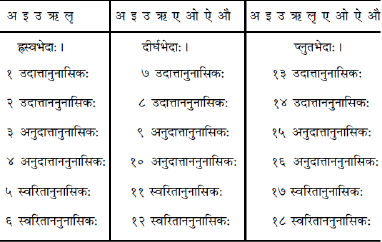
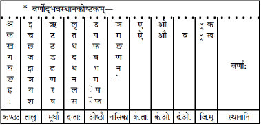
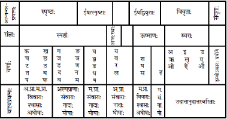
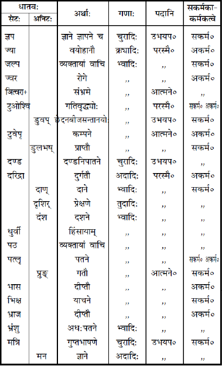
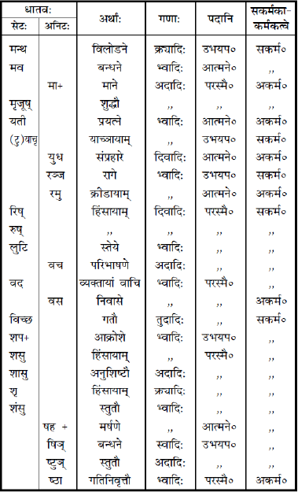
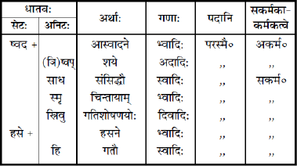

श्रीमद्विद्वद्वरवरदराजाचार्यप्रणीता
लघुसिद्धान्तकौमुदी
सेयं व्याकरणाचार्येण पण्डित श्रीनारायणदत्तत्रिपाठिना पाण्डेयोपाह्वपण्डित श्रीरामनारायणदत्तशास्त्रिणा च टिप्पणादिभि: समलङ्कृत्य सम्पादिता
त्वमेव माता च पिता त्वमेव
त्वमेव बन्धुश्च सखा त्वमेव।
त्वमेव विद्या द्रविणं त्वमेव
त्वमेव सर्वं मम देवदेव॥
॥ श्रीहरि:॥
निवेदनम्
निखिलेऽस्मिन् पञ्चतत्त्वाञ्चिते वैरिञ्चप्रपञ्चेऽनादिकालतो बन्धनमुपेत्य प्रारब्धपरिणतिं भुञ्जानानां जनानामाध्यात्मिकादितापत्रयचिन्ताचक्रव्यूहोत्पाटनपटीयो ज्ञानमेवामनन्ति मोक्षोपायतया नि:श्रेयससाधनैकमतयो यतयो महर्षयश्च। तच्च ज्ञानमाम्नायवाङ्मयतात्पर्यपर्यालोचनोल्लसत्सद्विवेकोद्रेकादेव समधिगन्तुं शक्यत इति नास्ति परोक्षं प्रेक्षावताम्। तात्पर्यपर्यालोचनं च तत्तच्छब्दानुबन्धितत्तदर्थबोधकशक्तिग्रहायत्तम्, शक्तिग्रहस्तु ‘शक्तिग्रहं व्याकरणोपमानकोशाप्तवाक्याद्वॺवहारतश्च’ इति वृद्धजनोक्त्या प्राधान्येन व्याकरणादेव बोभवीतीति तदेव सर्वत: प्रागाश्रयणीयं निगमागमार्थसार्थं परिचिचीषुभि:। किञ्च ‘षडङ्गो वेदोऽध्येयो ज्ञेयश्च’ इति विधिश्रवणात् षड्भिरङ्गै: संवलितस्यैव वेदस्य तत्त्वज्ञानं श्रेय:साधनमभिमतम्; तेष्वङ्गेषु च ‘छन्द: पादौ तु वेदस्य मुखं व्याकरणं स्मृतम्’ इति वचनाद् व्याकरणमेव मुखमिव प्रमुखतामावहति प्रागध्येतव्यतां चेति नाविदितचरं गीर्वाणवाणीप्रणयिनाम्।
व्याकरणं च मुख्यतो नवधानुश्रूयते, ‘ऐन्द्रं चान्द्रं काशकृत्स्नं कौमारं शाकटायनम्। सारस्वतं चापिशलं शाकलं पाणिनीयकम्॥’ इति तत्त्वनिधावुक्ते:; हनुमन्तमुद्दिश्य ‘सोऽयं नवव्याकरणार्थवेत्ता’ इति वाल्मीकीयवचनाच्च। ननु हनुमत: काले पाणिन्यादेरनुत्पत्त्या नेदं संगच्छत इति चेन्न ‘धाता यथापूर्वमकल्पयत्’ इति श्रुत्या पूर्वपूर्वकल्पोद्भूतपाणिन्यादीनां व्याकरणसत्त्वानुमानात्। तत्रैन्द्रव्याकरणे ‘तामिन्द्रो मव्यतोपक्रम्य व्याकरोत्। तस्मादियं व्याकृता वागुच्यते’ इति श्रुतिरेव प्रमाणम्। ‘चान्द्रास्तु आत्मोदरकुक्षिष्विति पेठु:’ इत्यादिवचनाच्चान्द्रस्यापि सत्तानुमीयते। ‘शताच्च ठन्यतावशते’ इति सूत्रे भाष्ये नामतो निर्देशात् काशकृत्स्नसत्तापि निश्चीयते। कौमारं त्वाग्नेयपुराणे वर्ण्यते, केचित्तु पाणिनिकृतं प्रातिशाख्यसूत्रमेव कौमारमिति वदन्ति। सारस्वतम्, ऋक्तन्त्रापराभिधानं शाकटायनं चाद्यत्वे मुद्रिते उपलभ्येते। आपिशलं शाकलं च पाणिनिसूत्रेषु तन्नाम्नोरनुवादादनुमीयेते।
यद्यप्यद्यत्वे जैनेन्द्राशुबोधकातन्त्राद्यभिधानानि विविधानि व्याकरणान्युपलभ्यन्ते तथापि नैतेषां वेदाङ्गत्वम्। निखिललौकिकालौकिकशब्दानां व्युत्पादकतया पाणिनीयव्याकरणमेव सर्वेषां मूर्धन्यं धन्यं च सद् वेदाङ्गतामाधत्ते। ‘इदमक्षरं छन्दोवर्णश: समनुक्रान्तं ब्रह्मा बृहस्पतये प्रोवाच, बृहस्पतिरिन्द्राय, इन्द्रो भरद्वाजाय, भरद्वाज ऋषिभ्य:, ऋषयो ब्राह्मणेभ्य:। तं खल्विममक्षरसमाम्नायमित्याचक्षते; ‘न भुक्त्वा न नक्तं ब्रूयाद् ब्रह्मराशि:।’ इति ऋक्तन्त्रव्याकरणोक्तरीत्याक्षररूपस्यास्य चतुर्दशसूत्रसमूहस्याम्नायत्वं निष्पद्यते, तन्मूलकत्वाच्चेदं वेदशरीरमभ्युपगम्यते।
एतस्य प्रणेतु: पाणिन्यादे: परिचयजिज्ञासा स्वाभाविकीति तद्विषये किञ्चिन्निवेद्यते—तत्रादिराचार्यो महानुभाव: पाणिनि: शलङ्कनामधेयात्पितुर्दाक्ष्यां जन्म लेभे। यद्यप्येतस्याभिधानम् ‘आहिक:’* इत्यासीत्तथापि गोत्राश्रयपाणिनिनाम्नैवायं प्रसिद्धिमापेदे। पञ्चापप्रदेशे सलातुराभिधो ग्रामोऽस्य जन्मभूरासीद् य एवेदानीम् ‘सलातुर—हलाथुर—हलाहुर—लाहुर’ इति क्रमेणापभ्रंशं गत: ‘लाहौर’ इति परिणत:। एतस्याद्यावधि कियान् कालोऽतीत इति विषयमधिकृत्य मतानि बेभिद्यन्ते। पाश्चात्त्यो विद्वान् (cunningham) कनिङ्गहममहोदय: ख्रिस्ताब्दप्रवृत्ते: सार्द्धत्रिशतवर्षपूर्वमेव पाणिनिसमयं सम्भावयति। अन्ये तु प्राय: सहस्रवर्षपूर्वमनुमन्यन्ते, अपरे च ख्रिस्ताब्दत: सार्द्धद्विसहस्रतोऽप्यधिकपूर्वं पाणिनिकालमाकलयन्ति। एतदन्तिमं मतं युक्तिविमर्शमूलकतया समीचीनं भाति। ये किल ख्रिस्ताब्दत: प्राक् सहस्रवर्षाभ्यन्तर एव पाणिनिसमयं सम्मन्यन्ते ते पाणिनिकात्यायनौ नन्दराज्यकालवर्तिनौ समानकालिकावित्यूरीकुर्वन्ति। आख्यायिकां चेमामुदाहरन्ति यत् ‘मुग्धबुद्धि: पाणिनिर्वर्षोपाध्यायं गुरुं विद्यार्थमुपश्रितस्तत्र सतीर्थ्येन कात्यायनेन वादे पराजित: पराभूतश्च सन्निर्वेदमवाप्य भगवन्तं महेशानं तपसा प्रसाद्य ढक्कानादसमुद्भूतां चतुर्दशसूत्रीं व्याकृतिसूत्रनिर्माणशक्तिं विद्वत्तां चातुलामाससादेत्यादि।’ परन्तु विचारनिकषोपरि कषणेन तपोद्वारकमहेश्वरप्रसादादिवरप्राप्त्यन्तं वृत्तान्तमपहायान्यद्वृत्तं न विश्वासपदवीमधिरोहति; यत: पाणिनिसूत्रेषु राज्ञो जनमेजयादुत्तरकालिको न कश्चन सूत्र्यते, नैतावदेव, पाराशर्यव्याससूनो: शुकस्यापि नाम नोपन्यभान्त्सीत् सूत्रकृत्। पश्चात् कियत्कालानन्तरं शुकस्य ‘वैयासकि’ रूपाम् अपत्यबोधकसंज्ञामनुश्रुत्य तत्साधनाय कात्यायनेन वररुचिना व्यासवरुडेति वार्तिकमारब्धम्। एवंविधप्रचुरप्रमाणपर्यालोचनयेदं निर्णेतुं शक्यते यज्जनमेजयकाले तदुत्तरसन्निहितकाले वा पाणिनिरासीत्। तदानीं वैयासकिवारुडकिप्रभृतिपदानां लोकव्यवह्रियमाणता नासीदतस्तदर्थं सूत्रं न प्राणायि पाणिनिना। यद्युभयोरेककालत्वमङ्गीक्रियेत तर्हि पाणिनिना यदनुक्तं दुरुक्तं च तत्कात्यायनेन पूरितं प्रत्याख्यातं चेति स्वीकर्तव्यं स्यात्, एवं च सति पाणिनेर्भ्रान्तत्वापत्तिरल्पविद्यत्वापत्तिश्च स्याताम्। विभिन्नकालत्वाङ्गीकारे तु पाणिनिना स्वसमयेऽव्यवह्रियमाणतया यदनुक्तं तद्वार्तिककृता स्वसमये व्यवहारविषयतया पूरितम्। तथा कालपरिवर्तनक्रमेण भाषायामपि किञ्चित्परिवर्तनस्य सम्भावयितुं शक्यतया तदानीन्तनप्रयोगानुसारेण यद्दुरुक्तं प्रतीतं तत्कात्यायनेन प्रत्याख्यातमिति कल्पयितुं शक्यते। अतोऽनयोर्विभिन्नकालत्वमेव विचारसहम्।
*‘पाणिनिस्त्वाहिको दाक्षीपुत्र: शालङ्किपाणिनौ’ इति त्रिकाण्डशेषात्।
तथा च जनमेजयनृपसन्निहितकाले कलेश्चतुर्थ्यां शताब्द्यां ख्रिस्ताब्दत: सप्तविंशतिशतवर्षपूर्वं पाणिने: काल: सम्भाव्यते। कात्यायनस्य तु पाणिने: परस्तात्पञ्चषशतसंख्येयासु समासु कले: सहस्रासन्नायां समायां सत्ता सम्भावयितुमर्हा। एषोऽपि पाणिनिवद्गोत्रनाम्नैव विश्रुत:। श्रुतधरो वररुचिश्चेतिद्वे अभिधाने अस्य श्रूयेते। अयं प्रयागत: पश्चिमदिशि कलिन्दजाकूले विलसितां कौशाम्बीं नाम नगरीं (यैवेदानीं ‘कोसम’ ग्रामाभिधयाभिधीयते) स्वजन्मनालञ्चकार। सोमदत्तोऽस्य पिता वसुदत्ता च प्रसूरासीदिति प्रसिद्धि:। एतस्य वार्तिकै: समलङ्कृतानि पाणिनिसूत्राणि प्रसृमरप्रचाराण्यभूवन्। कात्यायनवार्तिकानां प्रणयनात् प्राक् पाणिनिसूत्राणामध्ययनाध्यापनयो: प्रवृत्तिर्दु:शकैवासीदिति नाविदितं वैयाकरणानाम्। यद्यपि सूत्रवार्तिककदम्बोपरि श्रीव्याडिविदुषा विरचितो लक्षश्लोकात्मको व्याख्याग्रन्थ आसीत्तथान्यैश्च कुण्यादिभिराचार्यै: प्रणीता वृत्तयोऽप्यासंस्तथापि नैतैर्ग्रन्थै: पूर्णतया तत्त्वमध्येतॄणां हृदयङ्गमं बोभूयते स्मेति लोकोपकृतिवशंवदो भगवान् पतञ्जलिर्विशदाशयविवेचनात्मकं महाभाष्यनामकं ग्रन्थं निरमात्। श्रूयते यन्महेश्वरप्रेरणया भगवाञ्छेष एवास्मभ्यमशेषार्थोपदेशार्थं पतञ्जलिनाम्नावतीर्ण आसीदित्यहो भागधेयमस्मदादीनाम्। एतस्य भगवत: पतञ्जले: कले: सप्तविंशतितमशताब्द्यां ख्रिस्ताब्दत: शतचतुष्टयवर्षपूर्वं सत्त्वमासीदिति विदामनुमानम्। अस्य गोणिकाख्या जननी, जन्मभूमिश्च गोनर्ददेशोऽभवत्। अयं गोनर्ददेश: कश्मीरेऽस्तीत्येके। अवधप्रान्ते ‘गोण्डा’ नाम्ना विख्यातं नगरमेव गोनर्द इत्यपरे मन्यन्ते।
भाष्यकारमनु काले काले भर्तृहरिकैयटप्रभृतयोऽन्ये विद्वांसो महाभाष्योपरि विवृतीर्वृत्तिग्रन्थांश्चालिखन् परन्तु तत्र तत्र प्रकरणसौष्ठवाद्यभावादायासबाहुल्यादृते सिद्धान्तज्ञानं सुदु:शकमेवासीदिति व्याकरणतत्त्वबुभुत्सूनां कृते परोपकृतिपरप्रकृतिपरतन्त्रतया श्रीलक्ष्मीधरतनुजनुषा भट्टोजिदीक्षितेन शब्दकौस्तुभ:, तत्सारभूता वैयाकरणसिद्धान्तकौमुदी, तद्वॺाख्यानभूता प्रौढमनोरमा च प्राणायिषत; तथान्येऽपि बहवो ग्रन्था अनेन निरमायिषत। एतत्प्रणीतव्याकरणग्रन्थानामन्यतमा वैयाकरणसिद्धान्तकौमुदी, सर्वसिद्धान्तसंग्रहात्मकतया सौविध्याधिक्यादविरलप्रचाराभवत्। परन्त्वियमपि प्रायेण विदुषामेव मन:कुमुदमोदिनी समजनि यत: फक्किकासम्पर्ककर्कशतया स्वभावत: सुकुमारमतीनां बालकानां चेतसे नातीवेयमरोचत। ततो बालानामपि बुद्धीर्व्याकरणविषये निवेशयितुमनसा भट्टोजिदीक्षितस्यैवान्तेवासिना श्रीदुर्गातनयतनयेन विद्वद्वरवरदराजाचार्येण सारकौमुदीमध्यकौमुदीलघुकौमुदीगीर्वाणपदमञ्जरीनामानो ग्रन्था: समपादिषत। श्रीभट्टोजिदीक्षित: सारस्वतब्राह्मणोऽपि सन् महाराष्ट्रे निवसति स्मेति केचित्। अपरे तु सम्प्रति महाराष्ट्रियसारस्वतव्यपदेशभाजां विप्राणामृग्वेदीयाश्वलायनशाखान्तर्गतत्वाद् भट्टोजिदीक्षितस्य तु तैत्तिरीयसन्ध्याभाष्यनिर्माणादिना कृष्णयजुर्वेदीयतैत्तिरीयशाखिविप्रवंशावतंसतयानुमानान्नासौ महाराष्ट्रियसारस्वत:, प्रत्युत पञ्चद्राविडान्तर्गत आसीदिति सिद्धॺति, सप्तगोदावरीप्रदेशे चास्यावस्थानमभूत्। श्रीशेषकृष्णपण्डितराजजगन्नाथाप्पय्यदीक्षितप्रभृतिद्राविडविद्वद्भि: सह घनिष्ठसहवासाच्चैतन्मतं पुष्यतीति वदन्ति। अयं शालिवाहनशकस्य पञ्चदशशताब्द्यामासीत्। एतस्यैवान्तेवासित्वाद् वरदराजाचार्यस्यापि सत्ताकाल: पञ्चदशशताब्द्येवेति बोध्यम्।
एतत्प्रणीतग्रन्थानामन्यतमा लघुसिद्धान्तकौमुदीयं तत्र भवतां पाठकानां सम्मुखीना समुल्लसति। लघुकलेवराप्येषा समासत: सिद्धान्तकौमुदीसम्भवं समस्तं ज्ञानं समुद्भावयति। ननु सिद्धान्तकौमुद्या एवेदं संक्षिप्तं संस्करणं किमत्र वरदराजेन कृतम्? न हि सम्पादनमात्रेणैव निर्माणश्रेयोभागित्वं तस्येत्यादिप्रकारेण नात्राक्षेपणीयम्; भट्टोजिदीक्षितस्यापि वैयाकरणसिद्धान्तकौमुद्या: सम्पादनातिरिक्तनिर्माणश्रेयोभागित्वाभावात्। न हि मुनित्रयानुक्तमपूर्वं किमपि श्रद्धेयं तेनाप्युक्तम्, महाभाष्यसिद्धान्तानामेवासौ कौमुदी, महाभाष्यत: सिद्धान्तान् सङ्कलय्य सम्पादनादतिरिक्तं दीक्षितस्यापि न हि किमपि तत्र नूतनं कर्म। किञ्च यद्यपि सिद्धान्तकौमुद्या एवेदं संक्षिप्तं संस्करणम्, तथापि ततो महद् वैलक्षण्यमत्रेति पात्यतां सूक्ष्ममीक्षणमिह सुधीभि:।
लघुसिद्धान्तकौमुद्यां सिद्धान्तकौमुदीत: प्रकरणविपर्यासोऽवलोक्यते स च सहेतुकस्तथा हि—सिद्धान्तकौमुद्याम् अव्ययात् पश्चात् स्त्रीप्रत्ययादितद्धितान्तमभिधाय तिङन्तमारभ्यते तदनु च कृदन्तम्। लघुसिद्धान्तकौमुद्यान्तु स्त्रीप्रत्ययप्रकरणं ग्रन्थान्ते स्थापितम्, कारकादितद्धितान्तञ्च कृदन्तादपि परस्तात्कृतम्। तिङन्तकृदन्ताभ्यां परस्तात्कारकप्रकरणपाठस्य प्रयोजनं तावद् दृश्यताम्—कारके ‘अकथितं च’, ‘कर्तृकरणयोस्तृतीया’ इत्यादीनि बहूनि सूत्राणीत्थं वर्तन्ते यै: कारकस्य तिङन्तकृदन्तावनु पठनीयता समर्थ्यते अन्यथा तिङन्तज्ञानादृते दुह्यादिधातूनाम्, तिङ्कृतोर्ज्ञानं विनानभिहितकर्तृत्वादीनां च बोध: कुत: स्यात् ? किञ्च क्रियान्वयित्वं कारकत्वमित्युक्तदिशा क्रियाज्ञापकप्रकरणोत्तरत एव कारकप्रकरणमारब्धव्यम्। एवमेव ‘उपपदमतिङ्’, ‘कर्तृकरणे कृता बहुलम्’ इत्यादीनि समासस्य, ‘कृभ्वस्तियोगे सम्पद्यकर्तरि च्वि:’, ‘क्त्रेर्मम्नित्यम्’ इत्यादीनि च सूत्राणि तद्धितस्य तिङन्तकृदन्तोत्तरस्थितिं ज्ञापयन्ति। ‘टिड्ढाणञ्द्वयसज्०’, ‘द्विगो:’ इत्यादीनि सूत्राणि च स्त्रीप्रत्ययस्य सर्वप्रकरणान्तस्थितिं समर्थयन्तीत्यालोच्यैव श्रीमता वरदराजाचार्येणाध्येतॄणां सौविध्यसम्पादनार्थं प्रकरणं व्यत्यस्य स्वीया सूक्ष्मदर्शितैव दर्शिता किञ्चात्र विषये पूर्वप्रकरणमनु परप्रकरणारम्भस्योपयोगिताबोधकमवतरणं तत्र तत्र टिप्पणे द्रष्टव्यम्।
एवमियं लघुसिद्धान्तकौमुदी यद्यपि स्वभावत एव बालोपयोगिनी तथापि क्वचित्क्वचिद् विषमस्थले सरलतापादनार्थं टिप्पणमावश्यकमस्ति। अद्यत्वे यद्यपि विविधटिप्पणोट्टङ्कितानि लघुसिद्धान्तकौमुद्या नाना संस्करणानि मुद्रितानि सन्ति, तथापि तानि नातीवोपयोगितां पिपुरतीति विशेषतो बालानामुपयोगमेवोद्दिश्य अस्माभिरिदं नूतनटिप्पणसंवलितं संस्करणं प्राकाशि। सम्प्रति गुरव: शिष्येभ्यो यथाध्यापयन्ति तामेव सरणिमनुसृत्यावश्यकस्थलेषु निगूढार्थप्रकाशकं टिप्पणं सरलसंस्कृतेनोल्लिखितम्। अत्र दुर्बोधार्थानां सूत्रवार्तिकानाम् अर्था: स्पष्टीकृतास्तेषां च लक्ष्ये समन्वयो दर्शित:। संस्कृतभाषया पदसाधुत्वलेखनज्ञानसम्पादनार्थं च प्रतिप्रकरणं कठिनप्रयोगाणां सरलसंस्कृतगिरा साधनमपि न्यबन्धि। अनुवादोपयोगायात्रोदाहृतानां पदानामर्था अप्युपन्यस्ता:। किं च ग्रन्थान्ते लिङ्गानुशासनोक्तदिशा लिङ्गपरिचयोऽप्यङ्कितो यतोऽनुवादादौ लिङ्गबोधे साहाय्यमुपलभ्येत। अभ्यासार्थं वर्षनवकस्य प्रश्नपत्राण्यपि सङ्कलितानि। विद्यार्थिनां सौविध्यार्थं सूत्रवार्तिकधातूनां सूचीभि: सहैव धातुषु सकर्मकाकर्मकत्वे अपि प्रादर्शिषाताम्। परिभाषाणां गणानां च पाठ: संकलित:। एवमयं ग्रन्थ: साम्प्रतिकपरीक्षार्थिनां कृतेऽतीवोपयोगी संवृत्त:। अत्रत्यटिप्पण्या अधिकांशो भाग: श्रीवाराणसेयमारवाड़ीसंस्कृतकालेजप्रधानाध्यापकेनाध्यापनकलाकोविदेन पण्डितप्रवरेण नृसिंहापराभिधाननारायणदत्तत्रिपाठिना व्याकरणाचार्येण व्यरचीति किं ब्रूमोऽस्य ग्रन्थस्योपयोगिताम्? अथ गुणैकपक्षपातिनस्तत्र भवतोऽध्यापकानध्येतृंश्चानुरुन्ध्महे वयं यदिमं ग्रन्थमात्मसात्कृत्य सफलयन्तु भवन्तोऽस्माकं परिश्रमं कृतार्थयन्तु चास्मान्।
अस्मिन् ग्रन्थे सूत्राणि स्थूलाक्षरैरुपन्यस्तानि। वार्तिकानि त्वित्थं भूते ( ) कोष्ठके मुद्रितानि सन्ति। (ग० सू०) इति गणसूत्राणां संकेत: (प०) इति च परिभाषाया इत्यादि सम्यग् विवेचनीयम्।
अत्रास्माकं प्रमादवशाद् यद्यशुद्धयोऽवशिष्टा भवेयुस्तर्हि करुणावशंवदा विद्वांसो मानवस्वभावमाकलय्य क्षमन्तां सूचयन्तु च ता यतोऽग्रिमे संस्करणे संशोधयितुं प्रयतिष्यामह इति शिवम्। इति—
निवेदयते विदुषां विधेयो
रामनारायणदत्तपाण्डेय:
शुक्लां ब्रह्मविचारसारपरमामाद्यां जगद्व्यापिनीं
वीणापुस्तकधारिणीमभयदां जाडॺान्धकारापहाम्।
हस्ते स्फाटिकमालिकां विदधतीं पद्मासने संस्थितां
वन्दे तां परमेश्वरीं भगवतीं बुद्धिप्रदां शारदाम्॥
॥ श्रीगणेशाय नम:॥
लघुसिद्धान्तकौमुदी
नत्वा सरस्वतीं देवीं शुद्धां गुण्यां करोम्यहम्।
पाणिनीयप्रवेशाय लघुसिद्धान्तकौमुदीम्॥
* अहं वरदराजाचार्य: शुद्धां दोषरहितां गुण्यां प्रशस्तगुणयुक्तां सरस्वतीं देवीं वाग्देवतां नत्वा नमस्कृत्य पाणिनीयप्रवेशाय बालानां पाणिनीयव्याकरणशास्त्रे प्रवेशार्थं लघ्वी चासौ सिद्धान्तकौमुदी ताम् करोमि इत्यन्वय:॥
एकद्वित्रिचतूरूपामरूपां बहुरूपिणीम्।
गिरं नत्वा गिरं ज्ञातुं क्रियते लघुटिप्पणी॥
अथ संज्ञाप्रकरणम्
अइउण् १। ऋलृक् २। एओङ् ३। ऐऔच् ४। हयवरट् ५। लण् ६। ञमङणनम् ७। झभञ् ८। घढधष् ९। जबगडदश् १०। खफछठथचटतव् ११। कपय् १२। शषसर् १३। हल् १४॥
इति१ माहेश्वराणि सूत्राण्यणादिसंज्ञार्थानि२-३। एषामन्त्या४ इत:। हकारादिष्वकार५ उच्चारणार्थ:। लण्मध्ये६ त्वित्संज्ञक:॥
१. इति इमानि पूर्वोक्तानि चतुर्दशसूत्राणि माहेश्वराणि महेश्वरादागतानि महेश्वरवरप्रसादात् पाणिनिना लब्धानीति फलितोऽर्थ:। तदुक्तम्—
नृत्तावसाने नटराजराजो ननाद ढक्कां नवपञ्चवारम्।
उद्धर्तुकाम: सनकादिसिद्धानेतद्विमर्शे शिवसूत्रजालम्॥इति॥
किं चात्र—
‘येनाक्षरसमाम्नायमधिगम्य महेश्वरात्’
—इति शिक्षावचनमपि प्रमाणम्॥
२-सभेदं सूत्रलक्षणं यथा—
संज्ञा च परिभाषा च विधिर्नियम एव च।
अतिदेशोऽधिकारश्च षड्विधं सूत्रलक्षणम्॥
अल्पाक्षरमसन्दिग्धं सारवद्विश्वतोमुखम्।
अस्तोभमनवद्यं च सूत्रं सूत्रविदो विदु:॥ इति॥
अणादिसंज्ञार्थतया शिवसूत्राण्यपि संज्ञासूत्राण्येवेति बोध्यम्॥
३-किमर्थानि इमानि? अत उक्तम्—अणादीति। अण् आदिर्यासां ता अणादयस्ताश्च ता: संज्ञा अणादिसंज्ञास्ता अर्थ: प्रयोजनं येषां तानि अणादिसंज्ञार्थानि॥
४-ननु कथंकारमेषां सूत्राणामणादिसंज्ञार्थत्वम्? इति चेत्तत्राह—एषामिति; एषां चतुर्दशसूत्राणामन्ते भवा अन्त्या अन्तिमाश्चतुर्दशवर्णा इत इत्संज्ञका इत्यर्थ:; ततश्च ‘आदिरन्त्येन—’ इति सूत्रप्रवृत्त्या अणादिसिद्धिरिति तत्रैव स्पष्टीकरिष्यते॥
५-‘हयवरट्’ इत्यादिसूत्रेषु हकारादिप्रतिवर्णोत्तरमकारोच्चारणेन हशादिप्रत्याहारे अकारसहिता एव हकारादयो गृह्येरन्निति शङ्कामपाकरोति—हकारादिष्विति; अयं भाव:, यद्यपि तत्र तत्र प्रत्याहारेऽकारसहितास्त उच्चार्यन्ते तथापि तेष्वकारो न विवक्षित:॥
६-पूर्ववाक्येन लणोऽकारस्योच्चारणार्थत्वमुपपद्यतेऽत आह—लण्मध्ये त्विति; लण्मध्यवर्ती अकारस्तु इत्संज्ञको नोच्चारणार्थ:। इत्संज्ञाफलं च दर्शयिष्यते—‘लण्सूत्रस्थावर्णेन०’ इत्यादिना॥
हलन्त्यम् १।३।३॥
उपदेशेऽन्त्यं हलित्स्यात्। उपदेश१ आद्योच्चारणम्। सूत्रेष्वदृष्टं२ पदं सूत्रान्तरादनुवर्तनीयं सर्वत्र॥
१-पाणिनिकात्यायनपतञ्जलिकर्तृकं प्रथममुच्चारणमित्यर्थ:। केचित्तु उपदेशपदार्थमित्थमाहु:—
धातुसूत्रगणोणादिवाच्यलिङ्गानुशासनम्।
आगमप्रत्ययादेशा उपदेशा: प्रकीर्तिता:॥इति॥
२-ननु सूत्राधीना वृत्ति:, सूत्रं तु हलन्त्यमित्येतावन्मात्रम्, वृत्तावुपदेश इति कथनमधिकमित्याशङ्कॺाह—सूत्रेष्विति; सूत्रेषु यत्पदं न दृष्टं तदन्यस्मात्सूत्रादनुवर्तनीयम् इति सर्वत्र ज्ञेयम्॥
अदर्शनं लोप: १। १। ६०॥
प्रसक्तस्यादर्शनं* लोपसंज्ञं स्यात्॥
* विद्यमानस्येत्यर्थ:॥
तस्य लोप: १। ३। ९॥
तस्येतो लोप: स्यात्। णादयोऽणाद्यर्था:*।
* ननु यदि ‘अइउण्’ इत्यादिसूत्रेषु णकारादीनामित्संज्ञालोपौ क्रियेते तर्हि तदुच्चारणमेव न कार्यमित्यत आह—णादय इति; णकारादयो लकारपर्यन्ता: सूत्रान्त्यवर्णा अणादिप्रत्याहारार्था:॥
आदिरन्त्येन सहेता १। १। ७१॥
अन्त्येनेता१ सहित आदिर्मध्यगानां स्वस्य च संज्ञा स्यात् यथाऽणितिअइउवर्णानां संज्ञा। एवमच्हल्अलित्यादय:२॥
१. यथाऽण्प्रत्याहारे साधनीयेऽन्त्य इत् णकार:, तत्सहित आदि: अकारोऽर्थाद् अणिति, तद् अण्पदमकारणकारयोर्मध्यवर्तिन: ‘इ उ’ इति वर्णद्वयस्य संज्ञा स्वरूपस्याकारस्य च। तदेवाह ‘यथाऽणिति०’ इत्यादिना॥
२. प्रत्याहाराणामकारादिक्रमेण परिसंख्या—
[सारणी चित्र (image_1) — मूल छवि उपलब्ध नहीं]
महेश्वरसूत्रसिद्धानां सवार्तिकपाणिनिसूत्रव्यवहृतानामेव प्रत्याहाराणामियं संख्येति बोध्यम्॥
ऊकालोऽज्झ्रस्वदीर्घप्लुत:१ १। २। २७॥
उश्च ऊश्च ऊ३श्च व:; वां काल इव कालो यस्य सोऽच् क्रमाद् ह्रस्वदीर्घप्लुतसंज्ञ: स्यात्। स२ प्रत्येकमुदात्तादिभेदेन त्रिधा॥
१-एकमात्रिकोकारोच्चारणकालसदृशकालकोऽच् ह्रस्वसंज्ञ:, द्विमात्रिकोकारोच्चारणकालसदृशकालकोऽच् दीर्घसंज्ञ:, त्रिमात्रिकोकारोच्चारणकालसदॄशकालकोऽच् प्लुतसंज्ञ इति भाव:॥
२-स लब्धह्रस्वादिसंज्ञकोऽच्॥
उच्चैरुदात्त:* १। २। २९॥
* ताल्वादिषु स्थानेषूर्ध्वभागे निष्पन्नोऽजुदात्त:॥
नीचैरनुदात्त:* १। २। ३०॥
* ताल्वादिषु स्थानेष्वधोभागे निष्पन्नोऽजनुदात्त:॥
समाहार:* स्वरित: १। २। ३१॥
* उदात्तत्वानुदात्तत्वयोरेकत्र समाहारो यत्र सोऽच् स्वरित:॥
स नवविधोऽपि* प्रत्येकमनुनासिकत्वाननुनासिकत्वाभ्यां द्विधा॥
* स लब्धोदात्तादिसंज्ञक:॥
मुखनासिकावचनोऽनुनासिक:१ १। १। ८॥
मुखसहितनासिकयोच्चार्यमाणो वर्णोऽनुनासिकसंज्ञ: स्यात्। तदित्थम्१—अ इ उ ऋ एषां वर्णानां प्रत्येकमष्टादश भेदा:। लृवर्णस्य द्वादश तस्य दीर्घाभावात्। एचामपि द्वादश तेषां ह्रस्वाभावात्२॥
१. मुखेन सहिता मुखसहिता, सा चासौ नासिका च मुखनासिका, उच्यतेऽसाविति वचन:, मुखनासिकया वचन इति विग्रह:॥
२. पूर्वोक्तै: ‘ऊकालोऽच्-’ इत्यादिभि: पञ्चभि: सूत्रैर्यत्कार्यमुक्तं तदित्थमनेन प्रकारेण ज्ञेयमित्यर्थ:॥
३. अचामष्टादशभेदविवरणम्—

तुल्यास्यप्रयत्नं* सवर्णम् १। १। ९॥
* अस्यन्ति उच्चारयन्ति वर्णान् अनेनेति आस्यम्, आस्ये भवमास्यं प्रकृष्टो यत्न: प्रयत्न: आस्यं च प्रयत्नश्च आस्यप्रयत्नौ तुल्यावास्यप्रयत्नौ यस्य तत्तुल्यास्यप्रयत्नम्॥
ताल्वादिस्थानमाभ्यन्तरप्रयत्नश्चेत्येतद्द्वयं यस्य येन तुल्यं तन्मिथ: सवर्णसंज्ञं स्यात् (ऋलृवर्णयोर्मिथ: सावर्ण्यं वाच्यम्)। अकुहविसर्जनीयानां कण्ठ:। इचुयशानां तालु। ऋटुरषाणां मूर्धा। लृतुलसानां दन्ता:। उपूपध्मानीयानामोष्ठौ। ञमङणनानां नासिका च*। एदैतो: कण्ठतालु। ओदौतो: कण्ठोष्ठम्। वकारस्य दन्तोष्ठम्।
* चकारेण स्वस्ववर्गानुकूलं ताल्वादि समुच्चीयते॥
जिह्वामूलीयस्य जिह्वामूलम्। नासिकाऽनुस्वारस्य*।

यत्नो द्विधा—आभ्यन्तरो बाह्यश्च। आद्य: पञ्चधा—स्पृष्टेषत्स्पृष्टेषद्विवृतविवृतसंवृतभेदात्। तत्र स्पृष्टं प्रयत्नं स्पर्शानाम्। ईषत्स्पृष्टमन्त:स्थानाम्। ईषद्विवृतमूष्मणाम्। विवृतं स्वराणाम्। ह्रस्वस्यावर्णस्य प्रयोगे संवृतम्। प्रक्रियादशायां तु विवृतमेव। बाह्यप्रयत्नस्त्वेकादशधा१—विवार: संवार: श्वासो नादो घोषोऽघोषोऽल्पप्राणो महाप्राण उदात्तोऽनुदात्त: स्वरितश्चेति। खरो विवारा: श्वासा अघोषाश्च। हश: संवारा नादा घोषाश्च। वर्गाणां प्रथमतृतीयपञ्चमा यणश्चाल्पप्राणा:। वर्गाणां द्वितीयचतुर्थौ शलश्च महाप्राणा:। कादयो मावसाना: स्पर्शा:। यणोऽन्त:स्था:। शल ऊष्माण:। अच: स्वरा:। क२ ^ॅ ख ^ॅ इति कखाभ्यां प्रागर्धविसर्गसदृशो जिह्वामूलीय:। ^ॅ प्र ^ॅ फ इति पफाभ्यां प्रागर्धविसर्गसदृश उपध्मानीय:। अं अ: इत्यच: परावनुस्वारविसर्गौ॥
१-बाह्यप्रयत्ना यद्यपि सवर्णसंज्ञायामनुपयुक्तास्तथापि वर्णानामान्तरतम्य- परीक्षायामेषामुपयोगो बोध्य:॥
२-आभ्यन्तरबाह्यप्रयत्नज्ञानार्थकं कोष्ठकम्—

अणुदित्सवर्णस्य चाप्रत्यय: १। १। ६९॥
प्रतीयते विधीयत इति प्रत्यय:। अविधीयमानोऽणुदिच्च१ सवर्णस्य संज्ञा स्यात्। अत्रैवाण् परेण२ णकारेण। कु चु टु तु पु एते उदित:। तदेवम्—अ इत्यष्टादशानां संज्ञा। तथेकारोकारौ। ऋकारस्त्रिंशत:। एवं लृकारोऽपि। एचो द्वादशानाम्। अनुनासिकाननुनासिकभेदेन यवला द्विधा३; तेनाननुनासिकास्ते द्वयोर्द्वयोस्संज्ञा:॥
१-विधीयमानोऽण् आदेशप्रत्ययागमरूपस्तद्भिन्नोऽण् उद्देश्यभूत: स स्वसवर्णस्य संज्ञा इत्यर्थ:॥
२-अत्रेदं प्रमाणम्—
परेणैवेण्ग्रहा: सर्वे पूर्वेणैवाण्ग्रहा मता:।
ऋतेऽणुदित्सवर्णस्येत्येतदेकं परेण तु॥ इति॥
३ -य्ँ य् व्ँ व् ल्ँ ल् इत्येवंरूपेणेति बोध्यम्; तेन हेतुना निरनुनासिका यरादिषु पठितास्ते यवला द्वयोर्द्वयोर्ग्राहका भवन्तीत्यर्थ:।
पर: संनिकर्ष: संहिता १। ४। १०९॥
वर्णानामतिशयित: संनिधि: संहितासंज्ञ: स्यात्॥
हलोऽनन्तरा: संयोग: १। १। ७॥
अज्भिरव्यवहिता हल: संयोगसंज्ञा: स्यु:॥
सुप्तिङन्तं पदम् १। ४। १४॥
सुबन्तं तिङन्तं च पदसंज्ञं स्यात्॥
इति संज्ञाप्रकरणम्।
अथ अच् सन्धि:
इको यणचि ६।१।७७॥
इक: स्थाने यण् स्यादचि संहितायां विषये। सुधी उपास्य इति स्थिते॥
तस्मिन्निति निर्दिष्टे पूर्वस्य १। १। ६६॥
सप्तमीनिर्देशेन विधीयमानं कार्यं वर्णान्तरेणाव्यवहितस्य पूर्वस्य बोध्यम्॥
स्थानेऽन्तरतम: १। १। ५०॥
प्रसङ्गे सति सदृशतम आदेश: स्यात्। सुध्य् उपास्य इति जाते॥
अनचि च ८। ४। ४७॥
अच: परस्य यरो द्वे वा स्तो न त्वचि। इति धकारस्य द्वित्वेन सुध्ध्य् उपास्य इति जाते॥
झलां जश् झशि ८। ४। ५३॥
स्पष्टम्। इति पूर्वधकारस्य दकार:॥
संयोगान्तस्य लोप: ८। २। २३॥
संयोगान्तं यत्पदं तदन्तस्य लोप: स्यात्॥
अलोऽन्त्यस्य १। १। ५२॥
षष्ठीनिर्दिष्टोऽन्त्यस्याल आदेश: स्यात्। इति यलोपे प्राप्ते—(यण: प्रतिषेधो वाच्य:)। सुद्धॺुपास्य:१। मद्ध्वरि:२। धात्त्रंश:३। लाकृति:४॥
१-‘सुधी+उपास्य:’ इति स्थिते ‘तस्मिन्निति निर्दिष्टे पूर्वस्य’ ‘स्थानेऽन्तरतम:’ इति सूत्रद्वयसहकारेण ‘इको यणचि’ इति सूत्रेण धकारेकारस्य यकारे ‘अनचि च’ इत्यनेन धकारस्य द्वित्वे ‘झलां जश् झशि’ इति पूर्वधकारस्य दकारे ‘अदर्शनं लोप:’ इति लोपसंज्ञायाम् अवगतायाम् ‘अलोऽन्त्यस्य’ इत्येतत्सहकारेण ‘संयोगान्तस्य लोप:’ इत्यनेन यकारस्य लोपे प्राप्ते ‘यण: प्रतिषेधो वाच्य:’ इति तन्निषेधे वर्णसम्मेलने च कृते ‘सुद्धॺुपास्य:’ इति सिद्धम्, द्वित्वाभावे ‘सुध्युपास्य:’ इति; अस्य ‘पण्डितैराराधनीय:’ इत्यर्थ:। एवं ‘दद्धॺानय, मद्ध्वरि:,’ इत्याद्यपि ज्ञेयम्॥
२-मधुदैत्यशत्रुर्भगवान् विष्णु:॥
३-ब्रह्मणो भाग:॥
४-लृकारो देवजातीनां माता तस्या आकृति: स्वरूपम्॥
एचोऽयवायाव: ६। १। ७८॥
एच: क्रमादय् अव् आय् आव् एते स्युरचि॥
यथासंख्यमनुदेश: समानाम् १। ३। १०॥
समसम्बन्धी१ विधिर्यथासंख्यं स्यात्। हरये। विष्णवे। नायक:२। पावक:३॥
१-सम्बन्धिन उद्देश्या एचो विधेया अयादयस्त उभय एव चत्वारश्चत्वारस्तुल्यसंख्या:, तत्रैकारादीनां क्रमेणायादय:॥
२-‘अधिभूर्नायको नेता’ इत्यमर:॥
३-‘कृशानु: पावकोऽनल:’ (अग्नि:) इत्यमर:॥
वान्तो यि प्रत्यये ६। १। ७९॥
यकारादौ प्रत्यये परे ओदौतोरव् आव् एतौ स्त:। गव्यम्१। नाव्यम्२। (अध्वपरिमाणे३ च) गव्यूति:॥
१-गोर्विकारो दध्यादि:॥
२-नौकया तार्यम्—तरणीयं जलम्॥
३-गोशब्दौकारस्य यूतिशब्दे परेऽवादेशो लोकेऽपि भवति मार्गपरिमाणे गम्ये। गव्यूतिरिति क्रोशद्वयस्य संज्ञा॥
अदेङ् गुण: १। १। २॥
अत् एङ् च गुणसंज्ञ: स्यात्॥
तपरस्तत्कालस्य १। १। ७०॥
त:१ परो यस्मात्स च२ तात्परश्चोच्चार्यमाणसमकालस्यैव३ संज्ञा स्यात्॥
१-अस्योदाहरणम् ‘अतो भिस ऐस्’ इति॥
२-अस्योदाहरणम् ‘अदेङ् गुण:, वृद्धिरादैच्’ इति॥
३-अत्र पूर्वसूत्रात् सवर्णस्येत्यनुवर्तनात् समकालस्य सवर्णस्य संज्ञा इत्यर्थ:, तेन हरिभिरित्यत्र भिस ऐस् न॥
आद्गुण: ६। १। ८७॥
अवर्णादचि परे पूर्वपरयोरेको गुण आदेश: स्यात्। उपेन्द्र:१। गङ्गोदकम्२॥
१-विष्णु:॥
२-गङ्गाजलम्॥
उपदेशेऽजनुनासिक इत् १। ३। २॥
उपदेशेऽनुनासिकोऽजित्संज्ञ: स्यात्। प्रतिज्ञानुनासिक्या:१ पाणिनीया:। लण्सूत्रस्थावर्णेन२ सहोच्चार्यमाणो रेफो रलयो: संज्ञा॥
१-प्रतिज्ञा आनुनासिक्यं येषां ते तथोक्ता: पाणिनिप्रभृतिप्रोक्ता ये वर्णास्ते प्रतिज्ञाविषयानुनासिक्यवन्त इत्यर्थ:॥
२-लण् च तत् सूत्रं तत्र तिष्ठतीति लण्सूत्रस्थ: स चासाववर्णश्च तेन सह उच्चार्यमाण इत्यर्थ:। एवं च ‘उरण् रपर:’ इत्यत्र रशब्दो रप्रत्याहारबोधकस्तेन रलयोर्ग्रहणं सिद्धम्।
उरण् रपर: १। १। ५१॥
ऋ इति त्रिंशत: संज्ञेत्युक्तम्। तत्स्थाने योऽण् स रपर: सन्नेव प्रवर्तते। कृष्णर्द्धि:*। तवल्कार:॥
* कृष्णस्य समृद्धि:॥
लोप: शाकल्यस्य ८। ३। १९॥
अवर्णपूर्वयो: पदान्तयोर्यवयोर्लोपो वाऽशि परे॥
पूर्वत्रासिद्धम् ८। २। १॥
सपादसप्ताध्यायीं प्रति त्रिपाद्यसिद्धा, त्रिपाद्यामपि पूर्वं प्रति परं शास्त्रमसिद्धम्। हर१ इह, हरयिह२। विष्ण इह, विष्णविह॥
१-‘आद्गुण:’ इति गुणे प्राप्ते यलोपस्यासिद्धत्वान्न भवति, एवमन्यत्र॥
२-हे हरे! विष्णो! अस्मिन् स्थाने स्थितो भव इति शेष:॥
वृद्धिरादैच् १। १। १॥
आदैच्च वृद्धिसंज्ञ: स्यात्॥
वृद्धिरेचि ६। १। ८८॥
आदेचि परे वृद्धिरेकादेश: स्यात्। गुणापवाद:। कृष्णैकत्वम्१। गङ्गौघ:२। देवैश्वर्यम्३। कृष्णौत्कण्ठॺम्४॥
१-कृष्णस्यैकरूपता॥
२-गंगाया जलस्य वेग:॥
३-देवानामैश्वर्यम्॥
४-कृष्णस्य कृष्णे वा उत्कण्ठा॥
एत्येधत्यूठ्सु ६। १। ८९॥
अवर्णादेजाद्योरेत्येधत्योरूठि१ च परे वृद्धिरेकादेश: स्यात्। उपैति२ उपैधते३। प्रष्ठौह:४। एजाद्यो: किम्? उपेत:। मा५ भवान्प्रेदिधत्। (अक्षादूहिन्यामुपसंख्यानम्)। अक्षौहिणी६ सेना (प्रादूहोढोढॺेषैष्येषु)प्रौह:७। प्रौढ:। प्रौढि:। प्रैष:। प्रैष्य:। (ऋते च तृतीयासमासे)। सुखेन ऋत:८ सुखार्त:। तृतीयेति किम्? परमर्त:९। (प्रवत्सतरकम्बलवसनार्णदशानामृणे)। प्रार्णम्१०, वत्सतरार्णम्११, इत्यादि१२॥
१-अवर्णाद् एजादि: ‘इण्’ धातु: ‘एध’ धातुश्च यत्र पर: एवमवर्णाद् यत्र ऊठ् परस्तत्र पूर्वपरयोर्वृद्धिरेकादेश:॥
२-समीपं गच्छति प्राप्नोति वा॥
३-निकटे वृद्धिशीलो भवति॥
४-दमनकाले स्कन्धरोपितकाष्ठवाहको वत्स: प्रष्ठवाडित्युच्यते अथवा प्रष्ठमग्रेसरं वहतीति प्रष्ठवाट् तस्य षष्ठॺन्तं रूपं प्रष्ठौह इति॥
५-न भवान् वृद्धिं करोतु॥
६-‘पूर्वपदात् संज्ञायामग:’ इति णत्वम्। महाभारतेऽक्षौहिणीप्रमाणं यथा—रथा: २१८७०, गजा: २१८७०, अश्वा: ६५६१०, पदातय: १०९३५०—इयती सेनाक्षौहिणी॥
७-प्रौहादिशब्दानां क्रमेणार्थ:—प्रकृष्टस्तार्किक:। वृद्धिं गत:। प्रौढता। प्रेषणम्। दास:॥
८-सुखेन गत:।
९-परमश्चासावृतश्चेति कर्मधारय:, न तु तृतीयातत्पुरुष इति भाव:। अस्य परमो मुक्तोऽर्थ:॥
१०-प्रकृष्टम् ऋणम्॥
११-वत्सतरनिमित्तकम् ऋणम्॥
१२-आदिपदात् कम्बलार्णम्, वसनार्णम्, ऋणार्णम्, दशार्णो देश:, इत्यादीन्युदाहरणानि बोध्यानि॥
उपसर्गा: क्रियायोगे १। ४। ५९॥
प्रादय:* क्रियायोगे उपसर्गसंज्ञा: स्यु:। प्र परा अप सम् अनु अव निस् निर् दुस् दुर् वि आङ् नि अधि अपि अति सु उत् अभि प्रति परि उप—एते प्रादय:॥
* ‘प्रादय:’ इति सूत्रमनुवर्त्याह—प्रादय इति॥
भूवादयो धातव: १। ३। १॥
क्रियावाचिनो* भ्वादयो धातुसंज्ञा: स्यु:॥
* भूश्च वाश्च भूवौ, आदिश्च आदिश्च आदी, भूवावादी येषां ते भूवादय इति विग्रह:। तथा च भूप्रभृतयो वासदृशा इत्यन्वय:; भूसाहचर्याद् वाशब्दोऽनव्ययं गृह्यते, वासाहचर्याद् भूशब्दोऽसत्त्ववाची गृह्यते। तथाभूतौ भूवाशब्दौ क्रियावाचकावेवेति फलितार्थमाह—क्रियावाचिन इति॥
उपसर्गादृति धातौ ६। १। ९१॥
अवर्णान्तादुपसर्गादृकारादौ धातौ परे वृद्धिरेकादेश: स्यात्। प्रार्च्छति*॥
* प्रकर्षेण गच्छति॥
एङि पररूपम् ६। १। ९४॥
आदुपसर्गादेङादौ धातौ पररूपमेकादेश: स्यात्। प्रेजते१। उपोषति२॥
१-अतिशयेन प्रकाशते॥
२-उपगच्छति॥
अचोऽन्त्यादि टि १। १। ६४॥
अचां१ मध्ये योऽन्त्य: स आदिर्यस्य तट्टिसंज्ञं स्यात् (शकन्ध्वादिषु२ पररूपं वाच्यम्)। तच्च टे:। शकन्धु:। कर्कन्धु:। मनीषा। आकृतिगणोऽयम्३। मार्त्तण्ड:४॥
१-यथा मनस् इत्यत्र अच् समुदायो मकारोत्तराकारो नकारोत्तराकारश्चेत्यकारद्वयम्, तयोर्मध्ये अन्त्योऽच् नकारोत्तराकार:, स आदिर्यस्य समुदायस्य तादृशसमुदाय: ‘अस्’ इति, तस्य टिसंज्ञा। शकादिशब्दे तादृशसमुदाय: केवलाकाररूप एव व्यपदेशिवद्भावेन॥
२-शकन्ध्वादिष्विति विषयसप्तमी, एवञ्च शकन्ध्वादिगणविषये पूर्वपदस्य टेरुत्तरपदावयवेऽचि परे पूर्वपरयो: पररूपमित्यर्थ:। ‘शकन्धु:’ इति पदस्य—शकस्य देशविशेषस्य अन्धु: कूप इत्यर्थ:। ‘कर्कन्धु:’ बदरीफलम्, ‘मनीषा’ बुद्धि:॥
३-आकृत्या स्वरूपेण गण्यते इत्याकृतिगण:, अयं भाव:—एत एव शब्दा अत्र गणे एवंरूपेण निर्दिष्टा इत्येवं नियमो नास्ति; किन्तु, यत्र शब्दे पररूपं दृश्यते तद्विधायकं च शास्त्रं नास्ति स शब्द: शकन्ध्वादि:, एवं रीत्यान्यत्राप्याकृतिगण इत्यस्यार्थो ज्ञेयो यथा—चादिषु स्वरादिषु॥
४-मार्त्तण्ड: सूर्य्य:, मृताण्डादागत इति विग्रहे ‘तत आगत:’ इत्यण्विषये एव पररूपम्॥
ओमाङोश्च ६। १। ९५॥
ओमि आङि चात्परे पररूपमेकादेश: स्यात्। शिवायों नम:। शिव एहि॥
अन्तादिवच्च ६। १। ८५॥
योऽयमेकादेश:१ स पूर्वस्यान्तवत्परस्यादिवत्। शिवेहि२॥
१-एकादेशे स्थानिद्वयम्, पूर्व: परश्च; तथा चाविकृतरूपे पूर्वस्थानिनि सति तत्सहिते समुदाये यो धर्म: स एकादेशविशिष्टे पूर्वान्तवद्भावेनायाति, एवमविकृते परस्थानिनि सति तत्सहिते समुदाये यो धर्म: स एकादेशविशिष्टे परादिवद्भावेनायाति; इत्येतत्फलितकथनम्॥
२-‘शिव + आ + इहि’ इत्यवस्थायाम् ‘शिव + आ’ इत्यत्र ‘अक: सवर्णे दीर्घ:’ इति दीर्घे प्राप्ते ‘आ + इहि’ इत्यत्र ‘आद्गुण:’ इति गुणे च प्राप्ते धातूपसर्गकार्यत्वेन गुणस्यान्तरङ्गत्वाद् दीर्घस्य बहिरङ्गत्वात् पूर्वं गुणे जाते ‘शिव + एहि’ इत्यवस्थायाम् ‘अन्तादिवच्च’ इत्यनेन पूर्वान्तवद्भावेनाङ्त्वे ‘ओमाङोश्च’ इति पररूपे सिद्धमिदम्। अस्य ‘हे शिव आगच्छ’ इत्यर्थ:॥
अक: सवर्णे दीर्घ: ६। १। १०१॥
अक: सवर्णेऽचि परे पूर्वपरयोर्दीर्घ एकादेश: स्यात्। दैत्यारि:१। श्रीश:२। विष्णूदय:। होतॄकार:॥
१-दैत्यशत्रु:॥
२-लक्ष्मीपति:॥
एङ: पदान्तादति ६। १। १०९॥
पदान्तादेङोऽति परे पूर्वरूपमेकादेश: स्यात्। हरेऽव*। विष्णोऽव॥
* ‘अव’ इत्यस्य ‘रक्ष’ इत्यर्थ:॥
सर्वत्र विभाषा गो: ६। १। १२२॥
लोके वेदे चैङन्तस्य गोरति वा प्रकृतिभाव: पदान्ते। गोअग्रम्, गोऽग्रम्। एङन्तस्य किम्? चित्रग्वग्रम्*। पदान्ते किम्? गो:॥
* ‘एकदेशविकृतमनन्यवत्’ इति न्यायेन गोशब्दत्वेऽप्येङन्तत्वाभावान्न प्रकृतिभाव:। यस्य चित्रा गावस्तस्याग्रमिति शब्दार्थ:॥
अनेकाल्* शित्सर्वस्य १। १। ५५॥
* अनेकाल् शिच्चादेशो सर्वस्य स्थाने भवत:॥
इति प्राप्ते*॥
* अस्य ‘सर्वादेशे’ इत्यादि:॥
ङिच्च १। १। ५३॥
ङिदनेकालप्यन्त्यस्यैव स्यात्॥
अवङ् स्फोटायनस्य ६। १। १२३॥
पदान्ते एङन्तस्य गोरवङ् वाऽचि। गवाग्रम्, गोऽग्रम्। पदान्ते किम्? गवि॥
इन्द्रे च ६। १। १२४॥
गोरवङ् स्यादिन्द्रे। गवेन्द्र:*॥
* गवां पतिर्वृषभ:॥
दूराद्धूते च ८। २। ८४॥
दूरात्सम्बोधने* वाक्यस्य टे: प्लुतो वा॥
* सम्यग्बोधनं सम्यग् ज्ञापनं न त्वभिमुखीकरणमात्रम्॥
प्लुतप्रगृह्या अचि नित्यम् ६। १। १२५॥
एतेऽचि प्रकृत्या स्यु:। आगच्छ कृष्ण ३ अत्र गौश्चरति॥
ईदूदेद्द्विवचनं प्रगृह्यम् १। १। ११॥
ईदूदेदन्तं द्विवचनं प्रगृह्यं स्यात्। हरी एतौ। विष्णू इमौ। गङ्गे अमू॥
अदसो मात् १। १। १२॥
अस्मात्परावीदूतौ१ प्रगृह्यौ स्त:। अमी२ ईशा:। रामकृष्णावमू आसाते३। मात्किम्? अमुकेऽ६त्र४॥
१-अदस्सम्बन्धिनो मकारादित्यर्थ:॥
२-‘द्विवचनमिति तु नानुवर्तते’ इति बोधयितुं बहुवचनमुदाहरति—‘अमी ईशा:’ इति। अस्य ‘एते ईश्वरा:’ इत्यर्थ:॥
३-उपविशत इत्यर्थ:॥
४-असति माद्ग्रहणे एकारोऽप्यनुवर्तेत, माद्ग्रहणे कृते मकारादव्यवहितपरस्यैकारस्याभावान्नानुवृत्तिरिति॥
चादयोऽसत्त्वे १। ४। ५७॥
अद्रव्यार्थाश्चादयो* निपाता: स्यु:॥
* सत्त्वं द्रव्यम्, तच्च लिङ्गसंख्यान्वितम्॥
प्रादय: १। ४। ५८॥
एतेऽपि तथा*॥
* निपातसंज्ञका: स्युरित्यर्थ:॥
निपात एकाजनाङ् १। १। १४॥
एकोऽज् निपात आङ्वर्ज: प्रगृह्य: स्यात्। इ१ इन्द्र:। उ२ उमेश:। ‘वाक्यस्मरणयोरङित्’३; आ४ एवं नु मन्यसे। आ५ एवं किल तत्। अन्यत्र ङित् ; आ ईषदुष्णम् ओष्णम्६॥
१-इ विस्मये॥
२-उ वितर्के, उमेशो महादेव:॥
३-अयं भाष्यश्लोकस्य चरम: पाद:; पूर्ण: श्लोकस्त्वित्थम्—
ईषदर्थे क्रियायोगे मर्यादाभिविधौ च य:।
एतमातं ङितं विद्याद् वाक्यस्मरणयोरङित्॥इति॥
४-इदं वाक्यस्योदाहरणम् अवश्यमेव त्वम् एवम्—उक्तप्रकारेण मन्यसे, इति तदर्थ:॥
५-किञ्चन वस्तु दृष्ट्वा तत्सदृशं प्राग्दृष्टं वस्तु स्मरति—आ एवं किल तत् —निश्चयेनैतादृशमेव तदासीदित्यर्थ:॥
६- किञ्चित्तापयुक्तम्॥
ओत् १। १। १५॥
ओदन्तो निपात: प्रगृह्य: स्यात्। अहो ईशा:॥
सम्बुद्धौ शाकल्यस्येतावनार्षे १। १। १६॥
सम्बुद्धिनिमित्तक ओकारो वा प्रगृह्योऽवैदिके इतौ परे। विष्णो इति, विष्ण* इति, विष्णविति॥
* शाकल्यमते प्रगृह्यसंज्ञायां सत्यामपि मतान्तरे तदभावेऽवादेशे तत्राप्येतन्मते वलोप:॥
मय उञो वो वा ८। ३। ३३॥
मय: परस्य उञो वो वाऽचि। किम्वुक्तम्*, किमु उक्तम्॥
* अत्र ‘पूर्वत्रासिद्धम्’ इत्यनेन वत्वशास्त्रस्यासिद्धत्वात् ‘मोऽनुस्वार:’ इति नानुस्वार:। वत्वाभावपक्षे ‘निपात एकाजनाङ्’ इति प्रगृह्यत्वे प्रकृतिभाव:॥
इकोऽसवर्णे शाकल्यस्य ह्रस्वश्च ६। १। १२७॥
पदान्ता इको ह्रस्वा वा स्युरसवर्णेऽचि। ह्रस्वविधिसामर्थ्यान्न१ स्वरसन्धि:। चक्रि अत्र, चक्रॺत्र२। पदान्ता इति किम्? गौर्यौ—
१-यदि कृतेऽपि ह्रस्वे यणादिकं स्यात्तर्हि ह्रस्वविधानमेवानर्थकं स्याद्दीर्घस्यापि यणि रूपवैचित्र्याभावादिति भाव:॥
२-अत्र चक्री चक्रपाणिर्विष्णुर्वर्तत इति शेष:॥
अचो रहाभ्यां द्वे ८। ४। ४६॥
अच: पराभ्यां रेफहकाराभ्यां परस्य यरो द्वे वा स्त:। गौर्य्यौ। (न समासे)। वाप्यश्व:॥
ऋत्यक: ६। १। १२८॥
ऋति परे पदान्ता अक: प्राग्वद्वा१। ब्रह्म२ ऋषि:, ब्रह्मर्षि:।
पदान्ता: किम्? आर्च्छत्३॥
१-‘एङ: पदान्तात् —’ इत्यत: ‘पदान्तात्’ इति, ‘इकोऽसवर्णे—’ इत्यत: ‘शाकल्यस्य ह्रस्व:’ इति च वर्तते तदाह—प्राग्वदिति; पूर्ववदनेनापि ह्रस्व इत्यर्थ:॥
२-अत्रापि ह्रस्वविधानसामर्थ्यात् ‘आद्गुण:’ इति गुणो न॥
३-‘आडजादीनाम्’ इति जातस्याडागमस्य धात्ववयवत्वेन पदान्तत्वाभाव इति भाव:, अत्र ‘आटश्च’ इति वृद्धि:। आगच्छदिति तदर्थ:॥
इत्यच् सन्धि:।
अथ हल् सन्धि:
स्तो: श्चुना श्चु: ८। ४। ४०॥
सकारतवर्गयो: शकारचवर्गाभ्यां योगे शकारचवर्गौ१ स्त:।
रामश्शेते२। रामश्चिनोति३। सच्चित्। शार्ङ्गिञ्जय४॥
१-सकारस्य शकारचवर्गाभ्यां योगे शकार एवं तवर्गस्य शकारचवर्गाभ्यां योगे चवर्ग इत्यर्थ:॥
२-शयनं करोति॥
३-अस्य ‘चयनं करोति’ इति, ‘सच्चित्’ इत्यस्य च ‘सदा विद्यमानं ज्ञानस्वरूपं ब्रह्म’ इत्यर्थ:॥
४-हे शार्ङ्गाख्यधनुर्धर विष्णो! विजयं लभस्व इत्यर्थ:; अत्र तवर्गस्य शकारेण योगे सच्छास्त्रमित्युदाहरणं ज्ञेयम्॥
शात् ८। ४। ४४॥
शात्परस्य तवर्गस्य चुत्वं न स्यात्। विश्न:१। प्रश्न:२॥
१-अस्य भाषणमर्थ:। अत्र शकारेण योगे तवर्गस्य नकारस्य ञकार: प्राप्त:॥
२-पृच्छा॥
ष्टुना ष्टु: ८। ४। ४१॥
स्तो:१ ष्टुना योगे ष्टु: स्यात्। रामष्षष्ठ:। रामष्टीकते२। पेष्टा३। तट्टीका। चक्रिण्ढौकसे४॥
१-तथा च सकारस्य षकारटवर्गाभ्यां योगे षकार एवं तवर्गस्य षकारटवर्गाभ्यां योगे टवर्ग:॥
२-गच्छति॥
३-चूर्णकारक:॥
४-हे सुदर्शनाख्यचक्रधारिन् हरे! गच्छसि॥
न पदान्ताट्टोरनाम् ८। ४। ४२॥
पदान्ताट्टवर्गात्परस्यानाम: स्तो: ष्टुर्न स्यात्। षट्१ सन्त:२। षट् ते। पदान्तात्किम्? ईट्टे३। टो:४ किम्? सर्पिष्टमम्५। (अनाम्नवतिनगरीणामिति६ वाच्यम्)। षण्णाम्। षण्णवति:७। षण्णगर्य्य:॥
१-अत्र ष्टुत्वनिषेधाभावे ‘षट् षन्त:’ ‘षट्टे’ इति स्यात्॥
२-सन्तो महात्मान:॥
३-ईड् ते इत्यवस्थायां डकारस्य पदान्तत्वाभावेन ष्टुत्वनिषेधाभावे ष्टुत्वेन तकारस्य टकारे चर्त्वेन डकारस्य टकारे सिद्धं रूपम्। स्तुतिं करोतीति तदर्थ:॥
४-टोर्ग्रहणाभावे पदान्ताभ्यां षकारटवर्गाभ्यां परस्य स्तो: ष्टुर्नेत्यर्थे सर्पिष: षकारस्य पदान्तत्वात् तत: परस्य तमप: तकारस्य ष्टुत्वं न स्यादिति भाव:॥
५-सर्पिर्घृतम्॥
६-पदान्ताट्टवर्गात्परेषां नाम्नवतिनगरीशब्दानां स्तो: ष्टुत्वनिषेधो नेत्यर्थ:, तथा च ‘षड् + नाम्’ ‘षड् + नवति:’ ‘षड् + नगर्य:’ इत्येतेषु नस्य ष्टुत्वेन णकारे, आद्ये ‘प्रत्यये भाषायां नित्यम्’ इति डकारस्य नित्यमनुनासिकत्वे, अन्त्ययो: ‘यरोऽनुनासिके—’ इत्यनुनासिकत्वविकल्पे सत्येषां सिद्धि:॥
७-षडधिका नवति:॥
तो: षि ८। ४। ४३॥
न ष्टुत्वम्। सन्षष्ठ:॥
झलां जशोऽन्ते ८। २। ३९॥
पदान्ते झलां जश: स्यु:। वागीश:*॥
* बृहस्पति:॥
यरोऽनुनासिकेऽनुनासिको वा ८। ४। ४५॥
यर: पदान्तस्यानुनासिके परेऽनुनासिको वा स्यात्। एतन्मुरारि:१,
एतद् मुरारि:। (प्रत्यये भाषायां नित्यम्२)। तन्मात्रम्। चिन्मयम्३॥
तोर्लि ८। ४। ६०॥
१-विष्णु:॥
२-अनुनासिकादौ प्रत्यये परे पदान्तस्य यरो नित्यमनुनासिको भाषायाम् (लोके) इत्यर्थ:॥
३-चेतनस्वरूपम्॥
तवर्गस्य लकारे परे परसवर्ण:। तल्लय:*। विद्वाँल्लिखति। नस्यानुनासिको ल:॥
* तस्य नाश:॥
उद: स्थास्तम्भो: पूर्वस्य ८। ४। ६१॥
उद: परयो: स्थास्तम्भो: पूर्वसवर्ण:॥
तस्मादित्युत्तरस्य १। १। ६७॥
पञ्चमीनिर्देशेन क्रियमाणं कार्यं वर्णान्तरेणाव्यवहितस्य परस्य ज्ञेयम्॥
आदे:* परस्य १। १। ५४॥
* ‘अलोऽन्त्यस्य’ इत्यस्यापवादोऽयम्॥
परस्य यद्विहितं तत्तस्यादेर्बोध्यम्। इति सस्य* थ:॥
* सस्येति; अघोषमहाप्राणप्रयत्नवत: सस्य तादृश एव थकार इत्यर्थ:॥
झरो झरि सवर्णे ८। ४। ६५॥
हल: परस्य झरो वा लोप: सवर्णे झरि॥
खरि च ८। ४। ५५॥
खरि झलां चर: स्यु:। इत्युदो दस्य त:। उत्थानम्*। उत्तम्भनम्॥
* ‘उद् + स्थानम्’ इत्यत्र ‘तस्मादित्युत्तरस्य’ इत्येकवाक्यतापन्नेन ‘उद: स्थास्तम्भो: पूर्वस्य’ इत्यनेन सूत्रेण ‘आदे: परस्य’ इत्येतत्सहकृतेन विवारमहाप्राणप्रयत्नवत: सकारस्य स्थाने तादृशे थकारे ‘झरो झरि सवर्णे’ इत्यनेन पूर्वथकारस्य वैकल्पिके लोपे दकारस्य ‘खरि च’ इति चर्त्वे ‘उत्थानम्’ इति सिद्धम्। लोपाभावपक्षे उदो दस्य चर्त्वे ‘उत्थ्थानम्’ इति। एवम् ‘उत्तम्भनम्’ ‘उत् थ्तम्भनम्।’ अत्र थकारस्य चर्त्वेन तकारत्वं तु नाशंकॺं चर्त्वदृष्टॺा पूर्वसवर्णस्यासिद्धत्वात्। ‘उत्थानम्’ इत्यस्य ‘उन्नति:,’ ‘उत्तम्भनम्’ इत्यस्य ‘अवरोध:’ इत्यर्थ:॥
झयो होऽन्यतरस्याम् ८। ४। ६२॥
झय: परस्य हस्य वा पूर्वसवर्ण:। नादस्य घोषस्य संवारस्य महाप्राणस्य तादृशो वर्गचतुर्थ:। वाग्घरि:*, वाग्हरि:॥
* एवं चवर्गटवर्गतवर्गपवर्गेभ्य: परस्य हस्य झकारढकारधकारभकारा भवन्ति। उदाहरणञ्च क्रमेण—अज्झीनम्, षड्ढलानि, तद्धवि:, गुब्भसति; इति बोध्यम्। ‘वाग्घरि:’ इत्यस्य ‘वाणीश्वर:’ इत्यर्थ:॥
शश्छोऽटि ८। ४। ६३॥
झय: परस्य शस्य छो वाऽटि। तद् शिव इत्यत्र दस्य श्चुत्वेन जकारे कृते खरि चेति जकारस्य चकार:। तच्छिव:१, तच्शिव:। (छत्वममीति२ वाच्यम्) तच्छ्लोकेन॥
१-तस्य शिव:॥
२-‘शश्छोऽटि’ इत्यस्य स्थाने ‘शश्छोऽमि’ इति वक्तव्यमित्यर्थ:॥
मोऽनुस्वार: ८। ३। २३॥
मान्तस्य पदस्यानुस्वारो हलि। हरिं* वन्दे॥
* अत्र ‘अलोऽन्त्यस्य’ इति परिभाषासूत्रेण मस्यानुस्वार:॥
नश्चापदान्तस्य झलि ८। ३। २४॥
नस्य मस्य चापदान्तस्य झल्यनुस्वार:। यशांसि। आक्रंस्यते*। झलि किम्? मन्यते॥
* आक्रमणं करिष्यति॥
अनुस्वारस्य* ययि परसवर्ण: ८। ४। ५८॥
* अपदान्तस्यैवानुस्वारस्यानेन परसवर्ण:, स च नित्यस्तस्माद् गङ्गादिशब्देऽनुस्वारसहित: प्रयोग: प्रामादिक:॥
स्पष्टम्। शान्त:*॥
* एवम् अङ्कित:, अञ्चित:, कुण्ठित:, गुम्फित इत्यादीन्युदाहरणानि ज्ञेयानि॥
वा पदान्तस्य ८। ४। ५९॥
त्वङ्करोषि, त्वं करोषि॥
मो राजि सम: क्वौ ८। ३। २५॥
क्विबन्ते राजतौ परे समो मस्य म१ एव स्यात्॥ सम्राट्२॥
१-अत्र प्रकरणे नित्यं वैकल्पिकं वा मकारस्य मकारविधानमनुस्वारनिवृत्त्यर्थम्॥
२-चक्रवर्ती॥
हे मपरे वा ८। ३। २६॥
मपरे हकारे परे मस्य मो वा। किम् ह्मलयति१ किं ह्मलयति॥ (यवलपरे२ यवला वा)। किय्ँ ह्य:३, किं ह्य:। कुव्ँ ह्वलयति४, किं ह्वलयति। किल्ँ ह्लादयति५, किं ह्लादयति॥
१-चालयति॥
२-यवलपरे हकारे परे मकारस्य क्रमशो यवला वा भवन्ति। पक्षे ‘मोऽनुस्वार:’। अत्र ‘स्थानेऽन्तरतम:’ इति परिभाषया मकारस्य स्थाने सानुनासिका यवला ज्ञेया:॥
३-ह्य:—पूर्वदिनम्॥
४-चालयति॥
५-सुखयति॥
नपरे न: ८। ३। २७॥
नपरे हकारे मस्य नो वा॥ किन् ह्नुते*, किं ह्नुते॥
* अपनयति॥
आद्यन्तौ टकितौ १। १। ४६॥
टित्कितौ यस्योक्तौ तस्य क्रमादाद्यन्तावयवौ स्त:॥
ङ्णो: कुक्टुक् शरि ८। ३। २८॥
वास्त:१। (चयो२ द्वितीया: शरि पौष्करसादेरिति वाच्यम्)। प्राङ्ख् षष्ठ:, प्राङ्क्षष्ठ:, प्राङ् षष्ठ:। सुगण्ठ् षष्ठ:, सुगण्ट् षष्ठ:, सुगण् षष्ठ:॥
१-ङकारणकारयो: क्रमेण कुक्टुकावागमौ स्तो वा शरि पर इत्यर्थ:॥
२-चय् प्रत्याहारवाच्यवर्णानां स्वस्ववर्गद्वितीयवर्णा भवन्ति इत्यर्थ:॥
ड: सि धुट् ८। ३। २९॥
डात्परस्य सस्य धुड्वा। षट्त्सन्त*:, षट् सन्त:॥
* धुडागमे सति ‘षड्+ध्+सन्त:’ इति जाते तत्र पूर्वं धकारस्य चर्त्वेन तकारे कृते तस्मिन्परे डकारस्य पुनश्चर्त्वेन टकारे कृते ‘षट्त्सन्त:’ इति सिध्यति॥
नश्च ८। ३। ३०॥
नान्तात्परस्य सस्य धुड्वा। सन्त्स:* सन्स:॥
* विद्यमानोऽसावित्यर्थ:॥
शि तुक् ८। ३। ३१॥
पदान्तस्य नस्य शे परे तुग्वा। सञ्छम्भु:*, सञ्च्छम्भु:, सञ्च्शम्भु:, सञ्शम्भु:॥
* ‘सन्+शम्भु:, इत्यत्र ‘शि तुक्’ इत्यनेन नकारस्य वैकल्पिके तुगागमेऽनुबन्धलोपे तकारस्य श्चुत्वेन चकारे नकारस्यापि श्चुत्वेन ञकारे कृते ‘शश्छोऽटि’ इत्यनेन वैकल्पिके छकारे ‘झरो झरि—’ इत्यनेन चकारस्य वैकल्पिकलोपे सञ्छम्भु:, लोपाभावपक्षे शञ्च्छम्भु:, छत्वलोपयोरभावे सञ्च्शम्भु:, तुगागमाभावे सञ्शम्भुरिति रूपचतुष्टयम्॥
ङमो ह्रस्वादचि ङमुण् नित्यम् ८। ३। ३२॥
ह्रस्वात्परो यो ङम् तदन्तं यत्पदं तस्मात्परस्याचो ङमुट्१। प्रत्यङ्ङात्मा२। सुगण्णीश:३। सन्नच्युत:४॥
१-ङम्प्रत्याहारबोध्या ङकारणकारनकारास्तेषां प्रत्येकमुटा सह सम्बन्धेन ‘ङुट्’ ‘णुट्’ ‘नुट्’ इत्यागमत्रयं ज्ञेयम्॥
२-अन्तरात्मा॥
३-सुन्दरगणनाशीलानां पति:॥
४-सद्रूपो विष्णु:॥
सम: सुटि ८। ३। ५॥
समो रु: सुटि॥
अत्रानुनासिक: पूर्वस्य तु वा ८। ३। २॥
अत्र रुप्रकरणे रो: पूर्वस्यानुनासिको वा॥
अनुनासिकात्परोऽनुस्वार: ८। ३। ४॥
अनुनासिकं विहाय रो: पूर्वस्मात्परोऽनुस्वारागम:॥
खरवसानयोर्विसर्जनीय: ८। ३। १५॥
खरि अवसाने च पदान्तस्य रेफस्य विसर्ग:। (संपुंकानां सो वक्तव्य:)। सँस्स्कर्ता*, संस्स्कर्ता॥
* ‘सम्+स्कर्ता’ इत्यत्र मकारस्य ‘सम: सुटि’ इति रुत्वे ‘अत्रानुनासिक: पूर्वस्य तु वा’ इत्यनेन सकारोत्तराकारस्यानुनासिकत्वविकल्पे, तदभावे ‘अनुनासिकात्परोऽनुस्वार:’ इति अनुस्वारागमे ‘सँरु+स्कर्ता’ ‘संरु+स्कर्ता’ इति जातेऽनुबन्धलोपे ‘खरवसानयोर्विसर्जनीय:’ इत्यनेनोभयत्रापि विसर्गे ‘संपुंकानाम्—’ इति विसर्गस्य सकारे जाते सिद्धं रूपद्वयम्—‘सँस्स्कर्ता’ ‘संस्स्कर्ता’ इति। अत्र ‘सम्परिभ्यां करोतौ भूषणे’ इति भूषणेऽर्थे सुडागमात् ‘संस्स्कर्ता’ इत्यस्य ‘भूषयिता’ ‘अलंकर्ता’ इत्यादय: पर्याया:॥
पुम: खय्यम्परे ८। ३। ६॥
अम्परे खयि पुमो रु:। पुँस्कोकिल:*, पुंस्कोकिल:॥
* पुमान् पिक:॥
नश्छव्यप्रशान् ८। ३। ७॥
अम्परे छवि नान्तस्य पदस्य रु:; न तु प्रशान् शब्दस्य॥
विसर्जनीयस्य स: ८। ३। ३४॥
खरि। चक्रिँस्त्रायस्व१, चक्रिंस्त्रायस्व। अप्रशान् किम्? प्रशान्२ तनोति। पदस्येति किम्? हन्ति॥
१-‘त्रायस्व’ इत्यत्राम्पदबोध्यो रेफस्तत्परकश्छव् तकारो ज्ञेय:। रक्षां कुरु, इति तदर्थ:॥
२-प्रशमनशीलो विस्तारयति॥
नॄन्* पे ८। ३। १०॥
नॄनित्यस्य रुर्वा पे॥
* नॄन् इति नृशब्दस्य द्वितीयान्तानुकरणं लुप्तषष्ठीकं पदम्॥
कुप्वो: ॸ क ॸ पौ च ८। ३। ३७॥
कवर्गे पवर्गे च विसर्गस्य ^ ॅ क ^ ॅ पौ स्त:, चाद्विसर्ग:। नॄँ* ^ ॅ पाहि, नॄँ: पाहि, न ^ ॅ पाहि, नॄँ: पाहि। नॄन्पाहि॥
* ‘नॄन्+पाहि’ इत्यत्र ‘नॄन् पे’ इत्यनेन नकारस्य वैकल्पिके रुत्वेऽनुनासिकेऽनुस्वारे च ‘नॄँरु पाहि’ ‘नॄंरु पाहि’ इति जाते, उभयत्राप्यनुबन्धलोपे रेफस्य विसर्गे ‘कुप्वो: ॸ क ॸ पौ च’ इत्यनेन विसर्गस्योपध्मानीयत्वे, उभयत्रापि चकाराद् विसर्गस्य विसर्गेऽनुनासिकपक्षे ‘नॄँ ^ ॅ पाहि, नॄं: पाहि’ अनुस्वारपक्षे च ‘नॄं ^ ॅ पाहि, नृं: पाहि’ इत्येवं रूपचतुष्टयं सिद्धम्, रुत्वाभावे ‘नॄन् पाहि’ इति पञ्चमं रूपम्। नरान् रक्षेति तदर्थ:। ‘नॄन् पे’ इत्यत्र पशब्देऽकारो न विवक्षित:॥ तस्य परमाम्रेडितम् ८। १। २॥
द्विरुक्तस्य परमाम्रेडितं स्यात्॥
कानाम्रेडिते* ८। ३। १२॥
कान्नकारस्य रु: स्यादाम्रेडिते। काँस्कान्, कांस्कान्॥
* कानिति ‘किम्’ शब्दस्य द्वितीयाबहुवचनान्तानुकरणं लुप्तषष्ठीकं पदम्॥
छे१ च ६। १। ७३॥
ह्रस्वस्य छे तुक्। शिवच्छाया२॥
* अत्रापि ‘छे’ इत्यत्र पूर्ववदकारो न विवक्षित:॥
* ‘छाया सूर्यप्रिया कान्ति:’ इत्यमर:॥
पदान्ताद्वा ६। १। ७६॥
दीर्घात्पदान्ताच्छे तुग् वा। लक्ष्मीच्छाया, लक्ष्मीछाया॥
इति हल् सन्धि:।
अथ विसर्गसन्धि:
विसर्जनीयस्य स: ८। ३। ३४॥
खरि। विष्णुस्त्राता*॥
* रक्षक:॥
वा शरि ८। ३। ३६॥
शरि विसर्गस्य विसर्गो वा। हरि: शेते, हरिश्शेते॥
ससजुषो रु: ८। २। ६६॥
पदान्तस्य सस्य सजुषश्च रु: स्यात्॥
अतो रोरप्लुतादप्लुते ६। १। ११३॥
अप्लुतादत: परस्य रोरु: स्यादप्लुतेऽति। शिवोऽर्च्य:*॥
* पूजनीय:॥
हशि च ६। १। ११४॥
तथा१। शिवो वन्द्य:२॥
१-अप्लुतादत: परस्य रोरु: स्याद्धशि परे, इति सूत्रार्थ:॥
२-प्रणम्य:॥
भोभगोअघोअपूर्वस्य योऽशि ८। ३। १७॥
एतत्पूर्वस्य१ रोर्यादेशोऽशि। देवा इह, देवायिह। भोस् भगोस् अघोस् इति सान्ता निपाता:। तेषां२ रोर्यत्वे कृते॥
१-भोपूर्वस्य भगोपूर्वस्य अघोपूर्वस्य अवर्णपूर्वस्येत्यर्थ:॥
२-भोस्प्रभृतीनामित्यर्थ:॥
हलि सर्वेषाम् ८। ३। २२॥
भोभगोअघोअपूर्वस्य यस्य लोप: स्याद्धलि। भो देवा:। भगो१ नमस्ते। अघो२ याहि॥
१-भगवन्॥
२-हे अघवन् (पापपरायण) गच्छ इत्यर्थ:॥
रोऽसुपि ८। २। ६९॥
अह्नो रेफादेशो न तु सुपि। अहरह:१। अहर्गण:२॥
१-अहन् अहन् इति अलौकिकं रूपम्। प्रतिदिनमित्यर्थ:॥
२-अत्र ‘अहरादीनां पत्यादिषु वा रेफ:’ इति विसर्गापवादवार्तिकम्,तेन अहर्पति:, गीर्पति:, धूर्पति:—इत्यादौ रेफस्य न विसर्ग:, पक्षे तु विसर्गोपध्मानीयौ स्त:। अहर्गण इत्यस्य दिनसमूह इत्यर्थ:॥
रो रि ८। ३। १४॥
रेफस्य रेफे परे लोप:॥
ढ्रलोपे पूर्वस्य दीर्घोऽण: ६। ३। १११॥
ढरेफयोर्लोपनिमित्तयो:१ पूर्वस्याणो दीर्घ:। पुना२ रमते। हरी रम्य:।
शम्भू राजते। अण: किम्? तृढ:३। वृढ:४। मनस् रथ इत्यत्र रुत्वे कृते हशि चेत्युत्वे रोरीति लोपे च प्राप्ते॥
१-ढकारलोपनिमित्ते ढकारे परे रेफलोपनिमित्ते रेफे च परे पूर्वस्याणो दीर्घ इति स्पष्टार्थ:॥
२-अत्र पूर्वग्रहणमुत्तरपदाधिकारनिवृत्त्यर्थमत एव व्यस्तप्रयोगमुदाहरति—‘पुना रमते’ इत्यादि॥
३-हिंसित:॥
४-उद्यत:॥
विप्रतिषेधे परं कार्यम् १। ४। २॥
तुल्यबलविरोधे१ परं कार्यं स्यात्। इति लोपे प्राप्ते। पूर्वत्रासिद्धमिति रोरीत्यस्यासिद्धत्वादुत्वमेव। मनोरथ:२॥
१-अन्यत्रान्यत्र लब्धावकाशयोरेकत्र युगपत्प्राप्तिस्तुल्यबलविरोध:। प्रकृते ‘पुना रमते’ इत्यत्र ‘रो रि’ इत्यस्य ‘शिवो वन्द्य:’ इत्यत्र ‘हशि च’ इत्यस्य लब्धावकाशतया ‘मनोरथ:’ इत्येकस्मिँल्लक्ष्ये द्वयो: प्राप्तिरतो विप्रतिषेध:॥
२-‘मनस्+रथ:’ इति स्थिते ‘ससजुषो रु:’ इति रुत्वे कृते ‘हशि च’ इत्युत्वे ‘रो रि’ इति लोपे च प्राप्ते ‘विप्रतिषेधे परं कार्यम्’ इत्यनेनोत्वं प्रबाध्य प्राप्तस्य लोपस्य ‘पूर्वत्रासिद्धम्’ इत्यनेन ‘हशि च’ इति दृष्टॺाऽसिद्धत्वे, उत्वे, गुणे ‘मनोरथ:’ इति सिद्धम्। ‘इच्छा काङ्क्षा स्पृहेहा तृड् वाञ्छा लिप्सा मनोरथ:’ इत्यमर:॥
एतत्तदो: सुलोपोऽकोरनञ्समासे हलि ६। १। १३२॥
अककारयोरेतत्तदोर्य: सुस्तस्य लोपो हलि न तु नञ्समासे। एष विष्णु:। स शम्भु:। अको: किम्? एषको रुद्र:। अनञ्समासे किम्? अस: शिव:। हलि किम्? एषोऽत्र॥
सोऽचि लोपे चेत्पादपूरणम् ६। १। १३४॥
स१ इत्यस्य सोर्लोप: स्यादचि पादश्चेल्लोपे सत्येव पूर्य्येत। सेमामविड्ढि२ प्रभृतिम्। सैष दाशरथी राम:॥
१-‘सस्’ इति प्रथमान्तानुकरणलुप्तषष्ठॺन्तम्। ‘सुलोप:’ इति वर्ततेऽत आह—स इत्यस्येति॥
२-‘स सु+इमामविड्ढि, स सु+एष दाशरथी राम:’ इत्युभयत्रापि यदि सोर्लोपो न स्यात्तदा सस्य रुत्वे यत्वे यकारस्य लोपे तस्यासिद्धत्वाद् गुणाद्यभावे एकाक्षराधिक्येन पादपूर्तिर्न स्यात्। ‘दाशरथी राम:’ इत्यत्र तु ‘दाशरथिस् राम:’ इत्यवस्थायां सकारस्य रुत्वे, रो रि लोपे दीर्घ:॥
इति विसर्गसन्धि:॥
इति पञ्चसन्धिप्रकरणम्*।
* पञ्चसन्धिशब्दो विचार्यते—तत्र पञ्चजातीयानां वर्णानां स्थाने सन्धिर्वर्णसन्धानम्। तत्राज्झल्विसर्गसन्धय: प्रसिद्धा:। चतुर्थ: स्वादिसन्धि:। यद्यपि स हल्सन्धिरेव शिवोऽर्च्य इत्यादौ विभक्तिसकारादेर्हल्रूपत्वात्, तथापि तत्र प्रायो विभक्तिस्थानिककार्यस्यैव ‘स्वौजसमौट्—’ इति सु प्रत्यय इत्येवं प्रवृत्त्यभिधानेन गोबलीवर्दन्यायेन हल्सन्धित: पृथक्कथनम्। पञ्चम: क:? इति प्रश्ने केचित् प्रकृतिभावस्य तत्त्वमाचक्षते, तन्न; सन्धेर्मेलनरूपस्य तत्राभावात्। वयं तु ब्रूम:—पञ्चमोऽनुस्वारसन्धि: परसवर्णरूप:; हल्सन्धौ तद्विधायकसूत्रोल्लेखस्तु मकारनकाररूपहल्वर्णयोस्तत्र प्रकरणेऽनुस्वारे सम्पन्ने एवानुस्वारस्य वर्णान्तरसन्धानात्॥
अथ षड्लिङ्गेषु अजन्तपुँल्लिङ्गा:
अर्थवदधातुरप्रत्यय:१ प्रातिपदिकम् १। २। ४५॥
धातुं प्रत्ययं२ प्रत्ययान्तं च वर्जयित्वा अर्थवच्छब्दस्वरूपं प्रातिपदिकसंज्ञं स्यात्॥
१—‘सुप्तिङन्तम्—’ इति सूत्रे प्रथमं निर्दिष्टं सुबन्तं साधयितुं प्रकरणषट्कमारभमाणस्तत्रादौ सुब्विधौ प्रातिपदिकस्य प्रधानतयोद्देशेन तत्संज्ञाविधायकसूत्रमाह—अर्थवदित्यादि। ‘धनं वनम्’ इत्यादौ प्रतिवर्णं संज्ञावारणाय—अर्थवदिति। ‘अहन्’ इत्यादौ नलोपाद्यापत्तिवारणाय—अधातुरिति॥ २-अप्रत्यय इत्यत्र प्रत्ययपदमावर्त्यते, तत्रैक: प्रत्ययपरोऽपरश्च प्रत्ययान्तपर: प्रत्ययग्रहणपरिभाषया प्रत्ययशब्दात्तदन्तविधिरत आह—प्रत्ययं प्रत्ययान्तं चेत्यादि। प्रत्ययपर्युदासात् ‘हरिषु’ इत्यत्र सोर्न प्रातिपदिकत्वम्। प्रत्ययान्तपर्युदासेन समुदायस्य न संज्ञा॥
कृत्तद्धितसमासाश्च १। २। ४६॥
कृत्तद्धितान्तौ समासाश्च तथा* स्यु:॥
* प्रातिपदिकसंज्ञका: स्युरित्यर्थ:॥
स्वौजसमौट्छष्टाभ्याम्भिस्ङेभ्याम्भ्यस्ङसिभ्याम्भ्यस्ङसोसाम्ङॺोस्सुप्* ४। १। २॥
* अत्रायं लेखक्रमो ज्यायान्—पूर्वम् ‘प्रत्यय:’, ‘परश्च’, ‘ङॺाप्प्रातिपदिकात्’ इत्यधिकारसूत्रत्रयं तत: ‘स्वौजसमौट्—’ इति सूत्रं तत: ‘ङॺन्तादाबन्तात्०’ इति वृत्तिस्तत: ‘सु औ जस् इति प्रथमा’ इत्यादीति बोध्यम्॥
सु औ जस् इति प्रथमा। अम् औट् शस् इति द्वितीया। टा भ्याम् भिस् इति तृतीया। ङे भ्याम् भ्यस् इति चतुर्थी। ङसि भ्याम् भ्यस् इति पञ्चमी। ङस् ओस् आम् इति षष्ठी। ङि ओस् सुप् इति सप्तमी॥
ङॺाप्प्रातिपदिकात् ४। १। १॥
प्रत्यय: ३। १। १॥
परश्च ३। १। २॥
इत्यधिकृत्य। ङॺन्तादाबन्तात्प्रातिपदिकाच्च परे स्वादय: प्रत्यया: स्यु:॥
सुप: १। ४। १०३॥
सुपस्त्रीणि त्रीणि वचनान्येकश एकवचनद्विवचनबहुवचनसंज्ञानि* स्यु:॥
* यथा ‘सु’ इत्येकवचनम्, ‘औ’ इति द्विवचनम्, ‘जस्’ इति बहुवचनम्; एवमन्यत्रापि॥
द्वॺेकयोर्द्विवचनैकवचने १। ४। २२॥
द्वित्वैकत्वयोरेते* स्त:॥
* घटादिपदार्थद्वयविवक्षायां द्विवचनम्, एवं तदर्थैकत्वविवक्षायामेकवचनम्॥
विरामोऽवसानम् १। ४। ११०॥
वर्णानामभावोऽवसानसंज्ञ:* स्यात्। रुत्वविसर्गौ। राम:॥
* यदुच्चारणानन्तरमव्यवहितोत्तरकाले वर्णान्तरं नोच्चार्यते तत्र पूर्वोच्चारितान्तवर्णोऽवसानसंज्ञक इति भाव:॥
सरूपाणामेकशेष एकविभक्तौ १। २। ६४॥
एकविभक्तौ यानि सरूपाण्येव दृष्टानि तेषामेक एव शिष्यते॥
प्रथमयो: पूर्वसवर्ण: ६। १। १०२॥
अक: प्रथमाद्वितीययोरचि पूर्वसवर्णदीर्घ एकादेश: स्यात्। इति प्राप्ते॥
नादिचि ६। १। १०४॥
आदिचि न पूर्वसवर्णदीर्घ:। वृद्धिरेचि। रामौ॥
बहुषु बहुवचनम् १। ४। २१॥
बहुत्वविवक्षायां बहुवचनं स्यात्॥
चुटू १। ३। ७॥
प्रत्ययाद्यौ चुटू इतौ स्त:॥
विभक्तिश्च १। ४। १०४॥
सुप्तिङौ विभक्तिसंज्ञौ स्त:॥
न विभक्तौ तुस्मा: १। ३। ४॥
विभक्तिस्थास्तवर्गसमा१ नेत:। इति सस्य नेत्त्वम्। रामा:२॥
१-सकारमकारा इत्यर्थ:। सर्वस्मात्, रामा:, रामान्, रामम् इत्युदाहरणानि॥
२-रामशब्दस्य अव्युत्पत्तिपक्षे ‘अर्थवत्—’ इति व्युत्पत्तिपक्षे च ‘कृत्तद्धितसमासाश्च’ इति प्रातिपदिकसंज्ञा, बहुत्वविवक्षायां ‘रामश्च रामश्च रामश्च’ इति विग्रहे रामरामरामेति शब्दत्रयमध्ये ‘सरूपाणाम्—’ इत्यनेनैकस्य शेषे ‘बहुषु बहुवचनम्’ इत्येतत्सहकृतेन ‘स्वौजसमौट्—’ इति सूत्रेण जसि ‘चुटू’ इत्यनेन जस्येत्त्वे ‘तस्य लोप:’ इति लोपे च कृते सकारस्य ‘हलन्त्यम्’ इति प्राप्तेत्संज्ञाया: ‘विभक्तिश्च’ इति विभक्तिसंज्ञापुरस्सरं ‘न विभक्तौ—’ इत्यनेन निषेधे ‘प्रथमयो:—’ इति पूर्वसवर्णदीर्घे सस्य रुत्वविसर्गयो: ‘रामा:’ इति सुसम्पन्नम्॥
एकवचनं सम्बुद्धि: २। ३। ४९॥
सम्बोधने प्रथमाया एकवचनं सम्बुद्धिसंज्ञं स्यात्॥
यस्मात्प्रत्ययविधिस्तदादि प्रत्ययेऽङ्गम् १। ४। १३॥
य: प्रत्ययो यस्मात् क्रियते तदादिशब्दस्वरूपं तस्मिन्नङ्गं स्यात्॥
एङ्ह्रस्वात्सम्बुद्धे: ६। १। ६९॥
एङन्ताद्ध्रस्वान्ताच्चाङ्गाद्धल्लुप्यते सम्बुद्धेश्चेत्। हे राम*। हे रामौ।हे रामा:॥
* सम्बोधनं कारकविशेषस्तत्प्रयोगे प्राय: पूर्वं ‘हे’ शब्दप्रयोग:, एवं ‘अयि, है’ इत्यनयोरपि प्रयोग:, कुत्सया क्रोधेन वा वाक्योच्चारणे रेशब्दधिक्शब्दयोरपि सम्बोधने प्रयोगो यथा—‘रे मूर्ख, धिङ्मूर्ख’ इति; क्वचित्त्वरायाम् ‘रे’ ‘हे’ शब्दयो: सम्बोधने द्विर्वचनम्, यथा—
‘रे रे रावण दीयतां जनकजा’
‘हे हे यशोदे तव बालकोऽसौ’
इत्यादौ। क्वचिदन्तेऽपि ‘है’ ‘हे’ शब्दयो: प्रयोग:, क्वचिद् ‘हे’ शब्दादिकं विनापि सम्बोधनप्रयोग:, यदुक्तम्—
हैहेशब्दौ विनापि स्यात्क्वचिदन्ते तयो: स्थिति:।
यथा राम प्रसीद त्वं राम हे त्वां भजाम्यहम्॥ इति॥
अमि पूर्व: ६। १। १०७॥
अकोऽम्यचि* पूर्वरूपमेकादेश:। रामम्। रामौ॥
* ‘इको यणचि’ इत्यतोऽचीति ‘एक: पूर्वपरयो:’ इति च वर्ततेऽत आह—अचीति। तथा चामोऽवयवेऽचि परे इति फलितार्थ:॥
लशक्वतद्धिते १। ३। ८॥
तद्धितवर्जप्रत्ययाद्या लशकवर्गा इत: स्यु:॥
तस्माच्छसो न: पुंसि ६। १। १०३॥
पूर्वसवर्णदीर्घात्परो य: शस: सस्तस्य न: स्यात्पुंसि॥
अट्कुप्वाङ्नुम्व्यवायेऽपि ८। ४। २॥
अट् कवर्ग: पवर्ग आङ् नुम् एतैर्व्यस्तैर्यथासंभवं मिलितैश्च व्यवधानेऽपि* रषाभ्यां परस्य नस्य ण: समानपदे। इति प्राप्ते॥
* अट् कवर्ग: पवर्ग आङ्नुमित्येतेषां मध्ये प्रत्येकं व्यवधाने यथासम्भवमिलितद्वयादिव्यवधानेऽपि रषाभ्यां परस्य नस्य णत्वमित्यर्थ:॥
पदान्तस्य ८। ४। ३७॥
नस्य णो न। रामान्॥
टाङसिङसामिनात्स्या: ७। १। १२॥
अदन्ताट्टादीनामिनादय: स्यु:। णत्वम्। रामेण॥
सुपि च ७। ३। १०२॥
यञादौ सुपि अतोऽङ्गस्य दीर्घ:। रामाभ्याम्॥
अतो भिस ऐस् ७। १। ९॥
अनेकाल्शित्सर्वस्य। रामै:॥
ङेर्य: ७। १। १३॥
अतोऽङ्गात्परस्य ङेर्यादेश*:॥
* चतुर्थ्येकवचनस्य ‘ङे’ इत्येतस्येत्यर्थ:॥
स्थानिवदादेशोऽनल्विधौ १। १। ५६॥
आदेश: स्थानिवत्स्यान्न* तु स्थान्यलाश्रयविधौ। इति स्थानिवत्त्वात् सुपि चेति दीर्घ:। रामाय। रामाभ्याम्॥
* स्थानिसम्बन्धी योऽल् तन्निमित्तके विधौ (कार्ये) स्थानिवद्भावो नेत्यर्थ:॥
बहुवचने झल्येत् ७। ३। १०३॥
झलादौ बहुवचने सुप्यतोऽङ्गस्यैकार:। रामेभ्य:। सुपि किम्? पचध्वम्॥
वाऽवसाने ८। ४। ५६॥
अवसाने झलां चरो वा। रामात्, रामाद्। रामाभ्याम्। रामेभ्य:। रामस्य॥
ओसि च ७। ३। १०४॥
अतोऽङ्गस्यैकार:*। रामयो:॥
* ओसि पर इति शेष:॥
ह्रस्वनद्यापो नुट् ७। १। ५४॥
ह्रस्वान्तान्नद्यन्तादाबन्ताच्चाङ्गात्परस्यामो नुडागम:॥
नामि ६। ४। ३॥
अजन्ताङ्गस्य दीर्घ:। रामाणाम्। रामे। रामयो:। सुपि—एत्वे कृते॥
आदेशप्रत्यययो: ८। ३। ५९॥
इण्कुभ्यां परस्यापदान्तस्यादेशस्य प्रत्ययावयवश्च य: सस्तस्य मूर्धन्यादेश:। ईषद्विवृतस्य सस्य तादृश एव ष:। रामेषु। एवं कृष्णादयोऽप्यदन्ता:*॥
* आदिशब्दाद् देवघटपटकुम्भस्तम्भनागरागपाकप्रभृतय: शब्दा ग्राह्या:॥
सर्वादीनि१ सर्वनामानि १। १। २७॥
सर्व विश्व उभ उभय डतर डतम अन्य अन्यतर इतर त्वत्२ त्व नेम सम सिम३। पूर्वपरावरदक्षिणोत्तरापराधराणि४-५ व्यवस्थायामसंज्ञायाम्। स्वमज्ञातिधनाख्यायाम्। अन्तरं बहिर्योगोपसंव्यानयो:६। त्यद् तद् यद् एतद् इदम् अदस् एक द्वि युष्मद् अस्मद् भवतु किम्॥
१-सर्वादीनि शब्दस्वरूपाणि सर्वनामसंज्ञानि स्युरित्यर्थ:॥
२-त्वत्त्वशब्दावन्यार्थवाचिनौ॥
३-सिमशब्द: सर्वपर्याय:॥
४-अवरशब्दो लघ्वर्थवाचक:॥
५-अधरशब्दो नीचार्थक:॥
६-उपसंव्यानशब्द: परिधानीयार्थक:॥
जस: शी ७। १। १७॥
अदन्तात्सर्वनाम्नो जस: शी स्यात्। अनेकाल्त्वात्सर्वादेश:। सर्वे॥
सर्वनाम्न: स्मै ७। १। १४॥
अत: सर्वनाम्नो ङे: स्मै। सर्वस्मै॥
ङसिङ ॺो: स्मात्स्मिनौ ७। १। १५॥
अत: सर्वनाम्न एतयोरेतौ स्त:। सर्वस्मात्॥
आमि सर्वनाम्न: सुट् ७। १। ५२॥
अवर्णान्तात्परस्य सर्वनाम्नो विहितस्याम: सुडागम:। एत्वषत्वे। सर्वेषाम्। सर्वस्मिन्। शेषं रामवत्। एवं विश्वादयोऽप्यदन्ता:॥ उभशब्दो नित्यं द्विवचनान्त:। उभौ २। उभाभ्याम् ३। उभयो: २। तस्येह१ पाठोऽकजर्थ:। उभयशब्दस्य द्विवचनं२ नास्ति। उभय:। उभये। उभयम्।
१-ननु सर्वनामसंज्ञानिमित्तकं कार्यमेकवचनबहुवचनविभक्त्योर्दृष्टम्, उभशब्दश्च द्विवचनान्त इति तस्य पाठो व्यर्थ इत्यत आह—तस्येहेति। ‘अव्ययसर्वनाम्नामकच् प्राक्टे:’ इति सूत्रेणेति शेष:॥
२-‘उभयो मणि:, उभये देवमनुष्या:’ इति भाष्यकृता द्विवचनस्यादर्शितत्वात्। तेनैकवचनबहुवचनयोरेव तत्प्रयोग:, द्विवचने तु तयप्रत्ययान्तस्य, तथा च—उभय:, उभतयौ, उभये। उभयम्, उभतयौ, उभयान् इत्यादि॥
उभयान्। उभयेन। उभयै:। उभयस्मै। उभयेभ्य:। उभयस्मात्॥ उभयेभ्य:। उभयस्य। उभयेषाम्। उभयस्मिन्। उभयेषु॥ डतरडतमौ प्रत्ययौ, प्रत्ययग्रहणे तदन्तग्रहणमिति तदन्ता१ ग्राह्या:॥ नेम इत्यर्धे॥ सम:२ सर्वपर्यायस्तुल्यपर्यायस्तु न, यथासंख्यमनुदेश: समानामिति ज्ञापकात्॥
१-कतर-कतम-यतर-यतम-ततर-ततम-एकतर-एकतमशब्दा:॥
२-समशब्द: सर्वार्थवाची तुल्यार्थवाची च, तत्राद्यस्यैव सर्वादिगणे पाठो न द्वितीयस्य, अत एव समानामिति सूत्रकृतोक्तम्। तुल्यपर्यायस्य ग्रहणे समेषामित्युक्तं भवेत्॥
पूर्वपरावरदक्षिणोत्तरापराधराणि व्यवस्थायामसंज्ञायाम् १। १। ३४॥
एतेषां व्यवस्थायामसंज्ञायां च सर्वनामसंज्ञा गणसूत्रात्सर्वत्र या प्राप्ता सा जसि वा स्यात्। पूर्वे, पूर्वा:। असंज्ञायां किम्? उत्तरा: कुरव:। स्वाभिधेयापेक्षावधिनियमो* व्यवस्था। व्यवस्थायां किम्? दक्षिणा गाथका:, कुशला इत्यर्थ:॥
* स्वस्य पूर्वादिशब्दस्याभिधेयो दिग्देशकालरूपोऽर्थस्तेनापेक्ष्यमाणो जिज्ञास्यमानो योऽवधेर्नियम: ‘काशी पूर्वा, कुत: पूर्वा? प्रयागात्’ इत्येवंरूप: स व्यवस्थेति॥
स्वमज्ञातिधनाख्यायाम्* १। १। ३५॥
* स्वशब्दस्य चत्वारोऽर्था आत्मात्मीयज्ञातिधनरूपा:, तत्राद्यद्वयार्थे सर्वनामसंज्ञा, नान्त्यद्वयार्थे। उदाहरणं मूले स्पष्टम्॥
ज्ञातिधनान्यवाचिन: स्वशब्दस्य प्राप्ता संज्ञा जसि वा। स्वे, स्वा:; आत्मीया:, आत्मान इति वा। ज्ञातिधनवाचिनस्तु, स्वा:; ज्ञातयोऽर्था वा॥
अन्तरं बहिर्योगोपसंव्यानयो: १। १। ३६॥
बाह्ये परिधानीये चार्थेऽन्तरशब्दस्य प्राप्ता संज्ञा जसि वा। अन्तरे, अन्तरा वा गृहा:; बाह्या इत्यर्थ:। अन्तरे, अन्तरा वा शाटका:; परिधानीया इत्यर्थ:॥
पूर्वादिभ्यो नवभ्यो* वा ७। १। १६॥
* ‘पूर्वपरावर—’ इति सूत्रपठितसप्तशब्दा: ‘स्वमज्ञाति—’ इत्यत्र पठितस्वशब्द: ‘अन्तरं बहि:—’ इति सूत्रपठितान्तरशब्दश्चेत्येते नव पूर्वादय:। प्राप्तविभाषेयम्; तेन संज्ञोपसर्जनयोर्न प्रवर्तते॥
एभ्यो ङसिङॺो: स्मात्स्मिनौ वा स्त:। पूर्वस्मात्, पूर्वात्। पूर्वस्मिन्, पूर्वे। एवं परादीनाम्। शेषं सर्ववत्॥
प्रथमचरमतयाल्पार्द्धकतिपयनेमाश्च १। १। ३३॥
एते जसि उक्तसंज्ञा वा स्यु:। प्रथमे, प्रथमा:॥ तय: प्रत्यय:१॥ द्वितये, द्वितया:। शेषं रामवत्२॥ नेमे, नेमा:। शेषं सर्ववत्॥ (तीयस्य३ ङित्सु वा) द्वितीयस्मै, द्वितीयायेत्यादि। एवं तृतीय:॥ निर्जर:॥
१-तेन तयप्प्रत्ययान्ता द्वितयत्रितयचतुष्टयपञ्चतयप्रभृतय: शब्दा ग्राह्या:॥
२-एवमल्पार्धकतिपयशब्दानां जसोऽन्यत्र रामवद्रूपम्। इयमुभयत्रविभाषा; प्रथमादिशब्देऽप्राप्ता सर्वनामसंज्ञा नेमशब्दे च प्राप्ता॥
३-तीयप्रत्ययान्तस्य ङिति सुपि परे सर्वनामसंज्ञा वा भवति॥
जराया१ जरसन्यतरस्याम् ७। २। १०१॥
अजादौ विभक्तौ। (प.) पदाङ्गाधिकारे२ तस्य च तदन्तस्य च। (प.) निर्दिश्यमानस्यादेशा३ भवन्ति। (प.) एकदेशविकृतमनन्यवत्४, इति जरशब्दस्य जरस्। निर्जरसौ। निर्जरस इत्यादि। पक्षे हलादौ च रामवत्॥ विश्वपा:॥
१- जराशब्दस्य जरस् वा स्यादजादौ विभक्तावित्यर्थ:। इयमेवाप्राप्तविभाषा॥
२-ननु सूत्रेण जराशब्दस्यैव जरसादेश: प्राप्यते, निर्जरशब्दस्तु न तथा, तत्कथं तत्रास्य सूत्रस्य प्रवृत्ति:? इति चेत्तत्राह—पदेति; पदाधिकारेऽङ्गाधिकारे च तस्य सूत्रोच्चारितस्य ‘जरा’ इत्यादे:, तदन्तस्य सूत्रोच्चारितशब्दान्तस्य ‘परमजरा’ इत्यादिकस्य च ग्रहणं भवति॥
३-ननु ‘पदाङ्गाधिकारे—’ इति परिभाषया तदन्तग्रहणे निर्जरेति समुदायस्य जरसादेश: स्यादित्याशङ्कायामाह—निर्दिश्यमानस्येति; सूत्रे उच्चार्यमाणस्यैवादेशा भवन्तीत्यर्थ:॥
४-नन्वेवं सूत्रे जराशब्द उच्चरितो न तु जरशब्दस्तत्कथमत्र जरसादेश:? इति चेत्तत्राह—एकदेशेति; एकदेशेन विकृतं रूपान्तरमापन्नमन्यसदृशं न भवतीत्यर्थ:, छिन्नपुच्छेऽपि शुनि श्वत्वव्यवहारवत्॥
दीर्घाज्जसि च ६। १। १०५॥
दीर्घाज्जसि इचि च परे पूर्वसवर्णदीर्घो न स्यात्। विश्वपौ। विश्वपा:। हे विश्वपा:। विश्वपाम्। विश्वपौ॥
सुडनपुंसकस्य १। १। ४३॥
स्वादिपञ्चवचनानि* सर्वनामस्थानसंज्ञानि स्युरक्लीबस्य॥
* ‘सुट्’ इत्ययं सुमारभ्य औटष्टकारपर्यन्तं प्रत्याहार:, सर्वनामस्थाने चासम्बुद्धावित्यत्र ‘असम्बुद्धौ’ इति विशेषणसामर्थ्यात्। ‘शि सर्वनामस्थानम्’ इत्यत: ‘सर्वनामस्थानम्’ इति वर्ततेऽत आह—स्वादीति॥
स्वादिष्वसर्वनामस्थाने १। ४। १७॥
कप्प्रत्ययावधिषु* स्वादिष्वसर्वनामस्थानेषु पूर्वं पदं स्यात्॥
* भपदसंज्ञयोरयं विवेक:—‘स्वौजसमौट्—’ इत्येतत्सूत्रपठितशस्प्रत्ययमारभ्य चतुर्थपञ्चमाध्याययो: पठितेषु कप्प्रत्ययान्तेषु प्रत्ययेषु ये यकारादयोऽजादयश्च तेषु परत: प्रकृतेर्भसंज्ञा। तद्भिन्नेषु प्रत्ययेषु परत: प्रकृते: पदसंज्ञा। क्वचिदजादावपि ‘सिति च’ इत्यनेन पदसंज्ञा, इति त्वन्यत्। नपुंसके प्रथमाद्वितीयाद्विवचने प्रकृतेर्भसंज्ञा तत्र सर्वनामसंज्ञाया अभावात्। अत एव सुपथी इत्यत्र टिलोपो भवति, सुपुंसी इत्यत्रासुङ्ङादेशश्च न भवति॥
यचि भम् १। ४। १८॥
यादिष्वजादिषु च कप्प्रत्ययावधिषु स्वादिष्वसर्वनामस्थानेषु पूर्वं भसंज्ञं स्यात्॥
आकडारादेका संज्ञा १। ४। १॥
इत ऊर्ध्वं कडारा: कर्मधारय इत्यत: प्रागेकस्यैकैव संज्ञा ज्ञेया। या* पराऽनवकाशा च॥
* ननु ‘आकडारादेका—’ इति सूत्रमेकस्मिँल्लक्ष्ये संज्ञाद्वयाभावस्य बोधकम्, न त्वत्रैका भसंज्ञा भवति पदसंज्ञा वेत्यवधारयति इति कथं जानीयां विश्वपाशब्दे भसंज्ञैव न पदसंज्ञा? इत्याशङ्कमानम्प्रत्याह—येति; तत्र उभयो: संज्ञयोरन्यत्रान्यत्र लब्धावकाशत्वे विरोधिनि लक्ष्ये परसंज्ञैव भवति विप्रतिषेधशास्त्रात्। तयोर्मध्ये एकस्या निरवकाशत्वे तु या निरवकाशा सैव भवति। निरवकाशत्वं च उत्सर्गाप्राप्तिस्थले चारितार्थ्याभावरूपम्। उत्सर्गश्चासति प्रतिबन्धके वर्तमान:, उत्सृज्यते बाधकसद्भावे त्यज्यत इति तद्व्यूत्पत्ते:। प्रकृते: परा निरवकाशा च भसंज्ञैव॥
आतो धातो: ६। ४। १४०॥
आकारान्तो यो धातुस्तदन्तस्य भस्याङ्गस्य लोप:। अलोऽन्त्यस्य। विश्वप:१। विश्वपा। विश्वपाभ्यामित्यादि। एवं शङ्खध्मादय:॥ धातो: किम्? हाहान्२॥ हरि:। हरी॥
१-विश्वपाशब्दात् शसि, अनुबन्धलोपे ‘स्वादिष्वसर्वनामस्थाने’ इति प्राप्तां पदसंज्ञां बाधित्वा ‘आकडारादेका संज्ञा’ इतिसूत्रसहकारेण परत्वानवकाशत्वाभ्यां ‘यचि भम्’ इति विश्वपाशब्दस्य भसंज्ञायाम् ‘अलोऽन्त्यस्य’ इति सूत्रसहकारेण ‘आतो धातो:’ इत्याकारलोपे विभक्तिसकारस्य रुत्वे विसर्गे च ‘विश्वप:’ इति सिद्धम्। विश्वपाशब्दस्य विश्वपालकोऽर्थ:॥
२-हाहाशब्दस्येदृशं रूपम्—हाहा:, हाहौ २, हाहा:, हाहाम्, हाहान्, हाहा, हाहाभ्याम् ३, हाहाभि:, हाहै, हाहाभ्य: २, हाहा: २, हाहौ: २, हाहाम्, हाहे, हाहासु; इति। हाहा इति गन्धर्वविशेषस्य संज्ञा॥
जसि च ७। ३। १०९॥
ह्रस्वान्तस्याङ्गस्य गुण:। हरय:॥
ह्रस्वस्य गुण: ७। ३। १०८॥
सम्बुद्धौ*। हे हरे। हरिम्। हरी। हरीन्॥
* ह्रस्वान्तस्याङ्गस्य गुण: स्यादिति शेष:॥
शेषो घ्यसखि १। ४। ७॥
शेष इति स्पष्टार्थम्। ह्रस्वौ याविदुतौ तदन्तं सखिवर्जं घिसंज्ञम्॥
आङो नाऽस्त्रियाम् ७। ३। १२०॥
घे: परस्याङो ना स्यादस्त्रियाम्। आङिति टासंज्ञा। हरिणा। हरिभ्याम्। हरिभि:॥
घेर्ङिति ७। ३। १११॥
घिसंज्ञस्य ङिति सुपि गुण:। हरये। हरिभ्याम्। हरिभ्य:॥
ङसिङसोश्च ६। १। ११०॥
एङो ङसिङसोरति पूर्वरूपमेकादेश:। हरे: २। हर्यो: २। हरीणाम्॥
अच्च घे: ७। ३। ११९॥
इदुद्भॺामुत्तरस्य ङेरौत्, घेरच्च१। हरौ। हरिषु। एवं कव्यादय:२।
१-घिसंज्ञकस्यान्त्यस्याकारादेश इत्यर्थ:॥
२-अग्निगिरिरविविधिपविप्रभृतय आदिशब्दार्थ:॥
अनङ् सौ ७। १। ९३॥
सख्युरङ्गस्यानङादेशोऽसम्बुद्धौ सौ॥
अलोऽन्त्यात्पूर्व उपधा १। १। ६५॥
अन्त्यादल: पूर्वो वर्ण* उपधासंज्ञ:॥
* चरमावयवाल्वर्णमात्रोऽवधिस्तत्पूर्वोऽन्त्याल्सजातीय एव ग्राह्य:, स च वर्ण एव॥
सर्वनामस्थाने चासम्बुद्धौ ६। ४। ८॥
नान्तस्योपधाया दीर्घोऽसम्बुद्धौ सर्वनामस्थाने॥
अपृक्त एकाल् प्रत्यय: १। २। ४१॥
एकाल् प्रत्ययो य: सोऽपृक्तसंज्ञ: स्यात्॥
हल्ङॺाब्भ्यो दीर्घात्सुतिस्यपृक्तं हल् ६। १। ६८॥
हलन्तात्परं* दीर्घौ यौ ङॺापौ तदन्ताच्च परं सुतिसीत्येतदपृक्तं हल् लुप्यते॥
* हलन्तात्परं ‘सुतिसि’ इत्येतदपृक्तं हल्लुप्यते, दीर्घौ यौ ङॺापौ तदन्ताच्च परं ‘सुतिसि’ इत्येतदपृक्तं हल्लुप्यत इति स्पष्टोऽर्थ:॥
नलोप: प्रातिपदिकान्तस्य ८। २। ७॥
प्रातिपदिकसंज्ञकं यत्पदं तदन्तस्य नस्य लोप:। सखा*॥
* प्रातिपदिकात्सखिशब्दात्सौ, अङ्गसंज्ञायाम्, ‘ङिच्च’ इति सहकारेण ‘अनङ् सौ’ इति शास्त्रेण इकारस्यानङ्ङादेशेऽनुबन्धलोपे ‘अलोऽन्त्यात्पूर्व उपधा’ इत्यनेन नकारात्पूर्वाकारस्योपधा संज्ञायाम् ‘सर्वनामस्थाने चासंबुद्धौ’ इति दीर्घे ‘अपृक्त एकाल् प्रत्यय:’ इत्यपृक्तसंज्ञां विधाय ‘हल्ङॺाब्भ्यो दीर्घात् —’ इति सो: सकारस्य लोपे ‘नलोप: प्रातिपदिकान्तस्य’ इति नलोपे सखेति सिद्धम्। अस्य मित्रमर्थ:॥
सख्युरसंबुद्धौ ७। १। ९२॥
सख्युरङ्गात्परं संबुद्धिवर्जं सर्वनामस्थानं णिद्वत्स्यात्॥
अचो ञ्णिति ७। २। ११५॥
अजन्ताङ्गस्य वृद्धिर्ञिति णिति च परे। सखायौ। सखाय:। हे सखे। सखायम्। सखायौ। सखीन्। सख्या। सख्ये॥
ख्यत्यात्परस्य ६। १। ११२॥
खितिशब्दाभ्यां खीतीशब्दाभ्यां कृतयणादेशाभ्यां परस्य ङसिङसोरत उ:। सख्यु:॥
औत् ७। ३। ११८॥
इत:* परस्य ङेरौत्। सख्यौ। शेषं हरिवत्॥
* ‘इदुद्भॺाम्’ इत्यत्रैकदेशे स्वरितत्वप्रतिज्ञयाऽऽह—इत इति; उकारानुवृत्तेरत्र फलाभावात्॥
पति:१ समास एव १। ४। ८॥
घिसंज्ञ:२। पत्यु: २। पत्यौ। शेषं हरिवत्। समासे तु भूपतये। कतिशब्दो नित्यं बहुवचनान्त:॥
१- पतिशब्द: समास एव घिसंज्ञको न तु केवल इत्यर्थ:॥
२- ‘शेषो घ्यसखि’ इत्यत: ‘घि’ इत्यनुवर्ततेऽत आह—घिसंज्ञ इति॥
बहुगणवतुडति* संख्या १। १। २३॥
* बहुगणशब्दौ वतुडतिप्रत्ययान्तौ चेत्येते संख्यासंज्ञका: स्युरित्यर्थ:॥
डति च १। १। २५॥
डत्यन्ता संख्या षट्संज्ञा स्यात्॥
षड्भ्यो लुक् ७। १। २२॥
जश्शसो:*॥
* षट्संज्ञकेभ्य: परयोर्जश्शसोर्लुगित्यर्थ:॥
प्रत्ययस्य लुक्श्लुलुप: १। १। ६१॥
लुक्श्लुलुप्शब्दै:* कृतं प्रत्ययादर्शनं क्रमात्तत्तत्संज्ञं स्यात्॥
* लुक्शब्दमुच्चार्य यत्र प्रत्ययादर्शनं तत्र लुक्संज्ञेत्येवं क्रमेणार्थ:॥
प्रत्ययलोपे प्रत्ययलक्षणम् १। १। ६२॥
प्रत्यये लुप्ते तदाश्रितं कार्यं स्यात्। इति जसि चेति गुणे प्राप्ते॥
न लुमताऽङ्गस्य १। १। ६३॥
लुमता१ शब्देन लुप्ते तन्निमित्तमङ्गकार्यं न स्यात्। कति२ २। कतिभि:। कतिभ्य: २॥ कतीनाम्। कतिषु। युष्मदस्मत् षट् संज्ञकास्त्रिषु सरूपा:३॥ त्रिशब्दो नित्यं बहुवचनान्त:। त्रय:। त्रीन्। त्रिभि:। त्रिभ्य: २॥
१-‘लुक् श्लु लुप्’ एते लुमन्त:॥
२-कतिशब्दाज्जसि ‘बहुगणवतुडति संख्या’ इत्यनेन कतिशब्दस्य संख्यासंज्ञां विधाय ‘डति च’ इत्यनेन षट्संज्ञां च कृत्वा ‘प्रत्ययस्य लुक्श्लुलुप:’ इति लुक्संज्ञायाम्, ‘षड्भ्यो लुक्’ इति जसो लुकि ‘प्रत्ययलोपे प्रत्ययलक्षणम्’ इत्यनेन प्राप्तस्य जस्निमित्तकस्य गुणस्य ‘न लुमताऽङ्गस्य’ इति निषेधे सिद्धं रूपम्॥
३-पुँल्लिङ्गस्त्रीलिङ्गनपुंसकलिङ्गेषु समानरूपा:; यथा—कति पुरुषा:? कति स्त्रिय:? कति फलानि? इत्यादि॥
त्रेस्त्रय:१ ७। १। ५३॥
त्रिशब्दस्य त्रयादेश: स्यादामि। त्रयाणाम्। त्रिषु। गौणत्वेऽपि२ प्रियत्रयाणाम्॥
१- ननु त्रिशब्दो नित्यं बहुवचनान्त इत्युक्तम्, तत्कथं षष्ठॺेकवचने त्रेरिति रूपम्? इति चेदुच्यते; यत्रार्थपरस्त्रिशब्दस्तत्रैव बहुवचनान्त:, अत्र तु त्रिशब्द: त्रिशब्दस्वरूपस्य बोधक:॥
२- स्वार्थमुत्सृज्य परार्थावलम्बनत्वं गौणत्वम्॥
त्यदादीनाम: ७। २। १०२॥
एषामकारो विभक्तौ। (द्विपर्य्यन्तानामेवेष्टि:)। द्वौ २। द्वाभ्याम् ३। द्वयो: २॥ पाति लोकमिति पपी: सूर्य:॥
दीर्घाज्जसि च ६। १। १०५॥
पप्यौ २। पप्य:। हे पपी:। पपीम्। पपीन्। पप्या। पपीभ्याम् ३। पपीभि:। पप्ये। पपीभ्य: २। पप्य: २। पप्यो:। दीर्घत्वान्न नुट्, पप्याम्। ङौ तु सवर्णदीर्घ:, पपी। पप्यो:। पपीषु। एवं वातप्रम्यादय:*॥ बह्वॺ: श्रेयस्यो यस्य स बहुश्रेयसी॥
* वातप्रमी: शीघ्रगामी हरिण इत्यर्थ:॥
यू स्त्र्याख्यौ नदी १। ४। ३॥
ईदूदन्तौ नित्यस्त्रीलिङ्गौ नदीसंज्ञौ स्त: (प्रथमलिङ्गग्रहणं च)। पूर्वं* स्त्र्याख्यस्योपसर्जनत्वेऽपि नदीत्वं वक्तव्यमित्यर्थ:॥
* पूर्वं समासादिवृत्ते: प्राक् स्त्र्याख्यस्य नित्यस्त्रीवाचकस्य सम्प्रति समासादिवृत्तावुपसर्जनत्वे सत्यपि नदीसंज्ञा भवतीत्यर्थ:॥
अम्बार्थनद्योर्ह्रस्व: ७। ३। १०७॥
सम्बुद्धौ*। हे बहुश्रेयसि॥
* अम्बार्थानां नद्यन्तानां च ह्रस्व: स्यात्सम्बुद्धावित्यर्थ:॥
आण्नद्या: ७। ३। ११२॥
नद्यन्तात्परेषां ङितामाडागम:॥
आटश्च ६। १। ९०॥
आटोऽचि परे वृद्धिरेकादेश:। बहुश्रेयस्यै। बहुश्रेयस्या:। बहुश्रेयसीनाम्॥
ङेराम्नद्याम्नीभ्य: ७। ३। ११६॥
नद्यन्तादाबन्तान्नीशब्दाच्च परस्य ङेराम्। बहुश्रेयस्याम्। शेषं पपीवत्॥ अङॺन्तत्वान्न सुलोप:१। अतिलक्ष्मी:। शेषं बहुश्रेयसीवत्॥ प्रधी:२॥
१-तथा चोक्तम्—
अवीतन्त्रीतरीलक्ष्मीधीह्रीश्रीणामुणादित:।
अपि स्त्रीलिङ्गवृत्तीनां सोर्लोपो न कदाचन॥ इति॥
क्वचित् ‘सप्तानामिति शब्दानाम्’ इत्येवं तृतीयपादपाठ:॥
२-प्रकृष्टबुद्धियुक्त इत्यर्थ:॥
अचि श्नुधातुभ्रुवां य्वोरियङुवङौ ६। ४। ७७॥
श्नुप्रत्ययान्तस्येवर्णोवर्णान्तस्य धातोर्भ्रू इत्यस्य चाङ्गस्येयङुवङौ स्तोऽजादौ प्रत्यये परे। इति प्राप्ते॥
एरनेकाचोऽसंयोगपूर्वस्य ६। ४। ८२॥
धात्ववयवसंयोगपूर्वो१ न भवति य इवर्णस्तदन्तो यो धातुस्तदन्तस्यानेकाचोऽङ्गस्य यणजादौ प्रत्यये। प्रध्यौ। प्रध्य:। प्रध्यम्। प्रध्यौ। प्रध्य:। प्रध्यि। शेषं पपीवत्। एवं ग्रामणी:२। ङौ तु ग्रामण्याम्३॥ अनेकाच: किम्? नी:। नियौ। निय:। अमि शसि च परत्वादियङ्४, नियम्। ङेराम्; नियाम्॥ असंयोगपूर्वस्य किम्? सुश्रियौ। यवक्रियौ॥
१-प्रधीशब्दे धीधातुस्तदवयवो धकार: स न संयोगसंज्ञक:, स पूर्वमीकारस्य, तदन्तस्तादृशेकारान्तो धीधातु: तदन्तस्यानेकाचोऽङ्गस्य—स धातु: अन्तो यस्य अङ्गस्य तादृशम् अङ्गं प्रधीशब्दरूपं तच्चानेकाच्; इत्येवं समन्वय:॥
२-ग्रामनायक:। ‘नी:’ इत्यस्य तु ‘नेता’ इत्यर्थ:॥
३-‘ङेराम्नद्याम्—’ इति ङेरामादेश:॥
४-‘अमि पूर्व:’ इत्यत: ‘प्रथमयो: पूर्वसवर्ण:’ इत्यतश्च परत्वादित्यर्थ:॥
गतिश्च १। ४। ६०॥
प्रादय: क्रियायोगे गतिसंज्ञा: स्यु:। (गतिकारकेतरपूर्वपदस्य* यण् नेष्यते) शुद्धधियौ॥
* गतिकारकाभ्यामितरद् भिन्नं पूर्वपदं यस्य तस्याङ्गस्येत्यर्थ:॥
न* भूसुधियो: ६। ४। ८५॥
एतयोरचि सुपि यण्न। सुधियौ। सुधिय इत्यादि॥ सुखमिच्छतीति सुखी:। सुती:। सुख्यौ। सुत्यौ। सुख्यु:। सुत्यु:। शेषं प्रधीवत्। शम्भुर्हरिवत्।। एवं भान्वादय:॥
* ‘इको यणचि’ इति यण् प्राप्तस्तं बाधित्वा ‘अचि श्नु—’ इति इयङुवङौ प्राप्तौ तौ बाधित्वा ‘एरनेकाचो—।’ ‘ओ: सुपि’ इति सूत्राभ्यां यण् प्राप्तस्तस्यायं निषेध:॥
तृज्वत्क्रोष्टु: ७। १। ९५॥
असम्बुद्धौ* सर्वनामस्थाने परे। क्रोष्टुशब्दस्य स्थाने क्रोष्टृशब्द: प्रयोक्तव्य इत्यर्थ:॥
* अङ्गसंज्ञक: क्रोष्टुशब्दस्तृजन्तवद्रूपं लभते, इति वृत्तौ वाक्यशेष:॥
ऋतो ङिसर्वनामस्थानयो: ७। ३। ११०॥
ऋतोऽङ्गस्य गुणो ङौ सर्वनामस्थाने च। इति प्राप्ते—
ऋदुशनस्पुरुदंसोऽनेहसां च। ७। १। ९४॥
ऋदन्तानामुशनसादीनां चानङ् स्यादसम्बुद्धौ सौ॥
अप्तृन्तृच्स्वसृनप्तृनेष्टृत्वष्टृक्षत्तृहोतृपोतृप्रशास्तॄणाम् ६। ४। ११॥
अबादीनामुपधाया दीर्घोऽसम्बुद्धौ सर्वनामस्थाने। क्रोष्टा*। क्रोष्टारौ। क्रोष्टार:। क्रोष्टून्॥
* क्रोष्टुशब्दात्सौ ‘तृज्वत्क्रोष्टु:’ इति सूत्रेण तृज्वद्भावेन क्रोष्टुशब्दस्य क्रोष्टृभावे जाते ‘ऋतो ङिसर्वनामस्थानयो:’ इति प्राप्तं गुणं बाधित्वा ‘ऋदुशनस्—’ इति सूत्रेण ऋकारस्यानङ्ङादेशेऽनुबन्धलोपे ‘अप्तृन्तृच्—’ इत्यादिनोपधादीर्घे नलोपे च क्रोष्टेति सिद्धम्। औजसादिषु तृज्वद्भावोत्तरम् ‘ऋतो ङि —’ इति गुणे कृते ‘अप्तृन्—’ इति दीर्घो बोध्य:। क्रोष्टुशब्दस्य शृगालोऽर्थ:॥
विभाषा तृतीयादिष्वचि ७। १। ९७॥
अजादिषु तृतीयादिषु क्रोष्टुर्वा तृज्वत्। क्रोष्ट्रा। क्रोष्ट्रे॥
ऋत उत् ६। १। १११॥
ऋतो ङसिङसोरति उदेकादेश:। रपर:॥
रात्सस्य ८। २। २४॥
रेफात्संयोगान्तस्य सस्यैव लोपो नान्यस्य। रस्य विसर्ग:। क्रोष्टु: २। क्रोष्ट्रो: २। (नुमचिरतृज्वद्भावेभ्यो१ नुट् पूर्वविप्रतिषेधेन२।) क्रोष्टूनाम्। क्रोष्टरि। पक्षे हलादौ च शम्भुवत्॥ हूहू:३। हूह्वौ। हूह्व:। हूहूम् इत्यादि॥ अतिचमूशब्दे तु नदीकार्य्यं विशेष:४। हे अतिचमु। अतिचम्वै। अतिचम्वा:। अतिचमूनाम्॥ खलपू:५॥
१-नुम्, ‘अचि र ऋत:’, तृज्वद्भावश्च; एतान् बाधित्वा नुडागमो भवति पूर्वविप्रतिषेधेनेत्यर्थ:॥
२-विप्रतिषेधसूत्रे ‘अपरम्’ इतिच्छेदात् ‘पूर्वं कार्यं स्यात्’ इत्यर्थस्वीकारेणेत्यर्थ:। यथोत्तरं मुनीनां प्रामाण्याद् वार्तिककाराद्यभिमतस्थलेष्वेवेष्यते पूर्वविप्रतिषेध:॥
३-हूहूर्गन्धर्वविशेषस्य संज्ञा॥
४-हूहूशब्दादित्यस्यादि:। अस्य सेनाविजयीत्यर्थ:॥
५-खलं भूमिं पुनातीति विग्रह:॥
ओ: सुपि ६। ४। ८३॥
धात्ववयवसंयोगपूर्वो न भवति य उवर्णस्तदन्तो यो धातुस्तदन्तस्यानेकाचोऽङ्गस्य यण् स्यादचि सुपि। खलप्वौ। खलप्व:। एवं सुल्वादय:१॥ स्वभू:२। स्वभुवौ। स्वभुव:॥ वर्षाभू:३॥
१-सुष्ठु लुनातीति सुलू:॥
२-स्वेनैव भवतीति विग्रह:। ब्रह्मेत्यर्थ:॥
३-‘भेक्यां पुनर्नवायां स्त्री वर्षाभूर्दर्दुरे पुमान्’ इति कोष:॥
वर्षाभ्वश्च१ ६। ४। ८४॥
अस्य यण् स्यादचि सुपि। वर्षाभ्वावित्यादि॥ दृन्भू:२। (दृन्करपुन: पूर्वस्य भुवो यण् वक्तव्य:)। दृन्भ्वौ। एवं करभू:३॥ धाता। हे धात:। धातारौ। धातार:। (ऋवर्णान्नस्य णत्वं वाच्यम्।) धातॄणाम्। एवं नप्त्रादय:॥ नप्त्रादिग्रहणं व्युत्पत्तिपक्षे नियमार्थम्४। तेनेह न। पिता। पितरौ। पितर:। पितरम्। शेषं धातृवत्। एवं जामात्रादय:॥ ना। नरौ॥
१-‘न भूसुधियो:’ इत्यस्यापवादोऽयम्॥
२-अस्य नृपो वज्रं सूर्य: सर्पश्चक्रं चार्थ:॥
३-कराद्भवतीति विग्रह॥
४-‘उणादिनिष्पन्नानां तृन्तृच्प्रत्ययान्तानां संज्ञाशब्दानामुपधादीर्घश्चेत्तर्हि नप्त्रादीनामेव’ इति नियमार्थम्। एवं च पित्रादिशब्देषु न दीर्घ:, यदाहु:—
‘पिता माता ननान्दा च सव्येष्टृभ्रातृयातर:।
‘जामाता दुहिता देवा तृन्तृज्भ्यां रहिता नव॥’इति॥
नृ च ६। ४। ६॥
अस्य नामि वा दीर्घ:। नृणाम्। नॄणाम्॥
गोतो णित् ७। १। ९०॥
ओकाराद्विहितं* सर्वनामस्थानं णिद्वत्। गौ:। गावौ। गाव:॥
* ‘ओतो णिदिति वाच्यम्’ इति वार्तिकानुरोधेन फलितमर्थमाह—ओकारादिति॥
औतोऽम्शसो: ६। १। ९३॥
ओतौऽम्शसोरचि आकार एकादेश:। गाम्। गावौ। गा:। गवा। गवे। गो:। इत्यादि॥
रायो हलि ७। २। ८५॥
अस्याकारादेशो हलि विभक्तौ। रा:१। रायौ। राय:। राभ्यामित्यादि॥ ग्लौ:२। ग्लावौ। ग्लाव:। ग्लौभ्यामित्यादि॥
१-रा धनम्॥
२-चन्द्रमा:॥
इत्यजन्तपुँल्लिङ्गा:।
अथाजन्तस्त्रीलिङ्गा:
रमा*।
* रमते विष्णुना साकमिति विग्रहे पचाद्यजन्त: ‘अजाद्यतष्टाप्’ इति टाप्प्रत्यय:, अत्र प्रकरणे प्राय आकारान्तशब्देषु टाप्। रमा लक्ष्मी:॥
औङ आप: ७। १। १८॥
आबन्तादङ्गात्परस्यौङ: शी स्यात्। औङित्यौकारविभक्ते: संज्ञा। रमे। रमा:॥
सम्बुद्धौ च ७। ३। १०६॥
आप एकार: स्यात्सम्बुद्धौ। एङ्ह्रस्वादिति* सम्बुद्धिलोप:। हे रमे। हे रमे। हे रमा:। रमाम्। रमे। रमा:।
* ‘हल्ङॺाप्—’ इति लोपं बाधित्वापरत्वात् ‘सम्बुद्वौ च’ इति सूत्रेणैत्वे तत: ‘एङ्ह्रस्वात् —’ इति सम्बुद्धेर्लोप इत्यर्थ:॥
आङि चाप: ७। ३। १०५॥
आङि ओसि चाप एकार:। रमया। रमाभ्याम्। रमाभि:॥
याडाप: ७। ३। ११३॥
आपो१ ङितो याट्। वृद्धि:२। रमायै। रमाभ्याम्। रमाभ्य:। रमाया:। रमयो:। रमाणाम्। रमायाम्। रमासु। एवं दुर्गाम्बिकादय:३॥
१-आबन्तादङ्गात्परस्य ङिद्वचनस्य याट् स्यादित्यर्थ:॥
२-‘वृद्धिरेचि’ इत्यनेनेत्यर्थ:, एवं स्याडागमस्थलेऽपि। न तु ‘आटश्च’ इत्यनेनेति भ्रमितव्यम् इह आटोऽभावात्॥
३-आदिना श्रद्धामेधाविद्याशालामालाहेलादोलादयो ग्राह्या:॥
सर्वनाम्न: स्याड्ढ्रस्वश्च ७। ३। ११४॥
आबन्तात्सर्वनाम्नो ङित: स्याट् स्यादापश्च ह्रस्व:। सर्वस्यै। सर्वस्या:। सर्वासाम्। सर्वस्याम्। शेषं रमावत्॥ एवं विश्वादय आबन्ता:॥
विभाषा दिक्समासे बहुव्रीहौ १।१। २८॥
सर्वनामता१ वा। उत्तरपूर्वस्यै२, उत्तरपूर्वायै। तीयस्येति वा सर्वनामसंज्ञा। द्वितीयस्यै, द्वितीयायै॥ एवं तृतीया॥ अम्बार्थेति ह्रस्व:। हे अम्ब३। हे अक्क। हे अल्ल॥ जरा४। जरसौ इत्यादि। पक्षे रमावत्॥ गोपा:५,विश्वपावत्॥ मती:६। मत्या॥
१-दिग्वाचके बहुव्रीहिसमासे सर्वनामता वा स्यादित्यर्थ:॥
२-उत्तरस्या: पूर्वस्याश्च दिशोऽन्तरालमिति विग्रह:। अत्र ‘दिङ्नामान्यन्तराले’ इति बहुव्रीहिसमास:॥
३-‘अम्बा, अक्का, अल्ला’ इति सर्वेऽपि मातृवाचका:॥
४-वृद्धावस्था॥
५-गोपालिका॥
६-मतिशब्दो बुद्धिपर्याय:॥
ङिति ह्रस्वश्च १। ४। ६॥
इयङुवङ्स्थानौ स्त्रीशब्दभिन्नौ नित्यस्त्रीलिङ्गावीदूतौ, ह्रस्वौ चेवर्णोवर्णौ, स्त्रियां वा नदीसंज्ञौ स्तो ङिति। मत्यै, मतये। मत्या:२। मते:२॥
इदुद्भॺाम्* ७। ३। ११७॥
* ननु नदीसंज्ञापक्षे मत्यामित्यत्र ‘ङेराम् नद्याम्—’ इति सूत्रेणैव ङेरामि सिद्धे ‘इदुद्भॺाम्’ इति व्यर्थमिति चेन्न, गौर्य्यामित्यादौ ‘ङेराम्—’ इत्यस्य, सख्यौ, पत्यावित्यत्र च ‘औत्’ इत्यस्य चारितार्थ्येन परत्वात् प्रकृते ‘औत्’ इत्यस्य प्रवृत्त्यापत्ते:। सति त्वस्मिन् निरवकाशेन अनेन ‘औत्’ इत्यस्य बाध इत्याशयेनाह—इदुद्भॺामिति॥
इदुद्भॺां नदीसंज्ञकाभ्यां परस्य ङेराम्। मत्याम्, मतौ। शेषं हरिवत्॥ एवं बुद्धॺादय:*॥
* आदिना मतिभूतिधृतिकान्तिगतिरुचिदीप्तिश्रुतिस्मृतिप्रभृतयो ग्राह्या:॥
त्रिचतुरो: स्त्रियां तिसृचतसृ ७। २। ९९॥
स्त्रीलिङ्गयोरेतौ स्तो विभक्तौ॥
अचि र ऋत: ७। २। १००॥
तिसृचतसृ एतयोर्ऋकारस्य रेफादेश: स्यादचि। गुणदीर्घोत्वानामपवाद:*। तिस्र:। तिस्र:। तिसृभि:। तिसृभ्य:। तिसृभ्य:। आमि नुट्॥
* ‘तिस्र:’ इति प्रथमायाम् ‘ऋतो ङि—’ इति प्राप्तम् ‘जसि च’ इति वा प्राप्तं गुणम्, ‘तिस्र:’ इति द्वितीयायां ‘प्रथमयो: पूर्वसवर्ण:’ इति प्राप्तं दीर्घम्, प्रियतिस्र इत्यादौ ‘ऋत उत्’ इति प्राप्तमुत्त्वं च बाधत इत्यर्थ:॥
न तिसृचतसृ ६। ४। ४॥
एतयोर्नामि दीर्घो न। तिसृणाम्। तिसृषु॥ द्वे१। द्वे। द्वाभ्याम्। द्वाभ्याम्। द्वाभ्याम्। द्वयो:। द्वयो:॥ गौरी। गौर्य्यौ। गौर्य्य:। हे गौरि। गौर्य्यै इत्यादि। एवं नद्यादय:२॥ लक्ष्मी:। शेषं गौरीवत्॥ एवं तरीतन्त्र्यादय:३॥ स्त्री। हे स्त्रि॥
१-‘द्वि औ’ इत्यत्र त्यदाद्यत्वे टापि, ‘औङ आप:’ इति शीभावे गुणे च सिद्धम्॥
२-आदिना सरस्वतीनदीब्राह्मणीकुमारीनारीसारङ्गीप्रभृतयो ग्राह्या:॥
३-‘नौकायां तरणिस्तरी:’ इत्यमर:। तन्त्री:, वीणा। आदिना ‘अवी धी ह्री’ शब्दा ज्ञेया:॥
स्त्रिया: ६। ४। ७९॥
अस्येयङ् स्यादजादौ प्रत्यये परे। स्त्रियौ। स्त्रिय:॥
वाम्शसो: ६। ४। ८०॥
अमि शसि च स्त्रिया इयङ् वा स्यात्। स्त्रियम्, स्त्रीम्। स्त्रिय:, स्त्री:। स्त्रिया। स्त्रियै। स्त्रिया:। परत्वान्नुट्। स्त्रीणाम्। स्त्रीषु॥ श्री:*। श्रियौ। श्रिय:॥
* लक्ष्मी:॥
नेयङुवङ्स्थानावस्त्री १। ४। ४॥
इयङुवङो: स्थितिर्ययोस्तावीदूतौ नदीसंज्ञौ न स्तो न तु स्त्री। हे श्री:। श्रियै, श्रिये। श्रिया:, श्रिय:॥
वामि १। ४। ५॥
इयङुवङ्स्थानौ स्त्र्याख्यौ यू आमि वा नदीसंज्ञौ स्तो न तु स्त्री। श्रीणाम्, श्रियाम्। श्रियि, श्रियाम्॥ धेनुर्मतिवत्॥
स्त्रियां च ७। १। ९६॥
स्त्रीवाची क्रोष्टुशब्दस्तृजन्तवद्रूपं लभते॥
ऋन्नेभ्यो ङीप् ४। १। ५॥
ऋदन्तेभ्यो नान्तेभ्यश्च स्त्रियां ङीप्। क्रोष्ट्री गौरीवत्१॥ भ्रू:२ श्रीवत्॥ स्वयम्भू:३ पुंवत्॥
१-वधूजम्बूकरभोरूप्रभृतयोऽपि शब्दा: सुभिन्नविभक्तौ गौरीवज्ज्ञेया:॥
२-नयनोर्ध्वरोमराजि:॥
३-मूलप्रकृति:॥
न षट्स्वस्रादिभ्य: ४। १। १०॥
ङीप्टापौ न स्त:॥
स्वसा१ तिस्रश्चतस्रश्च ननान्दा२ दुहिता३ तथा।
१-भगिनी॥
२-पत्युर्भगिनी॥
३-पुत्री॥
याता* मातेति सप्तैते स्वस्रादय उदाहृता:॥
* पतिभ्रातृपत्नी॥
स्वसा। स्वसारौ॥ माता पितृवत्। शसि मातॄ:॥ द्यौगोर्वत्१॥ रा:
पुंवत्॥ नौर्ग्लौवत्२॥
१-आकाशम्॥
२-नौका॥
इत्यजन्तस्त्रीलिङ्गा:
अथाजन्तनपुंसकलिङ्गा:
अतोऽम् ७। १। २४॥
अतोऽङ्गात् क्लीबात्स्वमोरम्। अमि पूर्व:। ज्ञानम्। एङ्ह्रस्वादिति हल्लोप:*। हे ज्ञान॥
* अत्र परत्वात् सोरमादेशपूर्वरूपयो: कृतयो: ‘एङ्ह्रस्वात्—’ इत्यनेन मकारस्य लोप इत्यर्थ:॥
नपुंसकाच्च ७। १। १९॥
क्लीबादौङ: शी स्यात्। भसंज्ञायाम्*॥
* नपुंसकत्वेन औङ: सर्वनामस्थानत्वाभावात् ‘यचि भम्’ इति भसंज्ञायामित्यर्थ:॥
यस्येति च ६। ४। १४८॥
ईकारे तद्धिते च परे भस्येवर्णावर्णयोर्लोप:। इत्यल्लोपे प्राप्ते (औङ:* श्यां प्रतिषेधो वाच्य:)। ज्ञाने॥
* औङ्स्थानिकश्यां विभक्तौ ‘यस्येति च’ इति लोपो न प्रवर्तत इत्यर्थ:॥
जश्शसो: शि: ७। १। २०॥
क्लीबादनयो: शि: स्यात्॥
शि सर्वनामस्थानम् १। १। ४२॥
शि इत्येतदुक्तसंज्ञं स्यात्॥
नपुंसकस्य झलच: ७। १। ७२॥
झलन्तस्याजन्तस्य च क्लीबस्य नुम् स्यात् सर्वनामस्थाने॥
मिदचोऽन्त्यात्पर: १। १। ४७॥
अचां मध्ये योऽन्त्यस्तस्मात्परस्तस्यैवान्तावयवो मित्स्यात्। उपधादीर्घ:। ज्ञानानि१। पुनस्तद्वत्। शेषं पुंवत्॥ एवं धनवनफलादय:२॥
१-ज्ञानशब्दाज्जसि ‘जश्शसो: शि:’ इत्यनेन जस: श्यादेशे ‘शि सर्वनामस्थानम्’ इत्यनेन सर्वनामस्थानसंज्ञायाम् ‘मिदचोऽन्त्यात्पर:’ इति शास्त्रबलेन ‘नपुंसकस्य झलच:’ इति शास्त्रेण ज्ञानशब्दान्त्यस्याच: परत्र नुमागमेऽनुबन्धलोपे ‘सर्वनामस्थाने’—इति दीर्घे ज्ञानानीति सिद्धम्॥
२-आदिना मूलपत्रपुष्पकुलकुटुम्बादयो ग्राह्या:॥
अद्ड्डतरादिभ्य: पञ्चभ्य: ७। १। २५॥
एभ्य: क्लीबेभ्य: स्वमोरद्डादेश: स्यात्॥
टे: ६। ४। १४३॥
डिति भस्य टेर्लोप:। कतरत्, कतरद्। कतरे। कतराणि। हे कतरत्। शेषं पुंवत्॥ एवं कतमत्। इतरत्। अन्यत्। अन्यतरत्। अन्यतमस्य त्वन्यतममित्येव१। (एकतरात्प्रतिषेधो२ वक्तव्य:।) एकतरम्॥
१-अन्यतरान्यतमशब्दावव्युत्पन्नौ स्वभावाद् द्विबहुविषये निर्धारणे वर्तेते। तत्रान्यतमशब्दस्य डतरादिमध्ये पाठाभावाद् अद्डादेशो न॥
२-एकतरशब्दात्परयो: स्वमोरद्डादेशो नेत्यर्थ:॥
ह्रस्वो नपुंसके प्रातिपदिकस्य १। २। ४७॥
अजन्तस्येत्येव*। श्रीपं ज्ञानवत्॥
* नपुंसके विद्यमानस्याजन्तस्य प्रातिपदिकस्य ह्रस्व इत्यर्थ:॥
स्वमोर्नपुंसकात् ७। १। २३॥
लुक्१ स्यात्। वारि२॥
१-क्लीबादङ्गात्परयो: स्वमोर्लुक् स्यात्॥
२-जलम्॥
इकोऽचि विभक्तौ ७। १। ७३॥
इगन्तस्य क्लीबस्य नुमचि विभक्तौ। वारिणी। वारीणि। न लुमतेत्यस्यानित्यत्वात्पक्षे१ संबुद्धिनिमित्तो गुण:। हे वारे, हे वारि। घेर्ङितीति गुणे प्राप्ते (वृद्धॺौत्त्वतृज्वद्भावगुणेभ्यो२ नुम् पूर्वविप्रतिषेधेन)। वारिणे। वारिण:। वारिणो:। नुमचिरेति नुट्। वारीणाम्। वारिणि। हलादौ हरिवत्॥
१-‘इकोऽचि विभक्तौ’ इत्यत्र अचिग्रहणात् ‘न लुमता—’ इति निषेधोऽनित्यस्तथा हि—अज्ग्रहणं हलादिव्यावृत्त्यर्थम्। तत्र नुमि सत्यपि ‘स्वादिषु—’ इति पदत्वे नलोपे वारिभ्यामित्यादौ रूपे विशेषाभाव:। सम्बोधने नुमि ‘न ङिसम्बुद्धॺो:’ इति निषेधेन नकारलोपाभावे तत्र नकारश्रवणापत्तिरिति तु न वाच्यम्, सम्बुद्धेर्लुका लुप्तत्वेन तत्र प्रत्ययलक्षणाप्र्रवृत्ते:। एवं च हलादौ दोषाभावेन ‘अचि’ ग्रहणं व्यर्थं सत् ‘न लुमता—’ इति निषेधस्यानित्यत्वं कल्पयति। तथा सति प्रत्ययलक्षणेन सम्बोधने नुमि नकारश्रवणं स्यादतस्तद्वारणाय ‘अचि’ इति स्वांशे चरितार्थम्। फलं च ज्ञापनस्य—‘हे त्रपो, हे त्रपु’ इति भाष्यप्रयोगसिद्धिरित्यादि॥
२-अतिसखीनि, वारिणि, प्रियक्रोष्टूनि, वारिणे, इत्यादीनि वृद्धॺादेरुदाहरणानि॥
अस्थिदधिसक्थ्यक्ष्णामनङुदात्त: ७। १। ७५॥
एषामनङ् स्याट्टादावचि॥
अल्लोपोऽन: ६। ४। १३४॥
अङ्गावयवोऽसर्वनामस्थानयजादिस्वादिपरो योऽन् तस्याकारस्य लोप:। दध्ना। दध्ने। दध्न:। दध्न:। दध्नो:। दध्नो:॥
विभाषा१ ङिश्यो: ६। ४। १३६॥
अङ्गावयवोऽसर्वनामस्थानयजादिस्वादिपरो योऽन् तस्याकारस्य लोपो वा स्यात् ङिश्यो: परयो:। दध्नि, दधनि। शेषं वारिवत्॥
एव मस्थिसक्थ्यक्षि२॥ सुधि। सुधिनी। सुधीनि। हे सुधे, हे सुधि॥
१- ‘अल्लोपोऽन:’ इति सूत्रविहितस्यैव कार्यस्य विकल्प इति भाव:॥
२- सक्थिशब्द ऊरौ शकटावयवे च। अक्षि नेत्रम्॥
तृतीयादिषु भाषितपुंस्कं पुंवद्गालवस्य ७। १। ७४॥
प्रवृत्तिनिमित्तैक्ये* भाषितपुंस्कमिगन्तं क्लीबं पुंवद्वा टादावचि। सुधिया, सुधिनेत्यादि॥ मधु। मधुनी। मधूनि। हे मधो, हे मधु॥ सुलु। सुलुनी। सुलूनि। सुलुनेत्यादि॥ धातृ। धातृणी। धातॄणि। हे धात:, हे धातृ। धातॄणाम्॥ एवं ज्ञात्रादय:॥
* सुधीशब्दस्य प्रवृत्तिनिमित्तं शोभनध्यानकर्तृत्वम्, तच्च पुंस्त्रीक्लीबेषु समानम्, तस्मिन्सति भाषितपुंस्कसुधीशब्दस्योक्तस्थले वा पुंवद्भाव इति। एवं सुलुशब्दे शोभनलवनकर्तृत्वम्, धातृशब्दे धारणपोषणकर्तृत्वं त्रिषु तुल्यम्। प्रद्युप्रभृतिषु तु नानेन पुंवद्भावविकल्प:, इगन्तस्य प्रद्युशब्दस्य भाषितपुंस्कत्वाभावात्, भाषितपुंस्कस्य प्रद्योशब्दस्येगन्तत्वाभावात्॥
एच इग्घ्रस्वादेशे १। १। ४८॥
आदिश्यमानेषु ह्रस्वेषु एच इगेव स्यात्। प्रद्यु१। प्रद्युनी। प्रद्यूनि। प्रद्युनेत्यादि॥ प्ररि२। प्ररिणी। प्ररीणि। प्ररिणा। एकदेशविकृतमनन्यवत्। प्रराभ्याम्। प्ररीणाम्॥ सनु३। सुनुनी। सुनूनि। सुनुनेत्यादि॥
१-प्रद्योशब्दस्य ह्रस्वे प्रद्यु इति, प्रकृष्टा द्यौर्यस्मिंस्तदिति विग्रह:॥
२-प्ररैशब्दस्य प्ररीति, प्रकृष्टो रा:—धनं यस्मिंस्तदिति विग्रह:॥
३-सुनौशब्दस्य सुनु इति, शोभना नौर्यस्मिन्कुले तदिति विग्रह:॥
इत्यजन्तनपुंसकलिङ्गा:।
अथ हलन्तपुँल्लिङ्गा:
हो ढ: ८। २। ३१॥
हस्य ढ: स्याज्झलि पदान्ते च। लिट्१, लिड्। लिहौ। लिह:। लिड्भ्याम्२। लिट्त्सु३, लिट्सु॥
१-सपादसप्ताध्यायीस्थकार्यत्वात्प्रथमं हल्ङॺादिलोपे कृते ढत्वम्॥
२-‘स्वादिषु—’ इति पूर्वभागस्य पदत्वाड्ढत्वम्॥
३-अत्र ‘ड: सि धुट्’ इति धुड्विकल्प:॥
दादेर्धातोर्घ: ८। २। ३२॥
झलि* पदान्ते चोपदेशे दादेर्धातोर्हस्य घ:॥
* ‘हो ढ:’ इत्यत: ‘ह:’ इति वर्तते। दादि पदं चौपदेशिकदादिपरम्, इत्याह झलीति॥
एकाचो बशो भष् झषन्तस्य स्ध्वो: ८। २। ३७॥
धात्ववयवस्यैकाचो झषन्तस्य बशो भष् से ध्वे पदान्ते च१। धुक्२, धुग्। दुहौ। दुह:। धुग्भ्याम्। धुक्षु॥
१. ‘हो ढ:’ इत्यादिवदत्र झलीति पदं न सम्बध्यते स्ध्वोर्ग्रहणात्॥
२-दोग्धा॥
वा द्रुहमुहष्णुहष्णिहाम् ८। २। ३३॥
एषां हस्य वा घो झलि पदान्ते च। ध्रुक्१, ध्रुग्, ध्रुट्, ध्रुड्। द्रुहौ। द्रुह:। ध्रुग्भ्याम्,ध्रुड्भ्याम्। ध्रुक्षु, ध्रुट्त्सु, ध्रुट्सु॥ एवं मुक्२, मुग् इत्यादि॥
१-द्रोही॥
२-मुग्ध:॥
धात्वादे:१ ष: स: ६। १। ६४॥
स्नुक्२, स्नुग्; स्नुट्, स्नुड्। एवं स्निक्३, स्निग्, स्निट्, स्निड्॥ विश्ववाट्४, विश्ववाड्। विश्ववाहौ। विश्ववाह:। विश्ववाहम्। विश्ववाहौ॥
१-धात्वादे: षकारस्य सकार: स्यात्॥
२-वमनकर्त्ता॥
३-स्नेही॥
४-विश्ववाहक:॥
इग्यण: संप्रसारणम् १। १। ४५॥
यण: स्थाने प्रयुज्यमानो य इक् स संप्रसारणसंज्ञ: स्यात्॥
वाह ऊठ् ६। ४। १३२॥
भस्य वाह: संप्रसारणमूठ्॥
संप्रसारणाच्च ६। १। १०८॥
संप्रसारणादचि पूर्वरूपमेकादेश:। एत्येधत्यूठ्स्विति वृद्धि:। विश्वौह:*, इत्यादि॥
* एवं प्रष्ठवाह्, भारवाह् इत्यादय: शब्दा ज्ञेया:॥
चतुरनडुहोरामुदात्त: ७। १। ९८॥
अनयोराम् स्यात्सर्वनामस्थाने परे॥
सावनडुह: ७। १। ८२॥
अस्य नुम् स्यात् सौ परे। अनड्वान्*॥
* अत्र नलोपो न संयोगान्तलोपस्यासिद्धत्वात्। अनड्वानित्यस्य शकटवाहो वृषभ इत्यर्थ:॥
अम्१ संबुद्धौ ७। १। ९९॥
हे अनड्वन्२। हे अनड्वाहौ। हे अनड्वाह:। अनडुह:। अनडुहा॥
१-चतुरनडुहोरम् स्यात् सम्बुद्धौ परे॥
२-अत्र ‘एङ: पदान्तात् —’ इति पूर्वरूपं तु न, ‘हैहेप्रयोगे हैहयो:’ इति प्लुते प्रकृतिभावात्, एवं सर्वत्राजादिशब्देषु सम्बुद्धौ सन्धिकार्याभाव:॥
वसुस्रंसुध्वंस्वनडुहां द: ८। २। ७२॥
सान्तवस्वन्तस्य स्रंसादेश्च द: स्यात्पदान्ते। अनडुद्भ्यामित्यादि॥ सान्तेति किम्? विद्वान्१। पदान्ते किम्? स्रस्तम्२। ध्वस्तम्॥
१-अत्र वस्वन्तत्वेऽपि सान्तत्वाभावान्न दत्वम्॥
२-अत्र ‘सुप्तिङन्तम्—’ इति समुदायस्य पदान्तत्वम्। स्रस्तम्—भ्रष्टम्। ध्वस्तम्—नष्टम्॥
सहे: साड: स: ८। ३। ५६॥
साड्रूपस्य सहे: सस्य मूर्धन्यादेश:१। तुराषाट्२, तुराषाड्। तुरासाहौ। तुरासाह:। तुराषाड्भ्यामित्यादि॥
१-‘अपदान्तस्य मूर्धन्य:’ इत्यधिकृतम्॥
२-तुराषाड् इन्द्र:॥
दिव औत्१ ७। १। ८४॥
दिविति प्रातिपदिकस्यौत्स्यात्सौ। सुद्यौ:२, सुदिवौ॥
१- तकार उच्चारणार्थ:, उच्चारणार्थानामित्संज्ञालोपाभ्यां विनैव निवृत्ति:। एवमग्रे ‘दिव उत्’ इत्यत्रापि॥
२- शोभना द्यौर्यस्मिन्दिवसे स सुद्यौ:॥
दिव उत् ६। १। १३१॥
दिवोऽन्तादेश उकार: स्यात् पदान्ते। सुद्युभ्यामित्यादि॥ चत्वार:। चतुर:। चतुर्भि:। चतुर्भ्य:॥
षट्चतुर्भ्यश्च ७। १। ५५॥
एभ्य आमो नुडागम:॥
रषाभ्यां* नो ण: समानपदे ८। ४। १॥
* रेफषकाराभ्यां परस्य नस्य ण: स्यादेकपदे॥
अचो रहाभ्यां द्वे ८। ४। ४६॥
अच: पराभ्यां रेफहकाराभ्यां परस्य यरो द्वे वा स्त:। चतुर्ण्णाम्, चतुर्णाम्॥
रो: सुपि ८। ३। १६॥
रोरेव* विसर्ग: सुपि। षत्वम्। षस्य द्वित्वे प्राप्ते॥
* सप्तमीबहुवचने सुपि रोरेव रेफस्य विसर्गो नान्यरेफस्य इति स्पष्ट: सूत्रार्थ:॥
शरोऽचि ८। ४। ४९॥
अचि परे शरो न द्वे स्त:। चतुर्षु॥
मो नो धातो: ८। २। ६४॥
धातोर्मस्य न: पदान्ते। प्रशान्*॥
* नत्वस्यासिद्धत्वान्नलोपो न। सप्तमीबहुवचने ‘प्रशान्सु’ इत्यत्र ‘नश्च’ इति धुडागमस्तु न, ‘मो नो धातो:’ इत्यस्यासिद्धत्वात्॥
किम: क: ७। २। १०३॥
किम: क: स्याद्विभक्तौ। क:। कौ। के इत्यादि। शेषं सर्ववत्॥
इदमो म: ७। २। १०८॥
सौ*। त्यदाद्यत्वापवाद:॥
* इदमो मस्य म: स्यात्सौ। मकारस्य मकारविधानम् ‘त्यदादीनाम:’ इत्यत्वबाधनार्थम्॥
इदोऽय् पुंसि ७। २। १११॥
इदम इदोऽय् सौ पुंसि। अयम्। त्यदाद्यत्वे॥
अतो गुणे ६। १। ९७॥
अपदान्तादतो गुणे पररूपमेकादेश:॥
दश्च ७। २। १०९॥
इदमो दस्य म: स्याद्विभक्तौ। इमौ। इमे। त्यदादे: सम्बोधनं नास्तीत्युत्सर्ग:॥
अनाप्यक: ७। २। ११२॥
अककारस्येदम इदोऽनापि विभक्तौ। आबिति* प्रत्याहार:। अनेन॥
* ‘टा’ इत्याकारमारभ्य सुप: पकारपर्यन्तम् ‘आप्’ इति प्रत्याहार इति व्याख्यानादिति भाव:॥
हलि लोप: ७। २। ११३॥
अककारस्येदम इदो लोप आपि हलादौ। नानर्थकेऽलोन्त्यविधिरनभ्यासविकारे*॥
* अनर्थकेऽलोऽन्त्यसूत्रं न प्रवर्तते, अभ्यासविकारे त्वनर्थकेऽपि तत्प्रवर्तते यथा बिभर्ति॥
आद्यन्तवदेकस्मिन्* १। १। २१॥
एकस्मिन्क्रियमाणं कार्यमादाविवान्त इव स्यात्। सुपि चेति दीर्घ:। आभ्याम्॥
* ‘सुपि च’ इत्यनेनाकारान्तस्य दीर्घो विधीयते, हलि लोपे जाते ‘अ भ्याम्’ इत्यवस्थायामिदं शब्दोऽकारान्तो नास्ति, अतोऽनेनाकारान्तबुद्धौ दीर्घ:॥
नेदमदसोरको: ७। १। ११॥
अककारयोरिदमदसोर्भिस ऐस् न। एभि:। अस्मै*। एभ्य:। अस्मात्। अस्य। अनयो:। एषाम्। अस्मिन्। अनयो:। एषु॥
* ‘इदम् ए’ इत्यत्र त्यदाद्यत्वे पररूपे स्मैभावे कृते हलिलोप:।एवम् अस्मात्, अस्य,एषाम्, अस्मिन् इत्येतेषु विभक्तिकार्ये कृते ततो हलि लोप:॥
द्वितीयाटौस्स्वेन: २। ४। ३४॥
इदमेतदोरन्वादेशे। किञ्चित्कार्यं* विधातुमुपात्तस्य कार्यान्तरं विधातुं पुनरुपादानमन्वादेश:। यथा—अनेन व्याकरणमधीतमेनं छन्दोऽध्यापयेति। अनयो: पवित्रं कुलमेनयो: प्रभूतं स्वमिति॥ एनम्। एनौ। एनान्। एनेन। एनयो:। एनयो:॥ राजा॥
* किञ्चित्कार्यं व्याकरणाध्ययनादिरूपं विधातुमपूर्वं बोधयितुमुपात्तस्योच्चरितस्येदमादिशब्दस्य पुन: कार्यान्तरं छन्दोऽध्ययनादिरूपं विधातुमपूर्वं बोधयितुमुपादानमिदमादिशब्दोच्चारणम् अन्वादेश:॥
न ङिसम्बुद्धॺो: ८। २। ८॥
नस्य१ लोपो न ङौ सम्बुद्धौ च। हे राजन्। (ङावुत्तरपदे२ प्रतिषेधो वक्तव्य:।) ब्रह्मनिष्ठ:३। राजानौ। राजान:। राज्ञ:॥
१-‘नलोप: प्रातिपदिकान्तस्य’ इति सूत्रमेवानुवर्तते॥
२-उत्तरपदपरके ङौ नकारलोपस्याप्रतिषेध:, विधिरेवेत्यर्थ:॥
३-एवं चर्मतिल:, कर्मनिष्ठ इत्यादि॥
नलोप: सुप्स्वरसंज्ञातुग्विधिषु कृति ८। २। २॥
सुब्विधौ स्वरविधौ संज्ञाविधौ कृति तुग्विधौ च नलोपोऽसिद्धो नान्यत्र—राजाश्व इत्यादौ। इत्यसिद्धत्वादात्वमेत्वमैस्त्वं१ च न। राजभ्याम्। राजभि:। राज्ञि, राजनि। राजसु॥ यज्वा२। यज्वानौ। यज्वान:॥
१-‘राजभ्याम्’ इत्यत्रात्वम्, ‘राजभि:’ इत्यत्रैस्त्वम्, ‘राजभ्य:’ इत्यत्रैत्वं च नेत्यर्थ:॥
२-सविधिकृतयज्ञो यजमान:॥
न संयोगाद्वमन्तात् ६। ४। १३७॥
वमन्तसंयोगादनोऽकारस्य लोपो न। यज्वन:। यज्वना। यज्वभ्याम्॥ ब्रह्मण:। ब्रह्मणा॥
इन्हन्पूषार्यम्णां शौ ६। ४। १२॥
एषां शावेवोपधाया दीर्घो नान्यत्र। इति निषेधे प्राप्ते—
सौ च ६। ४। १३॥
इन्नादीनामुपधाया दीर्घोऽसम्बुद्धौ१ सौ। वृत्रहा२। हे वृत्रहन्॥
१-‘शावेव’ इति नियमेन सौ दीर्घेऽप्राप्ते विध्यर्थमिदमित्याह—दीर्घोऽसम्बुद्धावित्यादि॥
२-वृत्रहा इन्द्र:॥
एकाजुत्तरपदे* ण: ८। ४। १२॥
एकाजुत्तरपदं यस्य तस्मिन्समासे पूर्वपदस्थान्निमित्तात्परस्य प्रातिपदिकान्तनुम्विभक्तिस्थस्य नस्य ण:। वृत्रहणौ॥
* एकाजुत्तरपदं हन् इति, तस्मिन् समासे वृत्रहन्निति समुदायरूपे पूर्वपदं वृत्रेति, तत्स्थं निमित्तं रेफ:, तस्मात्परस्य प्रातिपदिकान्तनकारस्य—हनो नकारस्य णकार:॥
हो हन्तर्ञ्णिन्नेषु ७। ३। ५४॥
ञिति णिति प्रत्यये नकारे च परे हन्तेर्हकारस्य कुत्वम्। वृत्रघ्न: इत्यादि। एवं शार्ङ्गिन्*, यशस्विन्, अर्यमन्, पूषन्॥
* शार्ङ्गी विष्णु:। यशस्वी कीर्तिमान् पुरुष:। अर्यमा पूषा च सूर्य एव। मघवा इन्द्र:॥
मघवा बहुलम् ६। ४। १२८॥
मघवन्शब्दस्य वा तृ इत्यन्तादेश:। ऋ इत्॥
उगिदचां* सर्वनामस्थानेऽधातो: ७। १। ७०॥
अधातोरुगितो नलोपिनोऽञ्चतेश्च नुम् स्यात्सर्वनामस्थाने परे। मघवान्। मघवन्तौ। मघवन्त:। हे मघवन्। मघवद्भॺाम्। तृत्वाभावे मघवा। सुटि राजवत्॥
* उक् प्रत्याहार इद् येषान्ते उगित:, ते च अच्च उगिदचस्तेषाम्॥
श्वयुवमघोनामतद्धिते ६। ४। १३३॥
अन्नन्तानां भानामेषामतद्धिते संप्रसारणम्। मघोन:। मघवभ्याम्। एवं श्वन्*, युवन्॥
* श्वा कुक्कुर:। युवा तरुण:॥
न संप्रसारणे संप्रसारणम् ६। १। ३७॥
संप्रसारणे परत: पूर्वस्य यण: संप्रसारणं न स्यात्। इति यकारस्य नेत्वम्। अतएव१ ज्ञापकादन्त्यस्य यण: पूर्वं संप्रसारणम्। यून:। यूना। युवभ्याम् इत्यादि॥ अर्वा२। हे अर्वन्॥
१-ननु ‘युवन् अस्’ इत्यत्र पूर्वं यकारस्य सम्प्रसारणे ततो वकारस्योभयोर्वा युगपत्सम्प्रसारणे निषेधो व्यर्थोऽत आह—अत एवेति॥
२-अर्वा अश्व:॥
अर्वणस्त्रसावनञ: ६। ४। १२७॥
नञा रहितस्यार्वन्नित्यस्याङ्गस्य तृ इत्यन्तादेशो न तु सौ। अर्वन्तौ। अर्वन्त:। अर्वद्भॺामित्यादि॥
पथिमथ्यृभुक्षामात्* ७। १। ८५॥
एषामाकारोऽन्तादेश: स्यात् सौ परे॥
* आदित्यत्र तकार उच्चारणार्थ:॥
इतोऽत्सर्वनामस्थाने ७। १। ८६॥
पथ्यादेरिकारस्याकार: स्यात्सर्वनामस्थाने परे॥
थो न्थ: ७। १। ८७॥
पथिमथोस्थस्य१ न्थादेश: सर्वनामस्थाने। पन्था:२। पन्थानौ। पन्थान:॥
१-अनुवृत्तानां पथि-मथि-ऋभुक्षिन्-शब्दानाम् ऋभुक्षिन्शब्दे थकारासम्भावादाह—पथिमथोरिति॥
२-पन्था मार्ग:॥
भस्य टेर्लोप: ७। १। ८८॥
भस्य पथ्यादेष्टेर्लोप:। पथ:। पथा। पथिभ्याम्॥ एवं मथिन्*, ऋभुक्षिन्॥
* मन्था मन्थनदण्ड:। ऋभुक्षा इन्द्रो नेता च॥
ष्णान्ता षट् १। १। २४॥
षान्ता नान्ता च संख्या षट्संज्ञा स्यात्। पञ्चन्शब्दो नित्यं बहुवचनान्त:। पञ्च। पञ्च। पञ्चभि:। पञ्चभ्य:। पञ्चभ्य:। नुट्॥
नोपधाया: ६। ४। ७॥
नान्तस्योपधाया दीर्घो नामि। पञ्चानाम्*। पञ्चसु॥
* पञ्चन् आमित्यत्र ‘षट्चतुर्भ्यश्च’ इति नुटि ‘नोपधाया:’ इति दीर्घे ‘स्वादिषु—’ इति पदसंज्ञायां नलोपे पञ्चानामिति सिद्धम्॥
अष्टन आ विभक्तौ ७। २। ८४॥
हलादौ* वा स्यात्॥
* अष्टन्शब्दस्य आत्वं वा स्याद् हलादौ विभक्तौ॥
अष्टाभ्य औश् ७। १। २१॥
कृताकारादष्टनो१ जश्शसोरौश्। अष्टभ्य२ इति वक्तव्ये कृतात्वनिर्देशो जश्शसोर्विषये आत्वं ज्ञापयति। अष्टौ३। अष्टौ। अष्टाभि:। अष्टाभ्य:। अष्टाभ्य:। अष्टानाम्। अष्टासु। आत्वाभावे अष्ट, पञ्चवत्॥
१-यस्मिन्नष्टन्शब्दे आत्वं कृतं तस्मात् कृताकारादर्थादष्टाशब्दात्परयोर्जश्शसोरौश् इत्यर्थ:॥
२-ननु जश्शसोर्जकारशकारयोरित्संज्ञालोपयोर्हलादित्वाभावात् ‘अष्टाभ्य:—’ इत्यौश् न स्यादित्याशङ्कॺाह—अष्टभ्य इति। अष्टभ्य इति कथनेऽष्टन्शब्दात्परयोरनयोरौश् इत्यर्थ: स्यात्, अष्टाभ्य इति कथने अष्टा इत्यस्यानुकरणशब्दत्वाद् अष्टाशब्दात्परयोरनयोरौश् इत्यर्थ: स्यात्, एवं च तथा सूत्रकरणादनयो: परत आत्वमनुमीयत इत्यर्थ:॥
३-अष्टन्शब्दात्परयोर्जश्शसोर्जकारशकारयोरित्संज्ञालोपयोस्तयोरजादित्वाद्यद्यपि ‘अष्टन् आ विभक्तौ’ इत्यात्वं न प्राप्नोति तथापि ‘अष्टाभ्य:’ इति कृताकारानुकरणेन ज्ञापनादात्वे ‘अष्टाभ्य औश्’ इति शित्त्वात्सर्वस्य स्थाने औशादेशे शकारस्येत्संज्ञालोपयोर्वृद्धौ—‘अष्टौ’ पदं साधु जातम्॥
ऋत्विग्दधृक्स्रग्दिगुष्णिगञ्चुयुजिक्रुञ्चां* च ३। २। ५९॥
एभ्य: क्विन्, अञ्चे: सुप्युपपदे, युजिक्रुञ्चो: केवलयो:, क्रुञ्चेर्नलोपाभावश्च निपात्यते। कनावितौ॥
* उष्णिगन्तं प्रथमान्तपदम्, अञ्चुयुजिक्रुञ्चामिति पञ्चम्यर्थे षष्ठी, तथा च ऋत्विगादय उष्णिगन्ता: शब्दा: क्विन्नन्ता निपात्यन्ते। अञ्चुप्रभृतिभ्य: क्विन्इति सूत्रार्थ:॥
कृदतिङ् ३। १। ९३॥
अत्र धात्वधिकारे तिङ्भिन्न: प्रत्यय: कृत्संज्ञ: स्यात्॥
वेरपृक्तस्य ६। १। ६७॥
अपृक्तस्य वस्य लोप:॥
क्विन्प्रत्ययस्य कु: ८। २। ६२॥
क्विन्प्रत्ययो यस्मात्तस्य कवर्गोऽन्तादेश: पदान्ते। अस्यासिद्धत्वाच्चो: कुरिति कुत्वम्। ऋत्विक्*, ऋत्विग्। ऋत्विजौ। ऋत्विग्भ्याम्॥
* ऋतुशब्दे उपपदे यज् धातो: ‘ऋत्विग्दधृक्—’ इत्यादिना क्विनि ककारस्य ‘लशक्वतद्धिते’ इति सूत्रेण नकारस्य ‘हलन्त्यम्’ इत्यनेनेत्संज्ञायां तयोर्लोपे, इकारस्योच्चारणार्थकत्वे—यजे: सम्प्रसारणे यणि ‘कृदतिङ्’ इति प्रत्ययस्य कृत्संज्ञायाम् ‘वेरपृक्तस्य’ इति वस्य लोपे कृदन्तत्वात्प्रातिपदिकत्वे सौ तस्य ‘हल्ङॺाब्भ्य:—’ इति लोपे ‘क्विन्प्रत्ययस्य—’ इति कुत्वस्यासिद्धत्वात् ‘चो: कु:’ इति कुत्वेन गकारे ‘वाऽवसाने’ इति चर्त्वविकल्पे ‘ऋत्विक्, ऋत्विग्’ इति रूपद्वयं सिद्धम्। अस्य याजक इत्यर्थ:॥
युजेरसमासे ७। १। ७१॥
युजे: सर्वनामस्थाने नुम् स्यादसमासे। सुलोप:। संयोगान्तलोप:। कुत्वेन१ नस्य ङ:। युङ्२। अनुस्वारपरसवर्णौ३। युञ्जौ। युञ्ज:। युग्भ्याम्॥
१-‘क्विन्प्रत्ययस्य-’ इति सूत्रेणेत्यर्थ:। ‘चो: कु:’ इत्यस्य तु न प्राप्तिश्चवर्गाभावात्॥
२-योगी॥
३-अत्र श्चुत्वेन नकारस्य ञकारस्तु न, अनुस्वारे कर्तव्ये श्चुत्वस्यासिद्धत्वात्॥
चो: कु: ८। २। ३०॥
चवर्गस्य कवर्ग: स्याज्झलि पदान्ते च। सुयुक्१, सुयुग्। सुयुजौ। सुयुग्भ्याम्॥ खन्२। खञ्जौ। खन्भ्याम्॥
१-सुयोगी॥
२-खञ्ज:॥
व्रश्चभ्रस्जसृजमृजयजराजभ्राजच्छशां ष: ८। २। ३६॥
झलि१ पदान्ते च। जश्त्वचर्त्वे। राट्, राड्। राजौ। राज:। राड्भ्याम्॥ एवं विभ्राट्, देवेट्, विश्वसृट्॥ (परौ व्रजे: ष: पदान्ते)। परावुपपदे व्रजे: क्विप् स्याद्दीर्घश्च पदान्ते षत्वमपि। परिव्राट्२। परिव्राजौ॥
१-व्रश्चादीनां सप्तानां छशान्तयोश्च षकारोऽन्तादेश: स्याज्झलिपदान्ते च। राजार्थक: ‘राट्’ शब्द:। विशेषेण भ्राजत इति विभ्राट्। देवेड् देवयाजक:। विश्वसृड्ब्रह्मा॥
२-परित्यज्य सर्वं व्रजतीतिपरिव्राट् संन्यासी॥
विश्वस्य वसुराटो: ६। ३। १२८॥
विश्वशब्दस्य दीर्घोऽन्तादेश: स्याद्वसौ१ राट्शब्दे च परे। विश्वाराट्२, विश्वाराड्। विश्वराजौ। विश्वाराड्भ्याम्॥
१-वसुशब्दे परे विश्वशब्दस्य दीर्घे ‘विश्वावसु:’ इत्युदाहरणम्। गन्धर्वविशेषस्य संज्ञा। तद्रूपञ्च विष्णुवज्ज्ञेयम्॥
२-विश्वेश्वर:॥
स्को: संयोगाद्योरन्ते च ८। २। २९॥
पदान्ते झलि च य: संयोगस्तदाद्यो: स्कोर्लोप:। भृट्*। सस्य श्चुत्वेन श:। झलां जश् झशि इति शस्य ज:। भृज्जौ। भृड्भ्याम्॥ त्यदाद्यत्वं पररूपत्वं च॥
* ‘भृस्ज् सु’ इति स्थिते ‘हल्ङॺाब्भ्य:—’ इत्यादिना सोर्लोपे ‘स्को:—’ इत्यादिना सकारलोपे ‘व्रश्चभ्रस्ज—’ इत्यादिना षकारे तस्य ‘वाऽवसाने’ इति वैकल्पिकचर्त्वे पक्षे ‘झलां जशोऽन्ते’ इति जश्त्वे च ‘भृट्, भृड्’ इत्युभयं रूपं सिद्धम्। अस्य भर्जनकर्त्तेत्यर्थ:॥
तदो: स: सावनन्त्ययो: ७। २। १०६॥
त्यदादीनां तकारदकारयोरनन्त्ययो: स: स्यात्सौ। स्य:। त्यौ। त्ये॥ स:। तौ। ते॥ य:। यौ। ये॥ एष:। एतौ। एते॥
ङेप्रथमयोरम् ७। १। १२८॥
युष्मदस्मद्भॺां परस्य ङे इत्येतस्य प्रथमाद्वितीययोश्चामादेश:॥
त्वाहौ सौ ७। २। ९४॥
अनयोर्मपर्यन्तस्य त्वाहौ आदेशौ स्त:॥
शेषे लोप: ७। २। ९०॥
एतयोष्टिलोप:। त्वम्*। अहम्॥
* युष्मदस्मच्छब्दयोस्त्रिषु लिङ्गेषु समानं रूपम्। त्वं पुमान्, अहं पुमान्। त्वं स्त्री, अहं स्त्री। त्वं दैवतम्, अहं दैवतम्॥
युवावौ द्विवचने ७। २। ९२॥
द्वयोरुक्तावनयोर्मपर्यन्तस्य* युवावौ स्तो विभक्तौ॥
* द्वयोरुक्तावनयो:; द्वित्वार्थवाचिनोर्युष्मदस्मदोरित्यर्थ:॥
प्रथमायाश्च* द्विवचने भाषायाम् ७। २। ८८॥
औङॺेतयोरात्वं लोके। युवाम्। आवाम्॥
* प्रथमाया द्विवचने औ विभक्तौ परतो युष्मदस्मदोरन्त्यस्यात्वं स्याल्लोके॥
यूयवयौ जसि ७। २। ९३॥
अनयोर्मपर्यन्तस्य*। यूयम्। वयम्॥
* अनयोर्मपर्यन्तस्य यूयवयौ स्तो जसि परे॥
त्वमावेकवचने ७। २। ९७॥
एकस्योक्तावनयोर्मपर्यन्तस्य* त्वमौ स्तो विभक्तौ॥
* एकार्थवाचिनोर्युष्मदस्मदोरित्यर्थ:॥
द्वितीयायाञ्च ७। २। ८७॥
अनयोरात्स्यात्*। त्वाम्। माम्॥
* युष्मदस्मदोरात्स्याद्द्वितीयायां विभक्तौ परत:॥
शसो न ७। १। २९॥
आभ्यां शसो न: स्यात्। अमोऽपवाद:। आदे: परस्य। संयोगान्तलोप:। युष्मान्*। अस्मान्॥
* युष्मच्छब्दाच्छसि शस्येत्संज्ञालोपयो:, ‘द्वितीयायाञ्च’ इत्यात्वे दीर्घे च ‘युष्मा अस्’ इति जाते ‘आदे: परस्य’ इत्येतत्सहकारेण शसोऽकारस्य नकारे सकारस्य संयोगान्तलोपे युष्मानिति सिद्धम्॥
योऽचि ७। २। ८९॥
अनयोर्यकारादेश: स्यादनादेशेऽजादौ परत:। त्वया। मया॥
युष्मदस्मदोरनादेशे ७। २। ८६॥
अनयोरात्स्यादनादेशे हलादौ विभक्तौ। युवाभ्याम्। आवाभ्याम्। युष्माभि:। अस्माभि:॥
तुभ्यमह्यौ ङयि ७। २। ९५॥
अनयोर्मपर्यन्तस्य*। टिलोप:। तुभ्यम्। मह्यम्॥
* अनयोर्मपर्यन्तस्य तुभ्यमह्यौ स्तो ङे विभक्तौ परत:॥
भ्यसोऽभ्यम् ७। १। ३०॥
आभ्यां* परस्य। युष्मभ्यम्। अस्मभ्यम्॥
* युष्मदस्मद्भॺां परस्य भ्यसोऽभ्यमादेश: स्यात्। अत्र मकारस्य नेत्त्वम् ‘न विभक्तौ—’ इति निषेधात्॥
एकवचनस्य च ७। १। ३२॥
आभ्यां* ङसेरत्। त्वत्। मत्॥
* युष्मदस्मद्भॺां परस्य पञ्चम्या एकवचनस्य अदादेश: स्यात्। अत्रापि पूर्ववत्तकारस्य नेत्त्वम्। एवमेवाकमित्यादौ मकारस्य॥
पञ्चम्या अत् ७। १। ३१॥
आभ्यां पञ्चम्या भ्यसोऽत्स्यात्। युष्मत्। अस्मत्॥
तवममौ ङसि ७। २। ९६॥
अनयोर्मपर्यन्तस्य तवममौ स्तो ङसि॥
युष्मदस्मद्भॺां ङसोऽश् ७। १। २७॥
तव। मम। युवयो:। आवयो:॥
साम आकम् ७। १। ३३॥
आभ्यां परस्य साम आकं स्यात्। युष्माकम्*। अस्माकम्। त्वयि। मयि। युवयो:। आवयो:। युष्मासु। अस्मासु॥
* ‘युष्मद् आम्’ इत्यत्र आम: सामबुद्धॺा ‘साम आकम्’ इत्याकमादेशे ‘शेषे लोप:’ इति टिलोपे निर्दिष्टं रूपं सिद्धम्॥
युष्मदस्मदो: षष्ठीचतुर्थीद्वितीयास्थयोर्वांनावौ ८। १। २०॥
पदात्परयोरपादादौ स्थितयो: षष्ठॺादिविशिष्टयोर्वां नौ इत्यादेशौ स्त:॥
बहुवचनस्य वस्नसौ ८। १। २१॥
उक्तविधयोरनयो:* षष्ठॺादिबहुवचनान्तयोर्वस्नसौ स्त:॥
* उक्त विधयो:—पदात्परयोरपादादौ स्थितयोरित्यर्थ:॥
तेमयावेकवचनस्य ८। १। २२॥
उक्तविधयोरनयो: षष्ठीचतुर्थ्येकवचनान्तयोस्ते मे एतौ स्त:॥
त्वामौ द्वितीयाया: ८। १। २३॥
द्वितीयैकवचनान्तयोस्त्वा मा इत्यादेशौ स्त:॥
श्रीशस्त्वाऽवतु* माऽपीह दत्तात्ते मेऽपि शर्म स:।
स्वामी ते मेऽपि स हरि: पातु वामपि नौ विभु:॥
सुखं वां नौ ददात्वीश: पतिर्वामपि नौ हरि:।
सोऽव्याद्वो न: शिवं वो नो दद्यात् सेव्योऽत्र व: स न:॥
* श्रीशो विष्णु: त्वा—त्वाम् अवतु रक्षतु, इह लोके मा—माम् अपि अवतु। स श्रीश: ते—तुभ्यम्, मे—मह्यमपि शर्म सुखं दत्ताद् ददातु। स हरि: ते—तव, मे-मम अपि स्वामी अस्ति। इति द्वितीयाचतुर्थीषष्ठॺेकवचनानां क्रमेणोदाहरणानि। विभुर्व्यापको हरि: वाम्—युवाम्, नौ—आवाम् अपि पातु रक्षतु। ईशो हरि: वाम्-युवाभ्याम्, नौ—आवाभ्यां सुखं ददातु। हरि: वाम्—युवयो:, नौ-आवयोरपि पती रक्षकोऽस्ति। इति सर्वासां क्रमेण द्विवचनोदाहरणानि। स हरि: व:-युष्मान्, न:-अस्मान् अव्यात् पायात्। स हरि: व:—युष्मभ्यम्, न:—अस्मभ्यं शिवं मङ्गलं दद्यात्। अत्र लोके स हरि: व:-युष्माकम्, न:—अस्माकं सेव्यो भजनीय:। इति सर्वासां क्रमेण बहुवचनोदाहरणानि। अत्रेदं बोध्यम्—द्वितीयैकवचने ‘त्वां माम्’ इत्यत्र ‘त्वा मा’ इत्यादेशौ। चतुर्थ्येकवचने ‘तुभ्यं मह्यम्’ इत्यनयो: स्थाने ‘ते मे’ इत्यादेशौ। एवं षष्ठॺेकवचने ‘तव मम’ इत्यत्रापि। सर्वासां द्विवचने ‘वां नौ’ इत्यादेशौ, बहुवचने तु ‘वस्नसौ’ इति॥
(एकवाक्ये युष्मदस्मदादेशा वक्तव्या:)। एकतिङ् वाक्यम्। ओदनं पच तव भविष्यति। (एते वान्नावादयोऽनन्वादेशे वा वक्तव्या:।) अन्वादेशे तु नित्यं स्यु:। धाता ते भक्तोऽस्ति, धाता तव भक्तोऽस्ति वा। तस्मै ते नम इत्येव॥ सुपात्*, सुपाद्। सुपादौ॥
* शोभनौ पादौ यस्य स सुपात्॥
पाद: पत् ६। ४। १३०॥
पाच्छब्दान्तं यदङ्गं भं तदवयवस्य पाच्छब्दस्य पदादेश:॥ सुपद:। सुपदा। सुपाद्भॺाम्॥ अग्निमत्*, अग्निमद्। अग्निमथौ। अग्निमथ:॥
* य: शम्यादिमन्थनेनाग्निमुत्पादयति सोऽग्निमदित्युच्यते॥
अनिदितां हल उपधाया: क्ङिति ६। ४। २४॥
हलन्तानामनिदितामङ्गानामुपधाया नस्य लोप: किति ङिति। नुम्। संयोगान्तस्य लोप:। नस्य कुत्वेन ङ:। प्राङ्*। प्राञ्चौ। प्राञ्च:॥
* प्रकर्षेण अञ्चतीति विग्रहे ‘प्र अञ्च’ इत्यस्माद् ‘ऋत्विग्—’ इत्यादिसूत्रेण क्विन् प्रत्यये तस्य सर्वापहारिलोपे कृदन्तत्वात् प्रातिपदिकत्वेन सौ ‘अनिदिताम्—’ इत्यनेन नलोपे दीर्घे ‘उगिदचाम्—’ इति नुमागमे सोर्हल्ङॺादिलोपे, चकारस्य संयोगान्तलोपे नकारस्य कुत्वेन ङकारे ‘प्राङ्’ इति सिद्धम्। एवं प्रत्यङ्, उदङ्, सम्यङ्, सध्रॺङ्, तिर्य्यङ्, न्यङ्, अवाङ् इत्यादय:। ‘दिग्देशकाले पूर्वादौ प्रागुदक्प्रत्यगादय:’ इति कोषात् ‘प्राञ्च्’ शब्द: पूर्वदिग्देशकालेषु प्रयुज्यते, तत्र भवोऽपि ‘प्राङ्’ इत्युच्यते प्राचीनश्च॥
अच: ६। ४। १३८॥
लुप्तनकारस्याञ्चतेर्भस्याकारस्य लोप:॥
चौ ६। ३। १३८॥
लुप्ताकारनकारेऽञ्चतौ परे पूर्वस्याणो दीर्घ:। प्राच:। प्राचा। प्राग्भ्याम्॥ प्रत्यङ्१। प्रत्यञ्चौ। प्रतीच:। प्रत्यग्भ्याम्॥ उदङ्२। उदञ्चौ॥
१-पश्चिमदिग्देशकालभव: प्रत्यङ् प्रतीचीनश्चोच्यते। प्रत्यक्पराक्छब्दौ क्रमेणान्तर्बहिर्वाचिनौ च॥
२-उत्तरदिग्देशकालभव उदङ् उदीचीनश्च॥
उद ईत् ६। ४। १३९॥
उच्छब्दात्परस्य लुप्तनकारस्याञ्चतेर्भस्याकारस्य ईत्। उदीच:। उदीचा। उदग्भ्याम्॥
सम:१ समि ६। ३। ९३॥
वप्रत्ययान्तेऽञ्चतौ। सम्यङ्२। सम्यञ्चौ। समीच:। सम्यग्भ्याम्॥
१- वप्रत्ययान्तेऽञ्चतौ परे सम्शब्दस्य समिरादेश:॥
२- समीचीन:॥
सहस्य सध्रि: ६। ३। ९५॥
तथा१। सध्रॺङ्२॥
१-वप्रत्ययान्तेऽञ्चतौ परे सहशब्दस्य सध्रिरादेश इत्यर्थ:॥
२-य: सहाञ्चति स सध्रॺङ्(सहचर:)॥
तिरसस्तिर्यलोपे ६। ३। ९४॥
अलुप्ताकारेऽञ्चतौ वप्रत्ययान्ते तिरसस्तिर्यादेश:। तिर्यङ्१। तिर्यञ्चौ। तिरश्च:२। तिर्यग्भ्याम्॥
१-स तिर्यङ् यस्तिरोऽञ्चतिपशुपक्ष्यादि:॥
२-क्विन् प्रत्ययान्तात् ‘तिरस् अञ्च्’ शब्दाच्छसि ‘अनिदिताम्—’ इति नलोपे शस्येत्संज्ञालोपयो:, भसंज्ञासहकारेण ‘अच:’ इत्यकारलोपे श्चुत्वेन सस्य शकारे विभक्तिसकारस्य रुत्वे विसर्गे च ‘तिरश्च:’ इति सिद्धम्। एवं ‘तिरश्चा’ इत्यादय:॥
नाञ्चे: पूजायाम् ६। ४। ३०॥
पूजार्थस्याञ्चतेरुपधाया नस्य लोपो न। प्राङ्। प्राञ्चौ। नलोपाभावादलोपो न। प्राञ्च:। प्राङ्भ्याम्। प्राङ्क्षु१॥ एवं पूजार्थे प्रत्यङ्ङादय:॥ क्रुङ्२। क्रुञ्चौ। क्रुङ्भ्याम्॥ पयोमुक३, पयोमुग्। पयोमुचौ। पयोमुग्भ्याम्॥ उगित्त्वान्नुमि—
१-प्रपूर्वकादञ्चते: ‘ऋत्विग्—’ इत्यादिना क्विन् प्रत्यये तस्य सर्वापहारिलोपे नलोपे प्राप्ते ‘नाञ्चे: पूजायाम्’ इति तन्निषेधे प्राञ्च् शब्दात् सुपि पस्येत्संज्ञालोपयो: पदत्वेन चकारस्य संयोगान्तलोपे ‘निमित्तापाये नैमित्तिकस्याप्यपाय:’ इति न्यायेन चकारलोपे अनुस्वारपरसवर्णयोरभावे नकारस्थितौ प्रान् सु इति जाते नकारस्य कुत्वेन ङकारे ‘ङ्णो: कुक्—’ इति कुगागमे षत्वे च ‘चयो द्वितीया:—’ इति ककारस्य खकारे ‘प्राङ्खषु’ इति, द्वितीयाभावे ‘प्राङ्क्षु’ इति, कुगागमाभावे ‘प्राङ्षु’ इति रूपत्रयम्, एवं पूजापक्षे प्रत्यञ्चादेरपि रूपत्रयं बोध्यम्॥
२-क्रुञ्च् धातो: ‘ऋत्विग्—’ इत्यादिना क्विन् प्रत्यये तद्विधानसामर्थ्येन अस्य ञकारोपधत्वेन नलोपाभावे कृदन्तत्वेन प्रातिपदिकत्वात् सौ तस्य हल्ङॺादिलोपे चस्य संयोगान्तलोपे ञस्य कुत्वेन ङकारे ‘क्रुङ्’ इति। अस्य सुपि पूजार्थ ‘प्राञ्च्’ शब्दवद्रूपम्। अस्य ञुपधत्वादेव क्रुञ्च्यादित्यत्र नलोपो न। वकजातीय: पक्षिविशेष: ‘क्रुङ्’ इत्युच्यते॥
३-पयोमुग् मेघ:॥
सान्तमहत: संयोगस्य ६। ४। १०॥
सान्तसंयोगस्य महतश्च यो नकारस्तस्योपधाया दीर्घोऽसम्बुद्धौ सर्वनामस्थाने। महान्। महान्तौ। महान्त:। हे महन्। महद्भॺाम्॥
अत्वसन्तस्य चाधातो: ६। ४। १४॥
अत्वन्तस्योपधाया दीर्घो धातुभिन्नासन्तस्य चासम्बुद्धौ सौ परे। उगित्त्वान्नुम्। धीमान्१। धीमन्तौ। धीमन्त:। हे धीमन्। शसादौ महद्वत्॥ भातेर्डवतु:। डित्त्वसामर्थ्यादभस्यापि टेर्लोप:२। भवान्। भवन्तौ। भवन्त:। शत्रन्तस्य३ भवन्॥
१-बुद्धिमान्॥
२-‘यचि भम्’ इत्यनेन चतुर्थपञ्चमाध्यायविहितप्रत्ययेषु परतो भसंज्ञाविधानाद् डवतुप्रत्ययस्योणादित्वेन तृतीयाध्यायस्थत्वात् तस्मिन् परे भत्वाभाव इति भाव:॥
३-शत्रन्तस्यात्वन्तत्वाभावान्न दीर्घ:॥
उभे अभ्यस्तम् ६। १। ५॥
षाष्ठद्वित्वप्रकरणे ये द्वे विहिते ते उभे समुदिते अभ्यस्तसंज्ञे स्त:॥
नाभ्यस्ताच्छतु: ७। १। ७८॥
अभ्यस्तात्परस्य शतुर्नुम् न। ददत्*, ददद्। ददतौ। ददत:॥
* दानं कुर्वन्॥
जक्षित्यादय: षट् ६। १। ६॥
षड्धातवोऽन्ये१ जक्षितिश्च सप्तम एते अभ्यस्तसंज्ञा: स्यु:। जक्षत्२, जक्षद्। जक्षतौ। जक्षत:॥ एवं जाग्रत्३। दरिद्रत्४। शासत्५। चकासत्६॥ गुप्७, गुब्। गुपौ। गुप:। गुब्भ्याम्॥
१-जागृ, दरिद्रा, शासु, चकासृ, दीधीङ्, वेवीङ् —इति षट् धातव:। जाग्रत्, दरिद्रत्, शासत्, चकासत्, दीध्यत्, वेव्यत् —इति क्रमेणैषां प्रथमैकवचने रूपं बोध्यम्॥
२-भक्षयन् हसंश्च॥
३-जागरणं कुर्वन्॥
४-दुर्गतिं दैन्यं वा प्राप्नुवन्॥
५-शासनं कुर्वन्॥
६-शोभमान:॥
७-रक्षक:॥
त्यदादिषु दृशोऽनालोचने कञ्च ३। २। ६०॥
त्यदादिषूपपदेष्वज्ञानार्थाद्दृशे: कञ् स्यात्। चात् क्विन्॥
आ सर्वनाम्न: ६। ३। ९१॥
सर्वनाम्न आकारोऽन्तादेश: स्याद्दृग्दृशवतुषु। तादृक्१, तादृग्। तादृशौ। तादृश:। तादृग्भ्याम्॥ व्रश्चेति ष:। जश्त्वचर्त्वे। वट्२, विड्। विशौ। विश:। विड्भ्याम्॥
१-तद्दृश् इत्यस्मात् ‘त्यदादिषु—’ इति क्विन् प्रत्यये तस्य सर्वापहारिलोपे, ‘आ सर्वनाम्न:’ इति तदो दकारस्याकारे दीर्घे च प्रातिपदिकत्वात्सौ सोर्लोपे शकारस्य ‘व्रश्च—’ इति षत्वे तस्य जश्त्वेन डकारे ‘क्विन्प्रत्ययस्य—’ इति कुत्वेन गकारे ‘वाऽवसाने’ इति चर्त्वविकल्पे ‘तादृक्, तादॄग्’ इति रूपद्वयम्। सुपि ‘खरि च’ इति चर्त्वेन गस्य ककारे यथाप्राप्तकार्ये ‘तादृक्षु’ इति ज्ञेयम्। एवम् ‘नक्’ इत्यत्र कुत्वपक्षे षडगकानां प्रक्रिया उन्नेया। एवं ‘घृतस्पृक्’ इत्यत्रापि॥
२-वैश्य:॥
नशेर्वा ८। २। ६३॥
नशे: कवर्गोऽन्तादेशो वा पदान्ते। नक्*, नग्; नट्, नड्। नशौ। नश:। नग्भ्याम्, नड्भ्याम्॥
* नश्वर:॥
स्पृशोऽनुदके क्विन् ३। २। ५८॥
अनुदके सुप्युपपदे स्पृशे: क्विन्। घृतस्पृक्१, घृतस्पृग्। घृतस्पृशौ। घृतस्पृश:॥ दधृक्२, दधृग्। दधृषौ। दधृग्भ्याम्॥ रत्नमुषौ३। रत्नमुड्भ्याम्॥ षट्, षड्। षड्भि:। षड्भ्य:। षण्णाम्। षट्सु॥ रुत्वं प्रति षत्वस्यासिद्धत्वात्ससजुषो रुरिति रुत्वम्॥
१-घृतस्पर्शकारी॥
२-‘ऋत्विग्—’ इत्यादिना क्विन्नन्तदधृष्शब्दात् सौ तस्य लोपे षस्य जश्त्वेन डकारे कुत्वेन गकारे वैकल्पिकचर्त्वे निर्दिष्टरूपद्वयं सिद्धम्। दधृक्—धर्षणकारक:॥
३-रत्नापहारकौ॥
र्वोरुपधाया दीर्घ इक: ८। २। ७६॥
रेफवान्तयोर्धात्वोरुपधाया इको दीर्घ: पदान्ते। पपठी:*। पिपठिषौ। पिपठीर्भ्याम्॥
* पठितुमिच्छु:॥
नुम्विसर्जनीयशर्व्यवायेऽपि ८। ३। ५८॥
एतै: प्रत्येकं व्यवधानेऽपि इण्कुभ्यां परस्य सस्य मूर्धन्यादेश:। ष्टुत्वेन पूर्वस्य ष:। पिपठीष्षु१, पिपठी:षु॥ चिकी:२। चिकीर्षौ। चिकीर्भ्याम्। चिकीर्षु॥ विद्वान्। विद्वांसौ। हे विद्वन्॥
१-पिपठिष्शब्दात् सुप्यनुबन्धलोपे ‘स्वादिष्वसर्वनामस्थाने’ इति पदसंज्ञायाम् ‘पूर्वत्रासिद्धम्’ इति षत्वस्यासिद्धत्वात् ‘ससजुषो रु:’ इति रुत्वेऽनुबन्धलोपे ‘र्वोरुपधाया दीर्घ इक:’ इति दीर्घे ‘रो: सुपि’ इति रोर्विसर्गे तस्य ‘वा शरि’ इत्यनेन पाक्षिकस्थितौ तदभावे विसर्गस्य सकारादेशे ‘पिपठी:सु, पिपठीस्सु, इति रूपद्वये जाते ‘नुम्विसर्जनीय—’ इति सूत्रेणोभयत्र सुप: सकारस्य षत्वे द्वितीयपक्षे ष्टुत्वेन पूर्वसकारस्य षकारे निर्दिष्टरूपद्वयं सिद्धम्॥
२-चिकीर्ष्शब्दात सौ तस्य लोपे षत्वस्यासिद्धत्वात् ‘रात्सस्य’ इति संयोगान्तलोपे रेफस्य विसर्गे ‘चिकी:’ इति। एवं चिकीर्भ्यामित्यत्रापि ‘रात्सस्य’ इति संयोगान्तलोप:। अस्य सुपि रेफस्य विसर्गस्तु न, ‘रो: सुपि’ इति नियमात्। ‘शरोऽचि’ इत्यनेन द्वित्वाभावश्च। अस्य कर्तुमिच्छुरित्यर्थ:॥
वसो: सम्प्रसारणम् ६। ४। १३१॥
वस्वन्तस्य भस्य सम्प्रसारणं स्यात्। विदुष:*। वसुस्रंस्विति द:। विद्वद्भॺाम्॥
* वस्प्रत्ययावयवत्वेनात्र सस्य ष:॥
पुंसोऽसुङ् ७। १। ८९॥
सर्वनामस्थाने विवक्षिते पुंसोऽसुङ् स्यात्। पुमान्१। हे पुमन्। पुमांसौ। पुंस:। पुम्भ्याम्। पुंसु॥ ऋदुशनेत्यनङ्। उशना२। उशनसौ (अस्य संबुद्धौ वानङ्, नलोपश्च वा वाच्य:)। हे उशन, हे उशनन्, हे उशन:। हे उशनसौ। उशनोभ्याम्। उशनस्सु॥ अनेहा३। अनेहसौ। हे अनेह:॥ वेधा:४। वेधसौ। हे वेध:। वेधोभ्याम्॥
१-पुरुष:॥
२-शुक्राचार्य:॥
३-काल:॥
४-ब्रह्मा॥
अदस औ सुलोपश्च ७। २। १०७॥
अदस औकारोऽन्तादेश: स्यात्सौ परे सुलोपश्च। तदोरिति स:। असौ। त्यदाद्यत्वम्। पररूपत्वम्। वृद्धि:॥
अदसोऽसेर्दादु दो म: ८। २। ८०॥
अदसोऽसान्तस्य दात्परस्य उदूतौ स्तो दस्य मश्च। आन्तरतम्याद्- ह्रस्वस्य उ:, दीर्घस्य ऊ:। अमू। जस: शी। गुण:॥
एत ईद्बहुवचने ८। २। ८१॥
अदसो दात्परस्यैत ईद्दस्य च मो बह्वर्थोक्तौ। अमी। पूर्वत्रासिद्धमिति विभक्तिकार्यं प्राक् पश्चादुत्वमत्वे। अमुम्। अमू। अमून्। मुत्वे कृते घिसंज्ञायां नाभाव:॥
न मु ने ८। २। ३॥
नाभावे कर्तव्ये कृते च मुभावो नासिद्ध:। अमुना*। अमूभ्याम् ३। अमीभि:। अमुष्मै। अमीभ्य:२। अमुष्मात्। अमुष्य। अमुयो:२। अमीषाम्। अमुष्मिन्। अमीषु॥
* ‘अदस्’ शब्दात् टाविभक्तावनुबन्धलोपे त्यदाद्यत्वे पररूपत्वे ‘अदसोऽसे:—’ इति मुत्वे ‘अमु आ’ इति जाते घिसंज्ञायाम् ‘आङो नास्त्रियाम्’ इति नाभावे कर्तव्ये मुत्वस्यासिद्धत्वं प्राप्तम् ‘न मु ने’ इत्यनेन निषिद्धॺते, ततश्च नाभावे कृते अमुना इति सिद्धम्। मुत्वस्यासिद्धत्वात् ‘सुपि च’ इति दीर्घस्तु न शङ्कॺ:, तेनैव सूत्रेण नाभावे जातेऽपि मुत्वस्यासिद्धत्वनिषेधात्॥
इति हलन्तपुँल्लिङ्गा:।
अथ हलन्तस्त्रीलिङ्गा:
नहो ध: ८। २। ३४॥
नहो हस्य ध: स्याज्झलि पदान्ते च॥
नहिवृतिवृषिव्यधिरुचिसहितनिषु क्वौ ६। ३। ११६॥
क्विबन्तेषु पूर्वपदस्य दीर्घ:। उपानत्१, उपानद्। उपानहौ। उपानत्सु॥ क्विन्नन्तत्वात् कुत्वेन घ२:। उष्णिक्३,उष्णिग्। उष्णिहौ। उष्णिग्भ्याम्॥ द्यौ:४। दिवौ। दिव:। द्युभ्याम्॥ गी:५। गिरौ। गिर:॥ एवं पू:६॥ चतस्र:। चतसृणाम्॥ का। के। का:। सर्वावत्॥
१-एवं नीवृत्, प्रावृट्, मर्मावित्, नीरुक्, अभीरुक्, ऋतीषट्, परीतत् इत्येतेषु पूर्वपदस्य दीर्घो बोध्य:। ‘उपानद्’ इत्यस्य पादत्राणम् अर्थ:॥
२-महाप्राणसंवारादिप्रयत्नसाम्यात्॥
३-वेदमन्त्रेषूपलभ्यमानश्छन्दोविशेष:॥
४-द्यौ: स्वर्गो नभश्च॥
५-वाणी॥
६-ग्राम:॥
य: सौ ७। २। ११०॥
इदमो दस्य य:। इयम्। त्यदाद्यत्वम्। पररूपत्वम्। टाप। दश्चेति म:। इमे। इमा:। इमाम्। अनया। हलि लोप:। आभ्याम्। आभि:। अस्यै। अस्या:। अनयो:। आसाम्। अस्याम्१। आसु॥ त्यदाद्यत्वम्। टाप्। स्या। त्ये। त्या:॥ एवं तद्२, एतद्॥ वाक्३, वाग्। वाचौ। वाग्भ्याम्। वाक्षु॥ अप्शब्दो नित्यं बहुवचनान्त:। अप्तृन्निति दीर्घ:। आप:४। अप:॥
१-इदम्शब्दान् ङौविभक्तावनुबन्धलोपे त्यदाद्यत्वे पररूपे टापि दीर्घे ‘ङेराम्—’ इति ङेरामादेशे ‘सर्वनाम्न: स्याड्—’ इति आम: स्याडागमे आपश्च ह्रस्वे हलि लोपे आमा सह सवर्णदीर्घे च ‘अस्याम्’ इति सिद्धम्॥
२-सा, ते, ता:। एषा, एते, एता:। इत्यादिरूपाणि॥
३-वाणी॥
४-जलम्॥
अपो भि ७। ४। ४८॥
अपस्तकारो भादौ प्रत्यये। अद्भि:। अद्भॺ:। अद्भॺ:। अपाम्। अप्सु१॥ दक्२, दिग्। दिशौ। दिश:। दिग्भ्याम्॥ त्यदादिष्विति३ दृशे: क्विन्विधानादन्यत्रापि कुत्वम्। दृक्४, दृग्। दृशौ। दृग्भ्याम्॥ त्वट्५, त्विड्। त्विषौ। त्विड्भ्याम्॥ ससजुषो रुरिति रुत्वम्। सजू:६। सजुषौ। सजूर्भ्याम्॥ आशी:७। आशिषौ। आशीर्भ्याम्॥ असौ। उत्वमत्वे। अमू। अमू:। अमुया। अमूभ्याम्३। अमूभि:। अमुष्यै। अमूभ्य: २। अमुष्या:। अमुयो: २। अमूषाम्। अमुष्याम्८। अमूषु॥
१-अत्र ‘चयो द्वितीया:—’ इति तु न प्रवर्तते, पकारस्य जश्त्वेन बकारे तस्य चर्त्वेन पकार: क्रियते, तस्यासिद्धत्वात्। एवं ‘गुप्सु’ इत्यादावपि ज्ञेयम्॥
२-‘ऋत्विग्—’ आदिना क्विन्नन्तदिश्शब्दात्सौ तल्लोपे ‘व्रश्च—’ इत्यादिसूत्रेण शस्य षत्वे जश्त्वे क्विन्नन्तत्वात्कुत्वेन गकारेऽवसाने पाक्षिकचर्त्वे निर्दिष्टरूपद्वयं सिद्धम्, एवं दृगित्यत्रापि सर्वं कार्यम्। दिक्छब्द: प्राच्यादिषु रूढ:। दृक्शब्दो नेत्रपर्य्याय:॥
३-क्विन्प्रत्ययो यस्माद् दृष्टस्तस्य कुत्वम् इति ‘क्विन्प्रत्ययस्य कु:’ इत्यस्यार्थस्वीकारात्। क्विन्प्रत्ययश्च ‘तादृग्’ इत्यत्र दृशेर्दृष्ट इति भाव:॥
४-लोचनम्॥
५-कान्ति:॥
६-सजू:शब्दो मित्रवाची त्रिलिङ्ग:॥
७-आशी: इष्टार्थाशंसनम्॥
८-अदस्शब्दान् ङौ त्यदाद्यत्वे पररूपे टापि दीर्घे ङेरामादेशे स्याडागमे पूर्वस्य ह्रस्वे आमा सह दीर्घे मुत्वे षत्वे च अमुष्यामिति॥
इति हलन्तस्त्रीलिङ्गा:॥
अथ हलन्तनपुंसकलिङ्गा:
स्वमोर्लुक्। दत्वम्। स्वनडुत्१, स्वनडुद्। स्वनडुही। चतुरनडुहोरित्याम्। स्वनड्वांहि। पुनस्तद्वत्। शेषं पुंवत्२॥ वा:। वारी। वारि। वार्भ्याम्॥ चत्वारि॥ किम्३। के। कानि॥ इदम्। इमे। इमानि॥ (अन्वादेशे नपुंसके वा एनद्वक्तव्य:)। एनत्४। एने। एनानि। एनेन। एनयो:॥ अह:५। विभाषा ङिश्यो:। अह्नी, अहनी। अहानि॥
१-शोभना अनड्वाहो यस्य यस्मिन् वा तत् स्वनडुत्कुलम्॥ २-वा:—जलम्॥ ३-स्वमोर्लुकि ‘न लुमताऽङ्गस्य’ इति निषेधेन प्रत्ययलक्षणाभावे विभक्तिपरत्वाभावात् कादेशो न। एवम्, इदम्, त्यद्, तद्, यद्, एतद् इत्यत्र स्वमोर्लुकि अत्वसत्वाद्यभाव:॥ ४-इदमेतदो: क्लीबे द्वितीयैकवचने एनादेशं बाधित्वा ‘अन्वादेशे—’ इति वार्तिकेन एनदादेश:। अमो लुकि चर्त्वविकल्पेन ‘एनत्, एनद्’ इति रूपद्वयम्। द्वितीयाद्विवचनादौ एनादेश एव॥ ५-अत्र ‘रोऽसुपि’ इति रेफादेश:। अस्य दिनमित्यर्थ:॥
अहन् ८। २। ६८॥
अहन्नित्यस्य रु: पदान्ते। अहोभ्याम्॥ दण्डि। दण्डिनी। दण्डीनि। दण्डिना। दण्डिभ्याम्॥ सुपथि। टेर्लोप:। सुपथी। सुपन्थानि१॥ ऊर्क२, ऊर्ग्। ऊर्जी। ऊन्र्जि । नरजानां३ संयोग:। तत्। ते। तानि॥ यत्। ये। यानि॥ एतत्। एते। एतानि॥ गवाक्४, गवाग्। गोची। गवाञ्चि। पुनस्तद्वत्। गोचा। गवाग्भ्याम्॥ शकृत्५। शकृती। शकृन्ति॥ ददत्॥
१-सुपथिन्शब्दाज्जश्शसो: श्यादेशे सर्वनामस्थानत्वेन ‘इतोऽत् सर्वनामस्थाने’ इति अत्वे ‘थो न्थ:’ इति थस्य न्थादेशे ‘सर्वनामस्थाने—’ इति दीर्घे ‘सुपन्थानि’ इति रूपं सिध्यति। प्रथमैकवचने सुपथीत्यत्रात्वादिकं तु न, सोर्लुका लुप्तत्वात्॥
२-बलं तेजश्च॥
३-ऊर्ज्ज्शब्दाज्जश्शसो: श्यादेशे झलन्तलक्षणे ऊकारात्परनुमागमे नकाररेफजकाराणां क्रमेण सन्निधानमत: तवर्गस्य चवर्गेण योगाभावात् श्चुत्वं न॥
४-गवाक्छब्दे गतिपूजाभेदेन रूपबाहुल्यान्मूलानुसारेण केवलगतिपक्षे रूपाणि लिख्यन्ते—गवाक् गवाग् २। गोची २। गवाञ्चि २। गोचा। गवाग्भ्याम् ३। गवाग्भि:। गोचे। गवाग्भ्य: २। गोच: २। गोचो: २। गोचाम्। गोचि। गवाक्षु॥
५-शकृत् पुरीषपर्याय:॥
वा नपुंसकस्य ७। १। ७९॥
अभ्यस्तात्परो य: शता तदन्तस्य क्लीबस्य वा नुम् सर्वनामस्थाने। ददन्ति, ददति॥ तुदत्॥
आच्छीनद्योर्नुम् ७। १। ८०॥
अवर्णान्तादङ्गात्परो* य: शतुरवयवस्तदन्तस्य नुम् वा शीनद्यो:। तुदन्ती, तुदती। तुदन्ति॥
* अवर्णान्ताङ्गं ‘तुद’ इति तत: पर: शतुरवयवस्तकार:, तदन्त: ‘तुदत्’ इति॥
शप्श्यनोर्नित्यम् ७। १। ८१॥
शप्स्यनोरात्परो१ य: शतुरवयवस्तदन्तस्य नित्यं नुम् शीनद्यो:। पचन्ती। पचन्ति॥ दीव्यत्। दीव्यन्ती। दीव्यन्ति॥ धनु:। धनुषी। सान्तेति दीर्घ:। नुम्बिसर्जनीयेति ष:। धनूंषि। धनुषा। धनुर्भ्याम्। एवं चक्षुर्हविरादय:॥ पय:। पयसी। पयांसि। पयसा। पयोभ्याम्॥ सुपुम्। सुपुंसी। सुपुमांसि२॥ अद:३। विभक्तिकार्यम्। उत्वमत्वे। अमू। अमूनि। शेषं पुंवत्॥
१-‘पचत् ई,’ ‘दीव्यत् ई’ इत्यत्र शपोऽकारश्चकारोत्तर:, श्यनोऽकारो यकारोत्तर:, तस्मात् पर: शतुरवयव उभयत्रापि तकारस्तदन्तस्य ‘पचत् दीव्यत्’ शब्दस्य शीपरे नित्यं नुमागम:॥
२-‘सुपुंस्’ शब्दाज्जश्शसो: श्यादेशे सर्वनामस्थानत्वे ‘पुंसोऽसुङ्’ इति असुङ्ङादेशे ‘सुपुमस् इ’ इति जाते झलन्तलक्षणनुमागमे ‘सान्तमहत:—’ इति दीर्घे ‘नश्चापदान्तस्य—’ इति नस्यानुस्वारे ‘सुपुमांसि’ इति॥
३-‘अदस्’ शब्दात्स्वमोर्लुकि लुका लुप्तत्वेन प्रत्ययलक्षणाभावात् ‘अदस औ—’ इति न प्रवर्तते, ‘अदसोऽसेर्दादु दो म:’ इति मुत्वमपि न, अदश्शब्दस्य सान्तत्वात्। सकारस्य रुत्वे विसर्गे च ‘अद:’ इति॥
इति हलन्तनपुंसकलिङ्गा:।
इति षड्लिङ्गप्रकरणम्।
अथाव्ययानि
स्वरादिनिपातमव्ययम्१ १। १। ३७॥
स्वरादयो निपाताश्चाव्ययसंज्ञा: स्यु:। स्वर्। अन्तर्। प्रातर्। पुनर्। सनुतर्। उच्चैस्। नीचैस्। शनैस्। ऋधक्। ऋते। युगपत्। आरात्। पृथक्। ह्यस्। श्वस्। दिवा। रात्रौ। सायम्। चिरम्। मनाक्। ईषत्। जोषम्। तूष्णीम्। बहिष्। अवस्। समया। निकषा। स्वयम्। वृथा। नक्तम्। नञ्। हेतौ। इद्धा। अद्धा। सामि। वत्। ब्राह्मणवत्। क्षत्रियवत्। सना। सनत्। सनात्। उपधा। तिरस्। अन्तरा। अन्तरेण। ज्योक्। कम्। शम्। सहसा। विना। नाना। स्वस्ति। स्वधा। अलम्। वषट्। श्रौषट्। वौषट्। अन्यत्। अस्ति। उपांशु। क्षमा। विहायसा। दोषा। मृषा। मिथ्या। मुधा। पुरा। मिथो। मिथस्। प्रायस्।
मुहुस्। प्रवाहुकम्, प्रवाहिका। आर्यहलम्। अभीक्ष्णम्। साकम्। सार्धम्। नमस्। हिरुक्। धिक्। अथ। अम्। आम्। प्रताम्। प्रशान्। प्रतान्। मा। माङ्। आकृतिगणोऽयम्२॥ च३। वा। ह। अह। एव। एवम्। नूनम्। शश्वत्। युगपत्। भूयस्। कूपत्। कुवित्। नेत्। चेत्। चणकच्चित्। यत्र। नह। हन्त। माकि:। माकिम्। नकि:। नकिम्। माङ्। नञ्। यावत्। तावत्। त्वै। द्वै। न्वै।
मुहुरिति पुनरर्थे। प्रवाहुकमिति समानकाले ऊर्ध्वार्थे च, प्रवाहिकेति पाठान्तरम्। आर्यहलमिति बलात्कारे (आर्येति प्रतिबन्धे, अलमिति प्रतिषेधविवादयोर्वा)। अभीक्ष्णमिति पौन:पुन्ये। साकम्, सार्धमेतौ सहार्थे। नमस् नतौ। हिरुक् वर्जने। धिङ् निन्दार्भर्त्सनयो:। अथ आनन्तर्ये। अम् शैघ्र्येऽल्पे च। आम् अङ्गीकारे। प्रताम् ग्लानौ। प्रशान् समानार्थे। प्रतान् विस्तारे। मा, माङ् एतौ निषेधाशङ्कयो:॥
रै। श्रौषट्। वौषट्। स्वाहा। स्वधा। वषट्। तुम्। तथाहि। खलु। किल। अथो। अथ। सुष्ठु। स्म। आदह। (उपसर्गविभक्तिस्वरप्रतिरूपकाश्च)। अवदत्तम्४। अहंयु:४५५। अस्तिक्षीरा। अ६। आ। इ। ई। उ। ऊ। ए। ऐ। ओ। औ। पशु। शुकम्। यथाकथाच। पाट्। प्याट्। अङ्ग। है। हे। भो:। अये। द्य। विषु। एकपदे। युत्। आत:। चादिरप्याकृतिगण:७॥ तसिलादय: प्राक् पाशप:। शस्प्रभृतय: प्राक् समासान्तेभ्य:। अम्। आम्। कृत्वोर्था:। तसिवती। नानाञौ। एतदन्तमप्यव्ययम्॥
१- अत्र स्वरादीनामर्था निर्दिश्यन्ते—स्वरिति स्वर्गे परलोके च। अन्तरिति मध्ये। प्रातरिति प्रत्यूषे। पुनरित्यप्रथमे विशेषे च। सनुतरित्यन्तर्धाने। उच्चैरिति महति। नीचैरित्यल्पे। शनै: क्रियामान्द्ये। ऋधक् सत्ये। ऋते वर्जने। युगपदित्येककाले। आराद्दूरसमीपयो:। पृथग् भिन्ने। ह्यस् अतीतेऽह्नि। श्वोऽनागतेऽह्नि। दिवा दिवसे। रात्रौ निशि। सायमिति निशामुखे। चिरमिति बहुकाले। मनाक्, ईषत् इमावल्पे। जोषं सुखे मौने च। तूष्णीमिति मौने। बहिस्, अवस् इमौ बाह्ये। समयेति समीपे मध्ये च। निकषेत्यन्तिके। स्वयमिति आत्मनेत्यर्थे। वृथेति व्यर्थे। नक्तमिति रात्रौ। नञिति निषेधे। हेताविति निमित्ते। इद्धेति प्राकाश्ये। अद्धेति स्फुटावधारणयो:। सामि इत्यर्धे जुगुप्सिते च। वत् इति तुल्येऽर्थे तद्धितप्रत्यय:, तस्य ‘ब्राह्मणवत्, क्षत्रियवत्’ इत्युदाहरणे। सना, सनत्, सनात् एते नित्ये। उपधेति भेदे। तिरस् अन्तर्धौ तिर्यगर्थे परिभवे च। अन्तरेति मध्ये विनार्थे च। अन्तरेणेति वर्जने। ज्योगिति कालाधिक्ये प्रश्ने शीघ्रे सम्प्रत्यर्थे च। कमिति वारिमूर्धनिन्दासुखेषु। शमिति सुखे। सहसेति आकस्मिकाविमर्शयो:। विनेति वर्जने। नानेत्यनेकविनार्थयो:। स्वस्तीति मङ्गले। स्वधा पितृदाने। अलं भूषणपर्याप्तिशक्तिवारणनिषेधेषु। वषट्, श्रौषट्, वौषट् एते हविर्दाने। अन्यदन्यार्थे। अस्तीति सत्तायाम्। उपांशु इति अप्रकटोच्चारणरहस्ययो:। क्षमेति क्षान्तौ। विहायसा इति आकाशार्थे। दोषेति रात्रौ। मृषा, मिथ्येत्येतौ वितथे। मुधेति व्यर्थे। पुरा इत्यविरते चिरातीते भविष्यदासन्ने च। मिथो, मिथस् एतौ रह:सहार्थयो:। प्रायस् इति बाहुल्ये।
२-तेनान्येऽपि ज्ञेया:। तथा हि—कामं स्वाच्छन्द्ये। प्रकाममित्यतिशये। भूय इति पुनरर्थे। साम्प्रतमिति न्याय्ये। परमिति किन्त्वर्थे। साक्षात् प्रत्यक्षे। साचीति तिर्यगर्थे। सत्यमित्यर्धाङ्गीकारे। मङ्क्षु, आशु एतौ शैघ्रॺे। संवत् वर्षे। अवश्यं निश्चये। उषेति रात्रौ। ओमित्यङ्गीकारे ब्रह्मणि च। भूरिति पृथिव्याम्। भुवरित्यन्तरिक्षे। झटिति, झगिति, तरसा—एते शैघ्रॺे। सुष्ठु प्रशंसायाम्। दुष्ठु निकृष्टे। सु पूजायाम्। कु कुत्सितेषदर्थयो:। अञ्जसेति तत्त्वशीघ्रार्थयो:। मिथु इति द्वावित्यर्थे। अस्तमिति विनाशे। स्थाने इति युक्ते। वरमिति ईषदुत्कर्षे। सुदि शुक्लपक्षे। सुठि कृष्णपक्षे इत्यादि॥
३-चेति समुच्चयान्वाचयेतरेतरयोगसमाहारेषु। वा स्याद्विकल्पोपमयोरिवार्थेऽपि समुच्चये। ह इति प्रसिद्धौ। अह इति पूजायाम्। एवेत्यवधारणेऽनवक्लृप्तौ च। एवमित्युक्तपरामर्शे। नूनमिति निश्चये तर्के च। शश्वदिति पौन: पुन्ये नित्ये सहार्थे च। युगपदित्येककाले। भूयस् पुनरर्थे आधिक्ये च। कूपदिति प्रश्ने प्रशंसायां च। कुविदिति भूर्यर्थे प्रशंसायां च। नेदिति शङ्कायां प्रतिषेधविचारसमुच्च्येषु च। चेदिति यद्यर्थे। चण् चेदर्थे। कच्चिदितीष्टप्रश्ने। यत्रेति अनवक्लृप्त्यमर्षगर्हाश्चर्येषु। नहेति प्रत्यारम्भे। हन्तेति हर्षे विषादेऽनुकम्पायां वाक्यारम्भे च। माकि: माकिं नकि: नकिमिति चत्वारोऽपि वर्जने। माङ्नञौ स्वरादिषूक्तौ। यावत्तावदेतौ साकल्यावधिमानावधारणेषु। त्वै विशेषवितर्कयो:। द्वै वितर्के। न्वै इति पाठान्तरम्। रै दानेऽनादरे च। श्रौषट्, वौषडिति स्वरादिषूक्तौ। स्वाहा देवताभ्यो दाने। स्वधेति पितृभ्य:। तुमिति तुंकारे (गुरुं तुंकृत्य हुंकृत्य)। तथाहि निदर्शने। खलु इति निषेधवाक्यालंकारनिश्चयेषु। किलेति वार्तायामलीके च। अथो, अथेति मङ्गलानन्तरारम्भप्रश्नकात्स्नर्याधिकारप्रतिज्ञासमुच्चयेषु। सुष्ठु प्रशंसायाम्। स्मेत्यतीते पादपूरणे च। आदहेति उपक्रमहिंसाकुत्सनेषु॥
४-अवदत्तमित्यत्रावशब्द उपसर्गसमानाकारोऽपि न साक्षादुपसर्ग:, अत उपसर्गप्रतिरूपकत्वात्तस्याव्ययत्वं भवति। एवमेव विदत्तं प्रदत्तमित्यादि। उपसर्गभिन्नत्वादेव ‘अच उपसर्गात्त:’ इति तादेशो न। तथा चोक्तम्—
अवदत्तं विदत्तं च प्रदत्तं चादिकर्मणि।
सुदत्तमनुदत्तं च निदत्तमिति चेष्यते॥इति॥
५-अहमिति विभक्तिप्रतिरूपकमहंकारे बोध्यम्। अहंयुरित्यस्याहंकारीत्यर्थ:॥
६-अ इति सम्बोधने निषेधेऽधिक्षेपे च। आ इति वाक्यस्मरणयो:। इ सम्बोधनजुगुप्साविस्मयेषु। ई उ ऊ ए ऐ ओ औ सम्बोधने। पशु इति सम्यगर्थे। शुकं शैघ्रॺे। यथाकथाचेत्यनादरे। पाट्प्रभृतय: सप्त सम्बोधने। द्येति हिंसाप्रातिलोम्यपादपूरणेषु। विषु नानार्थे। एकपदे इत्यकस्मादित्यर्थे। युत् कुत्सायाम्। आत इति इतोऽपीत्यर्थे॥
७-तद्यथा—यत्तदिति हेतौ। आहोस्विद्विकल्पे। सीम सर्वतोभावे। शुकमतिशये। अनुकं वितर्के। शंवद् अन्त:करणे आभिमुख्ये च। व पादपूरणे इवार्थे च। दिष्टॺेत्यानन्दे। चटु, चाटु इत्येतौ प्रियवाक्ये। हुमिति भर्त्सने। इवेति सादृश्ये। अद्यत्वे इति इदानीमित्यर्थे, इत्यादि॥
कृन्मेजन्त: १। १। ३९॥
कृद्यो मान्त एजन्तश्च तदन्तमव्ययं स्यात्। स्मारं स्मारम्। जीवसे। पिबध्यै॥
क्त्वातोसुन्कसुन: १। १। ४०॥
एतदन्तमव्ययम्। कृत्वा। उदेतो:। विसृप:॥
अव्ययीभावश्च १।१। ४१॥
अधिहरि॥
अव्ययादाप्सुप: २।४। ८२॥
अव्ययाद्विहितस्याप: सुपश्च लुक्। तत्र शालायाम्॥
सदृशं त्रिषु लिङ्गेषु सर्वासु च विभक्तिषु।
वचनेषु च सर्वेषु यन्न व्येति तदव्ययम्॥
वष्टि भागुरिरल्लोपमवाप्योरुपसर्गयो:।
आपं चैव हलन्तानां यथा वाचा निशा दिशा॥
वगाह:१, अवगाह:। पिधानम्२, अपिधानम्॥
१-वगाहावगाहशब्दौ स्नानार्थकौ॥
२-पिधानापिधानशब्दावाच्छादनपर्यायौ॥
इत्यव्ययानि
अथ तिङन्ते भ्वादय:
लट् लिट् लुट् लृट् लेट् लोट् लङ् लिङ् लुङ् लृङ्। एषु पञ्चमो लकारश्छन्दोमात्रगोचर:॥
ल:* कर्मणि च भावे चाकर्मकेभ्य: ३। ४। ६९॥
लकारा: सकर्मकेभ्य: कर्मणि कर्तरि च स्युरकर्मकेभ्यो भावे कर्तरि च॥
* धातवो द्विधा, सकर्मका अकर्मकाश्च, तत्र सकर्मकेभ्यो धातुभ्य: कर्मणि कर्तरि च, अकर्मकेभ्यो भावे कर्तरि च लकारा भवन्ति॥
वर्तमाने लट् ३। २। १२३॥
वर्तमानक्रियावृत्तेर्धातोर्लट् स्यात्। अटावितौ। उच्चारणसामर्थ्याल्लस्य नेत्त्वम्। भू सत्तायाम्*॥ १॥ कर्तृविवक्षायां भू ल् इति स्थिते—
* आत्मधारणानुकूलो व्यापार: सत्ता॥
तिप्तस्झिसिप्थस्थमिब्वस्मस्तातांझथासाथांध्वमिड्वहिमहिङ् ३। ४।७८॥
एतेऽष्टादश लादेशा:* स्यु:॥
* ननु एकस्य लस्य स्थाने कथमष्टादशादेशा भवेयुरिति चेत् प्रतिप्रधानं गुणावृत्तिरिति न्यायेन प्रधानादेशानुरोधेन एकस्यैव लस्य पुन: पुनरुच्चारणात्॥
ल: परस्मैपदम् १। ४। ९९॥
लादेशा: परस्मैपदसंज्ञा: स्यु:॥
तङानावात्मनेपदम् १। ४। १००॥
तङ् प्रत्याहार: शानच्कानचौ चैतत्संज्ञा: स्यु:। पूर्वसंज्ञाऽपवाद:॥
अनुदात्तङित आत्मनेपदम् १। ३। १२॥
अनुदात्तेतो ङितश्च धातोरात्मनेपदं स्यात्।
स्वरितञित: कर्त्रभिप्राये क्रियाफले १। ३। ७२॥
स्वरितेतो ञितश्च धातोरात्मनेपदं स्यात्कर्तृगामिनि क्रियाफले॥
शेषात्कर्तरि परस्मैपदम् १। ३। ७८॥
आत्मनेपदनिमित्तहीनाद्धातो: कर्तरि परस्मैपदं स्यात्॥
तिङस्त्रीणि* त्रीणि प्रथममध्यमोत्तमा: १। ४। १०१॥
तिङ उभयो: पदयोस्त्रयस्त्रिका: क्रमादेतत्संज्ञा: स्यु:॥
* तिङ उभे पदे परस्मैपदमात्मनेपदञ्च। तत्र परस्मैपदे ‘तिप् तस् झि’—इत्येकं त्रिकम्, तस्य प्रथमपुरुष: संज्ञा। ‘सिप् थस् थ’ इति द्वितीयं त्रिकम्, तस्य मध्यमपुरुष: संज्ञा। ‘मिप् वस् मस्’ इति तृतीयं त्रिकम्, तस्योत्तमपुरुष: संज्ञा। एवमात्मनेपदे ‘त आताम् झ’ इति प्रथम:, ‘थास् आथाम् ध्वम्’ इति मध्यम:,‘इट् वहि महिङ्’ इत्युत्तम: पुरुष:॥
तान्येकवचनद्विवचनबहुवचनान्येकश: १। ४। १०२॥
लब्धप्रथमादिसंज्ञानि तिङस्त्रीणि त्रीणि प्रत्येकमेकवचनादिसंज्ञानि स्यु:॥
युष्मद्युपपदे समानाधिकरणे स्थानिन्यपि मध्यम: १। ४। १०५॥
तिङ्वाच्यकारकवाचिनि युष्मदि प्रयुज्यमानेऽप्रयुज्यमाने च मध्यम:॥
अस्मद्युत्तम: १। ४। १०७॥
तथाभूतेऽस्मद्युत्तम:*॥
* तिङ्वाच्यकारकवाचिनि अस्मदि प्रयुज्यमानेऽप्रयुज्यमाने च उत्तम इत्यर्थ:।
शेषे प्रथम: १। ४। १०८॥
मध्यमोत्तमयोरविषये प्रथम: स्यात्। भू ति इति जाते॥
तिङ्शित्सार्वधातुकम् ३। ४। ११३॥
तिङ: शितश्च धात्वधिकारोक्ता एतत्संज्ञा: स्यु:।
कर्तरि शप् ३। १। ६८॥
कर्त्रर्थे सार्वधातुके परे धातो: शप्॥
सार्वधातुकार्धधातुकयो: ७। ३। ८४॥
अनयो: परयोरिगन्ताङ्गस्य गुण:। अवादेश:। भवति*। भवत:॥
* सत्तार्थकाद् धातुसंज्ञकाद् भूशब्दात् ‘वर्तमाने लट्’ इति लटि अकारटकारयोरित्त्वे लोपे च जाते ‘तिप्तस्झि—’ इत्यादिना लस्य तिबादेशे पस्येत्त्वे लोपे च ‘तिङ्िशत्सार्वधातुकम्’ इति सार्वधातुकसंज्ञायाम् ‘कर्तरि शप्’ इति शप्प्रत्ययेऽनुबन्धलोपे शित्त्वात्सार्वधातुकसंज्ञायाम् ‘सार्वधातुकार्धधातुकयो:’ इति गुणे, अवादेशे ‘भवति’ इति सिद्धम्॥
झोऽन्त: ७। १। ३॥
प्रत्ययावयवस्य झस्यान्तादेश:। अतो गुणे। भवन्ति। भवसि। भवथ:। भवथ॥
अतो दीर्घो यञि ७। ३। १०१॥
अतोऽङ्गस्य दीर्घो यञादौ सार्वधातुके। भवामि। भवाव:। भवाम:। स भवति। तौ भवत:। ते भवन्ति। त्वं भवसि। युवां भवथ:। यूयं भवथ। अहं भवामि। आवां भवाव:। वयं भवाम:॥*
* अत्रेदं तत्त्वम्—यत्र स: त्वम् इति कर्तृपदद्वयम्, तत्र मध्यमपुरुषद्विवचनान्तप्रयोगो ‘भवथ:’ इति, यत्र स: त्वम् अहम् इति त्रयाणां कर्तृत्वम्, तत्र ‘भवाम:’ इति उत्तमपुरुषबहुवचनम्। एवं त्वम् अहम् इत्यनयो: कर्तृत्वे ‘भवाव:’ इति। त्रयाणां प्रथममध्यमोत्तमपुरुषाणां द्वयो: सर्वेषां वा प्रयोगे य: पर: पुरुष: स एव प्रयोक्तव्य:। परत्वं चात्र व्यवस्थितम्, प्रथमापेक्षया मध्यम: पर:, उभयोरपेक्षया उत्तम: पुरुष: पर इति बोध्यम्। अनया रीत्या व्यत्ययेनापि प्रथमादीनां प्रयोगे पर: पुरुषो निर्द्धारणीय:। तथा च अहम्, त्वम्, स चेत्येवं कर्तृपदप्रयोगेऽपि ‘भवाम:’ इत्येव क्रिया॥
परोक्षे लिट् ३। २। ११५॥
भूतानद्यतनपरोक्षार्थवृत्तेर्धातोर्लिट् स्यात्। लस्य तिबादय:॥
परस्मैपदानां णलतुसुस्थलथुसणल्वमा: ३। ४। ८२॥
लिटस्तिबादीनां नवानां णलादय: स्यु:। भू अ इति स्थिते—
भूवो वुग् लुङ्लिटो: ६। ४। ८८॥
भूवो वुगागम: स्यात् लुङ्लिटोरचि॥
लिटि धातोरनभ्यासस्य ६। १। ८॥
लिटि परेऽनभ्यासधात्ववयवस्यैकाच: प्रथमस्य द्वे स्त आदिभूतादच: परस्य तु द्वितीयस्य। भूव् भूव् अ इति स्थिते—
पूर्वोऽभ्यास: ६। १। ४॥
अत्र ये द्वे विहिते तयो: पूर्वोऽभ्याससंज्ञ: स्यात्॥
हलादि: शेष: ७। ४। ६०॥
अभ्यासस्यादिर्हल् शिष्यते अन्ये हलो लुप्यन्ते। इति वलोप:॥
ह्रस्व: ७। ४। ५९॥
अभ्यासस्याचो ह्रस्व: स्यात्॥
भवतेर: ७। ४। ७३॥
भवतेरभ्यासोकारस्य अ: स्याल्लिटि॥
अभ्यासे चर्च ८। ४। ५४॥
अभ्यासे झलां चर: स्युर्जशश्च। झशां जश: खयां चर इति विवेक:। बभूव। बभूवतु:। बभूवु:॥
लिट् च ३। ४। ११५॥
लिडादेशस्तिङ्ङार्धधातुकसंज्ञ:॥
आर्धधातुकस्येड्वलादे: ७। २। ३५॥
वलादेरार्धधातुकस्येडागम: स्यात्। बभूविथ*। बभूवथु:। बभूव। बभूव। बभूविव। बभूविम॥
* भू धातो: ‘परोक्षे लिट्’ इति लिटॺनुबन्धलोपे लकारस्य सिबादेशे तस्य ‘लिट् च’ इत्यार्धधातुकत्वे ‘परस्मैपदानाम्—’ इति सिपस्थलादेशे ‘भू थ’ इति जाते स्थानिवत्त्वेन थस्यार्धधातुकत्वात् ‘आर्धधातुकस्येड्वलादे:’ इतीडागमे ‘भूवो वुग्’ इति भुवो वुगागमे ‘भूव्’ शब्दस्य ‘लिटि धातोरनभ्यासस्य’ इति द्वित्वे ‘पूर्वोऽभ्यास:’ इति पूर्वस्याभ्यासत्वे ‘हलादि: शेष:’ इत्यनेन वस्य लोपे ‘ह्रस्व:’ इत्यनेन ह्रस्वे ‘अभ्यासे चर्च’ इति भस्य बकारे ‘बभूविथ’ इति सिद्धम्॥
अनद्यतने* लुट् ३। ३। १५॥
भविष्यत्यनद्यतनेऽर्थे धातोर्लुट्॥
* अतीतरात्रे: पश्चार्धेनागामिन्या: पूर्वार्धेन च सहित: कालोऽद्यतनस्तद्भिन्नोऽनद्यतन:॥
स्यतासी लृलुटो: ३। १। ३३॥
धातो: स्यतासी एतौ प्रत्ययौ स्तो लृलुटो: परत:। शबाद्यपवाद:। लृ इति लृङ्लृटोर्ग्रहणम्॥
आर्धधातुकं शेष: ३। ४। ११४॥
तिङ्शिद्भॺोऽन्यो धातोरिति विहित: प्रत्यय एतत्संज्ञ: स्यात्। इट्॥
लुट: प्रथमस्य डारौरस: २। ४। ८५॥
डारौरस्एतेक्रमात् स्यु:। डित्त्वसामर्थ्यादभस्यापि टेर्लोप:। भविता॥
तासस्त्योर्लोप: ७। ४। ५०॥
तासेरस्तेश्च सस्य लोप: स्यात्सादौ प्रत्यये परे॥
रि च ७। ४। ५१॥
रादौ प्रत्यये तथा। भवितारौ*। भवितार:। भवितासि। भवितास्थ:। भवितास्थ। भवितास्मि। भवितास्व:। भवितास्म:॥
* भू धातो: ‘अनद्यतने लुट्’ इति लुटि लस्य तसादेशे ‘भू तस्’ इति जाते शपं प्रबाध्य ‘स्यातासी लृलुटो:’ इत्यनेन धातो: तासि प्रत्यये तास: ‘आर्धधातुकं शेष:’ इत्यार्धधातुकसंज्ञायामिडागमे धातोर्गुणावादेशयो: ‘भवितास् तस्’ इति जाते तस: ‘लुट: प्रथमस्य—’ इति यथासंख्यसूत्रसाहचर्येण रौभावे ‘रि च’ इत्यनेन सस्य लोपे ‘भवितारौ’ इति सिद्धम्। आगामिनि परदिनादौ लुट्प्रयोग:, न तु वर्तमानदिनस्यागामिनि काले॥
लृट् शेषे च ३। ३। १३॥
भविष्यदर्थाद्धातोर्लृट् क्रियार्थायां क्रियायां सत्यामसत्यां वा। स्य:। इट्। भविष्यति। भविष्यत:। भविष्यन्ति। भविष्यसि। भविष्यथ:। भविष्यथ। भविष्यामि। भविष्याव:। भविष्याम:॥
लोट् च ३। ३। १६२॥
विध्याद्यर्थेषु धातोर्लोट्॥
आशिषि लिङ्लोटौ ३। ३। १७३॥
एरु: ३। ४। ८६॥
लोट इकारस्य उ:। भवतु॥
तुह्योस्तातङ्ङाशिष्यन्यतरस्याम् ७। १। ३५॥
आशिषि तुह्योस्तातङ् वा। परत्वात्सर्वादेश:। भवतात्॥
लोटो लङ्वत् ३। ४। ८५॥
लोटस्तामादयस्सलोपश्च॥
तस्थस्थमिपां तान्तन्ताम: ३। ४। १०१॥
ङितश्चतुर्णां तामादय: क्रमात्स्यु:। भवताम्। भवन्तु॥
सेर्ह्यपिच्च ३। ४। ८७॥
लोट: सेर्हि: सोऽपिच्च॥
अतो हे: ६। ४। १०५॥
अत: परस्य हेर्लुक्। भव। भवतात्। भवतम्। भवत॥
मेर्नि: ३। ४। ८९॥
लोटो मेर्नि: स्यात्॥
आडुत्तमस्य पिच्च ३। ४। ९२॥
लोडुत्तमस्याट् स्यात् पिच्च। हिन्योरुत्वं न, इकारोच्चारणसामर्थ्यात्॥
ते प्राग्धातो: १। ४। ८०॥
ते गत्युपसर्गसंज्ञा धातो: प्रागेव प्रयोक्तव्या:॥
आनि लोट् ८। ४। १६॥
उपसर्गस्थान्निमित्तात्परस्य लोडादेशस्यानीत्यस्य नस्य ण: स्यात्। प्रभवाणि*। (दुर: षत्वणत्वयोरुपसर्गत्वप्रतिषेधो वक्तव्य:)। दु:स्थिति:। दुर्भवानि। (अन्तश्शब्दस्याङ्किविधिणत्वेषूपसर्गत्वं वाच्यम्)। अन्तर्भवाणि॥
* भू धातो: ‘लोट् च’ इति ‘आशिषि—’ इति वा लोटॺनुबन्धलोपे तस्य उत्तमपुरुषैकवचने मिबादेशे तस्य सार्वधातुकत्वेन शपि गुणेऽवादेशे च ‘मेर्नि:’ इत्यनेन मिशब्दस्य निशब्दादेशे ‘आडुत्तमस्य पिच्च’ इति आडागमे दीर्घे ‘भवानि’ इति जातमत्र ‘एरु:’ इत्युत्वं तु न, ‘मेर्नि:’ इत्यत्रेकारोच्चारणसामर्थ्यात्। तस्मात् ‘ते प्राग्धातो:’ इति सूत्रेण प्रशब्दस्य प्राक्प्रयोगे ‘आनिलोट्’ इति सूत्रेण नस्य णत्वे ‘प्रभवाणि’ इति सिद्धम्। लोट आशिषि प्रयोगो यथा—भवान् पण्डितो भवतात्, विधौ तु—मम सहायको भवतु, इत्यादि॥
नित्यंङितः ३। ४। ९९॥
सकारान्तस्य ङिदुत्तमस्य नित्यं लोप:। अलोऽन्त्यस्येति सलोप:। भवाव। भवाम॥
अनद्यतने लङ् ३। २। १११॥
अनद्यतनभूतार्थवृत्तेर्धातोर्लङ् स्यात्॥
लुङ्लङ्लृङ्क्ष्वडुदात्त: ६। ४। ७१॥
एष्वङ्गस्याट्॥
इतश्च ३। ४। १००॥
ङितो लस्य परस्मैपदमिकारान्तं यत्तदन्तस्य लोप:। अभवत्। अभवताम्। अभवन्। अभव:। अभवतम्। अभवत। अभवम्। अभवाव। अभवाम॥
विधिनिमन्त्रणामन्त्रणाधीष्टसंप्रश्नप्रार्थनेषु* लिङ् ३। ३। १६१॥
एष्वर्थेषु धातोर्लिङ्॥
* विधि: प्रेरणम्। निमन्त्रणं नियोगकरणम्। आमन्त्रणं कामचारानुज्ञा। अधीष्टं सत्कारपूर्वको व्यापार:॥
यासुट् परस्मैपदेषूदात्तो ङिच्च ३। ४। १०३॥
लिङ: परस्मैपदानां यासुडागमो ङिच्च॥
लिङ: सलोपोऽनन्त्यस्य ७। २। ७९॥
सार्वधातुकलिङोऽनन्त्यस्य सस्य लोप:। इति प्राप्ते—
अतो येय: ७। २। ८०॥
अत: परस्य सार्वधातुकावयवस्य यास् इत्यस्य इय्। गुण:॥
लोपो* व्योर्वलि ६। १। ६६॥
भवेत्। भवेताम्॥
* वकारयकारयोर्लोप: स्याद् वलि परे॥
झेर्जुस् ३। ४। १०८॥
लिङो झेर्जुस् स्यात्। भवेयु:*। भवे:। भवेतम्। भवेत। भवेयम्। भवेव। भवेम॥
* भवते: ‘विधिनिमन्त्रणा—’ इत्यादिसूत्रेण लिङितस्य प्रथमपुरुषबहुवचने झ्यादेशे सार्वधातुकत्वे च तस्य ‘झेर्जुस्’ इति जुसादेशे ‘न विभक्तौ—’ इति निषेधेन सस्येत्त्वाभावे जस्येत्संज्ञालोपयो: ‘यासुट् परस्मैपदेषु—’ इति यासुडागमे धातो: शपि गुणावादेशयो: ‘भव यास् उस्’ इति जाते ‘अतो येय:’ इति यास इयादेशे गुणे रुत्वे विसर्गे च ‘भवेयु:’ इति सिद्धम्॥
लिङाशिषि ३। ४। ११६॥
आशिषि लिङस्तिङार्धधातुकसंज्ञ: स्यात्॥
किदाशिषि ३। ४। १०४॥
आशिषि लिङो यासुट् कित्। स्को: संयोगाद्योरिति सलोप:॥
क्क्ङिति च १। १। ५॥
गित्किन्ङिन्निमित्ते इग्लक्षणे गुणवृद्धी न स्त:। भूयात्। भूयास्ताम्। भूयासु:। भूया:। भूयास्तम्। भूयास्त। भूयासम्। भूयास्व। भूयास्म॥
लुङ् ३। २। ११०॥
भूतार्थे धातोर्लुङ् स्यात्॥
माङि* लुङ् ३। ३। १७५॥
सर्वलकारापवाद:॥
* माङ्शब्दे उपपदे धातोर्लुङ् स्यात्॥
स्मोत्तरे लङ् च ३। ३। १७६॥
स्मोत्तरे माङि लङ् स्याच्चाल्लुङ्॥
च्लि लुङि* ३। १। ४३॥
शबाद्यपवाद:॥
* ‘इणो गा लुङि’ इति सूत्रविहितो गादेश:, पानार्थक: पाधातुरित्यर्थ:॥
च्ले: सिच् ३। १। ४४॥
इचावितौ॥
गातिस्थाघुपाभूभ्य: सिच: परस्मैपदेषु २। ४। ७७॥
एभ्य: सिचो लुक् स्यात्। गापाविहेणादेशपिबती गृह्येते॥
भूसुवोस्तिङि ७। ३। ८८॥
भू सू एतयो: सार्वधातुके तिङि परे गुणो न। अभूत्। अभूताम्। अभूवन्। अभू:। अभूतम्। अभूत। अभूवम्। अभूव। अभूम॥
न माङ्योगे ६। ४। ७४॥
अडाटौ न स्त:। मा भवान् भूत्। मा स्म भवत्। मा स्म भूत्॥
लिङनिमित्ते लृङ्१ क्रियातिपत्तौ ३। ३। १३९॥
हेतुहेतुमद्भावादि लिङ्निमित्तं तत्र भविष्यत्यर्थे लृङ् स्यात् क्रियाया अनिष्पत्तौ गम्यमानायाम्। अभविष्यत्। अभविष्यताम्। अभविष्यन्। अभविष्य:। अभविष्यतम्। अभविष्यत। अभविष्यम्। अभविष्याव। अभविष्याम। सुवृष्टिश्चेदभविष्यत्तदा सुभिक्षमभविष्यत्, इत्यादि ज्ञेयम्॥ अत सातत्यगमने२॥ २॥ अतति॥
१. अत्रेत्थं लकाराणां प्रयोगक्रम:। कालस्त्रिविध:; भूतो वर्तमानो भविष्यंश्च। तत्र भूतसामान्ये लुङ्, वर्तमाने लट्, भविष्यत्सामान्ये लृट्। अनद्यतनभूते लङ् तत्रैवाधिकपरोक्षार्थविवक्षायां लिट्। अनद्यतनभविष्यद्विवक्षायां लुट्। विध्याशीर्भेदेन लिङ् द्विविधस्तत्र विधिलिङ् सार्वधातुकम्, आशीर्लिङ् आर्धधातुकम्। आशीर्विध्याद्यर्थेषु लोट्। क्रियाया अनिष्पत्तौ लिङ्निमित्तसद्भावे भविष्यत्काले लृङ्प्रयोग:, विध्याद्यर्थस्य तत्रैव सम्भवात्। लिङ्लोटोरपि भविष्यत्काल एव प्रयोग:। लट् लोट् लङ् विधिलिङ् एषु ‘शप्’ ‘श्यन्’ ‘श’ ‘श्नम्’ आदयो भवन्ति। शेषेषु यथायथमार्धधातुककार्यम्॥
२. सातत्यगमनं सर्वदा गमनम्॥
अत* आदे: ७। ४। ७०॥
अभ्यासस्यादेरतो दीर्घ: स्यात्। आत। आततु:। आतु:। आतिथ। आतथु:। आत। आत। आतिव। आतिम। अतिता। अतिष्यति। अततु॥
* पररूपगुणाद्येकादेशानामपवादभूतमिदं सूत्रम्। ‘आत’ इत्यत्र पररूपं बाधते ‘आनृजे’ इत्यत्र च गुणैकादेशम्॥
आडजादीनाम् ६। ४। ७२॥
अजादेरङ्गस्याट् लुङ्लङ्लृङ्क्षु। आतत्। अतेत्। अत्यात्। अत्यास्ताम्। लुङि सिचि इडागमे कृते—
अस्तिसिचोऽपृक्ते ७। ३। ९६॥
विद्यमानात् सिचोऽस्तेश्च परस्यापृक्तस्य हल ईडागम:॥
इट ईटि ८। २। २८॥
इट: परस्य सस्य लोप: स्यादीटि परे। (सिज्लोप* एकादेशे सिद्धो वाच्य:)। आतीत्। आतिष्टाम्॥
* इह ‘आत् इ ई त्’ इति दशायां त्रैपादिकत्वेन सिज्लोपस्यासिद्धत्वात् सकारेण व्यवधानात् सवर्णदीर्घो न प्राप्नोति, अत आह—सिज्लोप इति॥
सिजभ्यस्तविदिभ्यश्च ३। ४। १०९॥
सिचोऽभ्यस्ताद्विदेश्च परस्य ङित्संबन्धिनो झेर्जुस्। आतिषु:*। आती:। आतिष्टम्। आतिष्ट। आतिषम्। आतिष्व। आतिष्म। आतिष्यत्॥ षिध गत्याम्॥ ३॥
* सततगमनार्थकात् ‘अत्’ धातोर्लुङि झॺादेशे ‘च्लि लुङि’ इति च्लौ ‘च्ले: सिच्’ इति तस्य सिजादेशे ‘आडजादीनाम्’ इत्याडागमे ‘आटश्च’ इति वृद्धौ ‘सिजभ्यस्तविदिभ्यश्च’ इति झेर्जुसादेशे सिच् इडागमे सस्य षत्वे रुत्वे विसर्गे च ‘आतिषु:’ इति सिद्धम्॥
ह्रस्वं लघु १। ४। १०॥
संयोगे गुरु १। ४। ११॥
संयोगे परे ह्रस्वं गुरु स्यात्॥
दीर्घं च १। ४। १२॥
गुरु स्यात्॥
पुगन्तलघूपधस्य च ७। ३। ८६॥
पुगन्तस्य लघूपधस्य चाङ्गस्येको गुण: सार्वधातुकार्धधातुकयो:। धात्वादेरिति स:। सेधति। षत्वम्। सिषेध॥
असंयोगाल्लिट् कित् १। २। ५॥
असंयोगात्परोऽपिल्लिट् कित् स्यात्। सिषिधतु:। सिषिधु:। सिषेधिथ। सिषिधथु:। सिषिध। सिषेध। सिषिधिव। सिषिधिम। सेधिता। सेधिष्यति। सेधतु। असेधत्। सेधेत्। सिध्यात्। असेधीत्। असेधिष्यत्। एवम्—चिती संज्ञाने१॥ ४॥ शुच२ शोके॥ ५॥ गद व्यक्तायां३ वाचि॥ ६॥ गदति॥
१-संज्ञानं सम्यग् ज्ञानम्, यथार्थज्ञानमिति यावत्॥
२-शोचति, शुशोच, शोचिता, शोचिष्यति, शोचतु, अशोचत्, शोचेत्, शुच्यात्, अशोचीत्, अशोचिष्यत्॥
३-स्पष्टवर्णोच्चारणे॥
नेर्गदनदपतपदघुमास्यतिहन्तियातिवातिद्रातिप्सातिवपतिवहतिशाम्यतिचिनोतिदेग्धिषु च ८। ४। १७॥
उपसर्गस्थान्निमित्तात्परस्य नेर्नस्य णो गदादिषु परेषु। प्रणिगदति॥
कुहोश्चु: ७। ४। ६२॥
अभ्यासकवर्गहकारयोश्चवर्गादेश:॥
अत उपधाया: ७। २। ११६॥
उपधाया अतो वृद्धि: स्यात् ञिति णिति च प्रत्यये परे। जगाद। जगदतु:। जगदु:। जगदिथ। जगदथु:। जगद॥
णलुत्तमो वा ७। १। ९१॥
उत्तमो णल् वा णित्स्यात्। जगाद, जगद। जगदिव। जगदिम। गदिता। गदिष्यति। गदतु। अगदत्। गदेत्। गद्यात्॥
अतो हलादेर्लघो: ७। २। ७॥
हलादेर्लघोरकारस्य वृद्धिर्वेडादौ परस्मैपदे सिचि। अगादीत्, अगदीत्। अगदिष्यत्॥ णद अव्यक्ते* शब्दे॥७॥
* अस्पष्टवर्णोच्चारणे, ध्वनावित्यर्थ:॥
णो न: ६। १। ६५॥
धात्वादेर्णस्य न:। णोपदेशास्त्वनर्दनाटिनाथ्नाध्नन्दनक्कनॄनृत:॥
उपसर्गादसमासेऽपि णोपदेशस्य ८। ४। १४॥
उपसर्गस्थान्निमित्तात्परस्य णोपदेशस्य धातोर्नस्य ण:। प्रणदति। प्रणिनदति*। नदति। ननाद॥
* अत्र ‘नेर्गद—’ इति णत्वम्॥
अत* एकहल्मध्येऽनादेशादेर्लिटि ६। ४। १२०॥
लिण्निमित्तादेशादिकं न भवति यदङ्गं तदवयवस्यासंयुक्तहल्मध्यस्थस्यात एत्त्वमभ्यासलोपश्च किति लिटि। नेदतु:। नेदु:॥
* लिण्निमित्तो य आदेशादि: ‘कुहोश्चु:’, ‘अभ्यासे चर्च’ इति शास्त्रकृत:, तद्भिन्नं यद् अङ्गं तदवयवस्य असंयुक्तहल्मध्यस्थस्याकारस्येत्यादि:। समन्वयो यथा—‘नद्’ धातो: लिटॺतुसि द्वित्वहलादिशेषोत्तरम् ‘ननद् अतुस्’ इति दशायाम्, ‘ननद्’ इत्यङ्गं लिण्निमित्तादेशादिभिन्नम्, तदवयव: असंयुक्तहल्मध्यस्थ: अकारो द्वितीयनकारोत्तरोऽकारस्तस्यैत्त्वम्, आद्यनशब्दस्य लोपश्च॥
थलि च सेटि ६। ४। १२१॥
प्रागुक्तं स्यात्। नेदिथ। नेदथु:। नेद। ननाद, ननद। नेदिव। नेदिम। नदिता। नदिष्यति। नदतु। अनदत्। नदेत्। नद्यात्। अनादीत्, अनदीत्। अनदिष्यत्॥ टुनदि समृद्धौ*॥ ८॥
* समृद्धि: सम्यगृद्धिरधिकधनधान्यादिवृद्धि:॥
आदिर्ञिटुडव: १। ३। ५॥
उपदेशे धातोराद्या एते इत: स्यु:॥
इदितो* नुम् धातो: ७। १। ५८॥
* ह्रस्वेकार इत्संज्ञको यस्य धातोस्तस्य नुमागम:॥
नन्दति। ननन्द। नन्दिता। नन्दिष्यति। नन्दतु। अनन्दत्। नन्देत्। नन्द्यात्। अनन्दीत्। अनन्दिष्यत्॥ अर्च पूजायाम्॥ ९॥ अर्चति॥
तस्मान्नुड् द्विहल: ७। ४। ७१॥
द्विहलो धातोर्दीर्घीभूतात्परस्य नुट् स्यात्। आनर्च। आनर्चतु:। अर्चिता। अर्चिष्यति। अर्चतु। आर्चत्। अर्चेत्। अर्च्यात्। आर्चीत्। आर्चिष्यत्॥ व्रजगतौ॥ १०॥ व्रजति। वव्राज। व्रजिता। व्रजिष्यति। व्रजतु। अव्रजत्। व्रजेत्। व्रज्यात्॥
वदव्रजहलन्तस्याच: ७। २। ३॥
एषामचो वृद्धि: सिचि परस्मैपदेषु। अव्राजीत्। अव्रजिष्यत्॥ कटे वर्षावरणयो:*॥ ११॥ कटति। चकाट। चकटतु:। कटिता। कटिष्यति। कटतु। अकटत्। कटेत्। कटॺात्॥
* वर्षो वृष्टि:, आवरणम् आच्छादनम्॥
ह्मॺन्तक्षणश्वसजागृणिश्व्येदिताम् ७। २। ५॥
हमयान्तस्य क्षणादेर्ण्यन्तस्य श्वयतेरेदितश्च वृद्धिर्नेडादौ सिचि। अकटीत्। अकटिष्यत्॥ गुपू रक्षणे॥१२॥
गुपूधूपविच्छिपणिपनिभ्य आय: ३। १। २८॥
एभ्य आय: प्रत्यय:* स्यात् स्वार्थे॥
* ‘प्रत्यय:’ इत्यधिक्रियते। ‘अनिर्दिष्टार्था: प्रत्यया: स्वार्थे भवन्ति’॥
सनाद्यन्ता* धातव: ३। १। ३२॥
सनादय: कमेर्णिङन्ता: प्रत्यया अन्ते येषां ते धातुसंज्ञका:। धातुत्वाल्लडादय:। गोपायति॥
* सनादयो द्वादश।
सन्क्यच्काम्यच्क्यङ्क्यषोऽथाचारक्विब्णिज्यङौ तथा।
यगाय ईयङ् णिङ् चेति द्वादशामी सनादय:॥
इत्युक्ते:॥
आयादय आर्धधातुके वा ३। १। ३१॥
आर्धधातुकविवक्षायामायादयो वा स्यु:। (कास्१ यनेकाच आम् वक्तव्य:)। लिटि आस्कासोराम्विधानान्मस्य२ नेत्त्वम्॥
१-‘कास् धातो:, अनेकाज्धातोश्चाम् स्याल्लिटि’ इत्यर्थ:।
२-‘हलन्त्यम्’ इति सूत्रेण आमो मकारस्येत्संज्ञा प्राप्ता, तत्राह—आस्कासोरित्यादि। मकारस्येत्संज्ञायां मित्त्वात् ‘मिदचोऽन्त्यात् —’ इति नियमेनाकारत: परत्रामागमे आकारद्वयस्य सवर्णदीर्घे सत्याम् विधानं व्यर्थमेव स्यादिति भाव:॥
अतो लोप: ६। ४। ४८॥
आर्धधातुकोपदेशे यददन्तं तस्यातो लोप आर्धधातुके॥
आम: २। ४। ८१॥
आम: परस्य लुक्॥
कृञ् चानुप्रयुज्यते लिटि ३। १। ४०॥
आमन्ताल्लिट्परा: कृभ्वस्तयोऽनुप्रयुज्यन्ते। तेषां द्वित्वादि॥
उरत् ७। ४। ६६॥
अभ्यासऋवर्णस्यात् प्रत्यये। रपर:। हलादि: शेष:। वृद्धि:। गोपायाञ्चकार। द्वित्वात्परत्वाद्यणि प्राप्ते—
द्विर्वचनेऽचि १। १। ५९॥
द्वित्वनिमित्तेऽचि अच आदेशो न द्वित्वे कर्तव्ये। गोपायाञ्चक्रतु:*॥
* रक्षणार्थकस्य ‘गुपू’ इत्यस्यानुबन्धलोपे ‘भूवादय:—’ इति धातु संज्ञायाम् ‘आयादय आर्धधातुके वा’ इत्यनेन वैकल्पिक आयप्रत्यये तस्यार्धधातुकत्वेन तन्निमित्ते लघूपधगुणे ‘गोपाय’ इति जाते ‘सनाद्यन्ता:—’ इति धातुत्वे लिटि ‘कास्यनेकाच:—’ इति आम् प्रत्यये ‘अतो लोप:’ इति यकारोत्तराकारलोपे ‘आम:’ इत्यनेन लिटो लुकि ‘कृञ्चानुप्रयुज्यते लिटि’ इति लिट्परकृञोऽनुप्रयोगे लिटस्तसादेशे तस्यातुसादेशे ‘गोपायाम् कृ अतुस्’ इति जाते ‘इको यणचि’ इति यणि द्वित्वे च प्राप्ते ‘द्विर्वचनेऽचि’ इति यणादेशनिषेधे द्वित्वे ‘उरत्’ इति अभ्यासऋकारस्याकारे रपरत्वे ‘हलादि: शेष:’ इति रलोपे ‘कुहोश्चु:’ इति ककारस्य चकारे आमो मकारस्यानुस्वारे परसवर्णे ऋकारस्य यणि सकारस्य रुत्वेविसर्गे च ‘गोपायाञ्चक्रतु:’ इति। आयाभावपक्षे ‘जुगुपतु:’ इति॥
एकाच उपदेशेऽनुदात्तात् ७। २। १०॥
उपदेशे* यो धातुरेकाजनुदात्तश्च तत आर्धधातुकस्येण्न।
* ‘उपदेशे’ इति देहलीदीपकन्यायेनोभयान्वयि। ‘नेड् वशि—’ इत्यत: ‘न इट्’ इति वर्तते। सोऽयं निषेध: ‘पुरस्तादपवादा अनन्तरान् विधीन् बाधन्ते नोत्तरान्’ इति न्यायेन ‘आर्धधातुकस्येड्वलादे:’ इत्यस्यैव बाधक:, न तु ‘तीषसह—’ इत्यादिविहितस्येट् इत्यभिप्रेत्याह—उपदेश इति॥
ऊदॄदन्तैर्यौतिरुक्ष्णुशीङ्स्नुनुक्षुश्विडीङ्श्रिभि:।
वृङ्वृञ्भ्यां च विनैकाचोऽजन्तेषु निहता: स्मृता:॥
कान्तेषु शक्लेक:। चान्तेषु पच्मुच्रिच्वच्विच्सिच: षट्। छान्तेषु प्रच्छेक:। जान्तेषु त्यज्निजिर्भज्भञ्ज्भुज्भ्रस्ज्मस्ज्यज्युज्रुज्रञ्ज्विजिर्स्वञ्ज्सञ्ज्सृज: पञ्चदश। दान्तेषु अद्क्षुद्खिद्छिद्तुद्नुद्पद्यभिद्विद्यतिविनद्विन्द्शद्सद्स्विद्यस्कन्द्हद: षोडश। धान्तेषु क्रुध्क्षुध्बुध्यबन्ध्युध्रुध्राध्व्यध्साध्शुध्सिध्या एकादश। नान्तेषु मन्यहनी द्वौ। पान्तेषु आप्छुप्क्षिप्तप्तिप्तृप्यदृप्यलिप्लुप्वप्शप्स्वप्सृपस्त्रयोदश। भान्तेषु यभ्रभ्लभस्त्रय:। मान्तेषु गम्नम्यम्रमश्चत्वार:। शान्तेषु क्रुश्दंश्दिश्दृश्मृश्रिश्रुश्लिश्विश्स्पृशो दश। षान्तेषु कृष्त्विष्तुष्द्विष्दुष्पुष्यपिष्विष्शिष्शुष्श्लिष्या एकादश॥ सान्तेषु घस्वसती द्वौ। हान्तेषु दह्दिह्दुह्नह्मिह्रुह्लिह्वहोऽष्टौ।
अनुदात्ता हलन्तेषु धातवस्त्र्यधिकं शतम्।
गोपायाञ्चकर्थ। गोपायाञ्चक्रथु:। गोपायाञ्चक्र। गोपायाञ्चकार, गोपायाञ्चकर। गोपायाञ्चकृव। गोपायाञ्चकृम। गोपायाम्बभूव, गोपायामास। जुगोप। जुगुपतु:। जुगुपु:॥
स्वरतिसूतिसूयतिधूञूदितो वा ७। २। ४४॥
स्वरत्यादेरूदितश्च परस्य वलादेरार्धधातुकस्येड् वा स्यात्। जुगोपिथ, जुगोप्थ। गोपायिता, गोपिता, गोप्ता। गोपायिष्यति, गोपिष्यति, गोप्स्यति। गोपायतु। अगोपायत्। गोपायेत्। गोपाय्यात्, गुप्यात्। अगोपायीत्॥
नेटि ७। २। ४॥
इडादौ सिचि हलन्तस्य वृद्धिर्न। अगोपीत्, अगौप्सीत्॥
झलो झलि ८। २। २६॥
झल: परस्य सस्य लोपो झलि। अगौप्ताम्। अगौप्सु:। अगौप्सी:। अगौप्तम्। अगौप्त। अगौप्सम्। अगौप्स्व। अगौप्स्म। अगोपायिष्यत्, अगोपिष्यत्, अगोप्स्यत्॥ क्षि क्षये*॥ १३॥ क्षयति। चिक्षाय। चिक्षियतु:। चिक्षियु:। एकाच इति निषेधे प्राप्ते—
* क्षयो नाशोऽकर्मक:॥
कृसृभृवृस्तुद्रुस्रुश्रुवो लिटि ७। २। १३॥
क्रादिभ्य एव लिट इण्न स्यादन्यस्मादनिटोऽपि स्यात्॥
अचस्तास्वत्थल्यनिटो नित्यम् ७। २। ६१॥
उपदेशेऽजन्तो यो धातुस्तासौ नित्यानिट् ततस्थल इण् न॥
उपदेशेऽत्वत: ७। २। ६२॥
उपदेशेऽकारवतस्तासौ नित्यानिट: परस्य थल इण् न स्यात्॥
ऋतो भारद्वाजस्य ७। २। ६३॥
तासौ नित्यानिट ऋदन्तादेव थलो नेट् भारद्वाजस्य मते। तेन अन्यस्य स्यादेव। अयमत्र१ संग्रह:—
अजन्तोऽकारवान्वा यस्तास्यनिट् थलि वेडयम्।
ऋदन्त ईदृङ्नित्यानिट् क्राद्यन्यो लिटि सेड् भवेत्॥
चिक्षयिथ२, चिक्षेथ। चिक्षियथु:। चिक्षिय। चिक्षाय, चिक्षय। चिक्षियिव। चिक्षियिम। क्षेता। क्षेष्यति। क्षयतु। अक्षयत्। क्षयेत्॥
१. सूत्रचतुष्टयफलितार्थसंग्रह इति भाव:। यो धातु: अजन्त: क्षि, जि, नी इत्यादिस्तासौ नित्यानिट् च, तस्य थलि वा इड् भवति, एवं योऽकारवान् यथा—प्रच्छ्, भ्रस्ज्, त्यज्, मस्ज् इत्यादिस्तासौ नित्यानिट् चास्ति, तस्यापि थलि वा इड् भवति, यो धातुर्ह्रस्वर्कारान्तो हृ, ह्वप्रभृतिस्तासौ नित्यानिट् च, तस्य थलि नेट्। वमादिषु तु इड् भवत्येव। ‘कृसृ—’ इति सूत्रपठितेभ्यो धातुभ्यो लिटि कुत्रापि इड् न भवति। केवलं वृधातोस्थलि ‘ववरिथ’ इत्यत्र निपातनादिड् भवति। ‘कृसृ—’ इति सूत्रपठित-धातुभिन्नेभ्योऽनिड्भ्योऽपि धातुभ्यो लिटि इड् भवत्येव॥
२. अत्र द्वित्वादिकार्योत्तरं भारद्वाजमतेन इडागमे ‘चिक्षयिथ’ इति रूपम्, मतान्तरे ‘अचस्तास्वत्—’ इति तन्निषेधे ‘चिक्षेथ’ इति रूपम्॥
अकृत्सार्वधातुकयोर्दीर्घ: ७। ४। २५॥
अजन्ताङ्गस्य दीर्घो यादौ प्रत्यये न तु कृत्सार्वधातुकयो:। क्षीयात्॥
सिचि वृद्धि: परस्मैपदेषु ७। २। १॥
इगन्ताङ्गस्य वृद्धि: स्यात् परस्मैपदे सिचि। अक्षैषीत्। अक्षेष्यत्। तप संतापे१॥ १४॥ तपति। तताप। तेपतु:। तेपु:। तेपिथ, ततप्थ। तेपिव। तेपिम। तप्ता। तप्स्यति। तपतु। अतपत्। तपेत्। तप्यात्। अताप्सीत्। अताप्ताम्। अतप्स्यत्॥ क्रमु पादविक्षेपे२॥ १५॥
१-सन्ताप: क्लेश:॥
२-पादविक्षेप: पादेन गमनम्॥
वा भ्राशभ्लाशभ्रमुक्रमुक्लमुत्रसित्रुटिलष: ३। १। ७०॥
एभ्य: श्यन्वा कर्त्रर्थे सार्वधातुके परे। पक्षे शप्॥
क्रम: परस्मैपदेषु ७। ३। ७६॥
क्रमो दीर्घ: परस्मैपदे शिति। क्राम्यति, क्रामति। चक्राम। क्रमिता। क्रमिष्यति। क्राम्यतु, क्रामतु। अक्राम्यत्, अक्रामत्। क्राम्येत्, क्रामेत्। क्रम्यात्। अक्रमीत्*। अक्रमिष्यत्॥ पा पाने॥१६॥
* ‘ह्मॺन्त—’ इति वृद्धिनिषेध:॥
पाघ्राध्मास्थाम्नादाण्दृश्यर्तिसर्तिशदसदां पिबजिघ्रधमतिष्ठमनयच्छपश्यर्च्छधौशीयसीदा: ७। ३। ७८॥
पादीनां पिबादय: स्युरित्संज्ञकशकारादौ प्रत्यये परे। पिबादेशोऽदन्तस्तेन न गुण:। पिबति॥
आत औ णल: ७। १। ३४॥
आदन्ताद्धातोर्णल* औकारादेश: स्यात्। पपौ॥
* पा, पिब। घ्रा, जिघ्र। ध्मा, धम। स्था, तिष्ठ। म्ना, मन। दाण्, यच्छ। दृश्, पश्य। ऋ, ऋच्छ। सृ, धौ। शद्, शीय। सद्, सीद। इत्येवमादेशक्रमो यथासंख्यसूत्रसहकारेण बोध्य:॥
आतो लोप इटि च ६। ४। ६४॥
अजाद्योरार्धधातुकयो:* क्ङिदिटो: परयोरातो लोप:। पपतु:। पपु:। पपिथ, पपाथ। पपथु:। पप। पपौ। पपिव। पपिम। पाता। पास्यति। पिबतु। अपिबत्। पिबेत्॥
* ‘आर्धधातुके’ इत्यधिक्रियते, ‘दीङो युट्—’ इत्यत: ‘अचि, क्ङिति’ इति वर्तते। विशेषणे तदादिविधिफलितमर्थमाह—अजाद्योरिति। अजादौ क्ङिति आर्धधातुके, आर्धधातुके इटि चेत्यर्थ:॥
एर्लिङि ६। ४। ६७॥
घुसंज्ञकानां मास्थादीनां च एत्वं स्यादार्धधातुके किति लिङि। पेयात्। गातिस्थेति सिचो लुक्। अपात्। अपाताम्॥
आत: ३। ४। ११०॥
सिज्लुकि* आदन्तादेव झेर्जुस्॥
* ‘झेर्जुस्’ इति वर्तते। सिज्लुकि प्रत्ययलक्षणेन ‘सिजभ्यस्त—’ इत्यनेनैव झेर्जुसि सिद्धे ‘आत:’ इति सूत्रं व्यर्थं सन्नियमार्थमित्याह—सिज्लुकि इत्यादि॥
उस्यपदान्तात् ६। १। ९६॥
अपदान्तादकारादुसि पररूपमेकादेश:। अपु:। अपास्यत्॥ ग्लै हर्षक्षये*॥ १७॥ ग्लायति॥
* हर्षक्षयो ग्लानि:॥
आदेच उपदेशेऽशिति ६। १। ४५॥
उपदेशे एजन्तस्य धातोरात्त्वं न तु शिति। जग्लौ। ग्लाता। ग्लास्यति। ग्लायतु। अग्लायत्। ग्लायेत्॥
वाऽन्यस्य संयोगादे: ६। ४। ६८॥
घुमास्थादेरन्यस्य संयोगादेर्धातोरात एत्वं वार्धधातुके किति लिङि। ग्लेयात्, ग्लायात्॥
यमरमनमातां सक् च ७। २। ७३॥
एषां सक् स्यादेभ्य: सिच इट् स्यात्परस्मैपदेषु। अग्लासीत्। अग्लास्यत्॥ ह्वृ कौटिल्ये*॥१८॥ ह्वरति॥
* कौटिल्यं वक्रव्यवहार:॥
ऋतश्च संयोगादेर्गुण: ७। ४। १०॥
ऋदन्तस्य संयोगादेरङ्गस्य गुणो लिटि। उपधाया वृद्धि:। जह्वार। जह्वरतु:। जह्वरु:। जह्वर्थ। जह्वरथु:। जह्वर। जह्वार, जह्वर। जह्वरिव। जह्वरिम। ह्वर्ता॥
ऋद्धनो: स्ये ७। २। ७०॥
ऋतो हन्तेश्च स्यस्येट्। ह्वरिष्यति। ह्वरतु। अह्वरत्। ह्वरेत्॥
गुणोऽर्तिसंयोगाद्यो: ७। ४। २९॥
अर्ते: संयोगादेर्ऋदन्तस्य च गुण: स्याद्यकि यादावार्धधातुके लिङि च। ह्वर्यात्। अह्वार्षीत्। अह्वरिष्यत्॥ श्रु श्रवणे॥ १९॥
श्रुव: शृ च ३। १। ७४॥
श्रुव: शृ इत्यादेश: स्यात् श्नुप्रत्ययश्च*। शृणोति॥
* श्नुप्रत्ययशित्त्वं सार्वधातुकसंज्ञार्थम्, तत्फलं च ‘सार्वधातुकमपित्’ इति श्नुप्रत्ययस्य ङिद्वद्भावेन ऋकारस्य गुणाभाव:॥
सार्वधातुकमपित् १। २। ४॥
अपित्सार्वधातुकं ङिद्वत्। शृणुत:॥
हुश्नुवो: सार्वधातुके ६। ४। ८७॥
हुश्नुवोरनेकाचोऽसंयोगपूर्वस्योवर्णस्य यण् स्यादचि सार्वधातुके। शृण्वन्ति। शृणोषि। शृणुथ:। शृणुथ। शृणोमि*॥
* अत्र ‘लोपश्चास्यान्यतरस्यां म्वो:’ इति सूत्रं बाधित्वा परत्वाद्गुण:॥
लोपश्चास्यान्यतरस्यां म्वो: ६। ४। १०७॥
असंयोगपूर्वस्य प्रत्ययोकारस्य लोपो वा म्वो: परयो:। शृण्व:, शृणुव:। शृण्म:, शृणुम:। शुश्राव। शुश्रुवतु:। शुश्रुवु:। शुश्रोथ१। शुश्रुवथु:। शुश्रुव। शुश्राव, शुश्रव२। शुश्रुव। शुश्रुम। श्रोता। श्रोष्यति। शृणोतु, शृणुतात्। शृणुताम्। शृण्वन्तु॥
१-‘कृसृ—’ इत्यादिना नित्येडभाव:॥
२-णित्त्वाभावे गुणेऽवादेशे च कृते तत्सिद्धि:॥
उतश्च प्रत्ययादसंयोगपूर्वात् ६। ४। १०६॥
असंयोगपूर्वात्प्रत्ययोतो हेर्लुक्। शृणु, शृणुतात्। शृणुतम्। शृणुत। गुणावादेशौ। शृणवानि। शृणवाव। शृणवाम। अशृणोत्। अशृणुताम्। अशृण्वन्। अशृणो:। अशृणुतम्। अशृणुत। अशृणवम्। अशृण्व, अशृणुव। अशृण्म, अशृणुम। शृणुयात्। शृणुयाताम्। शृणुयु:। शृणुया:। शृणुयातम्। शृणुयात। शृणुयाम्। शृणुयाव।शृणुयाम। श्रूयात्। अश्रौषीत्। अश्रोष्यत्॥ गम्लृ गतौ॥ २०॥
इषुगमियमां छ: ७। ३। ७७॥
एषां छ: स्यात् शिति। गच्छति*। जगाम॥
* अत्र छकारादेशोत्तरम् ‘छे च’ इति तुगागम: श्चुत्वं च बोध्यम्॥
गमहनजनखनघसां लोप: क्ङित्यनङि ६। ४। ९८॥
एषामुपधाया लोपोऽजादौ क्ङिति न त्वङि। जग्मतु:। जग्मु:। जगमिथ, जगन्थ। जग्मथु:। जग्म। जगाम, जगम। जग्मिव। जग्मिम। गन्ता॥
गमेरिट् परस्मैपदेषु ७। २। ५८॥
गमे: परस्य सादेरार्धधातुकस्येट् स्यात् परस्मैपदेषु। गमिष्यति। गच्छतु। अगच्छत्। गच्छेत्। गम्यात्॥
पुषादिद्युताद्य्लृदित: परस्मैपदेषु ३। १। ५५॥
श्यन्विकरणपुषादेर्द्युतादेर्लृदितश्च परस्य च्लेरङ् परस्मैपदेषु। अगमत्। अगमिष्यत्॥
इति परस्पैपदिन:॥
एध वृद्धौ॥ १॥
टित आत्मनेपदानां टेरे ३। ४। ७९॥
टितो लस्यात्मनेपदानां टेरेत्वम्। एधते॥
आतो ङित: ७। २। ८१॥
अत: परस्य ङितामाकारस्य इय् स्यात्। एधेते। एधन्ते॥
थास: से ३। ४। ८०॥
टितो लस्य थास: से स्यात्। एधसे। एधेथे। एधध्वे। अतो गुणे। एधे। एधावहे। एधामहे॥
इजादेश्च गुरुमतोऽनृच्छ: ३। १। ३६॥
इजादिर्यो धातुर्गुरुमानृच्छत्यन्यस्तत आम् स्याल्लिटि॥
आम्प्रत्ययवत्कृञोऽनुप्रयोगस्य १। ३। ६३॥
आम्प्रत्ययो यस्मादित्यतद्गुणसंविज्ञानो बहुव्रीहि:। आम्प्रकृत्या* तुल्यमनुप्रयुज्यमानात् कृञोऽप्यात्मनेपदम्॥
* आम्प्रकृति: ‘एध’ धातुस्तस्मात् ‘एधते’ इत्यादौ यथा आत्मनेपदम्, तद्वत् तस्मादनुप्रयुज्यमानात् कृञोऽप्यात्मनेपदम्, ‘गोपायाञ्चकार’ इत्यादिपरस्मैपदे गुप्प्रभृतिधातुभ्यो यत्राम्प्रत्ययस्तत्राम्प्रकृतिभूतगुप्प्रभृतिधातुतुल्यं कृञोऽपि परस्मैपदमेव॥
लिटस्तझयोरेशिरेच् ३। ४। ८१॥
लिडादेशयोस्तझयोरेश् इरेजेतौ स्त:। एधाञ्चक्रे। एधाञ्चक्राते। एधाञ्चक्रिरे। एधाञ्चकृषे। एधाञ्चक्राथे॥
इण: षीध्वंलुङ्लिटां धोऽङ्गात् ८। ३। ७८॥
इणन्तादङ्गात्परेषां षीध्वंलुङ्लिटां धस्य ढ: स्यात्॥ एधाञ्चकृढ्वे*। एधाञ्चक्रे। एधाञ्चकृवहे। एधाञ्चकृमहे। एधाम्बभूव। एधामास। एधिता। एधितारौ। एधितार:। एधितासे। एधितासाथे॥
* वृद्धॺर्थकात् ‘एध’ धातोर्लिटि ‘इजादेश्च गुरुमतोऽनृच्छ:’ इत्याम्प्रत्यये लिटो लुकि लिट्परककृञोऽनुप्रयोगे लिट: स्थाने कृञो ञित्त्वादुभयपदे प्राप्ते ‘आम्प्रत्ययवत्कृञोऽनुप्रयोगस्य’ इति नियमेन लिट: स्थाने आत्मनेपदसंज्ञकध्वमादेशे द्वित्वादिकार्ये जाते ‘एधाम् चकृ ध्वम्’ इति दशायाम् ‘टित आत्मनेपदानाम्—’ इति टेरेत्वे ‘इण: षीध्वंलुङ्िलटां धोऽङ्गात्’ इति धस्य ढादेशे मकारस्यानुस्वारे परसवर्णे च निर्दिष्टरूपं सिद्धम्॥
धि च ८। २। २५॥
धादौ प्रत्यये परे सस्य लोप:। एधिताध्वे॥
ह एति ७। ४। ५२॥
तासस्त्यो: सस्य ह: स्यादेति परे। एधिताहे। एधितास्वहे। एधितास्महे। एधिष्यते। एधिष्येते। एधिष्यन्ते। एधिष्यसे। एधिष्येथे। एधिष्यध्वे। एधिष्ये। एधिष्यावहे। एधिष्यामहे॥
आमेत: ३। ४। ९०॥
लोट एकारस्याम् स्यात्। एधताम्। एधेताम्। एधन्ताम्॥
सवाभ्यां वामौ ३। ४। ९१॥
सवाभ्यां परस्य लोडेत: क्रमाद्वामौ स्त:। एधस्व। एधेथाम्। एधध्वम्॥
एत ऐ ३। ४। ९३॥
लोडुत्तमस्य एत ऐ स्यात्। एधै। एधावहै। एधामहै॥ आटश्च। ऐधत। ऐधेताम्। ऐधन्त। ऐधथा:। ऐधेथाम्। ऐधध्वम्। ऐधे। ऐधावहि। ऐधामहि॥
लिङ: सीयुट् ३। ४। १०२॥
सलोप:*। एधेत। एधेयाताम्॥
* ‘लिङ: सलोपोऽनन्त्यस्य’ इत्यनेन सीयुट् इति शेष:॥
झस्य रन् ३। ४। १०५॥
लिङो झस्य रन् स्यात्। एधेरन्। एधेथा:। एधेयाथाम्। एधेध्वम्॥
इटोऽत् ३। ४। १०६॥
लिङादेशस्य इटोऽत्स्यात्। एधेय। एधेवहि। एधेमहि॥
सुट् तथो:१ ३। ४। १०७॥
लिङस्तथो: सुट्। यलोप:। आर्धधातुकत्वात्सलोपो२ न। एधिषीष्ट। एधिषीयास्ताम्। एधिषीरन्। एधिषीष्ठा:। एधिषीयास्थाम्। एधिषीध्वम्३। एधिषीय। एधिषीवहि। एधिषीमहि। ऐधिष्ट। ऐधिषाताम्॥
१-तकारस्यादिरिकार उच्चारणार्थ:॥
२-‘लिङाशिषि’ इति सूत्रेणेति शेष:॥
३-सीध्वंप्रत्ययस्य इडागमे एधमात्रस्याङ्गत्वेन इणन्ताङ्गात्परत्वाभावेन ‘इण: षीध्वम्—’ इति ढत्वं न भवति॥
आत्मनेपदेष्वनत: ७। १। ५॥
अनकारात्परस्यात्मनेपदेषु१ झस्य अदित्यादेश: स्यात्। ऐधिषत। ऐधिष्ठा:। ऐधिषाथाम्। ऐधिढ्वम्२। ऐधिषि। ऐधिष्वहि। ऐधिष्महि। ऐधिष्यत। ऐधिष्येताम्। ऐधिष्यन्त। ऐधिष्यथा:। ऐधिष्येथाम्। ऐधिष्यध्वम्। ऐधिष्ये। ऐधिष्यावहि। ऐधिष्यामहि॥ कमु कान्तौ३॥२॥
१.ह्रस्वाकारभिन्नात्परस्येत्यर्थ:॥
२-अत्र ‘ऐधिस्’ इति समुदायोऽङ्गसंज्ञ:, तत्र सिच: सकारस्य ‘धि च’ इति लोपेऽपि एकदेशविकृतन्यायेन अङ्गत्वाक्षत्या ‘इण: षीध्वम्—’ इत्यादिना ढत्वं बोध्यम्। न च सलोपस्य स्थानिवद्भावेन इणन्तत्वाभावाद् ढत्वन्न प्राप्नोतीति वाच्यम् ‘स्थानिवत् —’ इति सूत्रेण आदेशप्रयुक्तवारणासंभवात्, अन्यथा ‘नायक:, पावक:’ इत्यादौ आयाद्यादेशाप्राप्ति: प्रसज्येत॥
३-कान्तिरिच्छा॥
कमेर्णिङ्* ३। १। ३०॥
* णकार: ‘अत उपधाया:’ इति वृद्धॺर्थ:, ङकार आत्मनेपदत्वार्थ:॥
स्वार्थे। ङित्त्वात्तङ्। कामयते॥
अयामन्ताल्वाय्येत्न्वष्णुषु ६। ४। ५५॥
आम् अन्त आलु आय्य इत्नु इष्णु एषु णेरयादेश: स्यात्। कामयाञ्चक्रे। आयादय इति णिङ् वा। चकमे। चकमाते। चकमिरे। चकमिषे। चकमाथे। चकमिध्वे। चकमे। चकमिवहे। चकमिमहे। कामयिता। कामयितासे। कमिता। कामयिष्यते, कमिष्यते। कामयताम्। अकामयत। कामयेत। कामयिषीष्ट॥
विभाषेट: ८। ३। ७९॥
इण: परो य इट् तत: परेषां षीध्वंलुङ्िलटां धस्य वा ढ:। कामयिषीढ्वम्, कामयिषीध्वम्। कमिषीष्ट। कमिषीध्वम्॥
णिश्रिद्रुस्रुभ्य: कर्तरि चङ् ३। १। ४८॥
ण्यन्तात् श्र्यादिभ्यश्च च्लेश्चङ् स्यात् कर्त्रर्थे लुङि परे। अकामि अ त इति स्थिते—
णेरनिटि ६। ४। ५१॥
अनिडादावार्धधातुके परे णेर्लोप: स्यात्॥
णौ चङ ॺुपधाया ह्रस्व: ७। ४। १॥
चङ्परे णौ यदङ्गं तस्योपधाया ह्रस्व: स्यात्॥
चङि ६। १। ११॥
चङि परे अनभ्यासस्य धात्ववयवस्यैकाच: प्रथमस्य द्वे स्तोऽजादेर्द्वितीयस्य॥
सन्वल्लघुनि चङ्परेऽनग्लोपे ७। ४। ९३॥
चङ्परे* णौ यदङ्गं तस्य योऽभ्यासो लघुपर: तस्य सनीव कार्यं स्याण्णावग्लोपेऽसति॥
* ‘अ चकम् अ त’ इत्यत्र चङ्परणिपरम् अङ्गम् ‘अ चकम्’ इति तस्याभ्यास: ‘च’ इति, स च ककारोत्तराकाररूपलघुपर:, तस्याभ्यासस्य सनि परे यत्कार्यम् इत्त्वदीर्घरूपं तद् भवति। यत्र च णिनिमित्तकोऽग्लोप: ‘अचकथत्’ इत्यादौ तत्र न तत्कार्यम्। प्रकृते तु उपदेश एव उकारलोपो न णिनिमित्त:॥
सन्यत: ७। ४। ७९॥
अभ्यासस्यात इत् स्यात् सनि॥
दीर्घो लघो: ७। ४। ९४॥
लघोरभ्यासस्य दीर्घ: स्यात् सन्वद्भावविषये। अचीकमत*, णिङभावपक्षे—(कमेश्च्लेश्चङ् वाच्य:)। अचकमत। अकामयिष्यत, अकमिष्यत॥ अय गतौ॥ ३॥ अयते॥
* इच्छार्थकाल्लुप्तानुबन्धकात् ‘कम्’ इत्यस्मात् ‘आयादय:—’ इति वैकल्पिके णिङि ‘अत उपधाया:’ इति वृद्धौ ‘सनाद्यन्ता:’— इति धातुत्वे लुङि तादेशेऽडागमे च्लौ तस्य ‘णिश्रिद्रुश्रुभ्य: कर्तरि चङ्’ इति चङ्ङादेशे ‘णेरनिटि’ इतीकारलोपे ‘णौ चङॺुपधाया:—’ इति उपधाह्रस्वे ‘चङि’ इति द्वित्वे अभ्यासकार्ये ‘अ चकम् अ त’ इति दशायाम् ‘सन्वल्लघुनि—’ इति सन्वद्भावे ‘सन्यत:’ इतीत्त्वे ‘दीर्घो लघो:’ इति दीर्घे सिद्धं रूपम्॥
उपसर्गस्यायतौ ८। २। १९॥
अयतिपरस्योपसर्गस्य यो रेफस्तस्य लत्वं स्यात्। प्लायते। पलायते॥
दयायासश्च ३। १। ३७॥
दय् अय् आस् एभ्य् आम् स्याल्लिटि! अयाञ्चक्रे। अयिता। अयिष्यते। अयताम्। आयत्। अयेत। अयिषीष्ट। विभाषेट:। अयिषीढ्वम्, अयिषीध्वम्। आयिष्ट। आयिढ्वम्, आयिध्वम्। आयिष्यत॥ द्युत दीप्तौ॥४॥ द्योतते॥
द्युतिस्वाप्यो: सम्प्रसारणम् ७। ४। ६७॥
अनयोरभ्यासस्य सम्प्रसारणं स्यात्। दिद्युते॥
द्युद्भ्यो* लुङि १। ३। ९१॥
* बहुवचनमाद्यर्थम्॥
द्युतादिभ्यो लुङ: परस्मैपदं वा स्यात्। पुषादीत्यङ्। अद्युतत्, अद्योतिष्ट। अद्योतिष्यत॥ एवं श्विता वर्णे१॥५॥ ञिमिदा स्नेहने२॥ ६॥ ञिष्विदा स्नेहनमोचनयो:३॥ ७॥ मोहनयोरित्येके४। ञिक्ष्विदा चेत्येके॥ रुच दीप्तावभिप्रीतौ५ च॥ ८॥ घुट परिवर्तने६॥ ९॥ शुभ दीप्तौ॥ १०॥ क्षुभ संचलने७॥ ११॥ णभ तुभ हिंसायाम्॥ १२-१३॥ स्रंसु भ्रंसु ध्वंसु अवस्रंसने८॥ १४-१५-१६॥ ध्वंसु गतौ च॥ स्रम्भु विश्वासे॥१७॥ वृतु वर्तने९॥ १८॥ वर्तते। ववृते। वर्तिता॥
१-वर्णो रागकरणम्। यथा प्रासादं श्वेतते, सुधादिभिरुपलिप्य श्वेतं करोतीत्यर्थ:॥
२-स्नेहनं स्निग्धत्वकरणम्॥
३-मोचनं त्याग:॥
४-मोहनम् आकुलीकरणम्॥
५-दीप्ति: प्रकाश:, अभिप्रीति: इच्छाविषयीभवनम्॥
६-परिवर्तनम् एकस्यैव वस्तुन: सर्वतोभावेन घर्षणम्॥
७-संचलनं स्वभावत्यागेन वर्तनम्॥
८-अवस्रंसनं स्खलनम्॥
९-वर्तनं सत्ता॥
वृद्भॺ: स्यसनो: १। ३। ९२॥
वृतादिभ्य: पञ्चभ्यो वा परस्मैपदं स्यात्स्ये सनि च॥
न वृद्भॺश्चतुर्भ्य: ७। २। ५९॥
वृतुवृधुशृधुस्यन्दूभ्य: सकारादेरार्धधातुकस्येण् न स्यात् तङानयोरभावे। वर्त्स्यति, वर्तिष्यते। वर्तताम्। अवर्तत। वर्तेत। वर्तिषीष्ट। अवर्तिष्ट। अवर्त्स्यत्, अवर्तिष्यत्॥ दद दाने॥ १९॥ ददते॥
न शसददवादिगुणानाम् ६। ४। १२६॥
शसेर्ददेर्वकारादीनां गुणशब्देन विहितो योऽकारस्तस्य एत्त्वाभ्यासलोपौ न। दददे। दददाते। दददिरे। ददिता। ददिष्यते। ददताम्। अददत। ददेत। ददिषीष्ट। अददिष्ट। अददिष्यत॥ त्रपूष् लज्जायाम्॥ २०॥ त्रपते॥
तॄफलभजत्रपश्च ६। ४। १२२॥
एषामत एत्त्वमभ्यासलोपश्च स्यात् किति लिटि सेटि थलि च। त्रेपे। त्रपिता, त्रप्ता। त्रपिष्यते, त्रप्स्यते। त्रपताम्। अत्रपत। त्रपेत। त्रपिषीष्ट, त्रप्सीष्ट। अत्रपिष्ट, अत्रप्त। अत्रपिष्यत, अत्रप्स्यत॥
इत्यात्मनेपदिन:॥
श्रिञ् सेवायाम्॥ १॥ श्रयति, श्रयते। शिश्राय, शिश्रिये। श्रयितासि, श्रयितासे। श्रयिष्यति, श्रयिष्यते। श्रयतु, श्रयताम्। अश्रयत्, अश्रयत। श्रयेत्, श्रयेत। श्रीयात्, श्रयिषीष्ट। चङ्१। अशिश्रियत्, अशिश्रियत। अश्रयिष्यत्, अश्रयिष्यत॥ भृञ् भरणे२॥२॥ भरति, भरते। बभार। बभ्रतु:। बभ्रु:। बभर्थ। बभृव। बभृम। बभ्रे। बभृषे। भर्तासि, भर्तासे। भरिष्यति, भरिष्यते। भरतु, भरताम्। अभरत्, अभरत। भरेत्, भरेत॥
१-‘णिश्रिद्रुश्रुभ्य: कर्तरि चङ्’ इत्यनेन॥
२-भरणं वस्त्रान्नादिना साहाय्यकरणं पूरणकरणं च॥
रिङ् शयग्लिङक्षु ७। ४। २८॥
शे यकि यादावार्धधातुके लिङि च ऋतो रिङ् आदेश:स्यात्। रीङि* प्रकृते रिङ्विधानसामर्थ्याद्दीर्घो न। भ्रियात्॥
* ‘रीङ् ऋत:’ इति सूत्राद् रीङोऽनुवृत्त्यैव सिद्धे प्रकृतसूत्रेण ह्रस्वरिङ्विधानसामर्थ्यात् ‘अकृत्सार्वधातुकयो:—’ इत्यादिना दीर्घो न, तदेव सूचयति ‘रीङि’ इत्यादिना॥
उश्च १। २। १२॥
ऋवर्णात्परौ झलादी लिङ् सिचौ कितौ स्तस्तङि। भृषीष्ट। भृषीयास्ताम्। अभार्षीत्॥
ह्रस्वादङ्गात् ८। २। २७॥
सिचो लोपो झलि। अभृत। अभृषाताम्। अभरिष्यत्, अभरिष्यत॥ हृञ् हरणे*॥३॥ हरति, हरते। जहार। जहर्थ। जह्रिव। जह्रिम। जह्रे। जह्रिषे। हर्तासि, हर्तासे। हरिष्यति, हरिष्यते। हरतु, हरताम्। अहरत्, अहरत। हरेत्, हरेत। ह्रियात्, हृषीष्ट। हृषीयास्ताम्। अहार्षीत्, अहृत। अहरिष्यत्, अहरिष्यत॥ धृञ् धारणे॥ ४॥ धरति, धरते॥ णीञ् प्रापणे॥ ५॥ नयति, नयते॥ डुपचष् पाके॥ ६॥ पचति, पचते। पपाच। पेचिथ, पपक्थ। पेचे। पक्तासि, पक्तासे॥ भज सेवायाम्॥७॥ भजति, भजते। बभाज, भेजे। भक्तासि, भक्तासे। भक्ष्यति, भक्ष्यते। अभाक्षीत्, अभक्त। अभक्षाताम्॥ यज देवपूजासङ्गतिकरणदानेषु॥८॥ यजति, यजते॥
* हरणं प्रापणं स्तेयो नाशनं स्वीकारश्च॥
लिटॺभ्यासस्योभयेषाम् ६। १। १७॥
वच्यादीनां ग्रह्यादीनां चाभ्यासस्य सम्प्रसारणं लिटि। इयाज॥
वचिस्वपियजादीनां किति ६। १। १५॥
वचिस्वप्योर्यजादीनां* च सम्प्रसारणं स्यात् किति। ईजतु:। ईजु:। इयजिथ, इयष्ठ। ईजे। यष्टा॥
* यजाद्या अधो निर्दिश्यन्ते—
यजिर्वपिर्वहिश्चैव वसिर्वेञ् व्येञ् इत्यपि।
ह्वेञ्वदी श्वयतिश्चेति यजाद्या: स्युरिमे नव॥ इति॥
षढो:* क: सि ८। २। ४१॥
* षस्य ढस्य च क: स्यात् सकारे परे॥
यक्ष्यति, यक्ष्यते। इज्यात्, यक्षीष्ट। अयाक्षीत्, अयष्ट॥ वह प्रापणे*॥ ९॥ वहति, वहते। उवाह। ऊहतु:। ऊहु:। उवहिथ॥
* प्रापणं स्कन्धादिषु स्थापयित्वा नयनम्॥
झषस्तथोर्धोऽध: ८। २। ४०॥
झष: परयोस्तथोर्ध: स्यान्न तु दधाते:॥
ढो ढे लोप: ८। ३। १३॥
सहिवहोरोदवर्णस्य ६। ३। ११२॥
अनयोरवर्णस्य ओत्स्याड्ढलोपे। उवोढ। ऊहे। वोढा। वक्ष्यति। अवाक्षीत्। अवोढाम्। अवाक्षु:। अवाक्षी:। अवोढम्। अवोढ। अवाक्षम्। अवाक्ष्व। अवाक्ष्म। अवोढ। अवक्षाताम्। अवक्षत। अवोढा:। अवक्षाथाम्। अवोढ्वम्। अवक्षि। अवक्ष्वहि। अवक्ष्महि॥
इति भ्वादय:॥१॥
अथादादय:
अद भक्षणे॥ १॥
अदिप्रभृतिभ्य: शप: २। ४। ७२॥
लुक्* स्यात्। अत्ति। अत्त:। अदन्ति। अत्सि। अत्थ:। अत्थ। अद्मि। अद्व:। अद्म:॥
* अदादिभ्य: परस्य शपो लुक् स्यादित्यर्थ:॥
लिटॺन्यतरस्याम् २। ४। ४०॥
अदो घस्लृ वा स्याल्लिटि। जघास। उपधालोप:*॥
* ‘गमहनजनखनघसां लोप: क्ङित्यनङि’ इत्यनेनेत्यर्थ:॥
शासिवसिघसीनां च ८। ३। ६०॥
इण्कुभ्यां परस्यैषां सस्य ष: स्यात्। घस्य चर्त्वम्। जक्षतु:*। जक्षु:। जघसिथ। जक्षथु:। जक्ष। जघास, जघस। जक्षिव। जक्षिम। आद। आदतु:। आदु:॥
* ‘अद्’ धातोर्लिटि तस्य तसादेशे तसोऽतुसि ‘लिटॺन्यतरस्याम्’ इति वैकल्पिकघस्ल्रनादेशेऽनुबन्धलोपे द्वित्वेऽभ्यासकार्य्ये ‘गमहन’ इत्युपधालोपे ‘जघ्स् अतुस्’ इति जाते घस्य चर्त्वेन ककारे ‘शासिवसि—’ इति धातुसकारस्य षकारे कष्संयोगे क्षे प्रत्ययसस्य रुत्वे विसर्गे च ‘जक्षतु:’ इति सिद्धम्। पक्षे ‘आदतु:’ इति, अत्र ‘अद् अतुस्’ इत्यवस्थायां द्वित्वेऽभ्यासकार्ये ‘अत आदे:’ इति दीर्घे कृते शेषं समानम्॥
इडत्त्यर्तिव्ययतीनाम् ७। २। ६६॥
अद् ऋ व्येञ् एभ्यस्थलो नित्यमिट् स्यात्। आदिथ। अत्ता। अत्स्यति। अत्तु। अत्तात्। अत्ताम्। अदन्तु॥
हुझल्भ्यो हेर्धि: ६। ४। १०१॥
होर्झलन्तेभ्यश्च हेर्धि: स्यात्। अद्धि। अत्तात्। अत्तम्। अत्त। अदानि। अदाव। अदाम॥
अद: सर्वेषाम् ७। ३। १००॥
अद: परस्यापृक्तसार्वधातुकस्य अट् स्यात्सर्वमतेन। आदत्। आत्ताम्। आदन्। आद:। आत्तम्। आत्त। आदम्। आद्व। आद्म। अद्यात्। अद्याताम्। अद्यु:। अद्यात्। अद्यास्ताम्। अद्यासु:॥
लुङ्सनोर्घस्लृ २। ४। ३७॥
अदो घस्लृ स्याल्लुङि सनि च। लृदित्त्वादङ्। अघसत्। आत्स्यत्॥ हन हिंसागत्यो:॥२॥ हन्ति॥
अनुदात्तोपदेशवनतितनोत्यादीनामनुनासिकलोपो झलि क्ङिति ६। ४। ३७॥
अनुनासिकान्तानामेषां वनतेश्च लोप: स्याज्झलादौ किति ङति परे। यमिरमिनमिगमिहनिमन्यतयोऽनुदात्तोपदेशा:। तनु क्षणु क्षिणु ऋणु तृणु घृणु वनु मनु तनोत्यादय:। हत:। घ्नन्ति। हंसि। हथ:। हथ। हन्मि। हन्व:। हन्म:। जघान। जघ्नतु:। जघ्नु:॥
अभ्यासाच्च ७। ३। ५५॥
अभ्यासात्परस्य हन्तेर्हस्य कुत्वं स्यात्। जघनिथ, जघन्थ। जघ्नथु:। जघ्न। जघान*, जघन। जघ्निव। जघ्निम। हन्ता। हनिष्यति। हन्तु, हतात्। हताम्। घ्नन्तु॥
* अत्रापि णिद्वद्भावाभावे ‘अभ्यासाच्च’ इति कुत्वम्॥
हन्तेर्ज: ६। ४। ३६॥
हौ परे*॥
* ‘हन्’ धातोर्जादेश: स्याद् हौ परे॥
असिद्धवदत्राभात् ६। ४। २२॥
इत ऊर्ध्वमापादसमाप्तेराभीयम्, समानाश्रये तस्मिन्कर्तव्ये१ तदसिद्धम्२। इति जस्यासिद्धत्वान्न हेर्लुक्३। जहि, हतात्। हतम्। हत। हनानि। हनाव। हनाम। अहन्। अहताम्। अघ्नन्। अहन्। अहतम्। अहत। अहनम्। अहन्व। अहन्म। हन्यात्। हन्याताम्। हन्यु:॥
१-आभीये॥
२-आभीयम्॥
३-‘अतो हे:’ इत्यनेनेति शेष:॥
आर्धधातुके* २। ४। ३५॥
* यदि आर्धधातुके लिङि परे वधादेशस्तर्हि तदकारस्य ‘अतो लोप:’ इति लोपो न स्यात्, आर्धधातुकोपदेशे अदन्तत्वाभावात्। विषयसप्तम्यङ्गीकारे आर्धधातुकविवक्षायामेव हनो वधादेशे ततो लिङि अकारलोप इति भाव:॥
इत्यधिकृत्य॥
हनो वध लिङि २। ४। ४२॥
लुङि च २। ४। ४३॥
वधादेशोऽदन्त:*। आर्धधातुके इति विषयसप्तमी, तेन आर्धधातुकोपदेशे अकारान्तत्वादतो लोप:। वध्यात्। वध्यास्ताम्। आदेशस्यानेकाच्त्वादेकाच इतीण्निषेधाभावादिट्। ‘अतो हलादे:’ इति वृद्धौ प्राप्तायाम्—
* तेन आदेशोपदेशेऽनेकाच्त्वात् ‘अवधीत्’ इत्यत्र ‘एकाच:—’ इति इण्निषेधाप्रवृत्ताविडादौ सिचि ‘अतो हलादे:—’ इति प्राप्ता वृद्धिरल्लोपस्य स्थानिवत्त्वान्नेति भाव:॥
अच: परस्मिन् पूर्वविधौ १। १। ५७॥
परनिमित्तोऽजादेश: स्थानिवत्, स्थानिभूतादच: पूर्वत्वेन दृष्टस्य विधौ कर्तव्ये। इत्यल्लोपस्य स्थानिवत्त्वान्न वृद्धि:। अवधीत्। अहनिष्यत्॥ यु मिश्रणामिश्रणयो:*॥३॥
* मिश्रणं मेलनं तद्विरुद्धममिश्रणम्॥
उतो वृद्धिर्लुकि हलि ७। ३। ८९॥
लुग्विषये उतो वृद्धि: पिति हलादौ सार्वधातुके नत्वभ्यस्तस्य। यौति। युत:। युवन्ति। यौषि। युथ:। युथ। यौमि। युव:। युम:। युयाव। यविता। यविष्यति। यौतु, युतात्। अयौत्। अयुताम्। अयुवन्। युयात्। इह उतो वृद्धिर्न, भाष्ये—‘पिच्च ङिन्नङिच्च पिन्न’१ इति व्याख्यानात्। युयाताम्। युयु:। यूयात्२। यूयास्ताम्। यूयासु:। अयावीत्३। अयविष्यत्॥ या प्रापणे५॥ ४॥ याति। यात:। यान्ति। ययौ। याता। यास्यति। यातु। अयात्। अयाताम्॥
१-‘अयौत्, अयौ:’ इत्यत्र लङो ङित्त्वाद् वृद्धिर्न स्यात् ‘युतात, युया:, युयाम्’ एषु तिप्सिब्मिपां पित्त्वाद् वृद्धि: स्यात्, इत्याशङ्कायामाह—‘भाष्ये’ इति। यदौपदेशिकं पित् तद् ङिन्न भवति एवं यदौपदेशिकं ङित् तत्पिन्न भवति इति तदर्थ:॥
२-इह ‘अकृत्सार्वधातुकयो:—’ इति दीर्घ:॥
३-‘सिचि वृद्धि: परस्मैपदेषु’ इति वृद्धि:॥
४-प्रापणं गतिर्न तु नयनम्॥
लङ: शाकटायनस्यैव ३। ४। १११॥
आदन्तात्परस्य लङो झेर्जुस् वा स्यात्। अयु:१, अयान्। यायात्। यायाताम्। यायु:। यायात्। यायास्ताम्। यायासु:। अयासीत्२। अयास्यत्। वा गतिगन्धनयो:३॥ ५॥ भा दीप्तौ॥६॥ ष्णा शौचे४॥ ७॥ श्रा पाके॥८॥ द्रा कुत्सायां गतौ॥९॥ प्सा भक्षणे॥१०॥ रा दाने॥११॥ ला आदाने५॥ १२॥ दाप्लवने६॥ १३॥ पा रक्षणे॥ १४॥ ख्या प्रकथने॥ १५॥ अयं सार्वधातुक७ एव प्रयोक्तव्य:॥ विद ज्ञाने॥ १६॥
१-उस्यपदान्तादिति पररूपम्॥
२-यमरमेति सक्॥
३-उत्साहने च हिंसायां सूचने चापि गन्धनम्। इत्यमर:॥
४-शौचमत्र स्नानम्॥
५-आदानं ग्रहणम्॥
६-लवनं छेदनम्॥
७-लटि ‘ख्याति’। लोटि ‘ख्यातु’। लङि ‘अख्यात्’। विधिलिङि ‘ख्यायात्’। न तु लिडादावस्य प्रयोग:॥
विदो लटो वा ३। ४। ८३॥
वेत्तेर्लट: परस्मैपदानां णलादयो वा स्यु:। वेद। विदतु:। विदु:। वेत्थ। विदथु:। विद। वेद। विद्व। विद्म। पक्षे—वेत्ति। वित्त:। विदन्ति॥
उषविदजागृभ्योऽन्यतरस्याम् ३। १। ३८॥
एभ्यो लिटि आम्वा स्यात्। विदेरदन्तत्वप्रतिज्ञानादामि* न गुण:। विदाञ्चकार, विवेद। वेदिता। वेदिष्यति॥
* आम्सन्निधौ निपातनादित्यर्थ:, तेनाम्सन्निधान एवातो लोपस्य स्थानिवद्भावेन न गुण:। आमोऽसन्निधाने तु ‘वेदिता’ इत्यादौ गुणो भवत्येव॥
विदाङ्कुर्वन्त्वित्यन्यतरस्याम् ३। १। ४१॥
वेत्तेर्लोटि आम् गुणाभावो लोटो लुक् लोडन्तकरोत्यनुप्रयोगश्च वा निपात्यते पुरुषवचने* न विवक्षिते॥
* सूत्रे ‘विदाङ्कुर्वन्तु’ इति प्रथमपुरुषबहुवचनप्रयोगदर्शनादेतत्सूत्रविहितं कार्यं तत्रैव स्यान्नान्यत्र इत्यत आह—पुरुषेति। सौत्रेति शब्देन तयोरत्राविवक्षा॥
तनादिकृञ्भ्य उ: ३। १। ७९॥
तनादे: कृञश्च उ: प्रत्यय: स्यात्। शपोऽपवाद:। गुणौ*। विदाङ्करोतु॥
* ऋकारस्य गुण आर्धधातुकनिमित्त:। उकारस्य गुण: सार्वधातुकनिमित्त:॥
अत उत्सार्वधातुके ६। ४। ११०॥
उप्रत्ययान्तस्य कृञोऽत उत्सार्वधातुके क्ङिति। विदाङ्कुरुतात्१। विदाङ्कुरुताम्। विदाङकुर्वन्तु। विदाङ्कुरु२। विदाङ्करवाणि। अवेत्। अवित्ताम्। अविदु:॥
१-ज्ञानार्थकाद् ‘विद्’ धातोर्लोटि ‘विदाङ्कुर्वन्तु—’ इत्यादिना आम्प्रत्यये गुणाभावे लोटो लुकि लोडन्तकृञोऽनुप्रयोगे ‘विदाम् कृ लोट्’ इति जाते लोटस्तिबादेशे ‘एरु:’ इत्युत्वे शपं प्रबाध्य ‘तनादिकृञ्भ्य उ:’ इति उ प्रत्यये तस्य आर्धधातुकत्वे गुणे ‘तुह्यो:—’ इत्यादिना तु शब्दस्य तातङ्ङादेशे ‘अत उत्सार्वधातुके’ इति ककारोत्तराकारस्य उत्वे मकारस्यानुस्वारे परसवर्णे च ‘विदाङ्कुरुतात्’ इति सिद्धम्॥
२-अत्र हलि चेति प्राप्तस्य दीर्घस्य ‘न भकुर्छ्रुराम्’ इति निषेध:॥
दश्च ८। २। ७५॥
धातोर्दस्य पदान्तस्य सिपि रुर्वा। अवे:, अवेत्। विद्यात्। विद्याताम्। विद्यु:। विद्यात्। विद्यास्ताम्। अवेदीत्। अवेदीष्यत्॥ अस् भुवि॥ १७॥ अस्ति॥
श्नसोरल्लोप: ६। ४। १११॥
श्नस्यास्तेश्चातो लोप: सार्वधातुके क्ङिति। स्त:। सन्ति। असि। स्थ:। स्थ। अस्मि। स्व:। स्म:॥
उपसर्गप्रादुर्भ्यामस्तिर्यच्पर: ८। ३। ८७॥
उपसर्गेण: प्रादुसश्चास्ते: सस्य षो यकारेऽचि च परे। निष्यात्। प्रनिषन्ति। प्रादु:षन्ति। यच्पर: किम्? अभिस्त:॥
अस्तेर्भू: २। ४। ५२॥
आर्धधातुके। बभूव। भविता। भविष्यति। अस्तु, स्तात्। स्ताम्। सन्तु॥
घ्वसोरेद्धावभ्यासलोपश्च ६। ४। ११९॥
घोरस्तेश्च एत्वं स्याद्धौ परे अभ्यासलोपश्च। एत्वस्यासिद्धत्वाद्धेर्धि:। श्नसोरित्यल्लोप:। तातङ्पक्षे एत्वं न, परेण तातङा बाधात्। एधि१, स्तात्। स्तम्। स्त। असानि। असाव। असाम। आसीत्२। आस्ताम्। आसन्। स्यात्। स्याताम्। स्यु:। भूयात्। अभूत्। अभविष्यत्॥ इण् गतौ॥ १८॥ एति। इत:॥
१-सत्तार्थकात् ‘अस्’ धातोर्लोटि तस्य सिपि सेर्हित्वे शपि तस्य लुकि ‘अस् हि’ इति जाते ‘घ्वसोरेद्धावभ्यासलोपश्च’ इति सकारस्यैत्वे ‘श्नसोरल्लोप:’ इत्यकारलोपे ‘असिद्धवदत्राभात्’ इति सूत्रेणैत्वस्यासिद्धत्वाद् हेर्धित्वे ‘एधि’ इति सिद्धम्। हेस्तातङ्ङादेशपक्षे ‘घ्वसो:—’ इत्येत्वं न भवति तातङ्ङादेशस्य परत्वेन बाधकत्वात्। ‘श्नसो:—’ इत्यकारलोपे ‘स्तात्’ इति रूपम्॥
२-अत्र ‘अस्तिसिचोऽपृक्ते’ इतीट्॥
इणो* यण् ६। ४। ८१॥
अजादौ प्रत्यये परे। यन्ति॥
* ‘इको यणचि’ इति यणं बाधित्वा इयङि प्राप्ते तस्यापवाद:॥
अभ्यासस्यासवर्णे ६। ४। ७८॥
अभ्यासस्य इवर्णोवर्णयोरियङुवङौ स्तोऽसवर्णेऽचि। इयाय*॥
* अत्र इ शब्दस्य द्वित्वे ‘वार्णादाङ्गं बलीय:’ इति न्यायेन सवर्णदीर्घं बाधित्वा परस्येकारस्य वृद्धौ पूर्वस्य ‘अभ्यासस्यासवर्णे’ इति इयङ्ङादेश:॥
दीर्घ इण: किति ७। ४। ६९॥
इणोऽभ्यासस्य दीर्घ: स्यात् किति लिटि। ईयतु:*। ईयु:। इययिथ, इयेथ। एता। एष्यति। एतु। ऐत्। एताम्। आयन्। इयात्॥
* द्वित्वोत्तरं परेकारस्य यणि पूर्वेकारस्य दीर्घ:॥
एतेर्लिङि ७। ४। २४॥
उपसर्गात्परस्य इणोऽणो ह्रस्व आर्धधातुके किति लिङि। निरियात्। उभयत१ आश्रयणे नान्तादिवत्। अभीयात्। अण: किम्? समेयात्२॥
१-उपसर्गत्वस्य इण् धातुत्वस्योभयस्याश्रयणमत्राभीष्टमिति नान्तादिवदिति; ह्रस्वो नेति भाव:॥
२-‘सम् आङ् इयात्’ इति स्थितौ आङा सह गुणे परादिवद्भावेनैकारे इण्त्वात् प्राप्तो ह्रस्वोऽण्ग्रहणानुवर्तनान्न॥
इणो गा लुङि २। ४। ४५॥
गातिस्थेति सिचो लुक्। अगात्। ऐष्यत्॥ शीङ् स्वप्ने॥ १९॥
शीङ: सार्वधातुके गुण: ७। ४। २१॥
क्ङिति चेत्यस्यापवाद:। शेते। शयाते॥
शीङो रुट् ७। १। ६॥
शीङ: परस्य झादेशस्यातो रुडागम: स्यात्। शेरते। शेषे। शयाथे। शेध्वे। शये। शेवहे। शेमहे। शिश्ये। शिश्याते। शिश्यिरे। शयिता। शयिष्यते। शेताम्। शयाताम्। अशेत। अशयाताम्। अशेरत। शयीत। शयीयाताम्। शयीरन्। शयिषीष्ट। अशयिष्ट। अशयिष्यत॥ इङ् अध्ययने॥ २०॥
इङिकावध्युपसर्गतो* न व्यभिचरत:। अधीते। अधीयाते। अधीयते॥
* इमौ धातू अध्युपसर्गं कदापि न परित्यजत इति भाव:॥
गाङ् लिटि २। ४। ४९॥
इङो गाङ् स्याल्लिटि। अधिजगे। अधिजगाते। अधिजगिरे। अध्येता। अध्येष्यते। अधीताम्। अधीयाताम्। अधीयताम्। अधीष्व। अधीयाथाम्। अधीध्वम्। अध्ययै१। अध्ययावहै। अध्ययामहै। अध्यैत। अध्यैयाताम्२। अध्यैयत। अध्यैथा:। अध्यैयाथाम्। अध्यैध्वम्। अध्यैयि। अध्यैवहि। अध्यैमहि। अधीयीत। अधीयीयाताम्। अधीयीरन्। अध्येषीष्ट॥
१-‘अधि इ इट्’ इति स्थितौ ‘टित आत्मनेपदानाम्—’ इति टेरेत्वे ‘एत ऐ’ इति ‘ऐ’ आदेशे, आडागमे वृद्धौ शपि, तस्य लुकि ‘इङ्’ धातोर्गुणायादेशयोरुपसर्गेकारस्य यणि ‘अध्ययै’ इति सिद्धम्॥
२-आडागमे इयङ्ङादेशे वृद्धौ, उपसर्गस्य यणि निर्दिष्टपदं सिद्धम्॥
विभाषा लुङ्लृङो: २। ४। ५०॥
इङो गाङ् वा स्यात्॥
गाङ्कुटादिभ्योऽञ्णिन्ङत् १। २। १॥
गाङादेशात्कुटादिभ्यश्च परेऽञ्णित: प्रत्यया ङित: स्यु:॥
घुमास्थागापाजहातिसां हलि ६। ४। ६६॥
एषामात ईत्स्याद्धलादौ क्ङित्यार्धधातुके। अध्यगीष्ट, अध्यैष्ट। अध्यगीष्यत, अध्यैष्यत॥ दुह प्रपूरणे॥ २१॥ दोग्ध१। दुग्ध:। दुहन्ति। धोक्षि२। दुग्धे। दुहाते। दुहते। धुक्षे। दुहाथे। धुग्ध्वे। दुहे। दुह्वहे। दुह्महे। दुदोह, दुदुहे। दोग्धासि, दोग्धासे। धोक्ष्यति, धोक्ष्यते। दोग्धु, दुग्धात्। दुग्धाम्। दुहन्तु। दुग्धि, दुग्धात्। दुग्धम्। दुग्ध। दोहानि। दोहाव। दोहाम। दुग्धाम्। दुहाताम्। दुहताम्। धुक्ष्व। दुहाथाम्। धुग्ध्वम्। दोहै। दोहावहै। दोहामहै। अधोक्। अदुग्धाम्। अदुहन्। अदोहम्। अदुग्ध। अदुहाताम्। अदुहत। अधुग्ध्वम्। दुह्यात्, दुहीत।
१-अत्र ‘दादेर्धातोर्घ:’ इति हस्य घ:, ‘झषस्तथोर्धो ध:’ इति तस्य ध: इति स्मर्तव्यम्॥
२-‘एकाचो वशो भष्—’ इति दस्य भष्भावेन ध:॥
लिङ्सिचावात्मनेपदेषु १। २। ११॥
इक्समीपाद्धल: परौ झलादी लिङ्सिचौ कितौ स्तस्तङि। धुक्षीष्ट॥
शल इगुपधादनिट: क्स: ३। १। ४५॥
इगुपधो य: शलन्तस्तस्मादनिटश्च्ले:* क्सादेश: स्यात्। अधुक्षत्॥
* धातो: इत्यधिकृतं विशेष्यमादाय शल इति विशेषणेन तदन्तविधि:॥
लुग्वा दुहदिहलिहगुहामात्मनेपदे दन्त्ये ७। ३। ७३॥
एषां क्सस्य लुग्वा स्याद्दन्त्ये तङि। अदुग्ध, अधुक्षत॥
क्सस्याचि ७। ३। ७२॥
अजादौ तङि क्सस्य१ लोप:। अधुक्षाताम्। अधुक्षन्त। अदुग्धा:, अधुक्षथा:। अधुक्षाथाम्। अधुग्ध्वम्, अधुक्षध्वम्। अधुक्षि। अदुह्वहि, अधुक्षावहि। अधुक्षामहि। अधोक्ष्यत॥ एवं दिह उपचये२॥ २२॥ लिह आस्वादने३॥ २३॥ लेढि। लीढ४:। लिहन्ति। लेक्षि५। लीढे। लिहाते। लिहते। लिक्षे। लिहाथे। लीढ्वे। लिलेह, लिलिहे। लेढासि, लेढासे। लेक्ष्यति, लेक्ष्यते। लेढु। लीढाम्। लिहन्तु। लीढि। लेहानि। लीढाम्। अलेट्, अलेड्। अलिक्षत्, अलीढ, अलिक्षत। अलेक्ष्यत्, अलेक्ष्यत॥ ब्रूञ् व्यक्तायां वाचि॥ २४॥
१-‘अलोऽन्त्यस्य’ इति नियमेनान्त्यस्याकारस्यैव लोप:॥
२-उपचयो वृद्धि:। देग्धि, दिग्धे। दिदेह, दिदिहे। देग्धा। धेक्ष्यति, धेक्ष्यते। देग्धु, दिग्धाम्। अधेक्, अदिग्ध। दिह्यात्, दिहीत। दिह्यात्, धिक्षीष्ट। अधिक्षत्, अदिग्ध, अधिक्षत। अधेक्ष्यत्, अधेक्ष्यत॥
३-आस्वादनं स्निग्धस्य वस्तुनो जिह्वया रसानुभव:॥
४-‘ढ्रलोपे—’ इति दीर्घ:॥
५-हस्य ढत्वे कृते ‘षढो: क: सि’ इति क:॥
ब्रुव: पञ्चानामादित आहो ब्रुव: ३। ४। ८४॥
ब्रुवो लटस्तिबादीनां पञ्चानां णलादय: पञ्च वा स्युर्ब्रुवश्चाहादेश:। आह। आहतु:। आहु:॥
आहस्थ:* ८। २। ३५॥
झलि परे। चर्त्वम्। आत्थ। आहथु:॥
* आहो हस्य थ: स्याज्झलि पर इति सूत्रार्थ:॥
ब्रुव ईट् ७। ३। ९३॥
ब्रुव: परस्य हलादे: पित ईट् स्यात्। ब्रवीति। ब्रूत:। ब्रुवन्ति। ब्रूते। ब्रुवाते। ब्रुवते॥
ब्रुवो वचि: २। ४। ५३॥
आर्धधातुके। उवाच। ऊचतु:। ऊचु:। उवचिथ, उवक्थ। ऊचे। वक्तासि, वक्तासे। वक्ष्यति, वक्ष्यते। ब्रवीतु, ब्रूतात्। ब्रुवन्तु। ब्रूहि। ब्रवाणि। ब्रूताम्। ब्रवै। अब्रवीत्, अब्रूत। ब्रूयात्, ब्रुवीत। उच्यात्, वक्षीष्ट॥
अस्यतिवक्तिख्यातिभ्योऽङ् ३। १। ५२॥
एभ्यश्च्लेरङ् स्यात्॥
वच उम् ७। ४। २०॥
अङि* परे। अवोचत्, अवोचत। अवक्ष्यत्, अवक्ष्यत। (ग० सू०) चर्करीतं च। चर्करीतमिति यङ्लुगन्तस्य संज्ञा, तददादौ बोध्यम्॥ ऊर्णुञ् आच्छादने॥ २५॥
* वच उमागमोऽङि परे॥
ऊर्णोतेर्विभाषा ७। ३। ९०॥
वा वृद्धि: स्याद्धलादौ पिति सार्वधातुके। ऊर्णौति, ऊर्णोति। ऊर्णुत:। ऊर्णुवन्ति। ऊर्णुते। ऊर्णुवाते। ऊर्णुवते। (ऊर्णोतेराम्नेति वाच्यम्)॥
न न्द्रा: संयोगादय: ६। १। ३॥
अच: परा: संयोगादयो नदरा द्विर्न भवन्ति। नुशब्दस्य* द्वित्वम्। ऊर्णुनाव। ऊर्णुनुवतु:। ऊर्णुनुवु:॥
* नु शब्द एवात्र णत्वेन ‘णु’ इति श्रूयते,
नकारजावनुस्वारपञ्चमौ झलि धातुषु।
सकारजश्शकारश्चेर्षाट्टवर्गस्तवर्गज:॥
इत्यभियुक्तोक्ते:। अस्यायमर्थ:—धात्ववयवझलि परे कुत्रचिदनुस्वार: कुत्रचित् पञ्चमवर्णो ङकारादिश्च दृश्येते तौ नकारजौ। अनुस्वारो यथा—स्रंसु, ध्वंसु, भ्रंसु इत्यादौ। पञ्चमोयथा—अङ्क, अञ्च, लुण्ठ, मन्थ, तृम्फ इत्यादौ। चकारे परे य: शकारो दृश्यते ‘ओव्रश्चू’ इत्यादौ स श्चुत्वनिष्पन्न: सकारज:। रेफषकाराभ्यां परष्टवर्गस्तवर्गज:; यथा—रेफात् पर: ‘ऊर्णु’ इति षकारात्पर: टवर्गस्तवर्गज: ‘ष्टु’ ‘ष्टा’ इत्यादौ॥
विभाषोर्णो: १। २। ३॥
इडादिप्रत्ययो वा ङित्स्यात्। ऊर्णुनुविथ, ऊर्णुनविथ। ऊर्णुविता, ऊर्णविता। ऊर्णुविष्यति, ऊर्णविष्यति। ऊर्णौतु, ऊर्णोतु। ऊर्णवानि। ऊर्णवै॥
गुणोऽपृक्ते ७। ३। ९१॥
ऊर्णोतेर्गुणोऽपृक्ते हलादौ पिति सार्वधातुके। वृद्धॺपवाद:। और्णोत्। और्णो:। ऊर्णुयात्। ऊर्णुया:। ऊर्णुवीत। ऊर्णूयात्। ऊर्णुविषीष्ट, ऊर्णविषीष्ट॥
ऊर्णोतेर्विभाषा ७। २। ६॥
इडादौ सिचि वा वृद्धि: परस्मैपदे परे। पक्षे गुण:। और्णावीत्, और्णुवीत्। और्णवीत् और्णाविष्टाम्, और्णुविष्टाम्, और्णविष्टाम्। और्णुविष्ट*, और्णविष्ट। और्णुविष्यत्, और्णविष्यत्। और्णुविष्यत, और्णविष्यत॥
* ‘ऊर्णुञ्’ धातोर्लुङि ‘और्णु इ स ई त्’ इति दशायाम् ‘ऊर्णोतेर्विभाषा’ इति वृद्धिपक्षे यथाप्राप्तशास्त्रकार्ये ‘और्णावीत्’ इति ‘विभाषोर्णो:’ इति ङिद्भावपक्षे उवङ्ङादेशे ‘और्णुवीत्’ इति। ङिद्भावाभावपक्षे गुणे ‘और्णवीत्’ इति॥
इत्यदादय:॥ २॥
अथ जुहोत्यादय:
हु दानादनयो:*॥१॥
* दाने अदने चेत्यर्थ:। इह दानं होमकरणरूपम्। अदनं भक्षणम्।
जुहोत्यादिभ्य: श्लु: २। ४। ७५॥
शप: श्लु: स्यात्॥
श्लौ ६। १। १०॥
धातोर्द्वे स्त:। जुहोति। जुहुत:॥
अदभ्यस्तात् ७। १। ४॥
झस्यात्स्यात्*। हुश्नुवोरिति यण्। जुह्वति॥
* अभ्यस्तात् परस्य झस्य अत् स्यात्। अत्र ‘उभे अभ्यस्तम्’ इति अभ्यस्तसंज्ञा॥
भीह्रीभृहुवां श्लुवच्च ३। १। ३९॥
एभ्यो लिटि आम् वा स्यादामि श्लाविव कार्यं च। जुहवाञ्चकार, जुहाव। होता। होष्यति। जुहोतु, जुहुतात्। जुहुताम्। जुह्वतु। जुहुधि। जुहवानि। अजुहोत्। अजुहुताम्॥
जुसि च ७। ३। ८३॥
इगन्ताङ्गस्य गुणोऽजादौ जुसि। अजुहवु:। जुहुयात्। हूयात्। अहौषीत्। अहोष्यत्॥ ञिभी भये॥ २॥ बिभेति॥
भियोऽन्यतरस्याम् ६। ४। ११५॥
इकारो वा स्याद्धलादौ क्ङिति सार्वधातुके। बिभित:, बिभीत:। बिभ्यति। बिभयाञ्चकार, बिभाय। भेता। भेष्यति। बिभेतु, बिभितात्, बिभीतात्। अबिभेत्। बिभीयात्। भीयात्। अभैषीत्। अभेष्यत्॥ ह्री लज्जायाम्॥ ३॥ जिह्रेति। जिह्रीत:। जिह्रियति। जिह्रयाञ्चकार, जिह्राय। ह्रेता। ह्रेष्यति। जिह्रेतु। अजिह्रेत्। जिह्रीयात्। ह्रीयात्। अह्रैषीत्। अह्रेष्यत्॥ पॄ पालनपूरणयो:॥ ४॥
अर्तिपिपर्त्योश्च। ७। ४। ७७॥
अभ्यासस्य इकारोऽन्तादेश: स्यात् श्लौ। पिपर्ति॥
उदोष्ठॺपूर्वस्य ७। १। १०२॥
अङ्गावयवौष्ठॺपूर्वो य ऋत् तदन्तस्याङ्गस्य उत् स्यात्॥
हलि च ८। २। ७७॥
रेफवान्तस्य धातोरुपधाया इको दीर्घो हलि। पिपूर्त:। पिपुरति। पपार॥
शॄदॄप्रां ह्रस्वो वा ७। ४। १२॥
एषां लिटि ह्रस्वो वा स्यात्। पप्रतु:॥
ऋच्छत्यॄताम् ७। ४। ११॥
तौदादिकऋच्छर्ऋधातोर्ऋतां च गुणो लिटि। पपरतु:। पपरु:॥
वृतो१ वा ७। २। ३८॥
वृङ्वृञ्भ्यामॄदन्ताच्चेटो दीर्घो वा स्यान्न तु लिटि। परीता, परिता। परीष्यति, परिष्यति। पिपर्तु। अपिप:। अपिपूर्ताम्। अपिपरु:। पिपूर्यात्। पूर्यात्। अपारीत्२॥
१-‘वॄ ऋत:’ इति पदच्छेद:। ‘वृ’ इति निरनुबन्धकग्रहणेन ‘वृङ् वृञो:’ उभयोर्ग्रहणं भवति॥
२- ‘सिचि वृद्धि:—’ इति वृद्धि:॥
सिचि च परस्मैपदेषु ७। २। ४०॥
अत्र इटो न दीर्घ:। अपारिष्टाम्। अपरीष्यत्, अपरिष्यत्॥ ओहाक् त्यागे॥ ५॥ जहाति॥
जहातेश्च ६। ४। ११६॥
इद्वा स्याद्धलादौ क्ङिति सार्वधातुके। जहित:॥
ई हल्यघो: ६। ४। ११३॥
श्नाभ्यस्तयोरात ईत् स्यात् सार्वधातुके क्ङिति हलादौ न तु घो:। जहीत:॥
श्नाभ्यस्तयोरात: ६। ४। ११२॥
अनयोरातो लोप: क्ङति सार्वधातुके। जहति। जहौ। हाता। हास्यति। जहातु, जहितात्, जहीतात्॥
आ च हौ ६। ४। ११७॥
जहातेर्हौ परे आ स्याच्चादिदीतौ। जहाहि, जहिहि, जहीहि। अजहात्। अजहु:॥
लोपो यि ६। ४। ११८॥
जहातेरालोपो यादौ सार्वधातुके। जह्यात्। एर्लिङि। हेयात्। अहासीत्। अहास्यत्॥ माङ् माने* शब्दे च॥ ६॥
* मानं परिमाणकरणम्।
भृञामित् ७। ४। ७६॥
भृञ् माङ् ओहाङ् एषां त्रयाणामभ्यासस्य इत्स्यात् श्लौ। मिमीते। मिमाते। मिमते। ममे१। माता। मास्यते। मिमीताम्। अमिमीत। मिमीत। मासीष्ट। अमास्त। अमास्यत॥ ओहाङ् गतौ॥ ७॥ जिहीते। जिहाते। जिहते। जहे। हाता। हास्यते। जिहीताम्। अजिहीत। जिहीत। हासीष्ट। अहास्त। अहास्यत॥ डुभृञ् धारणपोषणयो:॥ ८॥ बिभर्ति। बिभृत:। बिभ्रति। बिभृते। बिभ्राते। बिभ्रते। बिभराञ्चकार, बभार। बभर्थ। बभृव। बभृम। बिभराञ्चक्रे, बभ्रे। भर्तासि, भर्तासे। भरिष्यति, भरिष्यते। बिभर्तु। बिभराणि। बिभृताम्। अबिभ:। अबिभृताम्। अबिभरु:। अबिभृत। बिभृयात्, बिभ्रीत। भ्रियात्२, भृषीष्ट३। अभार्षीत्, अभृत। अभरिष्यत्, अभरिष्यत॥ डुदाञ् दाने॥ ९॥ ददाति। दत्त:। ददति। दत्ते। ददाते। ददते। ददौ, ददे। दातासि, दातासे। दास्यति, दास्यते। ददातु॥
१-‘आतो लोप:—’ इत्यालोप:॥
२-अत्र ‘रिङ् शयग्लिङ्क्षु’ इति रिङ्भाव:॥
३-‘उश्च’ इति कित्त्वाद्गुणाभाव:॥
दाधा घ्वदाप् १। १। २०॥
दारूपा धारूपाश्च धातवो घुसंज्ञा: स्युर्दाप्दैपौ विना। ध्वसोरित्येत्वम्। देहि। दत्तम्। अददात्, अदत्त। दद्यात्, ददीत। देयात्, दासीष्ट। अदात्*। अदाताम्। अदु:॥
* ‘गातिस्था—’ इति सिचो लुक्॥
स्थाघ्वोरिच्च १। २। १७॥
अनयोरिदन्तादेश: सिच्च कित्स्यादात्मनेपदे। अदत*। अदास्यत्, अदास्यत॥ डुधाञ् धारणपोषणयो:॥१०॥ दधाति॥
* इत्त्वे ‘ह्रस्वादङ्गात्’ इति ह्रस्वात्परत्वात्सिच: सकारस्य लोप:॥
दधस्तथोश्च१ ८। २। ३८॥
द्विरुक्तस्य झषन्तस्य धाञो बशो भष् स्यात्तथो: स्ध्वोश्च परत:। धत्त:। दधति। दधासि। धत्थ:। धत्थ। धत्ते। दधाते। दधते। धत्से। धद्ध्वे। घ्वसोरेद्धावभ्यासलोपश्च। धेहि। अदधात्, अधत्त। दध्यात्, दधीत। धेयात्, धासीष्ट। अधात्, अधित। अधास्यत्, अधास्यत॥ णिजिर् शौचपोषणयो:२॥११॥ (इर इत्संज्ञा वाच्या)॥
१. अस्मिन्सूत्रे ‘दध:’ इत्यनेन कृतद्विर्वचनाभ्यासकार्यस्य ‘डुधाञ्’ इत्यस्यैव ग्रहणं भवति न तु ‘दध धारणे’ इत्यस्य इति॥
२. शौचपदेनात्र वस्त्रक्षालनं बोध्यम्॥
णिजां त्रयाणां गुण: श्लौ ७। ४। ७५॥
णिज्विज्विषामभ्यासस्य गुण: स्यात् श्लौ। नेनेक्ति। नेनिक्त:। नेनिजति। नेनिक्ते। निनेज, निनिजे। नेक्ता। नेक्ष्यति, नेक्ष्यते। नेनेक्तु। नेनिग्धि॥
नाभ्यस्तस्याचि पिति सार्वधातुके ७। ३। ८७॥
लघूपधगुणो न स्यात्। नेनिजानि। नेनिक्ताम्। अनेनेक्। अनेनिक्ताम्। अनेनिजु:। अनेनिजम्। अनेनिक्त। नेनिज्यात्। नेनिजीत। निज्यात्, निक्षीष्ट॥
इरितो वा ३। १। ५७॥
इरितो धातोश्च्लेरङ् वा परस्मैपदेषु। अनिजत्, अनैक्षीत् अनिक्त। अनेक्ष्यत्, अनेक्ष्यत॥
इति जुहोत्यादय:॥ ३॥
अथ दिवादय:
दिवु क्रीडाविजिगीषाव्यवहारद्युतिस्तुतिमोदमदस्वप्नकान्तिगतिषु*॥ १॥
* क्रीडा खेलनम्। विजिगीषा जयेच्छा। व्यवहार: क्रयविक्रयरूप:। द्युति: प्रकाश:। स्तुति: प्रशंसा। मोदो हर्ष:। मदो गर्व:। स्वप्न: शयनम्। कान्तिरत्रेच्छा न तु द्युतिस्तस्या: पृथगुपादानात्॥
दिवादिभ्य: श्यन्१ ३। १। ६९॥
शपोऽपवाद:। हलि चेति दीर्घ:। दीव्यति। दिदेव। देविता। देविष्यति। दीव्यतु। अदीव्यत्। दीव्येत्। दीव्यात्। अदेवीत्। अदेविष्यत्॥ एवं षिवु तन्तुसन्ताने२॥ २॥ नृती गात्रविक्षेपे॥ ३॥ नृत्यति। ननर्त। नर्तिता॥
१. श्यन: शकार: सार्वधातुकसंज्ञार्थ:। तस्य ङित्त्वाल्लघूपधगुणो न। नकार: स्वरार्थ:॥
२. तन्तुसन्तानं सूचीव्यापारेण वस्त्रसंयोजनम्, सीव्यतीत्यादि रूपाणि॥
सेऽसिचि कृतचृतच्छृदतृदनृत: ७। २। ५७॥
एभ्य: परस्य सिज्भिन्नस्य सादेरार्धधातुकस्येड्वा। नर्तिष्यति, नर्त्स्यति। नृत्यतु। अनृत्यत्। नृत्येत्। नृत्यात्। अनर्तीत्। अनर्तिष्यत्, अनर्त्स्यत्॥ त्रसी उद्वेगे*॥ ४॥ वा भ्राशेति श्यन्वा। त्रस्यति, त्रसति। तत्रास॥
* उद्वेगो भयम्॥
वा जॄभ्रमुत्रसाम् ६। ४। १२४॥
एषां किति लिटि सेटि थलि च एत्वाभ्यासलोपौ वा। त्रेसतु:, तत्रसतु:। त्रेसिथ, तत्रसिथ। त्रसिता॥ शो तनूकरणे*॥ ५॥
* सूक्ष्मकरण इत्यर्थ:॥
ओत: श्यनि ७। ३। ७१॥
लोप: स्यात्। श्यति। श्यत:। श्यन्ति। शशौ। शशतु:। शाता। शास्यति॥
विभाषा घ्राधेट्शाच्छास: २। ४। ७८॥
एभ्यस्सिचो लुग्वा स्यात्परस्मैपदे परे। अशात्। अशाताम्। अशु:। इट्सकौ। अशासीत्। अशासिष्टाम्॥ छो छेदने॥ ६॥ छॺति॥ षोऽन्तकर्मणि१॥ ७॥ स्यति। ससौ२॥ दोऽवखण्डने३॥ ८॥ द्यति। ददौ। देयात्। अदात्॥ व्यध ताडने४॥ ९॥
१-अन्तकर्म विनाशकरणम्॥
२-अत्र ‘आदेच उपदेशेऽशिति’ इति आत्वे ‘आत औ णल:’ इति णल औकारादेश:॥
३-अवखण्डनं शकलीकरणम्॥
४-बाणादिना पीडाकरणमत्र ताडनम्॥
ग्रहिज्यावयिव्यधिवष्टिविचतिवृश्चतिपृच्छतिभृज्जतीनां ङिति च ६। १। १६॥
एषां सम्प्रसारणं स्यात्किति ङिति च। विध्यति। विव्याध। विविधतु:। विविधु:। विव्यधिथ, विव्यद्ध। व्यद्धा। व्यत्स्यति। विध्येत्। विध्यात्। अव्यात्सीत्॥ पुष पुष्टौ१॥ १०॥ पुष्यति। पुपोष। पुपोषिथ। पोष्टा। पोक्ष्यति। पुषादीत्यङ्। अपुषत्॥ शुष शोषणे२॥ ११॥ शुष्यति। शुशोष। अशुषत्॥ णश अदर्शने॥ १२॥ नश्यति। ननाश। नेशतु:॥
१-पुष्टि: पोषणम्॥
२-विरसीभवने॥
रधादिभ्यश्च ७। २। ४५॥
रध् नश् तृप् दृप् द्रुह् मुह् ष्णुह् ष्णिह् एभ्यो वलाद्यार्धधातुकस्य वेट् स्यात्। नेशिथ॥
मस्जिनशोर्झलि१ ७। १। ६०॥
नुम् स्यात्। ननंष्ठ२। नेशिव, नेश्व। नेशिम, नेश्म। नशिता, नंष्टा। नशिष्यति, नङ्क्ष्यति। नश्यतु। अनश्यत्। नश्येत्। नश्यात्। अनशत्॥ षूङ् प्राणिप्रसवे३॥ १३॥ सूयते। सुषुवे। क्रादिनियमादिट्। सुषुविषे। सुषुविवहे। सुषुविमहे। सविता, सोता॥ दुङ् परितापे॥ १४॥ दूयते॥ दीङ् क्षये॥१५॥ दीयते॥
१-अनयोर्नुमागम: स्याज्झलि परे॥
२-इडभावे नैत्त्वाभ्यासलोपौ नुमोऽनुस्वारे ‘व्रश्चभ्रस्ज—’ इति शस्य षत्वेन तत्सिद्धि:॥
३-प्राणिप्रसवो जीवजननम्॥
दीङो युडचि क्ङिति ६। ४। ६३॥
दीङ: परस्याजादे: क्ङित आर्धधातुकस्य युट्। (वुग्युटावुवङॺणो: सिद्धौ वक्तव्यौ।) ददीये*॥
* युट: सिद्धत्वेन न यण्॥
मीनातिमिनोतिदीङा ल्यपि च ६। १। ५०॥
एषामात्त्वं स्याल्ल्यपि चादशित्येज्निमित्ते१। दाता। दास्यति। (स्थाघ्वोरित्त्वे दीङ: प्रतिषेध:।) अदास्त॥ डीङ् विहायसा२ गतौ॥ १६॥ डीयते। डिडॺे। डयिता॥ पीङ् पाने॥ १७॥ पीयते। पेता। अपेष्ट॥ माङ् माने३॥ १८॥ मायते। ममे॥ जनी प्रादुर्भावे४॥ १९॥
१-शिद्भिन्ने गुणवृद्धिनिमित्ते इत्यर्थ:॥
२-आकाशेन गमने॥
३-मानं परिच्छेदकरणम्॥
४-प्रादुर्भाव उत्पत्ति:॥
ज्ञाजनोर्जा ७। ३। ७९॥
अनयोर्जादेश: स्याच्छिति। जायते। जज्ञे*। जनिता। जनिष्यते॥
* अत्र ‘गमहन—’ इत्युपधालोपे कृते श्चुत्वम्॥
दीपजनबुधपूरितायिप्यायिभ्योऽन्यतरस्याम् ३। १। ६१॥
एभ्यश्च्लेश्चिण् वा स्यादेकवचने त शब्दे परे॥
चिणो लुक् ६। ४। १०४॥
चिण: परस्य लुक् स्यात्॥
जनिवध्योश्च ७। ३। ३५॥
अनयोरुपधाया वृद्धिर्न स्याच्चिणि ञ्णिति कृति च। अजनि, अजनिष्ट॥ दीपी दीप्तौ॥ २०॥ दीप्यते। दिदीपे। अदीपि, अदीपिष्ट॥ पद गतौ॥२१॥ पद्यते। पेदे। पत्ता। पत्सीष्ट॥
चिण् ते पद: ३। १। ६०॥
पदेश्च्लेश्चिण् स्यात्तशब्दे परे। अपादि। अपत्साताम्। अपत्सत॥ विद सत्तायाम्॥ २२॥ विद्यते। वेत्ता। अवित्त॥ बुध अवगमने१॥ २३॥ बुध्यते। बोद्धा। भोत्स्यते। भुत्सीष्ट। अबोधि, अबुद्ध। अभुत्साताम्॥ युध सम्प्रहारे२॥ २४॥ युध्यते। युयुधे। योद्धा। अयुद्ध॥ सृज विसर्गे३॥ २५॥ सृज्यते। ससृजे। ससृजिषे॥
१-अवगमनं ज्ञानम्॥
२-सम्प्रहार: संग्रामकरणम्॥
३-यद्यपि त्यागरूपो विसर्गो धात्वर्थो निर्दिष्टस्तथापि विपूर्वकसृजधातोरेव सोऽर्थ:। केवलस्य तु निर्माणमर्थ:॥
सृजिदृशोर्झल्यमकिति ६। १। ५८॥
अनयोरमागम: स्याज्झलादावकिति। स्रष्टा। स्रक्ष्यति। सृक्षीष्ट। असृष्ट। असृक्षाताम्॥ मृष तितिक्षायाम्१॥ २६॥ मृष्यति, मृष्यते। ममर्ष। ममर्षिथ। ममृषिषे। मर्षितासि। मर्षिष्यति, मर्षिष्यते॥ णह बन्धने॥ २७॥ नह्यति, नह्यते। ननाह। नेहिथ, ननद्ध२। नेहे। नद्धा। नत्स्यति। अनात्सीत्, अनद्ध॥
१-तितिक्षा सहनम्॥
२-अत्र ‘नहो ध:’ इति धकार:॥
इति दिवादय:॥ ४॥
अथ स्वादय:
षुञ् अभिषवे*॥ १॥
* अभिषव: स्नपनं स्नानं पीडनं सुरासंधानं च॥
स्वादिभ्य: श्नु: ३। १। ७३॥
शपोऽपवाद:। सुनोति। सुनुत:। हुश्नुवोरिति यण्। सुन्वन्ति। सुन्व:*, सुनुव:। सुनुते। सुन्वाते। सुन्वते। सुन्वहे, सुनुवहे। सुषाव, सुषुवे। सोता। सुनु। सुनुवानि। सुनवै। सुनुयात्। सूयात्॥
* अत्र ‘लोपश्चास्यान्यतरस्याम्—’ इत्युकारलोपो वैकल्पिक:॥
स्तुसुधूञ्भ्य: परस्मैपदेषु ७। २। ७२॥
एभ्यस्सिच इट् स्यात्परस्मैपदेषु। असावीत्, असोष्ट॥ चिञ् चयने३॥ २॥ चिनोति, चिनुते॥
* चयनं राशीकरणम्॥
विभाषा चे: ७। ३। ५८॥
अभ्यासात्परस्य कुत्वं वा स्यात्सनि लिटि च। चिकाय, चिचाय। चिक्ये, चिच्ये। अचैषीत्, अचेष्ट॥ स्तृञ् आच्छादने॥ ३॥ स्तृणोति, स्तृणुते॥
शर्पूर्वा: खय: ७। ४। ६१॥
अभ्यासस्य शर्पूर्वा: खय: शिष्यन्तेऽन्ये हलो लुप्यन्ते। तस्तार। तस्तरतु:*। तस्तरे। गुणोऽर्तीति गुण:। स्तर्यात्॥
* अत्र ‘ऋतश्च संयोगादेर्गुण:’ इति गुण:॥
ऋतश्च संयोगादे: ७। २। ४३॥
ऋदन्तात्संयोगादे: परयोर्लिङ्िसचोरिड्वा स्यात्तङि। स्तरिषीष्ट, स्तृषीष्ट। अस्तरिष्ट, अस्तृत॥ धूञ् कम्पने॥ ४॥ धूनोति, धूनुते। दुधाव। स्वरतीति वेट्। दुधविथ, दुधोथ॥
श्र्युक: किति ७। २। ११॥
श्रिञ एकाच उगन्ताच्च गित्कितोरिण् न। परमपि स्वरत्यादि विकल्पं बाधित्वा पुरस्तात्प्रतिषेधकाण्डारम्भसामर्थ्यादनेन निषेधे१ प्राप्ते क्रादिनियमान्नित्यमिट्। दुधुविव। दुधुवे। अधावीत्, अधविष्ट२, अधोष्ट। अधविष्यत्, अधोष्यत्। अधविष्यताम्, अधोष्यताम्। अधविष्यत, अधोष्यत॥
१-‘प्राप्तौ सत्यां निषेध:’ इति नियमेनेड्िवधायकसूत्रसमूहं पठित्वैव तन्निषेधकवचनानि पठनीयानि। किन्त्वेवंविदापि पाणिनिना यदष्टाध्याय्यामिण्निषेधकान्येव वचनानि प्राक् पठितानि तदनु च तद्विधायकानीति विध्यपेक्षया निषेधानां बलीयस्त्वं सूचितम्। अत एव परमपि स्वरत्यादिविकल्पं बाधित्वा प्रकृतसूत्रेण निषेध: प्राप्तो भवति॥
२-‘स्तुसुधूञ्भ्य:—’ इति नित्यमिट्।
इति स्वादय:॥ ५॥
अथ तुदादय:
तुद व्यथने*॥ १॥
* व्यथनं दु:खदानम्॥
तुदादिभ्य: श: ३। १। ७७॥
शपोऽपवाद:। तुदति, तुदते। तुतोद। तुतोदिथ। तुतुदे। तोत्ता। अतौत्सीत्, अतुत्त॥ णुद प्रेरणे॥ २॥ नुदति, नुदते। नुनोद। नोत्ता। भ्रस्ज पाके*॥ ३॥ ग्रहिज्येति सम्प्रसारणम्। सस्य श्चुत्वेन श:। शस्य जश्त्वेन ज:। भृज्जति, भृज्जते॥
* पाकोऽत्र भ्राष्ट्रेऽन्नादीनां भर्जनरूपो न त्वोदनादे: पाकस्तत्र प्रयोगाभावात्॥
भ्रस्जो रोपधयो रमन्यतरस्याम् ६। ४। ४७॥
भ्रस्जे रेफस्योपधायाश्च स्थाने रमागमो वा स्यादार्धधातुके। मित्त्वादन्त्यादच:१ पर:। स्थानषष्ठीनिर्देशाद्रोपधयोर्निवृत्ति:। बभर्ज। बभर्जतु:। बभर्जिथ, बभर्ष्ठ। बभ्रज्ज। बभ्रज्जतु:। बभ्रज्जिथ। स्कोरिति सलोप:। व्रश्चेति ष:। बभ्रष्ठ। बभर्जे, बभ्रज्जे। भर्ष्टा, भ्रष्टा। भर्क्ष्यति, भ्रक्ष्यति। क्ङिति२ रमागमं बाधित्वा सम्प्रसारणं पूर्वविप्रतिषेधेन३। भृज्ज्यात्। भृज्ज्यास्ताम्। भृज्ज्यासु:। भर्क्षीष्ट, भ्रक्षीष्ट। अभार्क्षीत्, अभ्राक्षीत्। अभर्ष्ट, अभ्रष्ट॥ कृष विलेखने४॥ ४॥ कृषति, कृषते। चकर्ष, चकृषे॥
१-यद्ययं रम् आगमस्तदा रोपधयो: स्थाने न स्यात्, यदि चादेशस्तदान्त्यादच: परो न स्याद् इत्याशङ्कां समाधत्ते मित्त्वादित्यादि॥
२-भ्रस्जेराशीर्लिङि परत्वात् सम्प्रसारणं बाधित्वा रमागमे ‘भर्ज्ज्यात्’ इति स्यादत आह क्ङितीति॥
३-रमागमस्यावकाश:—‘भर्ष्टा, भर्क्ष्यति’ इति; सम्प्रसारणस्यावकाश:—‘इज्यात्, उच्यात्’ इति; सम्प्रसारणं भवति पूर्वविप्रतिषेधेनेति भाव:॥
४-विलेखनं भूमिकर्षणम्॥
अनुदात्तस्य चर्दुपधस्यान्यतरस्याम् ६। १। ५९॥
उपदेशेऽनुदात्तोयऋदुपधस्तस्याम्वा स्याज्झलादावकिति। क्रष्टा, कर्ष्टा। कृक्षीष्ट। (स्पृशमृशकृषतृपदृपांच्ले:सिज्वावाच्य:)। अक्राक्षीत्, अकार्क्षीत्, अकृक्षत्॥ अकृष्ट१। अकृक्षाताम्। अकृक्षत। क्सपक्षे—अकृक्षत। अकृक्षाताम्। अकृक्षन्त॥ मिल संगमे२॥ ५॥ मिलति, मिलते। मिमेल। मेलिता। अमेलीत्॥ मुच्लृ मोचने॥ ६॥
१. अत्र लिङ्सिचाविति कित्त्वादम् न॥
२. सङ्गमो मेलनम्॥
शे मुचादीनाम् ७। १। ५९॥
मुच्लिप्विद्लुप्सिच्कृत् खिद्पिशां नुम् स्यात् शे परे। मुञ्चति, मुञ्चते। मोक्ता। मुच्यात्। मुक्षीष्ट। अमुचत्, अमुक्त। अमुक्षाताम्। लुप्लृ छेदने॥ ७॥ लुम्पति, लुम्पते। लोप्ता। अलुपत्, अलुप्त॥ विद्लृ लाभे॥ ८॥ विन्दति, विन्दते। विवेद, विविदे। व्याघ्रभूतिमते सेट्। वेदिता। भाष्यमतेऽनिट्। परिवेत्ता*॥ षिच क्षरणे॥९॥ सिञ्चति, सिञ्चते॥
* ज्येष्ठं परित्यज्य दाराग्निग्राही ‘परिवेत्ता’ उच्यते॥
लिपिसिचिह्वश्च ३। १। ५३॥
एभ्यश्च्लेरङ् स्यात्। असिचत्॥
आत्मनेपदेष्वन्यतरस्याम् ३। १। ५४॥
लिपिसिचिह्व: परस्य च्लेरङ् वा। असिचत, असिक्त॥ लिप उपदेहे॥ १०॥ उपदेहो वृद्धि:। लिम्पति, लिम्पते। लेप्ता। अलिपत्, अलिपत, अलिप्त॥
इत्युभयपदिन:।
कृती छेदने॥ ११॥ कृन्तति। चकर्त। कर्तिता। कर्तिष्यति१, कर्त्स्यति। अकर्तीत्॥ खिद परिघाते२॥ १२॥ खिन्दति। चिखेद। खेत्ता॥ पिश अवयवे३॥ १३॥ पिंशति। पेशिता॥ ओव्रश्चू छेदने॥ १४॥ वृश्चति। वव्रश्च४। वव्रश्चिथ, वव्रष्ठ५। व्रश्चिता, व्रष्टा। व्रश्चिष्यति, व्रक्ष्यति। वृश्च्यात्। अव्रश्चीत्, अव्राक्षीत्॥ व्यच व्याजीकरणे६॥ १५॥ विचति। विव्याच। विविचतु:। व्यचिता। व्यचिष्यति। विच्यात्। अव्याचीत्७, अव्यचीत्। व्यचे: कुटादित्वमनसीति तु नेह प्रवर्तते, अनसीति८ पर्युदासेन कृन्मात्रविषयत्वात्॥ उछि उञ्छे॥ १६॥ उञ्छति।
१-अत्र ‘सेऽसिचि—’ इति इड्िवकल्प:॥ २-परिघातो दैन्यम्॥ ३-अवयव: पृथक्करणम्॥ ४-‘लिटॺभ्यासस्येति सम्प्रसारणम्’—रेफस्य ऋकार:। ‘उरत्’। तस्य ‘अच: परस्मिन्’ इति स्थानिवद्भावात् सम्प्रसारणे सम्प्रसारणमिति वस्योत्वं न॥ ५-श्चुत्वस्यासिद्धत्वात्संयोगादिलोपे ‘व्रश्च—’ इति षत्वे ष्टुत्वे च कृते सिद्धॺति॥ ६-व्याजीकरणं छद्मकरणम्॥ ७-‘अतो हलादेर्लघो:’ इति वृद्धि:॥ ८-अत्र ‘अनसि’ इति पर्युदास:, तथा च अस्िभन्ने अस्सदृशे प्रत्यये परे व्यचे: कुटादित्वमित्यर्थ:। एवं च ‘गाङ् कुटादिभ्य:—’ इति सूत्रेण तासादेर्ङिद्वद्भावे ‘ग्रहिज्या—’ इति सम्प्रसारणे ‘विचिता’ इत्यादि भविष्यति इति चेन्न; यत: सादृश्यं कृत्त्वेन गृह्यते तथा च अस्भिन्नकृत्प्रत्यये परे एव तत्प्रवृत्तिरिति भाव:॥
‘उञ्छ: कणश आदानं कणिशाद्यर्जनं१ शिलम्।
‘इति यादव:॥ ऋच्छ गतीन्द्रियप्रलयमूर्तिभावेषु२॥१७॥’
१-कणिशं सस्यमञ्जरी॥
२-इन्द्रियप्रलय: स्वाप:। मूर्तिभाव: काठिन्यम्॥
ऋच्छति। ऋच्छत्यॄतामिति गुण:। द्विहल्ग्रहणस्यानेकहलुपलक्षणत्वान्नुट्१। आनर्च्छ। आनर्च्छतु:। ऋच्छिता॥ उज्झ उत्सर्गे२॥ १८॥ उज्झति॥ लुभ विमोहने॥ १९॥ लुभति॥
१-‘तस्मान्नुड् द्विहल:’ इत्यत्रेति शेष:॥
२-उत्सर्ग: त्याग:॥
तीषसहलुभरुषरिष: ७। २। ४८॥
इच्छत्यादे: परस्य तादेरार्धधातुकस्येड्वा स्यात्। लोभिता, लोब्धा। लोभिष्यति॥ तृप, तृम्फ तृप्तौ॥ २०-२१॥ तृपति। ततर्प। तर्पिता। अतर्पीत्। तृम्फति। (शे तृम्फादीनां नुम् वाच्य:)। आदिशब्द: प्रकारे, तेन येऽत्र नकारानुषक्तास्ते तृम्फादय:। ततृम्फ। तृफ्यात्॥ मृड, पृड सुखने॥ २२-२३॥ मृडति। पृडति। शुन गतौ॥ २४॥ शुनति॥ इषु इच्छायाम्॥ २५॥ इच्छति। एषिता१, एष्टा। एषिष्यति। इष्यात्। ऐषीत्॥ कुट कौटिल्ये॥ २६॥ गाङकुटादीति ङित्वम्॥ चुकुटिथ। चुकोट, चुकुट२। कुटिता॥ पुट संश्लेषणे३॥ २७॥ पुटति। पुटिता॥ स्फुट विकसने४॥ २८॥ स्फुटति। स्फुटिता॥ स्फुर, स्फुल संचलने॥ २९-३०॥ स्फुरति। स्फुलति॥
१-अत्र ‘तीषसह—’ इति वेट्॥
२-‘णलुत्तमो वा’ इति णिद्विकल्प:॥
३-संश्लेषणं पदार्थद्वयमेलनम्॥
४-विकसनं विकास:॥
स्फुरतिस्फुलत्योर्निर्निविभ्य: ८। ३। ७६॥
षत्वं वा स्यात्। नि:ष्फुरति१, नि:स्फुरति॥ णू स्तवने॥ ३१॥ परिणूतगुणोदय:२ नुवति। नुनाव। नुविता॥ टुमस्जो शुद्धौ॥ ३२॥ मज्जति। ममज्ज। ममज्जिथ। मस्जिनशोरिति नुम्। (मस्जेरन्त्यात्पूर्वो नुम्वाच्य:)। संयोगादिलोप:। ममङ्क्थ। मङ्क्था। मङ्क्ष्यति। अमाङ्क्षीत्। अमाङ्क्ताम्। अमाङ्क्षु:॥ रुजो भङ्गे३॥ ३३॥ रुजति। रोक्ता। रोक्ष्यति। अरौक्षीत्॥ भुजो कौटिल्ये॥ ३४॥ रुजिवत्॥ विश प्रवेशने॥ ३५॥ विशति॥ मृश आमर्शने॥ ३६॥ आमर्शनं स्पर्श:॥ अनुदात्तस्यचर्दुपधस्यान्यतरस्याम्॥ अम्राक्षीत्, अमार्क्षीत्, अमृक्षत्॥ षद्लृ विशरणगत्यवसादनेषु४॥ ३७॥ सीदतीत्यादि॥ शद्लृ शातने५॥ ३८॥
१-‘शर्परे खरि वा विसर्गलोपो वक्तव्य:’ इति वार्तिकेन वा विसर्गलोपे ‘निष्फुरति’ इति विसर्गपक्षे ‘वा शरि’ इति विकल्पेन विसर्गस्य विसर्गे ‘नि:ष्फुरति’ इति तदभावपक्षे ‘विसर्जनीयस्य स:’ इति सकारे तस्य ष्टुत्वेन षकारे ‘निष्ष्फुरति’ इति रूपत्रयं सिद्धम्॥
२-‘णू’ धातुर्दीर्घान्त इत्यत्र मानं दर्शितम्, अन्यथा ‘परिणुत’ इति स्यात्॥
३-भङ्गो विकलीकरणम्॥
४-विशरणमवयवानां विभाग:, अवसादनं दु:खम्॥
५-शातनं विशरणम्॥
शदे: शित: १। ३। ६०॥
शिद्भाविनोऽस्मात्तङानौ स्त:। शीयते। शीयताम्। अशीयत। शीयेत। शशाद। शत्ता। शत्स्यति। अशदत्। अशत्स्यत्॥ कॄ विक्षेपे॥ ३९॥
ऋृत इद्धातो: ७। १। १००॥
ऋृदन्तस्य धातोरङ्गस्य इत्स्यात्। किरति। चकार। चकरतु:। चकरु:। करीता, करिता। कीर्यात्॥
किरतौ लवने ६। १। १४०॥
उपात्किरते: सुट् छेदने। उपस्किरति। (अडभ्यासव्यवायेऽपि सुट् कात् पूर्व इति वक्तव्यम्)। उपास्किरत्। उपचस्कार॥
हंसायां प्रतेश्च ६। १। १४१॥
उपात्प्रतेश्च किरते: सुट् स्यात् हिंसायाम्। उपस्किरति। प्रतिस्किरति॥ गॄ निगरणे*॥ ४०॥
* निगरणं मुखे ग्रासप्रक्षेप:॥
अचि विभाषा ८। २। २१॥
गिरते रेफस्य लो वाऽजादौ प्रत्यये। गिरति, गिलति। जगार, जगाल। जगरिथ, जगलिथ। गरीता१, गरिता, गलीता, गलिता॥ प्रच्छ ज्ञीप्सायाम्२॥ ४१॥ ग्रहिज्येति सम्प्रसारणम्। पृच्छति। पप्रच्छ। पप्रच्छतु:। पप्रच्छु:। प्रष्टा। प्रक्ष्यति। अप्राक्षीत्॥ मृङ् प्राणत्यागे॥ ४२॥
१-‘वॄतो वा’ इति वैकल्पिको दीर्घ:॥
२-ज्ञीप्सा जिज्ञासा॥
म्रियतेर्लुङ्लिङोश्च १। ३। ६१॥
लुङ्लिङो: शितश्च प्रकृतिभूतान्मृङस्तङ् नान्यत्र। रिङ्। इयङ्। म्रियते। ममार। मर्ता। मरिष्यति। मृषीष्ट। अमृत॥ पृङ् व्यायामे॥ ४३॥ प्रायेणायं व्याङ्पूर्व:। व्याप्रियते। व्यापप्रे। व्यापप्राते। व्यापरिष्यते। व्यापृत। व्यापृषाताम्॥ जुषी प्रीतिसेवनयो:॥ ४४॥ जुषते। जुजुषे॥ ओविजी भयचलनयो:॥ ४५॥ प्रायेणायमुत्पूर्व:। उद्विजते॥
विज इट् १। २। २॥
विजे: पर इडादिप्रत्ययो ङिद्वत्। उद्विजिता॥
इति तुदादय:॥ ६॥
अथ रुधादय:
रुधिर् आवरणे॥ १॥
रुधादिभ्य:१ श्नम् ३। १। ७८॥
शपोऽपवाद:। रुणद्धि। श्नसोरल्लोप:। रुन्ध:। रुन्धन्ति। रुणत्सि। रुन्ध:२। रुन्ध। रुणध्मि। रुन्ध्व:। रुन्ध्म:। रुन्धे। रुन्धाते। रुन्धते। रुन्त्से। रुन्धाथे। रुन्ध्वे। रुन्धे। रुन्ध्वहे। रुन्ध्महे। रुरोध, रुरुधे। रोद्धासि, रोद्धासे। रोत्स्यति, रोत्स्यते। रुणद्धु, रुन्धात्। रुन्धाम्। रुन्धन्तु। रुन्धि। रुणधानि। रुणधाव। रुणधाम। रुन्धाम्। रुन्धाताम्। रुन्धताम्। रुन्त्स्व। रुणधै। रुणधावहै। रुणधामहै। अरुणत्, अरुणद्। अरुन्धाम्। अरुन्धन्। अरुण:, अरुणत्, अरुणद्। अरुन्ध। अरुन्धाताम्। अरुन्धत। अरुन्धा:। रुन्ध्यात्। रुन्धीत। रुध्यात्, रुत्सीष्ट। अरुधत्, अरौत्सीत्। अरुद्ध। अरुत्साताम्। अरुत्सत। अरोत्स्यत्, अरोत्स्यत॥ भिदिर् विदारणे३॥ २॥ छिदिर् द्वैधीकरणे४॥ ३॥ युजिर् योगे५॥ ४॥ रिचिर् विरेचने६॥ ५॥ रिणक्ति, रिङ्क्ते। रिरेच। रेक्ता। रेक्ष्यति। अरिणक्। अरिचत्, अरैक्षीत्, अरिक्त॥ विचिर् पृथग्भावे७॥ ६॥ विनक्ति, विङ्क्ते॥ क्षुदिर् संपेषणे८॥ ७॥ क्षुणत्ति, क्षुन्ते। क्षोत्ता। अक्षुदत्, अक्षौत्सीत्, अक्षुत्त। उच्छृदिर् दीप्तिदेवनयो:९॥८॥ छृणत्ति, छृन्ते। चच्छर्द। सेऽसिचीति वेट्। चच्छृदिषे, चच्छृत्से। छर्दिता। छर्दिष्यति, छर्त्स्यति। अच्छृदत्, अच्छर्दीत्, अच्छर्दिष्ट॥ उत्तृदिर् हिंसानादरयो:१०॥९॥ तृणत्ति, तृन्ते॥ कृती वेष्टने॥१०॥ कृणत्ति॥ तृह, हिसि हिंसायाम्॥११-१२॥
१-अनुकार्य्यस्य स्पष्टज्ञानाय ‘रुधादिभ्य:—’ इत्यत्र जश्त्वं न कृतम्, साधुत्वे च सौत्रत्वं हेतु:, श्नम: शकार: ‘श्नसोरल्लोप:’ इति विशेषणार्थो न तु सार्वधातुकसंज्ञार्थ: फलाभावात्, ‘रुणद्धि’ इत्यत्र रुमात्रस्याङ्गत्वाभावेन गुणाप्रवृत्ते:, मित्वम् ‘मिदचोऽन्त्यात्पर:’ इत्यस्य प्रवृत्त्यर्थम्॥
२-अत्र ‘रुन ध् तस्’ इत्यवस्थायाम् ‘श्नसोरल्लोप:’ इत्यकारलोपे ‘झषस्तथो:—’ इत्यनेन तसस्तकारस्य धत्वे नकारस्य ‘नश्चा—’ इत्यनुस्वारे ‘झलां जश् झशि’ इति धातुधकारस्य दकारे ‘अनुस्वारस्य ययि—’ इति परसवर्णेन नकारे ‘झरो झरि—’ इति पाक्षिकदकारलोपे रुत्वे विसर्गे च ‘रुन्ध:’ इति। लोपाभावे ‘रुन्द्ध:’ इत्यपि रूपम्। एवं ‘रुन्धे’ इत्यादावपि प्रक्रिया ज्ञेया॥
३-विदारणं भेदनम्, भिनत्ति, भिन्ते, बिभेद, बिभिदे, भेत्ता, भेत्स्यति, भेत्स्यते, भिनत्तु, भिन्ताम्, अभिनत्, अभिन्त, भिन्द्यात्, भिन्दीत, भिद्यात्, भित्सीष्ट, अभैत्सीत्, अभिदत्, अभित्त, अभेत्स्यत्, अभेत्स्यत॥
४-एकस्य वस्तुनश्छेदनेन खण्डद्वयकरणम्॥
५-योग: संयोजनम्॥
६-विरेचनं पृथक्करणम्॥
७-पृथग्भावो विभागकरणम्॥
८-सम्पेषणं चूर्णीकरणम्।
९-देवनं शोक:॥
१०-अनादरोऽपमान:॥
तृणह इम् ७। ३। ९२॥
तृह: श्नमि कृते इमागमो हलादौ पिति सार्वधातुके। तृणेढि। तृण्ढ:। ततर्ह। तर्हिता। अतृणेट्॥
श्नान्नलोप: ६। ४। २३॥
श्नम: परस्य नस्य लोप: स्यात्। हिनस्ति। जिहिंस। हिंसिता॥
तिप्यनस्ते: ८। २। ७३॥
पदान्तस्य सस्य द: स्यात्तिपि न त्वस्ते:। ससजुषोरुरित्यस्यापवाद:। अहिनत्, अहिनद्। अहिंस्ताम्। अहिंसन्॥
सिपि धातो रुर्वा ८। २। ७४॥
पदान्तस्य धातो: सस्य रु: स्याद्वा, पक्षे द:१। अहिन:, अहिनत्, अहिनद्॥ उन्दी क्लेदने२॥१३॥ उनत्ति। उन्त:। उन्दन्ति। उन्दाञ्चकार। औनत्, औनद्। औन्ताम्। औन्दन्। औन:, औनत्, औनद्। औनदम्॥ अञ्जू व्यक्तिम्रक्षणकान्तिगतिषु३॥१४॥ अनक्ति। अङ्क्त:। अञ्जन्ति। आनञ्ज। आनञ्जिथ, आनङ्क्थ। अञ्जिता, अङ्क्ता। अङ्ग्धि। अनजानि। आनक्॥
१-‘झलां जशोऽन्ते’ इत्यनेन॥
२-क्लेदनमार्द्रीकरणम्॥
३-व्यक्तिर्विवेचनम्, म्र्रक्षणमभ्यङ्गविलेपनम्॥
अञ्जे: सिचि ७। २। ७१॥
अञ्जे: सिचो नित्यमिट् स्यात्। आञ्जीत्॥ तञ्चू संकोचने१॥१५॥ तनक्ति। तञ्चिता, तङ्क्ता॥ ओविजी भयचलनयो:॥१६॥ विनक्ति। विङ्क्त:। विज इडिति ङित्वम्। विविजिथ। विजिता। अविनक्। अविजीत्॥ शिष्लृ विशेषणे२॥ १७॥ शिनष्टि। शिंष्ट:। शिंषन्ति। शिनक्षि। शिशेष। शिशेषिथ। शेष्टा। शेक्ष्यति। हेर्धि:। शिण्ड्ढि३। शिनषाणि। अशिनट्। शिंष्यात्। शिष्यात्। अशिषत्॥ एवं पिष्लृ४ संचूर्णने॥ १८॥ भञ्जो आमर्दने५॥ १९॥ श्नान्नलोप:। भनक्ति। बभञ्जिथ, बभङ्क्थ। भङ्क्ता। भङ्ग्धि। अभाङ्क्षीत्॥ भुज पालनाभ्यवहारयो:६॥ २०॥ भुनक्ति। भोक्ता। भोक्ष्यति। अभुनक्॥
१-संकोचनं प्रसृतस्य वस्तुनोऽल्पदेशे करणम्॥
२-विपूर्वकस्यैव ‘शिष्’ धातोरितरव्यावृत्तिकरणरूपं विशेषणमर्थ:। केवलस्य त्ववशेषोऽर्थ:॥
३-‘शिन्ष् हि’ इत्यवस्थायाम् ‘हुझल्भ्यो हेर्धि:’ इति हेर्धित्वे ष्टुत्वेन तस्य ढकारे नस्यानुस्वारे षस्य जश्त्वेन डकारे परसवर्णेनानुस्वारस्य णकारे ‘झरो झरि—’ इति पाक्षिके डस्य लोपे ‘शिण्ढि’ इति, लोपाभावपक्षे ‘शिण्ड्ढि’ इति॥
४-पिनष्टि। पिपेष। पेष्टा। पेक्ष्यति। पिनष्टु। अपिनट्। पिंष्यात्। पिष्यात्। अपिषत्। अपेक्ष्यत् इति॥
५-आमर्दनं त्रोटनम्॥
६-अभ्यवहारो भक्षणम्॥
भुजोऽनवने१ १। ३। ६६॥
तङानौ स्त:। ओदनं भुङ्क्ते। अनवने किम्? महीं भुनक्ति॥ ञिइन्धी२ दीप्तौ॥२१॥ इन्द्धे । इन्धाते। इन्धते। इन्त्से। इन्ध्वे। इन्धाञ्चक्रे। इन्धिता। इन्धाम्। इन्धाताम्। इनधै। ऐन्ध। ऐन्धाताम्। ऐन्धा:॥ विद विचारणे॥ २२॥ विन्ते। वेत्ता॥
१-अवनं रक्षणं तद्भिन्नेऽर्थे ‘भुज’ धातोरात्मनेपदं स्यात्॥
२-‘आदिर्ञिटुडव:’ इति ञेरित्संज्ञा॥
इति रुधादय:॥ ७॥
अथ तनादय:
तनु विस्तारे॥१॥
तनादिकृञ्भ्य* उ: ३। १। ७९॥
शपोऽपवाद:। तनोति, तनुते। ततान, तेने। तनितासि, तनितासे। तनिष्यति, तनिष्यते। तनोतु। तनुताम्। अतनोत्, अतनुत। तनुयात्, तन्वीत। तन्यात्, तनिषीष्ट। अतानीत्, अतनीत्॥
* तनादे: कृञश्च उ: प्रत्यय: स्यात्॥
तनादिभ्यस्तथासो: २। ४। ७९॥
तनादे: सिचो वा लुक् स्यात्तथासो:। अतत*, अतनिष्ट। अतथा:, अतनिष्ठा:। अतनिष्यत्, अतनिष्यत॥ षणु दाने॥ २॥ सनोति, सनुते॥
* अत्र ‘अनुदात्तोपदेश—’ इति नकारलोप:॥
ये विभाषा ६। ४। ४३॥
जनसनखनामात्वं वा यादौ क्ङिति। सायात्, सन्यात्॥
जनसनखनां सञ्झलो: ६। ४। ४२॥
एषामाकारोऽन्तादेश: स्यात् सनि झलादौ क्ङति। असात, असनिष्ट। असाथा:,असनिष्ठा:॥ क्षणु हिंसायाम्॥ ३॥ क्षणोति, क्षणुते॥ ह्मॺन्तेति न वृद्धि:॥ अक्षणीत्, अक्षत, अक्षणिष्ट। अक्षथा:, अक्षणिष्ठा:॥ क्षिणु च१ ४॥ उप्रत्यये२ लघूपधस्य गुणो वा। क्षेणोति, क्षिणोति। क्षेणिता। अक्षेणीत्, अक्षित, अक्षेणिष्ट॥ तृणु अदने॥५॥ तृणोति, तर्णोति; तृणुते, तर्णुते॥ डुकृञ् करणे॥६॥ करोति॥
१-चकारेण पूर्वधात्वर्थो हिंसानुकृष्यते॥
२-‘संज्ञापूर्वको विधिरनित्य:’ इति वादिमते गुणाभाव:। तदनङ्गीकर्तृमते गुण: स्यादेव॥
अत उत्सार्वधातुके ६। ४। ११०॥
उप्रत्ययान्तस्य कृञोऽकारस्य उ: स्यात्, सार्वधातुके क्ङिति। कुरुत:॥
न भकुर्छुराम् ८। २। ७९॥
भस्य कुर्छुरोरुपधाया न दीर्घ:। कुर्वन्ति॥
नित्यं करोते: ६। ४। १०८॥
करोते: प्रत्ययोकारस्य नित्यं लोपो म्वो: परयो:। कुर्व:। कुर्म:। कुरुते। चकार, चक्रे। कर्तासि, कर्तासे। करिष्यति, करिष्यते। करोतु। कुरुताम्। अकरोत्। अकुरुत॥
ये च ६। ४। १०९॥
कृञ उलोपो यादौ प्रत्यये परे। कुर्यात्, कुर्वीत। क्रियात्, कृषीष्ट*। अकार्षीत्, अकृत। अकरिष्यत्, अकरिष्यत॥
* ‘उश्च’ इति कित्त्वेन गुणो न॥
सम्परिभ्यां करोतौ भूषणे ६। १। १३७॥
समवाये च ६। १। १३८॥
सम्परिपूर्वस्य करोते: सुट् स्याद् भूषणे संघाते चार्थे। संस्करोति। अलङ्करोतीत्यर्थ:। संस्कुर्वन्ति। सङ्घीभवन्तीत्यर्थ:। सम्पूर्वस्य क्वचिदभूषणेऽपि सुट्। संस्कृतं भक्षा इति ज्ञापकात्॥
उपात्प्रतियत्नवैकृतवाक्याध्याहारेषु च ६। १। १३९॥
उपात्कृञ: सुट् स्यादेष्वर्थेषु चात्प्रागुक्तयोरर्थयो:। प्रतियत्नो गुणाधानम्। विकृतमेव वैकृतं विकार:। वाक्याध्याहार आकाङ्क्षितैकदेशपूरणम्। उपस्कृता कन्या। उपस्कृता ब्राह्मणा:। एधो* दकस्योपस्कुरुते। उपस्कृतं भुङ्क्ते। उपस्कृतं ब्रूते॥ वनु याचने॥ ७॥ वनुते। ववने॥ मनु अवबोधने॥ ८॥ मनुते॥ मेने। मनिता। मनिष्यते। मनुताम्। अमनुत। मन्वीत। मनिषीष्ट। अमत, अमनिष्ट। अमनिष्यत॥
* एधश्शब्दोऽत्र सान्तनपुंसकलिङ्ग: काष्ठवाची। दकशब्द उदकपर्याय:। क्वथादौ काष्ठं जलस्य गुणमाधत्ते इत्यर्थ:॥
इति तनादय:॥ ८॥
अथ क्रॺादय:
डुक्रीञ् द्रव्यविनिमये*॥ १॥
* द्रव्यविनिमयो वस्त्वन्तरदानपूर्वकं वस्त्वन्तरग्रहणम्। लोके त्वेवं ज्ञेयम्—केवलं क्रीधातु: क्रये प्रयोक्तव्यो विपूर्वकस्तु विक्रये॥
क्र्यादिभ्य: श्ना ३। १। ८१॥
शपोऽपवाद:। क्रीणाति। ई हल्यघो:। क्रीणीत:। श्नाभ्यस्तयोरात:। क्रीणन्ति। क्रीणासि। क्रीणीथ:। क्रीणीथ। क्रीणामि। क्रीणीव:। क्रीणीम:। क्रीणीते। क्रीणाते। क्रीणते। क्रीणीषे। क्रीणाथे। क्रीणीध्वे। क्रीणे। क्रीणीवहे। क्रीणीमहे। चिक्राय। चिक्रियतु:। चिक्रियु:। चिक्रयिथ, चिक्रेथ। चिक्रिय। चिक्रिये। क्रेता। क्रेष्यति, क्रेष्यते। क्रीणातु, क्रीणीतात्। क्रीणीताम्। अक्रीणात्, अक्रीणीत। क्रीणीयात्, क्रीणीत। क्रीयात्, क्रेषीष्ट। अक्रैषीत्, अक्रेष्ट। अक्रेष्यत्, अक्रेष्यत॥ प्रीञ् तर्पणे* कान्तौ च॥ २॥ प्रीणाति, प्रीणीते॥ श्रीञ् पाके॥ ३॥ श्रीणाति, श्रीणीते॥ मीञ् हिंसायाम्॥ ४॥
* तर्पणं तृप्ति: सन्तुष्टिरिति यावत्॥
हिनुमीना ८। ४। १५॥
उपसर्गस्थान्निमित्तात्परस्यैतयोर्नस्य ण: स्यात्। प्रमीणाति, प्रमीणीते। मीनातीत्यात्त्वम्। ममौ। मिम्यतु:१। ममिथ२, ममाथ। मिम्ये। माता। मास्यति। मीयात्, मासीष्ट। अमासीत्। अमासिष्टाम्। अमास्त॥ षिञ् बन्धने॥ ५॥ सिनाति, सिनीते। सिषाय, सिष्ये। सेता॥ स्कुञ् आप्लवने३॥ ६॥
१-‘असंयोगात्’ इति सूत्रेण अतुस: कित्त्वेन एज्निमित्तत्वाभावान्नात्त्वम्॥
२-इट्पक्षे ‘आतो लोप:’ इत्याकारलोप:॥
३-आप्लवनमत्र गतिविशेष:॥
स्तन्भुस्तुन्भुस्कन्भुस्कुन्भुस्कुञ्भ्य: श्नुश्च ३। १। ८२॥
चात् श्ना। स्कुनोति, स्कुनाति। स्कुनुते, स्कुनीते। चुस्काव, चुस्कुवे। स्कोता। अस्कौषीत्, अस्कोष्ट॥ स्तन्भ्वादयश्चत्वार: सौत्रा:*। सर्वे रोधनार्था: परस्मैपदिन:॥
* सूत्रपठिता इत्यर्थ:। रोधनमवरोध:॥
हल: श्न: शानज्झौ१ ३। १। ८३॥
हल: परस्य श्न: शानजादेश: स्याद्धौ परे। स्तभान२॥
१. अत्र ‘श्न:’ इति श्नाशब्दस्य षष्ठॺेकवचने रूपम्। ‘आतो धातो:’ इत्यत्र ‘आत:’ इति योगविभागादधातोरप्याकारलोप:॥
२. ‘स्तन्भ्’ धातोर्लोटि ‘स्तन्भुस्तुन्भु—’ इत्यादिना श्नाप्रत्ययपक्षे ‘स्तन्भ् ना हि’ इत्यवस्थायां नाशब्दस्य ‘हल: श्न:—’ इति शानजादेशे शित्त्वात्सार्वधातुकत्वे अपित्त्वेन ङत्वे ‘अनिदिताम्—’ इति नलोपे ‘अतो हे:’ इति हेर्लुकि ‘स्तभान’ इति सिद्धम्॥
जॄस्तन्भ्रुम्रुचुम्लुचुग्रुचुग्लुचुग्लुञ्चुश्विभ्यश्च ३। १। ५८॥
च्लेरङ् वा स्यात्॥
स्तन्भे: ८। ३। ६७॥
स्तन्भे: सौत्रस्य सस्य ष: स्यात्। व्यष्टभत्। अस्तम्भीत्॥ युञ् बन्धने॥ ७॥ युनाति, युनीते। योता॥ क्नूञ् शब्दे॥ ८॥ क्नूनाति, क्नूनीते। क्नविता॥ द्रूञ् हिंसायाम्॥ ९॥ द्रूणाति, द्रूणीते॥ पूञ् पवने॥ १०॥
प्वादीनां ह्रस्व: ७। ३। ८०॥
पूञ्लूञ्स्तृञ्कॄञ्वॄञ्धूञ्शॄपॄवॄभॄमॄदॄजॄझॄधॄनॄकॄऋृगॄज्यारीलीब्लीप्लीनां चतुर्विंशते: शिति ह्रस्व:। पुनाति, पुनीते। पविता॥ दॄ विदारणे॥११॥ दृणाति, दृणीते॥ लूञ् छेदने॥१२॥ लुनाति, लुनीते॥ स्तॄञ् आच्छादने॥१३॥ स्तृणाति। शर्पूर्वा: खय:। तस्तार तस्तरतु:*। तस्तरे। स्तरीता, स्तरिता। स्तृणीयात्, स्तृणीत। स्तीर्यात्॥
* अत्र ‘ऋच्छत्यॄताम्’ इति गुण:॥
लिङ्सिचोरात्मनेपदेषु ७। २। ४२॥
वृङ्वृञ्भ्यामॄदन्ताच्च परयोर्लिङ्सिचोरिड् वा स्यात्तङि॥
न लिङि ७। २। ३९॥
वॄतइटोलिङि नदीर्घ:। स्तरिषीष्ट। उश्चेति कित्वम्। स्तीर्षीष्ट। सिचि च परस्मैपदेषु। अस्तारीत्। अस्तारिष्टाम्। अस्तारिषु:। अस्तरीष्ट, अस्तरिष्ट, अस्तीर्ष्ट॥ कॄञ् हिंसायाम्॥ १४॥ कृणाति, कृणीते। चकार, चकरे॥ वॄञ् वरणे॥ १५॥ वृणाति, वृणीते। ववार, ववरे। वरिता वरीता। उदोष्ठॺेत्युत्वम्। वूर्यात्। वरिषीष्ट,वूर्षीष्ट। अवारीत्। अवारिष्टाम्। अवरिष्ट, अवरीष्ट, अवूर्ष्ट॥ धूञ् कम्पने॥ १६॥ धुनाति, धुनीते। धवता१, धोता। अधावीत्२। अधविष्ट, अधोष्ट॥ ग्रह उपादाने३॥ १७॥ गृह्णाति, गृह्णीते। जग्राह, जगृहे॥
१-अत्र ‘स्वरतिसूति—’ इत्यादिना इड् विकल्प:॥
२-अत्र ‘स्तुसुधूञ्भ्य:—’ इति नित्यमिट्॥
३-उपादानं ग्रहणम्॥
ग्रहोऽलिटि दीर्घ: ७। २। ३७॥
एकाचो ग्रहेर्विहितस्येटो दीर्घो न तु लिटि। ग्रहीता। गृह्णातु। हल: श्न: शानज्झाविति श्न: शानजादेश:। गृहाण। गृह्यात्, ग्रहीषीष्ट१। ह्मॺन्तेति न वृद्धि:। अग्रहीत्। अग्रहीष्टाम्। अग्रहीष्ट। अग्रहीषाताम्॥ कुष निष्कर्षे२॥ १८॥ कुष्णाति। कोषिता॥ अश भोजने॥ १९॥ अश्नात३। आश। अशिता। अशिष्यति। अश्नातु। अशान॥ मुष स्तेये४॥ २०॥ मोषिता। मुषाण॥ ज्ञा अवबोधने॥ २१॥ जज्ञौ॥ वृङ् संभक्तौ५॥ २२॥ वृणीते। ववृषे। ववृढ्वे। वरिता, वरीता। अवरीष्ट, अवरिष्ट, अवृत॥
१-‘न लिङि’ इति निषेधस्तु न, ‘वॄतो वा’ इत्यस्यैव स बाधक:। एवम् ‘अग्रहीष्टाम्’ इत्यत्र ‘सिचि च परस्मैपदेषु’ इति निषेधोऽपि नेति बोध्यम्॥
२-निष्कर्षोऽन्तर्गतस्य बहिर्निस्सारणम्॥
३-अत्र ‘शात्’ इति निषेधान्न श्चुत्वम्॥
४-स्तेयं चौर्यम्॥
५-संभक्ति: पूजा॥
इति क्रॺादय:॥ ९॥
अथ चुरादय:
चुर स्तेये॥१॥
सत्यापपाशरूपवीणातूलश्लोकसेनालोमत्वचवर्मवर्णचूर्णचुरादिभ्यो णिच् ३। १। २५॥
एभ्यो णिच् स्यात्। चूर्णान्तेभ्य: ‘प्रातिपदिकाद्धात्वर्थे’ इत्येव सिद्धे तेषामिह ग्रहणं प्रपञ्चार्थम्१। चुरादिभ्यस्तु स्वार्थे। पुगन्तेति२ गुण:। सनाद्यन्ता इति धातुत्वम्। तिप्शबादि। गुणायादेशौ। चोरयति॥
१-प्रपञ्चो ग्रन्थविस्तार:॥
२-णिच आर्धधातुकत्वादिति शेष:॥
णिचश्च १। ३। ७४॥
णिजन्तादात्मनेपदं स्यात्कर्तृगामिनि क्रियाफले। चोरयते। चोरयामास। चोरयिता। चोर्यात्१, चोरयिषीष्ट। णिश्रीति चङ्। णौ चङीति ह्रस्व:। चङीति द्वित्वम्। हलादि: शेष:। दीर्घो लघोरित्यभ्यासस्य दीर्घ:। अचूचुरत्, अचूचुरत॥ कथ वाक्यप्रबन्धे॥ २॥ अल्लोप:२॥
१-णेर्लोपे ‘निमित्तापाये—’ इति न्यायेन गुणाभावस्तु न, प्रत्ययलक्षणेन निमित्तस्य णिच: परत्वसद्भावात्॥
२-‘अतो लोप:’ इत्यनेन॥
अच: परस्मिन्पूर्वविधौ १। १। ५७॥
अल्विध्यर्थमिदम्। परनिमित्तोऽजादेश:१ स्थानिवत् स्यात्स्थानिभूतादच: पूर्वत्वेन दृष्टस्य विधौ कर्तव्ये। इति स्थानिवत्त्वान्नोपधावृद्धि:। कथयति। अग्लोपित्वाद्दीर्घसन्वद्भावौ२ न। अचकथत्॥ गण संख्याने३॥ ३॥ गणयति॥
१-‘कथयति’ इत्यत्र परं णिच् तन्निमित्तोऽजादेशोऽकारस्य लोपरूप:, स स्थानिवत् ; स्थानिभूतोऽच् थकारोत्तराकारस्तत: पूर्वत्वेन दृष्ट: ककारोत्तराकारस्तस्य विधिर्वृद्धिरूपस्तस्मिन् कर्तव्ये इति समन्वय:॥
२-‘सन्वल्लघुनि—’ इति सन्वद्भावस्तत्रैव यत्र णिनिमित्तोऽग्लोपो न, अत्र तु णिनिमित्तोऽतो लोप इति भाव:॥
३-संख्यानं गणना॥
ई च गण: ७। ४। ९७॥
गणयतेरभ्यासस्य ई स्याच्चङ्परे णौ चादत्*। अजीगणत्, अजगणत्॥
* चकारादकारस्य अकार एवेत्यर्थ:॥
इति चुरादय:॥ १०॥
अथ ण्यन्तप्रक्रिया*
* अत्र प्रकरणे ‘भूवादयो धातव:’ इति ‘सनाद्यन्ता धातव:’ इति च सूत्रद्वयविहितधातुसंज्ञकमात्रेभ्य: प्रयोजकव्यापारे णिच् प्रत्ययो विधीयते। प्रयोजकश्च कर्तु: प्रेरको यथा चैत्र: पण्डितो भवति, भवन्तं तं मैत्रोऽध्यापनादिना प्रेरयति, तत्र भवनक्रियाकर्ता चैत्र: स प्रयोज्यो णिच् प्रत्ययस्तु प्रेषणादिकर्तृमैत्रव्यापारे भवति। तत्र णिचि जाते गत्याद्यर्थधातूनां प्रयोज्यकर्तु: ‘स्वतन्त्र: कर्ता’ इत्यनेन प्राप्तां कर्तृसंज्ञां बाधित्वा ‘गतिबुद्धिप्रत्यवसानार्थशब्दकर्माकर्मकाणामणिकर्ता स णौ’ इत्यनेन कर्मसंज्ञायां ‘कर्मणि द्वितीया’ इत्यनेन द्वितीया विधीयते। एवञ्च ‘चैत्रं मैत्रो भावयति’ इति प्रयोगो भवति। यत्र च चैत्रो भवति भवन्तं तमुभौ प्रेरयतस्तत्र चैत्रमुभौ भावयत:, एवं चैत्रमन्ये भावयन्ति, चैत्रो भवति त्वं प्रेरयसि, युवां प्रेरयथ:, यूयं प्रेरयथ, अहं प्रेरयामि इत्यादौ भावयसि, भावयथ:, भावयथ, भावयामि इत्यादि स्वयमूहनीयम्। गत्याद्यर्थभिन्नेभ्य: सकर्मकेभ्यो धातुभ्य: पचिप्रभृतिभ्यो ण्यन्ते प्रयोज्यकर्तरि तृतीया—यथा चैत्रेण तण्डुलं मैत्र: पाचयति। अत्र प्रकरणे प्रयोजकानुसारेणैव प्रथममध्यमोत्तमपुरुषाणां व्यवस्था ज्ञेया॥
स्वतन्त्र: कर्ता १। ४। ५४॥
क्रियायां स्वातन्त्र्येण विवक्षितोऽर्थ: कर्ता स्यात्॥
तत्प्रयोजको हेतुश्च १। ४। ५५॥
कर्तु: प्रयोजको हेतुसंज्ञ: कर्तृसंज्ञश्च स्यात्॥
हेतुमति च ३। १। २६॥
प्रयोजकव्यापारे प्रेषणादौ वाच्ये धातोर्णिच् स्यात्। भवन्तं प्रेरयति भावयति*॥
* णिचश्चेति कर्तृगे फले आत्मनेपदम् भावयते॥
ओ: पुयण्ज्यपरे ७। ४। ८०॥
सनि परे यदङ्गं तदवयवाभ्यासोकारस्य इत्स्यात् पवर्गयण्जकारेष्ववर्णपरेषु परत:। अबीभवत्*॥ ष्ठा गतिनिवृत्तौ॥ १॥
* ‘भू’ धातोर्णिच्प्रत्ययेऽनुबन्धलोपे ‘सनाद्यन्ता:—’ इति धातुत्वे लुङि तस्य तिबादेशे अडागमे ‘अ भू इ त्’ इति दशायाम्, णेर्लोपे ‘चङि’ इत्यनेन भूशब्दस्य द्वित्वेऽभ्यासकार्येऽभ्यासोत्तरभूशब्दस्य वृद्धॺावादेशयो: ‘अ बु भाव् अ त्’ इत्यवस्थायाम् ‘णौ चङि—’ इत्युपधाह्रस्वे ‘ओ: पुयण्ज्यपरे’ इत्यनेनाभ्यासोकारस्येत्त्वे ‘दीर्घो लघो:’ इति दीर्घे ‘अबीभवत्’ इति सिद्धम्॥
अर्तिह्रीब्लीरीक्नूयीक्ष्माय्यातां पुङ् णौ ७। ३। ३६॥
स्थापयति॥
तिष्ठतेरित् ७। ४। ५॥
उपधाया इदादेश: स्याच्चङ्परे णौ। अतिष्ठिपत्॥ घट चेष्टायाम्॥२॥
मितां ह्रस्व: ६। ४। ९२॥
घटादीनां ज्ञपादीनां चोपधाया ह्रस्व: स्याण्णौ। घटयति॥ ज्ञप ज्ञाने ज्ञापने च॥३॥ ज्ञपयति। अजिज्ञपत्॥
इति ण्यन्तप्रक्रिया॥
अथ सन्नन्तप्रक्रिया
धातो: कर्मण: समानकर्तृकादिच्छायां वा ३। १। ७॥
इषिकर्मण* इषिणैककर्तृकाद्धातो: सन् प्रत्ययो वा स्यादिच्छायाम्॥ पठ व्यक्तायां वाचि॥ १॥
* ‘गुप्तिज्िकद्भॺ:-’ इत्यत: ‘सन्’ इत्यनुवर्तते। कर्मत्वं समानकर्तृत्वं चोपस्थितत्वादिषेरेवेत्यभिप्रेत्याह—इषिकर्मण इत्यादि। समन्वयपुरस्सरस्तदर्थो यथा—धातोरर्थाद् धातुमात्रात् सन् प्रत्ययो वा स्यादिच्छायाम्। कीदृशाद्धातो:? इषिकर्मण: इच्छाक्रियाकर्मभूतात् पुनश्च इच्छाक्रियाकर्तृकर्तृकात् ‘पठितुमिच्छति’ इति विग्रहे इच्छाक्रियाकर्म पठनम् इच्छाक्रियाकर्ता चैत्रादि: स एव पठनस्यापि। ‘पठनेन इच्छति’ इत्यत्र तु सन् प्रत्ययो न, पठनस्येच्छाकर्मत्वाभावात्। एवं ‘शिष्या: पठन्तु, इतीच्छति गुरु:’ इत्यत्र पठे: सन् न, शिष्याणां पठनकर्तृत्वाद् गुरोरिच्छाकर्तृत्वात्समानकर्तृकत्वाभावात्॥
सन्यङो: ६। १। ९॥
सन्नन्तस्य यङन्तस्य च धातोरनभ्यासस्य प्रथमस्यैकाचो द्वे स्तोऽजादेस्तु द्वितीयस्य। सन्यत:। पठितुमिच्छति पिपठिषति*। कर्मण: किम्? गमनेनेच्छति। समानकर्तृकात् किम्? शिष्या: पठन्त्वितीच्छति गुरु:। वा ग्रहणाद्वाक्यमपि॥ लुङ्सनोर्घस्लृ॥
* ‘पठितुमिच्छति’ इति विग्रहे ‘धातो: कर्मण:—’ इत्यादिना पठे: सन् प्रत्यये ‘सन्यङो:’ इत्यनेन ‘पठ्’ शब्दस्य द्वित्वेऽभ्यासकार्ये ‘सन्यत:’ इतीत्त्वे ‘सनाद्यन्ता:—’ इति सन्नन्तस्य धातुत्वे लटि तिपि शपि पररूपे सस्य षत्वे ‘पिपठिषति’ इति सिद्धम्॥
स: स्यार्धधातुके ७। ४। ४९॥
सस्यत:स्यात्सादावार्धधातुके। अत्तुमिच्छति जिघत्सति। एकाच इति नेट्॥
अज्झनगमां सनि ६। ४। १६॥
अजन्तानां हन्तेरजादेशगमेश्च दीर्घो झलादौ सनि॥
इको झल् १। २। ९॥
इगन्ताज्झलादि: सन् कित् स्यात्। ऋृत इद्धातो:। कर्तुमिच्छति चिकीर्षति*॥
* अस्य ‘एकाच उपदेशे—’ इतीण्निषेधे ‘इको झल्’ इति कित्वेन गुणाभावे ‘अज्झन—’ इति दीर्घे ‘ऋृत इद्धातो:’ इतीत्त्वे रपरत्वे द्वित्वादिकार्ये परस्येकारस्य ‘हलि च’ इति दीर्घे यथोक्तकार्ये सिद्धिर्ज्ञेया॥
सनि ग्रहगुहोश्च ७। २। १२॥
ग्रहेर्गुहेरुगन्ताच्च सन इण् न स्यात्। बुभूषति॥
इति सन्नन्तप्रक्रिया॥
अथ यङन्तप्रक्रिया
धातोरेकाचो हलादे: क्रियासमभिहारे यङ् ३। १। २२॥
पौन: पुन्ये भृशार्थे च द्योत्ये धातोरेकाचो हलादेर्यङ् स्यात्॥
गुणो यङ्लुको: ७। ४। ८२॥
अभ्यासस्य गुणो यङि यङ्लुकि च परत:। ङिदन्तत्वादात्मनेपदम्। पुन: पुनरतिशयेन वा भवति बोभूयते*। बोभूयाञ्चक्रे। अबोभूयिष्ट॥
* ‘अतिशयेन पुन: पुनर्वा भवति’ इति विग्रहे ‘भू’ धातो: ‘धातोरेकाच:—’ इति यङ्प्रत्यये ‘सन्यङो:’ इति द्वित्वे अभ्यासस्य ह्रस्वे जश्त्वे ‘गुणो यङ्लुको:’ इति गुणे च ‘बोभूय’ इत्यस्य ‘सनाद्यन्ता:—’ इति धातुत्वे ङित्त्वादात्मनेपदे शबादिकार्ये यथोक्तरूपं सिद्धम्। अत्र ‘क्रियासमभिहारे द्वे वाच्ये’ इति वार्तिकेन ‘स्मारं स्मारम्’ इतिवत् ‘बोभूयते’ इत्यस्य द्वित्वं तु न ‘उक्तार्थानामप्रयोग:’ इति न्यायेन यङा क्रियासमभिहारस्य उक्तत्वात्॥
नित्यं कौटिल्ये गतौ ३। १। २३॥
गत्यर्थात्कौटिल्य एव यङ् स्यान्न तु क्रियासमभिहारे॥
दीर्घोऽकित: ७। ४। ८३॥
अकितोऽभ्यासस्य दीर्घो यङ्यङ्लुको:। कुटिलं व्रजति वाव्रज्यते*॥
* अत्र ‘अतिशयेन पुन: पुनर्वा व्रजति’ इति विग्रहे ‘धातोरेकाच:—’ इति यङ् तु न, गत्यर्थानां कौटिल्य एव यङ्िवधानात्॥
यस्य हल: ६। ४। ४९॥
यस्येत* संघातग्रहणम्। हल: परस्य यशब्दस्य लोप आर्धधातुके। आदे: परस्य। अतो लोप:। वाव्रजाञ्चक्रे। वाव्रजिता॥
* अकारसहितो यकारो विवक्षित:, न तु अकारस्योच्चारणार्थत्वम्, एवञ्च ‘अर्थवद्ग्र्रहणे नानर्थकस्य ग्रहणम्’ इति परिभाषया अर्थवति यशब्दे एवास्य प्रवृत्ति:, तेन ‘पुत्रकाम्याञ्चकार’ इत्यत्र यलोपो न॥
रीगृदुपधस्य च ७। ४। ९०॥
ऋदुपधस्य धातोरभ्यासस्य रीगागमो यङ्यङ्लुको:। वरीवृत्यते। वरीवृताञ्चक्रे। वरीवर्तिता॥
क्षुभ्नादिषु च ८। ४। ३९॥
णत्वं न। नरीनृत्यते। जरीगृह्यते॥
इति यङन्तप्रक्रिया॥
अथ यङ्लुक्प्रक्रिया
यङोऽचि च २। ४। ७४॥
यङोऽचि प्रत्यये लुक् स्यात्, चकारात्तं विनापि क्वचित्। अनैमित्तिकोऽयमन्तरङ्गत्वादादौ* भवति। तत: प्रत्ययलक्षणेन यङन्त
त्वाद्द्वित्वम्। अभ्यासकार्यम्। धातुत्वाल्लडादय:। शेषात्कर्तरीति परस्मैपदम्। चर्करीतं चेत्यदादौ पाठाच्छपो लुक्॥
* अयम्भावो यङ्लुग् द्विविध: ‘पापच’ इत्यादावज्निमित्तक एक: सूत्रस्थ ‘च’ शब्देनाचं विनापि भवन् अनैमित्तिको द्वितीय:। एवञ्च ‘असिद्धं बहिरङ्गमन्तरङ्गे’ इति परिभाषया लुक्यनैमित्तिकत्वरूपान्तरङ्गत्वसत्त्वाद् द्वित्वादिकार्येषु निमित्तसापेक्षत्वरूपबहिरङ्गत्वसत्त्वाल्लुकि कर्तव्ये तेषामसिद्धिरिति॥
यङो वा ७। ३। ९४॥
यङ्लुगन्तात्परस्य हलादे: पित: सार्वधातुकस्येड् वा स्यात्। भूसुवोरिति गुणनिषेधो यङ्लुकि भाषायां न, बोभूतु तेतिक्ते इति छन्दसि निपातनात्। बोभवीति१, बोभोति। बोभूत:। अदभ्यस्तात्। बोभुवति२। बोभवाञ्चकार, बोभवामास। बोभविता। बोभविष्यति। बोभवीतु, बोभोतु, बोभूतात्। बोभूताम्। बोभुवतु। बोभूहि। बोभवानि। अबोभवीत्, अबोभोत्। अबोभूताम्। अबोभवु:। बोभूयात्। बोभूयाताम्। बोभूयु:। बोभूयात्। बोभूयास्ताम्। बोभूयासु:। गातिस्थेति सिचो लुक्३। यङो वेतीट्पक्षे गुणं बाधित्वा नत्यत्वाद्वुक्४। अबोभूवीत्, अबोभोत्। अबोभूताम्। अबोभूवु:। अबोभविष्यत्॥
१-‘अतिशयेन पुन: पुनर्वा भवति’ इति विग्रहे ‘भू’ धातोर्यङि अन्तरङ्गत्वात्तस्य ‘यङोऽचि च’ इति लुकि प्रत्ययलक्षणेन यङन्तत्वमाश्रित्य भूशब्दस्य द्वित्वेऽभ्यासकार्ये जाते ‘बोभू’ इत्यस्य धातुत्वाल्लटि ‘शेषात्कर्तरि—’ इति सूत्रसहकारेण लट: परस्मैपदसंज्ञके तिपि शपि यङ्लुग्बोधकस्य ‘चर्करीत’ शब्दस्यादादिपाठाच्छपो लुकि ‘यङो वा’ इतीड्िवकल्पे गुणावादेशयो: ‘बोभवीति’ इति; इडभावपक्षे ‘बोभोति’ इति रूपद्वयम्। ‘भूसुवोस्तिङि’ इति गुणनिषेधस्तु न ‘बोभोतु’ इति छन्दसि गुणनिपातनेन भाषायां यङ्लुकि गुणस्येष्टत्वात्॥
२-अत्र ‘अचि श्नु—’ इति उवङ्ङादेश:॥
३-‘प्रकृतिग्रहणे यङ्लुगन्तस्यापि ग्रहणम्’ इति वचनेन यङ्लुगन्तस्यापि भूग्रहणेन ग्रहणादिति वाक्यशेष:॥
४-‘भुवो वुग् लुङ्िलटो:’ इति सूत्रेणेति शेष:। ‘परनित्यान्तरङ्गापवादानामुत्तरोत्तरं बलीय:’ इति न्यायेन परगुणापेक्षया कृताकृतप्रसङ्गित्वरूपनित्यत्वस्य वुकि सत्त्वात्॥
इति यङ्लुक्प्रक्रिया॥
अथ नामधातव:
सुप आत्मन: क्यच् ३। १। ८॥
इषिकर्मण* एषितु: सम्बन्धिन: सुबन्तादिच्छायामर्थे क्यच् प्रत्ययो वा स्यात्॥
* इच्छाक्रियाकर्तृसम्बन्धिन: इच्छाक्रियाकर्मीभूतात्सुबन्तादिच्छायामर्थे क्यजित्यादि: स्पष्टसूत्रार्थ:। ‘आत्मन: पुत्रमिच्छति’ इति विग्रहे ‘पुत्रम्’ इति सुबन्तमिच्छाकर्तृसम्बन्धि, इच्छाक्रियाकर्म च। तत्र ‘पुत्रम्’ इति द्वितीयान्तात्क्यच्। परस्य पुत्रमिच्छतीत्यत्र क्यच् न, पुत्रस्य परसम्बन्धित्वात्। ‘पुत्रेणेच्छति’ इत्यत्रापि न, पुत्रस्येच्छाकर्मत्वाभावात्॥
सुपो धातुप्रातिपदिकयो: २। ४। ७१॥
एतयोरवयवस्य* सुपो लुक्॥
* अत्र अवयवावयविभावसम्बन्ध: षष्ठॺर्थस्तदाह—एतयोरवयवस्येति॥
क्यचि च ७। ४। ३३॥
अवर्णस्य ई:। आत्मन: पुत्रमिच्छति पुत्रीयति*॥
* मूलोक्तलौकिकविग्रहे ‘पुत्र अम्’ इत्यस्मात् ‘सुप आत्मन:—’ इति क्यच्प्रत्ययेऽनुबन्धलोपे ‘सनाद्यन्ता:—’ इति धातुत्वे ‘सुपो धातुप्रातिपदिकयो:’ इत्यमो लुकि ‘क्यचि च’ इति ईत्वे धातुत्वाल्लडादिकार्ये निरुक्तरूपं निष्पन्नम्॥
न: क्ये १। ४। १५॥
क्यचि क्यङि च नान्तमेव पदं नान्यत्। नलोप:। राजीयति१। नान्तमेवेति किम्? वाच्यति। हलि च। गीर्यति। पूर्यति। धातोरित्येव। नेह२—दिवमिच्छति दिव्यति॥
१-सुबादिविधित्वाभावेन ‘नलोप: सुप्स्वर—’ इति नियमाप्रवृत्तौ ईत्वे कर्तव्ये नलोपस्यासिद्धत्वाभाव:॥
२-‘दिव्’ इत्यस्य प्रातिपदिकत्वेन धातुत्वाभावात्। न च ‘गीर्यति’ इत्यादावपि ‘गिर्’ इत्यादे: प्रातिपदिकत्वेन धातुत्वाभावात्तत्रापि दीर्घो न स्यादिति वाच्यम्, ‘क्विब्विजन्ता धातुत्वं न जहति’ इति वचनाद् धातुत्वाक्षते:। न च ‘दिव्’ शब्दोऽपि क्विबन्त एवेति तत्रापि दीर्घ: स्यात्, क्विपि सति ‘च्छ्वो: शूडनुनासिके च’ इत्यूठि कृते ‘द्यू:’ इति रूपसम्भवात्। नाप्ययं विजन्त:, विचि लघूपधगुणे वलि लोपे च कृते ‘दे’ इति रूपसद्भावात्। तस्मात् ‘दिव्’ इत्यव्युत्पन्नमेव प्रातिपदिकमतोऽत्र न दीर्घ:॥
क्यस्य विभाषा ६। ४। ५०॥
हल: परयो: क्यच्क्यङोर्लोपो वार्धधातुके। आदे: परस्य। अतो लोप:। तस्य स्थानिवत्त्वाल्लघूपधगुणो* न। समिधिता, समिध्यिता॥
* ‘अच: परस्मिन्—’ इति सूत्रेणेति शेष:॥
काम्यच्च ३। १। ९॥
उक्तविषये काम्यच् स्यात्। पुत्रमात्मन इच्छति पुत्रकाम्यति। पुत्रकाम्यिता॥
उपमानादाचारे ३। १। १०॥
उपमानात्कर्मण:१ सुबन्तादाचारेऽर्थे क्यच्। पुत्रमिवाचरति पुत्रीयति छात्रम्। वष्णूयति२ द्विजम्॥ (सर्वप्रातिपदिकेभ्य:३ क्विब्वा वक्तव्य:)। अतो गुणे। कृष्ण इवाचरति कृष्णति४। स्व इवाचरति स्वति। सस्वौ५॥
१-यस्य सादृश्यमन्यत्र निरूप्यते तदुपमानम्, यथा ‘रविरिव राजते राजा’ इत्यत्र रवि:। प्रकृते च पुत्रशब्द:॥
२-‘अकृत्सार्वधातुकयो:—’ इति दीर्घ:॥
३-प्रातिपदिकमात्रादाचारेऽर्थे क्विप्प्रत्ययो भवतीत्यर्थ:॥
४-यद्यपि लौकिकविग्रहे ‘कृष्ण:’ इति प्रथमान्तं पदं दृश्यते तथापि वार्तिकेन प्रातिपदिकादेव क्विब्विधानात् सुबन्तत्वाभावेन पदत्वाभावेऽपदान्तनिमित्तकं पररूपमिति ध्येयम्॥
५-‘स्व इवाचचार’ इति विग्रहे स्वशब्दात् ‘सर्वप्रातिपदिकेभ्य: क्विब्वा वक्तव्य:’ इत्यनेन क्विपि सर्वापहारिलोपे ‘सनाद्यन्ता:—’ इति धातुत्वाल्लिटि णलि द्वित्वादिकार्ये ‘सस्व अ’ इत्यवस्थायाम् ‘अचो ञ्णिति’ इति सूत्रेण स्वशब्दाकारस्य वृद्धौ ‘आत औ णल:’ इति णल औकारे वृद्धौ रूपम्। अतुसादौ तु ‘अतो लोप:’ इत्यनेन ‘सस्वतु:’ इत्यादि। एवं लुडादौ क्रमश: स्विता, स्विष्यति, स्वतु, अस्वत्, स्वेत्, स्व्यात्, अस्वीत्, अस्विष्यत् इति रूपाणि॥
अनुनासिकस्य क्विझलो: क्ङिति ६। ४। १५॥
अनुनासिकान्तस्योपधाया दीर्घ: स्यात्क्वौ झलादौ च क्ङिति। इदमिवाचरति इदामति। राजेव राजानति। पन्था इव पथीनति*।
* अन्तरङ्गत्वाद्दीर्घे गुणो न॥
कष्टाय क्रमणे ३। १। १४॥
चतुर्थ्यन्तात्कष्टशब्दादुत्साहेऽर्थे क्यङ् स्यात्। कष्टाय क्रमते कष्टायते। पापं* कर्तुमुत्सहत इत्यर्थ:॥
* कष्टं पापम्, क्रमणमुत्साह:, न हि कश्चिच्चेतन: स्वकष्टाय उत्साहं विधत्ते इति हेतोरर्थासंगत्योदाहरणमसङ्गतमिति तु न शङ्कॺम्; कष्टसाधनपापाय उत्साह एव कष्टायोत्साह:, तदेतदाह—पापं कर्तुमित्यादि, ‘कष्टायते’ इत्यत्र चतुर्थ्यन्तात्क्यङ्प्रत्यये ‘सुपो धातु—’ इति ङेर्लुक्॥
शब्दवैरकलहाभ्रकण्वमेघेभ्य: करणे ३। १। १७॥
एभ्य: कर्मभ्य: करोत्यर्थे क्यङ् स्यात्। शब्दं करोति शब्दायते१॥ (ग० सू०) तत्करोति तदाचष्टे; इति णिच्॥ (ग० सू०) प्रातिपदिकाद्धात्वर्थे बहुलमिष्ठवच्च। प्रातिपदिकाद्धात्वर्थे णिच् स्यात्, इष्ठे यथा प्रातिपदिकस्य पुंवद्भावरभावटिलोपविन्मतुब्लोपयणादिलोपप्रस्थस्फाद्यादेशभसंज्ञास्तद्वण्णावपि२ स्यु:। इत्यल्लोप:। घटं करोत्याचष्टे वा घटयति३॥
१-‘शब्द अम्’ इत्यस्मात् क्यङ्प्रत्यये तदन्तस्य धातुत्वे ‘सुपो धातु—’ इत्यमो लुक्॥
२-पुंवद्भावस्योदाहरणम्—पट्वीमाचष्टे पटयति, इदमेव भसंज्ञाया अपि। रभावस्य—दृढं करोति द्रढयति। टिलोपस्य—पटुमाचष्टे पटयति। विनो लुकि—स्रग्विणमाचष्टे स्रजयति। मतुपो लुकि, श्रीमन्तं करोति श्राययति। यणादिलोपे—स्थूलमाचष्टे स्थवयति, दूरं करोति दवयति। प्रादेशे—प्रियमाचष्टे प्रापयति। स्थादेशे—स्थिरं करोति स्थापयति। स्फादेशे—स्फिरमाचष्टे स्फापयति॥
३-एवं घटयाञ्चकार, घटयिता, घटयिष्यति, लुङि—अजघटत् इत्यादि॥
इति नामधातव:॥
अथ कण्ड्वादय:
कण्ड्वादिभ्यो यक् ३। १। २७॥
एभ्यो धातुभ्यो नित्यं यक् स्यात्स्वार्थे। कण्डूञ् गात्रविघर्षणे॥ १॥ कण्डूयति। कण्डूयत इत्यादि॥
इति कण्ड्वादय:॥
अथात्मनेपदप्रक्रिया
कर्तरि कर्मव्यतिहारे १। ३। १४॥
क्रियाविनिमये द्योत्ये कर्तर्यात्मनेपदम्। व्यतिलुनीते। अन्यस्य योग्यं लवनं* करोतीत्यर्थ:॥
* शूद्रस्य योग्यं सस्यादिलवनं ब्राह्मण: करोतीत्यर्थ:॥
न गतिहिंसार्थेभ्य:* १। ३। १५॥
* गत्यर्थकेभ्यो हिंसार्थेभ्यश्च कर्मव्यतिहारे आत्मनेपदं न॥
व्यतिगच्छन्ति। व्यतिघ्नन्ति॥
नेर्विश:* १। ३। १७॥
* अर्थवद्ग्रहणपरिभाषयार्थतो निशब्दस्य ग्रहणात् ‘मधुनि विशन्ति भ्रमरा:’ इत्यत्रात्मनेपदं न॥
निविशते॥
परिव्यवेभ्य: क्रिय: १। ३। १८॥
परिक्रीणीते। विक्रीणीते। अवक्रीणीते॥
वपराभ्यांजे:* १। ३। १९॥
* विसाहचर्यात्पराशब्देनोपसर्गपराशब्दस्यैव ग्रहणं तेन ‘परा जयति सेना’ इत्यत्र पराशब्देन योगे नात्मनेपदप्रसङ्ग:॥
विजयते। पराजयते॥
समवप्रविभ्य: स्थ: १। ३। २२॥
संतिष्ठते। अवतिष्ठते। प्रतिष्ठते*। वितिष्ठते॥
* गच्छतीत्यर्थ:॥
अपह्नवे* ज्ञ: १। ३। ४४॥
* अपपूर्वाज्जानातेरात्मनेपदं स्यादपलापेऽर्थे॥
शतमपजानीते। अपलपतीत्यर्थ:॥
अकर्मकाच्च १। ३। ४५॥
सर्पिषो जानीते। सर्पिषोपायेन प्रवर्तत इत्यर्थ:॥
उदश्चर:* सकर्मकात् १। ३। ५३॥
* उत्पूर्वकात्सकर्मकाच्चरतेरात्मनेपदं स्यात्॥
धर्ममुच्चरते। उल्लङ्घॺ गच्छतीत्यर्थ:॥
समस्तृतीयायुक्तात्* १। ३। ५४॥
* तृतीयान्तेन युक्तात्सम्पूर्वाच्चरतेरात्मनेपदं स्यात्॥
रथेन सञ्चरते॥
दाणश्च सा चेच्चतुर्थ्यर्थे १। ३। ५५॥
सम्पूर्वाद्दाणस्तृतीयान्तेन युक्तादुक्तं स्यात् तृतीया चेच्चतुर्थ्यर्थे। दास्या२ संयच्छते कामी॥
* ‘अशिष्टव्यवहारे दाण: प्रयोगे चतुर्थ्यर्थे तृतीया’ इति वार्तिकेन ‘दास्या’ इत्यत्राशिष्टव्यवहारे चतुर्थ्यर्थे तृतीया ज्ञेया॥
पूर्ववत्सन: १। ३। ६२॥
सन: पूर्वो यो धातुस्तेन तुल्यं सन्नन्तादप्यात्मनेपदं स्यात्। एदिधिषते॥
हलन्ताच्च १। २। १०॥
इक्समीपाद्धल: परो झलादि: सन् कित्। निविविक्षते॥
गन्धनावक्षेपणसेवनसाहसिक्यप्रतियत्नप्रकथनोपयोगेषु कृञ: १। ३। ३२॥१-२-३
१-गन्धनाद्यर्थेषु कृञ आत्मनेपदं स्यात्॥
२-साहसिक्यं बलात्कारेण वशीकरणम्॥
३-उपयोगो धर्माद्यर्थं द्रव्यविनियोग:॥
गन्धनं सूचनम्१—उत्कुरुते। सूचयतीत्यर्थ:। अवक्षेपणं भर्त्सनम्। श्येनो वर्तिकामुत्कुरुते—भर्त्सयतीत्यर्थ:। हरिमुपकुरुते—सेवत इत्यर्थ:। परदारान्प्रकुरुते—तेषु सहसा प्रवर्तते। एधो२ दकस्योपस्कुरुते—गुणमाधत्ते— कथा: प्रकुरुते—प्रकथयतीत्यर्थ:। शतं प्रकुरुते। धर्मार्थं विनियुङ्क्ते। एषु किम्? कटं करोति॥
१-सूचनं परदोषाविष्करणम्॥
२-काष्ठं जलस्य गुणमाधत्त इति वाक्यार्थ:॥
भुजोऽनवने १। ३। ६६॥
ओदनं भुङ्क्ते। अनवने किम्? महीं भुनक्ति॥
इत्यात्मनेपदप्रक्रिया॥
अथ परस्मैपदप्रक्रिया
अनुपराभ्यां कृञ: १। ३। ७९॥
कर्तृगे च फले गन्धनादौ च परस्मैपदं स्यात्। अनुकरोति। पराकरोति॥
अभिप्रत्यतिभ्य: क्षिप: १। ३। ८०॥
क्षिप प्रेरणे। स्वरितेत्। अभिक्षिपति॥
प्राद्वह: १। ३। ८१॥
प्रवहति॥
परेर्मृष:* १। ३। ८२॥
* दैवादिक: ‘मृष तितिक्षायाम्’ इति धातु:॥
परिमृष्यति॥
व्याङ्परिभ्यो रम: १। ३। ८३॥
रमु क्रीडायाम्॥ विरमति॥
उपाच्च १। ३। ८४॥
यज्ञदत्तमुपरमति। उपरमयतीत्यर्थ:। अन्तर्भावितण्यर्थोऽयम्*॥
* उपपूर्वकस्य ‘रम्’ धातोर्निवृत्तिरूपोपरामोऽर्थ:, तदर्थेऽकर्मकत्वाद् यज्ञदत्तमिति कर्मणोऽनौचित्यमाशङ्कॺ परिहरति—अन्तर्भावितेति। अन्तर्भावित: स्वार्थत्वेनाङ्गीकृतो ण्यर्थ: प्रयोजकव्यापारो येन स इत्यर्थ:। एवञ्च प्रकृते उपरामकरणस्य धात्वर्थत्वात् सकर्मकत्वमुपपन्नम्॥
इति परस्मैपदप्रक्रिया॥
इति पदव्यवस्था॥
अथ* भावकर्मप्रक्रिया
* ‘ल: कर्मणि—’ इति सूत्रे भावकर्मकर्तृरूपा लस्यार्था उक्तास्तत्रैतावत्पर्यन्तं धातुमात्रेभ्य: कर्तरि लकारमभिधाय सम्प्रति अकर्मकेभ्यो भावे सकर्मकेभ्य: कर्मणि च लकारं विधातुं प्रकरणारम्भ:॥
भावकर्मणो:* १।३।१३॥
* भावे कर्मणि च यो लस्तस्यात्मनेपदं स्यात्॥
लस्यात्मनेपदम्॥
सार्वधातुके यक् ३। १। ६७॥
धातोर्यक् भावकर्मवाचिनि सार्वधातुके। भाव:१ क्रिया। सा च भावार्थकलकारेणानूद्यते। युष्मदस्मद्भॺां सामानाधिकरण्याभावात्प्रथम:२ पुरुष:। तिङ्वाच्यक्रियाया अद्रव्यरूपत्वेन द्वित्वाद्यप्रतीतेर्न द्विवचनादि किं त्वेकवचनमेवोत्सर्गत:। त्वया मया अन्यैश्च भूयते। बभूवे॥
१-ननु अकर्मकेभ्यो धातुभ्यो भावे लो विधीयते तत्र भावपदार्थ: क इति चेत्? भाव: क्रिया भावना व्यापार इति सर्वे पर्यायवचना इति गृहाण। नन्वेवमपि धातुमात्रस्य भावरूपोऽर्थ: स च धातुनैव लब्धस्तत्किमिति तदर्थे पुनर्लकारो विधीयते इति चेच्छृणु, यो हि भावो धातुनोच्यते स एव लकारेणानूद्यते न तु लस्य तदतिरिक्तभावोऽर्थ:। ननु भावे लकारे प्रथमादिपुरुषत्रयमध्ये कस्य प्रयोग इति चेच्छृणु, तिङ्वाच्यकारकवाचिनोर्युष्मदस्मदो: सत्त्वे एव मध्यमोत्तमयो: प्रयोगो भवति, भावे लकारे तिङ्वाच्यकारकाभावेन तयोरप्रयोग:। ननु तर्हि किं प्रथमपुरुषस्यैव सर्वाणि वचनानि भवेयु:? न, लकारेणानूद्यमानस्य भावस्याद्रव्यरूपत्वेन द्वित्वाद्यभानान्न प्रथमपुरुषस्यापि द्विवचनबहुवचने स्याताम्। तर्हि प्रथमपुरुषैकवचनमपि न स्यात्, तस्मिन् भावे एकत्वस्याप्रतीतेरिति चेन्न, भावे प्रत्यये सर्वत्रौत्सर्गिकैकवचनस्वीकारात्। एवं च भावे लकारे कर्तुरनुक्तत्वात् ‘कर्तृकरणयो:—’ इति तृतीया, सर्वस्मिँल्लकारे प्रथमपुरुषैकवचनञ्च। ‘त्वया मया अन्यैश्च भूयते’ इत्याद्युदाहरणमिति, कर्मणि लकारे तु कर्तुरनुक्तत्वात्तृतीया, कर्मण उक्तत्वात्तत्र प्रथमा, किन्तु सर्वेषां पुरुषाणां सर्वेषां वचनानामत्र कर्मानुसारेण प्रयोग:। अत्र दिङ्मात्रमुदाहरणम्—चैत्र आनन्दमनुभवति, इति चैत्रेणानन्दोऽनुभूयते, चैत्रस्त्वामनुभवति, चैत्रेण त्वमनुभूयसे। चैत्रो मामनुभवति, चैत्रेणाहमनुभूये। सकर्मकाकर्मकयोरेवं व्यवस्था ज्ञेया। सर्वेषां धातूनां फलव्यापारावर्थौ, तत्र तावुभौ यत्रैकस्मिन्नेव कर्तरि वर्तेते ते धातवोऽकर्मका एव, यथा—आत्मधारणानुकूलव्यापाररूपा सत्ता भूधात्वर्थ:, तत्रात्मधारणरूपफलस्य व्यापारस्य च एकत्र कर्तरि सत्त्वात्सोऽकर्मक:। यत्र तौ भिन्नदेशस्थौ यथा विक्लित्त्यनुकूलो व्यापार: ‘पच्’ धातोरर्थ:, तत्र विक्लित्तिरूपं फलं तण्डुले, फूत्कारादिव्यापार: कर्तरि वर्ततेऽत: स सकर्मक:। एवञ्च फलसमानाधिकरणव्यापारवाचकत्वम् अकर्मकत्वम्। फलव्यधिकरणव्यापारवाचकत्वं सकर्मकत्वम्। केचिदेवमकर्मकधात्वर्थान् संगृह्णन्ति—
लज्जासत्तास्थितिजागरणं वृद्धिक्षयभयजीवितमरणम्।
शयनक्रीडारुचिदीप्त्यर्थं धातुगणन्तमकर्मकमाहु:॥ इति॥
२-युष्मदस्मदोर्भाववाचकत्वाभावाल्लकारस्य भाववाचकत्वात्सामानाधिकरण्यं नास्तीति भाव:॥
स्यसिच्सीयुट्तासिषु भावकर्मणोरुपदेशेऽज्झनग्रहदृशां वा चिण्वदिट् च ६।४।६२॥
उपदेशे योऽच् तदन्तानां हनादीनां च चिणीवाङ्गकार्यं१ वा स्यात्स्यादिषु भावकर्मणोर्गम्यमानयो: स्यादीनामिडागमश्च। चिण्वद्भावपक्षेऽयमिट्। चिण्वद्भावाद् वृद्धि:। भाविता२, भविता। भाविष्यते, भविष्यते। भूयताम्। अभूयत। भाविषीष्ट, भविषीष्ट॥
१-चिणि परे यथाङ्गस्य वृद्धॺादिकार्यं तद्वदत्र स्यादिषु परेष्वपि॥
२-‘भू’ धातोर्भावे लुटि तस्य तादेशे तासि प्रत्यये ‘भू तास् त’ इति जाते ‘स्यसिच्सीयुट्—’ इति चिण्वद्भावे तासेरिडागमे च चिण्वद्भावाद्वृद्धौ आवादेशे ‘भावि तास् त’ इति स्थिते तस्य डादेशे टिलोपे ‘भाविता’ इति, चिण्वद्भावाभावपक्षे ‘आर्धधातुकस्य—’ इतीडागमे गुणादिकार्ये ‘भविता’ इति॥
चिण् भावकर्मणो: ३। १। ६६॥
च्लेश्चिण् स्याद्भावकर्मवाचिनि तशब्दे परे। अभावि। अभाविष्यत, अभविष्यत। अकर्मकोऽप्युपसर्गवशात्सकर्मक:१। अनुभूयते आनन्दश्चैत्रेण त्वया मया च। अनुभूयेते। अनुभूयन्ते। त्वमनुभूयसे। अहमनुभूये। अन्वभावि। अन्वभाविषाताम्, अन्वभविषाताम्। णिलोप:। भाव्यते२। भावयाञ्चक्रे, भावयाम्बभूवे, भावयामासे। चिण्वदिट्। आभीयत्वेनासिद्धत्वाण्णिलोप:। भाविता३, भावयिता। भाविष्यते, भावयिष्यते। अभाव्यत। भाव्येत। भाविषीष्ट, भावयिषीष्ट। अभावि। अभाविषाताम्, अभावयिषाताम्॥ बुभूष्यते४। बुभूषाञ्चक्रे। बुभूषिता। बुभूषिष्यते॥ बोभूय्यते५। बोभूयते॥ अकृत्सार्वधातुकयोर्दीर्घ:। स्तूयते विष्णु:। स्ताविता, स्तोता। स्ताविष्यते, स्तोष्यते। अस्तावि। अस्ताविषाताम्, अस्तोषाताम्॥ ऋ गतौ। गुणोऽर्तीति गुण:। अर्यते॥ स्मृ स्मरणे। स्मर्यते। सस्मरे। उपदेशग्रहणाच्चिण्वदिट्६। आरिता, अर्ता। स्मारिता, स्मर्ता। अनिदितामिति नलोप:। स्रस्यते। इदितस्तु नन्द्यते। संप्रसारणम्। इज्यते॥
१-तेन कर्मणि प्रत्यये युष्मदस्मदोर्लकारवाच्यकर्मकारकवाचित्वात् तिङ्सामानाधिकरण्येन द्वित्वबहुत्वसंख्यासम्बन्धस्यापि सत्त्वेन न पुरुषवचनानुपपत्तिरिति भाव:॥
२-अकर्मकधातुभ्यो यत्र हेतुमण्णिच् तत्र णिजन्तावस्थायां प्रयोज्यस्य ‘गतिबुद्धि—’ इत्यादिसूत्रेण कर्मत्वं प्रयोजकस्य कर्तृत्वम्, एवञ्च णिचि अकर्मकाणामपि सकर्मकत्वम्; तत्र प्रयोज्यकर्मणि प्रत्यये तस्य प्रथमान्तता, प्रयोजकस्य तृतीयान्तता, यथा ‘चैत्रो मैत्रं भावयति, चैत्रेण मैत्रोभाव्यते, चैत्रस्त्वां भावयति चैत्रेण त्वं भाव्यसे, चैत्रो मां भावयति चैत्रेणाहं भाव्ये’ इत्येवमुदाहरणान्यूह्यानि॥
३-ण्यन्ताद्भावयते: कर्मणि लुटि तादिकार्ये जाते ‘भावि तास् त’ इत्यवस्थायाम् ‘स्यसिच्—’ इति चिण्वद्भावे इटि च ‘भावि इ तास् त’ इति जाते णेरनिटि इति णेर्लोपो न स्यादिट्परत्वादिति न शङ्कॺम् ‘असिद्धवदत्राभात्’ इत्यनेन चिण्वदिटोऽसिद्धत्वात्, तथा च णिलोपे डादेशादिकार्ये तत्सिद्धम्; चिण्वद्भावविरहे ‘आर्धधातुकस्य—’ इति इडागमे तत्र णिलोपाभावे गुणायादेशयो: ‘भावयिता’ इति निष्पन्नम्॥
४-अकर्मकप्रवृत्तिकास्तु सन्नन्ता अकर्मका एव, सकर्मकास्तु सन्नन्ता: सकर्मका:॥
५-यङ्यङ्लुकोस्तु प्रकृतिवत्सकर्मकाकर्मकतेति बोध्यम्॥
६-‘ऋ’ धातोर्लुटि ‘ऋ तास् त’ इति दशायां परत्वात् ‘सार्वधातुक—’ इति गुणेऽजन्तत्वाभावाच्चिण्वद्भावो न स्यादिति न शङ्कॺम्, उपदेशे ‘ऋ’ धातोरजन्तत्वेन सम्प्रति हलन्तत्वेऽपि तत्प्रवृत्ते:॥
तनोतेर्यकि ६। ४। ४४॥
आकारोऽन्तादेशो वा स्यात्। तायते, तन्यते॥
तपोऽनुतापे च ३। १। ६५॥
तपश्च्लेश्चिण् न स्यात् कर्मकर्तर्यनुतापे च। अन्वतप्त* पापेन। घुमास्थेतीत्वम्। दीयते। धीयते। ददे॥
* पापं किल्बिषं कर्तृपुरुषमन्वताप्सीत् तेन पापेन पुरुषोऽन्वतप्त, अत्र कर्मणि प्रत्यय:। ‘तपोऽनुतापे च’ इति चिण्निषेधे च्ले: सिच्॥
आतो युक् चिण्कृतो: ७। ३। ३३॥
आदन्तानां युगागम: स्याच्चिणि ञ्णिति कृति च। दायिता, दाता। दायिषीष्ट, दासीष्ट। अदायि। अदायिषाताम्॥ भज्यते॥
भञ्जेश्च चिणि ६। ४। ३३॥
नलोपो वा स्यात्। अभाजि, अभञ्जि॥ लभ्यते॥
विभाषा चिण्णमुलो: ७। १। ६९॥
लभेर्नुमागमो वा स्यात्। अलम्भि, अलाभि॥
इति भावकर्मप्रक्रिया॥
अथ* कर्मकर्तृप्रक्रिया
* एकस्मिन्नेव पचादिधातुप्रयोगे ‘चैत्रो वह्निना स्थाल्यां तण्डुलं पचति’ इत्यत्र कर्तृकरणाधिकरणकर्मकारकाणां मेलनं दृश्यते तत्र चैत्रस्य कर्तृत्वाविवक्षायां करणादीनामेव कर्तृत्वविवक्षायाम् ‘वह्नि: पचति’, ‘स्थाली पचति’, ‘तण्डुल: पच्यते’ इति प्रयोग:। सम्प्रदानापादानयोस्तु ‘विप्राय गां ददाति, ग्रामादायाति’ इत्यादौ न कदापि कर्तृत्वविवक्षा, अनुभवविरोधात्। एवं स्थिते यत्र कर्मण: कर्तृत्वविवक्षा तत्र कर्तरि प्रत्यये ‘पच्यते तण्डुल:’ इति, भावे प्रत्यये ‘तण्डुलेन पच्यते’ इति, पचेरकर्मकत्वेन कर्तृभावयोरेव ‘ल: कर्मणि—’ इति नियमेन प्रत्ययस्यौचित्यात्, इत्येतदर्थजातं बोधयितुं प्रकरणमारभ्यते॥
यदा कर्मैव कर्तृत्वेन विवक्षितं तदा सकर्मकाणामप्यकर्मकत्वात्कर्तरि भावे च लकार:॥
कर्मवत्कर्मणा तुल्यक्रिय: ३। १। ८७॥
कर्मस्थया क्रियया तुल्यक्रिय: कर्ता कर्मवत्स्यात्। कार्यातिदेशोऽयम्। तेन यगात्मनेपदचिण्िचण्वदिट: स्यु:। पच्यते* फलम्। भिद्यते काष्ठम्। अपाचि। अभेदि। भावे, भिद्यते काष्ठेन॥
* ननु पचे: कर्मण: फलस्य कर्तृत्वविवक्षायाम् ‘फलं पचति’ इति प्रयोग: स्याद् इति चेन्न कर्तृरूपस्य फलस्य कर्मवद्भावातिदेशेन कर्मणि लकारवत् ‘पच्यते फलम्’ इत्येव प्रयोगस्येष्टत्वात् तथा च सूत्रं कर्मवदिति— ‘काल: फलं पचति’ इत्यत्र कर्मस्था क्रिया फलनिष्ठापाकक्रिया तया क्रियया तुल्यक्रिया फलस्य कर्तृत्वविवक्षायां फलनिष्ठा पाकक्रिया तस्या: कर्ता फलरूपस्तस्य फलस्य कर्मवद्भाव: इति सूत्रार्थे जाते कर्तुरेव कर्मत्वात्कर्मणि लकारे यगादिकार्ये कृते ‘पच्यते फलम्’ इति रूपम्। अत्र कर्मवद्भावपक्षे सर्वेषां प्रथमादिपुरुषाणां यथायथं प्रयोगा: ‘त्वं पच्यसे, अहं पच्ये’ इत्यादयो बोध्या:। भावे लकारे च ‘चैत्रेण भूयते’ इतिवत् प्रथमपुरुषैकवचनमेव ‘फलेन, त्वया, मया च पच्यते’ इत्येतत्प्रकरणतात्पर्यम्॥
इति कर्मकर्तृप्रक्रिया॥
अथ* लकारार्थप्रक्रिया
* सामान्यत उक्तेऽपि लकारार्थे कतिपयानां लकाराणां विशेषार्थदर्शनाय प्रकरणारम्भ:॥
अभिज्ञावचने लृट् ३। २। ११२॥
स्मृतिबोधिन्युपपदे भूतानद्यतने धातोर्लृट्। लङोऽपवाद:॥ वस निवासे॥ स्मरसि कृष्ण गोकुले वत्स्याम:। एवं बुध्यसे, चेतयसे इत्यादिप्रयोगेऽपि॥
न यदि ३। २। ११३॥
यद्योगे उक्तं न। अभिजानासि कृष्ण यद्वने अभुञ्जमहि॥
लट्* स्मे ३। २। ११८॥
लिटोऽपवाद:। यजति स्म युधिष्ठिर:॥
* स्मशब्दयोगे लट् स्यात्॥
वर्तमानसामीप्ये वर्तमानवद्वा ३। ३। १३१॥
वर्तमाने ये प्रत्यया उक्तास्ते वर्तमानसामीप्ये भूते भविष्यति च वा स्यु:। कदागतोऽसि। अयमागच्छामि, अयमागमं वा। कदा गमिष्यसि। एष गच्छामि, गमिष्यामि वा॥
हेतुहेतुमतोर्लिङ्१ ३। ३। १५६॥
वा स्यात्। कृष्णं नमेच्चेत्सुखं यायात्। कृष्णं नंस्यति चेत्सुखं यास्यति। (भविष्यत्येवेष्यते।) नेह। हन्तीति पलायते॥ विधिनिमन्त्रणेति लिङ्। विधि: प्रेरणं भृत्यादेर्निकृष्टस्य प्रवर्तनम्। यजेत॥ निमन्त्रणं नियोगकरणम्, आवश्यके श्राद्धभोजनादौ दौहित्रादे: प्रवर्तनम्। इह भुञ्जीत॥ आमन्त्रणं कामचारानुज्ञा२। इहासीत॥ अधीष्टं सत्कारपूर्वको व्यापार:। पुत्रमध्यापयेद्भवान्॥ संप्रश्न: संप्रधारणम्३। किं भो वेदमधीयीय उत तर्कम्॥ प्रार्थनं याच्ञा। भो भोजनं लभेय। एवं लोट्॥
१- हेतु: कारणं हेतुमत् कार्यम्, तयोर्गम्यमानत्वे भविष्यति लिङ् वा स्यात् पक्षे लृट्। अत्र कृष्णनमनं कारणं सुखप्राप्ति: कार्यरूपा॥
२-परकीयाभिलषितविषयेऽनुमतिप्रदानम्
३- निश्चयकरणम्॥
इति लकारार्थप्रक्रिया॥
इति तिङन्तं समाप्तम्॥
अथ* कृदन्ते कृत्यप्रक्रिया
* ‘सुप्तिङन्तम्—’ इत्यत्र निर्दिष्टक्रमेण सामान्यत: सुबन्तत्वाभिधानानन्तरं तिङन्तजातमभिधाय सम्प्रति ‘कृत्तद्धित—’ इति सूत्रे प्रथमोपात्तप्रातिपदिकसंज्ञोद्देश्यं कृदन्तं साधयितुं प्रकरणारम्भ:॥
धातो: ३। १। ९१॥
आतृतीयाध्यायसमाप्तेर्ये प्रत्ययास्ते धातो: परे स्यु:। कृदतिङति
कृत्संज्ञा॥
वासरूपोऽस्त्रियाम् ३। १। ९४॥
अस्मिन्धात्वधिकारेऽसरूपोऽपवादप्रत्यय उत्सर्गस्य बाधको वा स्यात् स्त्र्यधिकारोक्तं* विना॥
* ‘स्त्रियां क्तिन्’ इत्यधिकारोक्तप्रत्ययं विनेत्यर्थ:। ‘अ प्रत्ययात्’ इत्येतद्विषये क्तिन् न प्रवर्तत इति भाव:॥
कृत्या: ३। १। ९५॥
ण्वुल्तृचावित्यत: प्राक् कृत्यसंज्ञा: स्यु:॥
कर्तरि कृत् ३। ४। ६७॥
कृत्प्रत्यय: कर्तरि स्यात्। इति प्राप्ते—
तयोरेव कृत्यक्तखलर्था: ३। ४। ७०॥
एते भावकर्मणोरेव स्यु:॥
तव्यत्तव्यानीयर: ३। १। ९६॥
धातोरेते प्रत्यया: स्यु:। एधितव्यम्१, एधनीयं त्वया। भावे औत्सर्गिकमेकवचनं क्लीबत्वं च। चेतव्यश्चयनीयो वा धर्मस्त्वया (केलिमर उपसंख्यानम्) पचेलिमा माषा:। पक्तव्या इत्यर्थ:। भिदेलिमा: सरला:। भेत्तव्या इत्यर्थ:। कर्मणि२ प्रत्यय:॥
१-त्वमेधस्व एधेथा वेति, त्वया एध्यताम् एध्येत वेति, त्वया एधितव्यम्—लिङ्लोट्कृत्यप्रत्यया: समानार्था एवञ्च ‘एध्’ धातोरकर्मकत्वाद्भावे ‘तयोरेव—’ इति नियमात् कृत्यसंज्ञकतव्यप्रत्ययेऽनुक्ते कर्त्तरि ‘कर्तृकरणयो:’ इति तृतीया, अत्र ‘कृत्यानां कर्त्तरि वा’ इति कर्त्तरि षष्ठॺपि पक्षे भवति, भावे प्रत्यये तस्य प्राधान्यात् तत्र द्वित्वाद्यप्रतीते: पुंस्त्वाद्यप्रतीतेश्चौत्सर्गिकमेकवचनम्, ‘सामान्ये नपुंसकम्’ इति नपुंसकत्वञ्च, एवम् ‘एधनीयम्’ इत्यत्रापि सर्वं ज्ञेयम्॥
२-‘पचेलिमा:’ इत्यस्य कर्मप्रत्ययान्तत्वेन ‘पक्तव्या:’ इति भाष्ये विवरणदर्शनादिति भाव:॥
कृत्यल्युटो* बहुलम् ३। ३। ११३॥
* कृत्यसंज्ञकप्रत्यया ल्युट् च यत्र विहितास्ततोऽन्यत्रापि बहुलं भवन्ति। तेन ‘स्नानीयम्, दानीय:’ इत्यादिषु करणसम्प्रदानादावपि कृत्यप्रत्यय:॥
क्वचित्प्रवृत्ति: क्वचिदप्रवृत्ति: क्वचिद्विभाषा क्वचिदन्यदेव।
विधेर्विधानं बहुधा समीक्ष्य चतुर्विधं बाहुलकं वदन्ति॥१॥
स्नात्यनेनेति स्नानीयं चूर्णम्। दीयतेऽस्मै दानीयो विप्र:॥
अचो यत् ३। १। ९७॥
अजन्ताद्धातोर्यत् स्यात्। चेयम्*॥
* ‘त्वं चिनु, त्वया चीयताम्’ इति विग्रहे ‘त्वया चेयम्’ इति, एवं ‘चेतुमर्हम्’ ‘चेतुं शक्यम्’ इत्यनयोरपि विग्रहयोरिदं रूपम्। कर्मणि कृत्यप्रत्यये कर्मानुरोधेन लिङ्गवचनव्यवहार: कार्य:॥
ईद्यति ६। ४। ६५॥
यति परे आत ईत्स्यात्। देयम्*। ग्लेयम्॥
* आकारस्य ईकारे ‘सार्वधातुक—’ इति गुण:॥
पोरदुपधात् ३। १। ९८॥
पवर्गान्ताददुपधाद्यत्स्यात्। ण्यतोऽपवाद:। शप्यम्*। लभ्यम्॥
* अत्र ‘शप आक्रोशे’ इति भौवादिको दैवादिकश्च उभयपदी धातु:। ‘लभ्यम्’ इत्यत्र ‘डुलभष् प्राप्तौ’ इति भ्वा० आ०॥
एतिस्तुशास्वृदृजुष:* क्यप् ३। १। १०९॥
एभ्य: क्यप् स्यात्॥
* अत्र क्रमेण ‘इण् गतौ’ पर०, ‘ष्टुञ् स्तुतौ’ उभ०, ‘शासु अनुशिष्टौ, पर०— एते अदादय:। ‘वृञ् वरणे’ स्वा० उभ०, ‘दृङ् आदरे’ तु० आ० ‘जुषी प्रीतिसेवनयो:’ तु० आ०॥
ह्रस्वस्य पिति कृति तुक् ६। १। ७१॥
इत्य:। स्तुत्य:॥ शासु अनुशिष्टौ॥
शास इदङ्हलो: ६। ४। ३४॥
शास उपधाया इत्स्यादङि हलादौ क्ङिति। शिष्य:। वृत्य:। आदृत्य:। जुष्य:॥
मृजेर्विभाषा ३। १। ११३॥
मृजे: क्यब्वा। मृज्य:*॥
* ‘मृजू शुद्धौ’ अदा० पर०॥
ऋहलोर्ण्यत् ३। १। १२४॥
ऋवर्णान्ताद्धलन्ताच्च धातोर्ण्यत्। कार्यम्१। हार्यम्२। धार्यम्३॥
१-‘डुकृञ् करणे’ तना० उभ०॥
२-‘हृञ् हरणे’ भ्वा० उभ०॥
३-‘धृञ् धारणे’ भ्वा० उभ०॥
चजो: कु घिण्ण्यतो: ७। ३। ५२॥
चजो: कुत्वं स्यात् घिति ण्यति च परे॥
मृजेर्वृद्धि: ७। २। ११४॥
मृजेरिको वृद्धि: सार्वधातुकार्धधातुकयो:। मार्ग्य:॥
भोज्यं* भक्ष्ये ७। ३। ६९॥
* ‘भुज पालनाभ्यवहारयो:’ रुधा० उभ०॥
भोग्यमन्यत्*॥
* पालनीयमुपभोग्यं चार्थ:॥
इति कृत्यप्रक्रिया॥
अथ पूर्वकृदन्तम्
ण्वुल्तृचौ ३। १। १३३॥
धातोरेतौ स्त:। कर्तरि कृदिति कर्त्रर्थे॥
युवोरनाकौ ७। १। १॥
यु वु एतयोरनाकौ स्त:। कारक:१ कर्ता२॥
१-स्त्रियां कारिका क्लीबे कारकम्॥
२-स्त्रियां कर्त्री क्लीबे कर्तृ॥
नन्दिग्रहिपचादिभ्यो ल्युणिन्यच: ३। १। १३४॥
नन्द्यादेर्ल्यु:, ग्रह्यादेर्णिनि:, पचादेरच् स्यात्। नन्दयतीति नन्दन:१। जनमर्दयतीति जनार्दन:२। लवण:३। ग्राही४। स्थायी५। मन्त्री६। पचादिराकृतिगण:॥
१-ण्यन्तस्य ‘टुनदि समृद्धौ’ इत्यस्य धातोर्णिलोपे कृते इदं रूपं भवति॥
२-विष्णुपर्यायो जनार्दनशब्द:। अत्र ‘अर्द गतौ याचने च’ इति ण्यन्तो धातु: भ्वा० पर०॥
३-‘लूञ् छेदने’ क्रॺा० उभ०। निपातनादत्र णत्वम्॥
४-‘ग्रह उपादाने’ क्रॺा० उभ०॥
५-‘ष्ठा गतिनिवृत्तौ’ भ्वा० पर०॥
६-‘मत्रि गुप्तभाषणे’ चुरा० आ०। ‘मन्त्रयते’ इति विग्रह:॥
इगुपधज्ञाप्रीकिर:१ क: ३। १। १३५॥
एभ्य: क: स्यात्। बुध२:। कृश:३। ज्ञ:। प्रिय:। किर:॥
१-‘ज्ञा अवबोधने’ क्रॺा० उभ०, ‘प्रीञ् तर्पणे’ क्रॺा० उभ०, ‘कृ विक्षेपे’ तु० पर०॥
२-बुध: पण्डित:। अत्र ‘बुध अवगमने’ दिवा० आ०॥
३-‘कृश तनूकरणे’ दिवा० पर०॥
आतश्चोपसर्गे ३। १। १३६॥
प्रज्ञ:। सुग्ल:*॥
* ‘ग्लै हर्षक्षये’ भ्वा० पर०॥
गेहे क: ३। १। १४४॥
गेहे कर्तरि ग्रहे: क: स्यात्। गृहम्१३॥
* गृहं भवनम्। ‘गृह्णाति धान्यादिकम्’ इति विग्रह:॥
कर्मण्यण् ३। २। १॥
कर्मण्युपपदे धातोरण् प्रत्यय: स्यात्। कुम्भं करोतीति कुम्भकार:*॥
* अस्य कुलालोऽर्थ:॥
आतोऽनुपसर्गे क: ३। २। ३॥
आदन्ताद्धातोरनुपसर्गात्कर्मण्युपपदे क: स्यात्। अणोऽपवाद:। आतो लोप इटि च। गोद:। धनद:। कम्बलद:। अनुपसर्गे किम्? गोसन्दाय:। (वा०) मूलविभुजादिभ्य:१ क:। मूलानि विभुजति मूलविभुजो रथ:। आकृतिगणोऽयम्। महीध्र:२। कुध्र:॥
१-अत्र तादर्थ्ये चतुर्थी। एषां सिद्धॺर्थं कप्रत्ययो भवतीत्यर्थ:॥
२-महीध्रकुध्रौ पर्वतपर्यायौ॥
चरेष्ट: ३। २। १६॥
अधिकरणे उपपदे। कुरुचर:*॥
* ‘कुरुषु चरति’ इति विग्रह:। ‘चर गतिभक्षणयो:’ भ्वा० पर०॥
भिक्षासेनादायेषु च ३। २। १७॥
भिक्षाचर:। सेनाचर:। आदायेति ल्यबन्तम् आदायचर:॥
कृञो हेतुताच्छील्यानुलोम्येषु ३। २। २०॥
एषु द्योत्येषु करोतेष्ट: स्यात्॥
अत: कृकमिकंसकुम्भपात्रकुशाकर्णीष्वनव्ययस्य ८। ३। ४६॥
आदुत्तरस्यानव्ययस्य विसर्गस्य समासे नित्यं सादेश: करोत्यादिषु परेषु। यशस्करी विद्या। श्राद्धकर:। वचनकर:॥
एजे: खश् ३। २। २८॥
ण्यन्तादेजे: खश् स्यात्॥
अरुर्द्विषदजन्तस्य मुम् ६। ३। ६७॥
अरुषो द्विषतोऽजन्तस्य च मुमागम: स्यात्खिदन्ते परे न त्वव्ययस्य। शित्त्वाच्छबादि:। जनमेजयतीति जनमेजय:*॥
* ‘जनम् एजयति कम्पयति’ इति लौकिकविग्रहे ण्यन्तात् ‘एज्’ (एजृ कम्पने भ्वा० आ०) धातो: ‘एजे: खश्’ इति खश्प्रत्ययेऽनुबन्धलोपे शित्त्वात् सार्वधातुकत्वे शप्प्रत्यये गुणेऽयादेशे पररूपे च जनशब्देन सह समासे विभक्तेर्लुकि ‘अरुर्द्विषदजन्तस्य मुम्’ इति पूर्वपदस्य मुमागमे समुदायात्सौ रुत्वादिकार्ये ‘जनमेजय:’ इति॥
प्रियवशे वद:* खच् ३। २। ३८॥
* ‘वद व्यक्तायां वाचि’ भ्वा० पर०॥
प्रियंवद:१। वशंवद:२॥
१-प्रियवक्ता॥
२-अधीन:॥
अन्येभ्योऽपि दृश्यन्ते ३। २। ७५॥
मनिन् क्वनिप् वनिप् विच् एते प्रत्यया धातो: स्यु:॥
नेड्वशि कृति ७। २। ८॥
वशादे: कृत इण् न स्यात्। शॄ हिंसायाम्॥ सुशर्मा प्रातरित्वा*॥
* ‘प्रातर्गामी’ इत्यर्थ:। अत्र ‘इण् गतौ’ इति धातु:॥
विड्वनोरनुनासिकस्याऽऽत् ६। ४। ४१॥
अनुनासिकस्याऽऽत्स्यात्। विजायत इति विजावा१॥ ओणृ अपनयने॥ अवावा२। विच्॥ रुष रिष हिंसायाम्॥ रोट्। रेट्। सुगण्॥
१-‘जनी प्रादुर्भावे’ दिवा०आ०॥
२-‘ओण् वन्’ इत्यत्र णकारस्यात्त्वेऽवादेशे सौ दीर्घादिकार्ये सिद्धम्। अत्र ‘ओणृ अपनयने’ भ्वा० पर० धातु:॥
क्विप् च ३। २। ७६॥
अयमपि दृश्यते। उखास्रत्*। पर्णध्वत्। वाहभ्रट्॥
* ‘उखाया: (पात्रात्) स्रंसते’ इति उखास्रत्, अत्र ‘अनिदिताम्-’ इति नलोप: ‘वसुस्रंसु-’ इति दत्वं चर्त्वं च (‘स्रंसु ध्वंसु भ्रंशु अवस्रंसने’ भ्वा० आ०) ‘पर्णध्वत्, वाहभ्रट्’ इत्यत्र तु ‘पर्णाद् ध्वंसते, वाहाद् (अश्वात्) भ्रंशते’ इति विग्रह:। आद्ये ‘वसुस्रंसु-’ इति दत्वम्। अन्ते ‘व्रश्च-’ इति षत्वम्॥
सुप्यजातौ णिनिस्ताच्छील्ये ३। २। ७८॥
अजात्यर्थे सुपि धातोर्णिनिस्ताच्छील्ये द्योत्ये। उष्णभोजी*॥
* ‘उष्णं भुङ्क्ते तच्छील:’ इति वा विग्रह:॥
मन: ३। २। ८२॥
सुपि मन्यतेर्णिनि: स्यात्। दर्शनीयमानी*॥
* ‘मन ज्ञाने’ दिवा० आ०॥
आत्ममाने खश्च ३। २। ८३॥
स्वकर्मके मनने वर्त्तमानान्मन्यते: सुपि खश् स्यात् चाण्णिनि:।
पण्डितमात्मानं मन्यते पण्डितम्मन्य:। पण्डितमानी॥
खित्यनव्ययस्य ६। ३। ६६॥
खिदन्ते परे पूर्वपदस्य ह्रस्व:। ततो मुम्। कालिम्मन्या॥
करणे यज: ३। २। ८५॥
करणे उपपदे भूतार्थे यजेर्णिनि: कर्तरि। सोमेनेष्टवान् सोमयाजी*। अग्निष्टोमयाजी॥
* ‘यज देवपूजादौ’ भ्वा० उभ०॥
दृशे: क्वनिप् ३। २। ९४॥
कर्मणि भूते। पारं दृष्टवान् पारदृश्वा॥
राजनि युधि कृञ: ३। २। ९५॥
क्वनिप्स्यात्*। युधिरन्तर्भावितण्यर्थ:। राजानं योधितवान् राजयुध्वा। राजकृत्वा॥
* ‘राजन्’ शब्दे उपपदे युध्यते: कृञश्च क्वनिप् स्यादित्यर्थ:॥
सहे* च ३। २। ९६॥
* सहशब्दोपपदादन्तर्भावितण्यर्थाद्युध्यते: क्वनिप् स्यात्॥
कर्मणीति निवृत्तम्। सह योधितवान् सहयुध्वा। सहकृत्वा॥
सप्तम्यां* जनेर्ड: ३। २। ९७॥
* सप्तम्यन्ते उपपदे जन्धातोर्ड: स्यादित्यर्थ:॥
तत्पुरुषे* कृति बहुलम् ६। ३। १४॥
ङेरलुक्। सरसिजम्, सरोजम्॥
* तत्पुरुषे समासे कृदन्ते उत्तरपदे सप्तम्या अलुग् वा। सरसिजं सरोजं वा कमलवाचि॥
उपसर्गे* च संज्ञायाम् ३। २। ९९॥
* उपसर्गे उपपदे ‘जनेर्ड:’ स्यात् संज्ञायाम्॥
प्रजा स्यात्संततौ जने॥
क्तक्तवतू निष्ठा १। १। २६॥
एतौ निष्ठासंज्ञौ स्त:॥
निष्ठा ३। २। १०२॥
भूतार्थवृत्तेर्धातोर्निष्ठा स्यात्। तत्र तयोरेवेति भावकर्मणो: क्त:। कर्तरि कृदिति कर्तरि क्तवतु:। उकावितौ। स्नातं* मया। स्तुतस्त्वया विष्णु:। विश्वं कृतवान् विष्णु:॥
* अहम् अस्नासिषम्, मया अस्नायि वा इति विग्रहे स्नातम्। अत्र ‘कर्तृकर्मणो: कृति’ इति षष्ठी तु न, ‘न लोकाव्ययनिष्ठाखलर्थतृनाम्’ इति तन्निषेधात्। अत्र ‘ष्णा शौचे’ अदा० पर० धातु:॥
रदाभ्यां निष्ठातो न: पूर्वस्य च द: ८। २। ४२॥
रदाभ्यां परस्य निष्ठातस्य न: स्यात्, निष्ठापेक्षया पूर्वस्य धातोर्दस्य च॥ शॄ हिंसायाम्॥ ऋृत इत्। रपर:। णत्वम्। शीर्ण:*। भिन्न:। छिन्न:॥
* ‘भिन्न:, छिन्न:’ इत्यत्र क्रमेण ‘भिदिर् विदारणे, छिदिर् द्वैधीकरणे’ इमौ रुधादी उभ०॥
संयोगादेरातो१ धातोर्यण्वत: ८। २। ४३॥
निष्ठातस्य न: स्यात्। द्राण:२। ग्लान:३॥
१-संयोगादेरादन्तस्य यण्वतो धातो: परस्य निष्ठातस्य नत्वम्॥
२-‘द्रा कुत्सायां गतौ’ अदा० पर०॥
३-‘ग्लै हर्षक्षये’॥
ल्वादिभ्य: ८। २। ४४॥
एकविंशतेर्लूञादिभ्य: प्राग्वत्। लून:*॥ ज्या धातु:॥ ग्रहिज्येति संप्रसारणम्॥
* ‘लूञ् छेदने’॥
हल: ६। ४। २॥
अङ्गावयवाद्धल: परं यत्संप्रसारणं तदन्तस्य दीर्घ:। जीन:*॥
* जीर्णवयस्क:॥
ओदितश्च ८। २। ४५।
भुजो भुग्न:। टुओश्वि१, उच्छून:२॥
१-अयं गतिवृद्धॺर्थक: भ्वा० पर०॥
२-वृद्धिं गत:॥
शुष: क: ८। २। ५१॥
निष्ठातस्य क:॥ शुष्क:॥
पचो व: ८। २। ५२॥
पक्व:॥ क्षै क्षये॥
क्षायो म: ८। २। ५३॥
क्षाम:॥
निष्ठायां सेटि ६। ४। ५२॥
णेर्लोप:। भावित:*। भावितवान्॥ दृह हिंसायाम्॥
* चैत्रो मैत्रमबीभवत्, चैत्रेण मैत्रोऽभावि इति भावित:। भावयतेर्निष्ठासूत्रेण क्तप्रत्यये इडागमे ‘निष्ठायाम्—’ इति णेर्लोपे सिद्धम्॥
दृढ: स्थूलबलयो: ७। २। २०॥
स्थूले बलवति च निपात्यते॥
दधातेर्हि: ७। ४। ४२॥
तादौ किति। हितम्॥
दो दद् घो: ७। ४। ४६॥
घुसंज्ञकस्य दा इत्यस्य दथ्* स्यात् तादौ किति। चर्त्वम्। दत्त:।
* अत्र भाष्यकृता थान्त एव पाठ: समर्थित:॥
लिट: कानज्वा ३। २। १०६॥
क्वसुश्च ३। २। १०७॥
लिट: कानच् क्वसुश्च वा स्त:। तङानावात्मनेपदम्। चक्राण:॥
म्वोश्च ८। २। ६५॥
मान्तस्य धातोर्नत्वं म्वो: परत:। जगन्वान्॥
लट: शतृशानचावप्रथमासमानाधिकरणे ३। २। १२४॥
अप्रथमान्तेन समानाधिकरणे लट एतौ वा स्त:। शबादि। पचन्तं* चैत्रं पश्य॥
* ‘पचन्तं चैत्रं पश्य, पचता चैत्रेण कृतम्, पचते चैत्राय देहि’ इत्यादिषु प्रथमान्तभिन्नेषु ‘चैत्रं चैत्रेण चैत्राय’ इत्यादिषु पाकक्रियाकर्तु: सामानाधिकरण्यात् पाक्षिको लट: शत्रादि:॥
आने मुक् ७। २। ८२॥
अदन्ताङ्गस्य मुगागम: स्यादाने परे। पचमानं चैत्रं पश्य। लडित्यनुवर्तमाने पुनर्लड्ग्रहणात्प्रथमासामानाधिकरण्येऽपि क्वचित्। सन् द्विज:॥
विदे: शतुर्वसु: ७। १। ३६॥
वेत्ते: परस्य शतुर्वसुरादेशो वा। विदन्। विद्वान्॥
तौ सत् ३। २। १२७।
तौ शतृशानचौ सत्संज्ञौ स्त:॥
लृट: सद्वा ३। ३। १४॥
व्यवस्थितविभाषेयम्। तेनाप्रथमासामानाधिकरण्ये प्रत्ययोत्तरपदयो: सम्बोधने लक्षणहेत्वोश्च नित्यम्। करिष्यन्तं* करिष्यमाणं पश्य॥
* एवम्, प्रत्यये करिष्यतोऽपत्यं कारिष्यत:, उत्तरपदे करिष्यद्भक्ति:, सम्बोधने हे करिष्यन्, लक्षणहेत्वो: अर्जयिष्यन् वसति॥
आक्वेस्तच्छीलतद्धर्मतत्साधुकारिषु* ३। २। १३४॥
क्विपमभिव्याप्य वक्ष्यमाणा: प्रत्ययास्तच्छीलादिषु कर्तृषु बोध्या:॥
* अर्थाधिकारोऽयम्, ‘भ्राजभास-’ इत्येतदन्तशास्त्रविहितप्रत्यया: यथायथमेष्वर्थेषु बोध्या:॥
तृन् ३। २। १३५॥
कर्ता कटान्॥
जल्पभिक्षकुट्टलुण्टवृङ:* षाकन् ३। २। १५५॥
* एभ्य: षाकन् प्रत्यय: स्यात्। ‘जल्प व्यक्तायां वाचि’ भ्वा० पर०। ‘भिक्ष भिक्षायाम्’ भ्वा० आ०। ‘कुट्ट छेदने’ भ्वा० पर०। ‘लुटि स्तेये’ भ्वा० पर०। ‘वृङ् सम्भक्तौ’ क्रॺा० आ०॥
ष: प्रत्ययस्य १। ३। ६॥
प्रत्ययस्यादि: ष इत्संज्ञ: स्यात्। जल्पाक:। भिक्षाक:। कुट्टाक:। लुण्टाक:। वराक:। वराकी॥
सनाशंसभिक्ष उ: ३। २। १६८॥
चिकीर्षु:। आशंसु:। भिक्षु:॥
भ्राजभासधुर्विद्युतोर्जिपॄजुग्रावस्तुव:* क्विप् ३। २। १७७॥
* ‘टुभ्राजृ दीप्तौ’ भ्वा० पर०। ‘भास् दीप्तौ’ भ्वा० आ०। ‘धुर्वी हिंसायाम्’ भ्वा० पर०। ‘द्युत दीप्तौ’ भ्वा० आ०। ‘ऊर्ज बलप्राणनयो:’ भ्वा० पर०। ‘पॄ पालनपूरणयो:’ जुहो० पर०। ‘जु गतौ’ सौत्र:। ‘ग्रावन्’ शब्दपूर्व: ‘ष्टुञ् स्तुतौ’ धातु:, ‘ग्रावाणं स्तौति’ इति ग्रावस्तुत्॥
विभ्राट्। भा:॥
राल्लोप: ६। ४। २१॥
रेफाच्छ्वोर्लोप: क्वौ झलादौ क्ङि्ति। धू:। विद्युत्। ऊर्क्। पू:। दृशिग्रहणस्यापकर्षाज्जवतेदीर्घ:१। जू:। ग्रावस्तुत्। (‘क्विब्वचिप्रच्छॺायतस्तुकटप्रुजुश्रीणां दीर्घोऽसम्प्रसारणं च)। वक्तीति वाक्२॥
१-‘अन्येभ्योऽपि दृश्यते’ इत्यग्रिमसूत्राद् दृशिग्रहणमपकृष्य तस्य च विध्यन्तरोपसंग्रहार्थत्वस्वीकाराज् जुधातो: क्विब् दीर्घश्च, इत्येव सूचयति- ‘दृशि-’ इत्यादिना॥
२-‘वच परिभाषणे’ अदा० पर०॥
च्छ्वो: शूडनुनासिके च ६। ४। १९॥
सतुक्कस्य छस्य वस्य च क्रमात् श् ऊठ् इत्यादेशौ स्तोऽनुनासिके क्वौ झलादौ च क्ङिति। पृच्छतीति प्राट्। आयतं स्तौतीति आयतस्तू:। कटं प्रवते कटप्रू:*। जूरुक्त:। श्रयति हरं श्री:॥
* कटप्रू: ‘प्रुङ् गतौ’ भ्वा० आ०, कटं तृणमयं स्तरणं तस्य रचयिता॥
दाम्नीशसयुयुजस्तुतुदसिसिचमिहपतदशनह:* करणे ३। २। १८२॥
दाबादे: ष्ट्रन् स्यात्करणेऽर्थे। दात्यनेन दात्रम्। नेत्रम्॥
* ‘दाप् लवने’ अदा० पर०। ‘णीञ् प्रापणे’ भ्वा० उभ०। ‘शसु हिंसायाम्’ भ्वा० पर०। ‘यु मिश्रणामिश्रणयो:’ अदा० पर०। ‘युजिर् योगे’ रुधा० उभ०। ‘ष्टुञ् स्तुतौ’ अदा० उभ०। ‘तुद व्यथने’ तुदा० उभ०। ‘षिञ् बन्धने’ स्वा० उभ०। ‘षिच क्षरणे’ तुदा० उभ०। ‘मिह सेचने’ (मूत्रत्यागे) ‘पत्लृ पतने’ उभौ भ्वा० पर०। ‘दंश दंशने’ भ्वा० पर०। ‘णह बन्धने’ दिवा० उभ०॥
ततुत्रतथसिसुसरकसेषु१ च ७। २। ९॥
एषां दशानां कृत्प्रत्ययानामिण् न। शस्त्रम्। योत्रम्२। योक्त्रम्।
* ‘ति’ ‘तु’ ‘त्र’ ‘त’ ‘थ’ ‘सि’ ‘सु’ ‘सर’ ‘क’ ‘स’- इत्येतेषु कृत्प्रत्ययेषु इडागमो न भवति। ‘ति’ इति क्तिन्क्तिचो: सामान्यग्रहणम्; क्तिन्-दीप्ति:। क्तिच्-दीप्ति:। ‘तु’ इति ‘सितनिगमिमसिसच्यविधाञ्क्रुशिभ्यस्तुन्’ इत्यौणादिक: ‘तुन्’ प्रत्यय:; सेतु:, सक्तु: इत्यादि। ‘त्र’ इति ‘दाम्नीशस-युयुज-’ इत्यादिना विहित: ‘ष्ट्रन्’; दात्रम्, पात्रम् इत्यादि। उणादिष्वपि ‘सर्वधातुभ्य: ष्ट्रन्’ इति ष्ट्रन् भवति; तन्त्रमित्यादि। ‘त’ इति ‘हसिमृग्रिण्वाऽमिदमिलूपूधुर्विभ्यस्तन्’ इत्यौणादिक: ‘तन्’; हस्त: इत्यादि। औणादिकस्यैव तशब्दस्य ग्रहणमिष्यते न तु कृदन्तस्य; ‘हसितम्’ इत्येव तत्र भवति। ‘थ’ इति ‘हनिकुषिनीरमिकाशिभ्य: क्थन्’ इत्यौणादिक: ‘क्थन्’, हथ:, कुष्ठम्, काष्ठम् इत्यादि। ‘सि’ इति ‘प्लुषिकुषिशुषिभ्य: क्सि:’ इत्यौणादिक: ‘क्सि:’; कुक्षि: इत्यादि। ‘सु’ इति ‘इषे: क्सु:’ (उ० सू०) ‘क्सु:’; इक्षु:। ‘सर’ इति ‘अशे: सर:’ (उ० सू०) ‘सर:’; अक्षरम्।
तथा च भाष्यम्-
अक्षरं न क्षरं विद्यादश्नोतेर्वा सरोऽक्षरम्।
वर्णं वाहु: पूर्वसूत्रे किमर्थमुपदिश्यते॥ इति॥
‘क’ इति ‘इण्भीकापाशल्यतिमर्चिभ्य: कन्’ (उ० सू०) इति ‘कन्’ प्रत्यय:; शल्क:। ‘स’ इति ‘वॄतॄवदिहनिकमिकषिभ्य: स:’ इत्यौणादिक: ‘स:’; वत्स: इत्युदाहरणानि। एतत्सूत्रापवादवार्तिकम्— ‘तितुत्रेष्वग्रहादीनामिति वक्तव्यम्’ ग्रहादयो ग्रहप्रकारा येषामिट् क्तिनि दृष्यते; निगृहीति:, निपठिति:, उपस्निहिति:, निकुचिति:। कृतीत्येव, नेह रोदिति, स्वपिति। यदाहु:—
वृद्धिस्तन्तुश्च योत्रं च गर्त: काष्ठं वृषिस्तथा।
जागृषुर्धूसरोऽर्कश्च हृषश्चेत्यग्रहादिषु॥ इति॥
* योत्रं योक्त्रं च वृषादेर्गले युगबन्धनरज्जोर्नाम॥
स्तोत्रम्। तोत्त्रम्१। सेत्रम्२। सेक्त्रम्३। मेढ्रम्४। पत्त्रम्५। दंष्ट्रा। नद्ध्री६॥
१-वेणुदण्डो वृषभादिप्रेरणदण्डो वा॥
२-सेत्रं बन्धनम्॥
३-सेचनार्थं यन्त्रं पात्रं वा॥
४-जननेन्द्रियम्॥
५-‘पत्रं तु वाहने पर्णे स्यात् पक्षे शरपक्षिणो:’ इति मेदिनी॥
६-अत्र ‘नहो ध:’ इति हस्य ध: ‘झषस्तथोर्धोऽध:’ इति तस्य ध:, नद्ध्री चर्ममयी रज्जु:॥
अर्तलूधूसूखनसहचर१ इत्र: ३। २। १८४॥
अरित्रम्२। लवित्रम्३। धुवित्रम्३। सवित्रम्। खनित्रम्४। सहित्रम्। चरित्रम्॥
१-‘ऋ गतौ’ भ्वा० पर०। ‘लूञ् छेदने’ क्रॺा० उभ०। ‘धूञ् विधूनने’ तुदा० पर०। ‘षू प्रेरणे’ तुदा० पर०। ‘खनु अवदारणे’ भ्वा० पर०। ‘षह मर्षणे’ भ्वा० आ०। ‘चर गतिभक्षणयो:’ भ्वा० पर०॥
२-नौपृष्ठस्थ चालनदण्डो यो हि नौचालनसमये जले निपात्यते॥ ९-छेदन-शस्त्रम्। ‘लूञ् छेदने’ धातु:॥
३-कुटादित्वात् प्रत्ययस्य ङित्त्वे उवङ्। ‘धुवित्रं व्यजनं तद्यद्रचितं मृगचर्मणा’ इत्यमर:॥
४-खननशस्त्रं कुद्दालादि॥
पुव: संज्ञायाम् ३। २। १८५॥
पवित्रम्॥
इति पूर्वकृदन्तम्॥
अथोणादय:
कृवापाजिमिस्वदिसाध्यशूभ्य उण्॥ १॥ करोतीति कारु:। वातीति वायु:। पायुर्गुदम्। जायुरौषधम्। मायु: पित्तम्। स्वादु:। साध्नोति परकार्यमिति साधु:। आशु शीघ्रम्॥
उणादयो बहुलम् ३। ३। १॥
एते वर्तमाने संज्ञायां च बहुलं स्यु:। केचिदविहिता अप्यूह्या:॥
संज्ञासु* धातुरूपाणि प्रत्ययाश्च तत: परे।
कार्याद्विद्यादनूबन्धमेतच्छास्त्रमुणादिषु॥
* केचिदविहिता अप्यूह्या इत्युक्तम्, कथमूह्या:? इति दर्शयति संज्ञास्वित्यादिना; अयं भाव:—संज्ञासु संज्ञाशब्देषु धातुरूपाणि प्रकल्प्य तत: परं प्रत्यया: कल्पनीया:। प्रत्ययेष्वपि गुणवृद्धिसम्प्रसारणतदभावादिकार्यानुसारेण ञ्णित्त्वं क्ङित्त्वं चेत्याद्यनुबन्धं जानीयात्। एतदेवोणादिषु शास्त्रम्—शासनार्हमिति भाव:। यथा ‘ऋफिड्ड:’ इति संज्ञाशब्द:। अत्र ‘ऋ’ धातु: प्रकृति:, फिड्डप्रत्यय:, गुणाभावदर्शनाच्च प्रत्ययस्य कित्त्वमित्याद्यूह्यते॥
इत्युणादय:॥
अथोत्तरकृदन्तम्
तुमुन्ण्वुलौ क्रियायां क्रियार्थायाम् ३। ३। १०॥
क्रियार्थायां क्रियायामुपपदे भविष्यत्यर्थे धातोरेतौ स्त:। मान्तत्वादव्ययत्वम्। कृष्णं द्रष्टुं* याति। कृष्णं दर्शको याति॥
* अत्र ‘अव्ययकृतो भावे’ इति वार्तिकाद् भावे प्रत्यय:। ‘कृन्मेजन्त:’ इत्यव्ययत्वम्, ‘सृजिदृशो:—’ इत्यमागम:॥ कृष्णं दर्शको यातीत्यत्र ‘अकेनो-र्भविष्यदाधमर्ण्ययो:’ इति षष्ठॺा: प्रतिषेध:। ‘वु’ इत्यस्य ‘युवोरनाकौ’ इत्यकादेशश्च॥
कालसमयवेलासु तुमुन् ३। ३। १६७॥
कालार्थेषूपपदेषु तुमुन्। काल: समयो वेला वा भोक्तुम्॥
भावे ३। ३। १८॥
सद्धावस्थापन्ने* धात्वर्थे वाच्ये धातोर्घञ्। पाक:॥
* यत्र क्रियाया: क्रियान्तराकाङ्क्षा सा सिद्धावस्था॥
अकर्तरि च कारके संज्ञायाम् ३। ३। १९॥
कर्तृभिन्ने कारके घञ् स्यात्॥
घञि१ च भावकरणयो: ६। ४। २७॥
रञ्जेर्नलोप: स्यात्। राग:। अनयो: किम्! रज्यत्यस्मिन्निति रङ्ग:२॥
१. भावे करणे च यो घञ् तस्मिन् परे रञ्जेर्नस्य लोप: स्यात्, राग इत्यत्र ‘रञ्जनम्’ ‘रज्यतेऽनेन’ इति वा विग्रह:। ‘रञ्ज रागे’ भ्वा० उभ०॥
२. रङ्गो नाटॺशाला॥
निवासचितिशरीरोपसमाधानेष्वादेश्च क: ३। ३। ४१॥
एषु चिनोतेर्घञ् आदेश्च ककार:। उपसमाधानं राशीकरणम्। निकाय:। काय:*। गोमयनिकाय:॥
* चीयतेऽस्मिन्नस्थ्यादिकमसौ काय: शरीरमिति यावत्॥
एरच् ३। ३। ५६॥
इवर्णान्तादच्। चय:*। जय:॥
* ‘स्याच्चयो वप्रमस्त्रियाम्’ इत्यमर:, ‘चय: समूहे प्राकारे मूलबन्धे समाहृतौ’ इति मेदिनी॥
ऋृदोरप् ३। ३। ५७॥
ऋवर्णान्तादुवर्णान्ताच्चाप्। कर:१। गर:२। यव:३। लव:४। स्तव:५। पव:६॥ (घञर्थे कविधानम्।) प्रस्थ:७। विघ्न:८॥
१-‘बलिहस्तांशव: करा:’ इत्यमर:। ‘करो वर्षोपले रश्मौ पाणौ प्रत्यायशुण्डयो:’ इति मेदिनी॥
२-निगरणम्॥
३-‘यवो धान्येऽपृथक्कृतौ’ इति हैम:॥
४-‘लवोऽभिलावो लवने’ इत्यमर:॥
५-स्तोत्रम्॥
६-‘निष्पाव: पवने पव:’ इत्यमर:। पवो धान्यादीनां बहुलीकरणम्॥
७-कित्त्वात् ‘आतो लोप इटि च’ इत्यालोप:। प्रस्थ: परिमाणविशेष:॥
८-‘गमहनजन—’ इत्युपधालोपे ‘हो हन्ते:—’ इति कित्त्वम्। विघ्न:—अन्तरायो विघातश्च।
ड्वित: क्त्रि: ३। ३। ८८॥
क्त्रेर्मम्नित्यम् ४। ४। २०॥
क्त्रिप्रत्ययान्तान्मप् निर्वृत्तेऽर्थे। पाकेन निर्वृत्तं पक्त्रिमम्। डुवप् उप्त्रिमम्*॥]
* ‘वापेन निर्वृत्तम्’ इति विग्रह:॥
ट्वितोऽथुच् ३। ३। ८९॥
टुवेपृ कम्पने, वेपथु:॥
यजयाचयतविच्छप्रच्छरक्षो* नङ् ३। ३। ९०॥
* ‘यज देवपूजादौ’ ‘टुयाचृ याच्ञायाम्’ उभौ भ्वा० उभ०। ‘यती प्रयत्ने’ भ्वा० आ०। ‘विच्छ गतौ’ भ्वा० पर०। ‘रक्ष रक्षणे’ भ्वा० पर०॥
यज्ञ:। याच्ञा। यत्न:। विश्न:*। प्रश्न:। रक्ष्ण:॥
* भाषार्थो विच्छधातुरत्र॥
स्वपो नन् ३। ३। ९१॥
स्वप्न:*॥
* ‘ञिष्वप् शये’ अदा० पर०॥
उपसर्गे* घो: कि: ३। ३। ९२॥
* उपसर्गे उपपदे घुसंज्ञकात् कि: प्रत्ययो भावेऽकर्तरि कारके च। उपधी रथचक्रम्, प्रधि:—चक्रस्य परिधि:॥
प्रधि:। उपधि:॥
स्त्रियां क्तिन् ३। ३। ९४॥
स्त्रीलिङ्गे भावे क्तिन् स्यात्। घञोऽपवाद:। कृति:। स्तुति:। (ऋल्वादिभ्य:१ क्तिन्निष्ठावद्वाच्य:।) तेन नत्वम्। कीर्णि:२।
१-ऋकारान्ताल्लवादिभ्यश्च पर: क्तिन् प्रत्ययो निष्ठावद् भवतीति तदर्थ:॥
२-विक्षेप:॥
लूनि:१। धूनि:२। पूनि:३। (संपदादिभ्य क्विप्)। संपत्। विपत्। आपत्। (क्तिन्नपीष्यते)। संपत्ति:। विपत्ति:। आपत्ति:॥
१-छेदनम्॥
२-कम्पनम्॥
३-पवित्रतेत्यर्थ:॥
ऊतियूतिजूतिसातिहेतिकीर्तयश्च* ३। ३। ९७॥
* ‘अव रक्षणे’ ‘यु मिश्रणे’ जू धातु: सौत्र:, ‘षो अन्तकर्मणि’ हि गतौ’ ‘कॄत संशब्दने’ अत्रैते धातव:॥
एते निपात्यन्ते॥
ज्वरत्वरस्रिव्यविमवामुपधायाश्च१ ६। ४। २०॥
एषामुपधावकारयोरूठ् अनुनासिके क्वौ झलादौ क्ङिति॥ अत: क्विप्। जू:२। तू:३। स्रू:४। ऊ:५। मू:६॥
१-‘ज्वर रोगे’ भ्वा० पर०। ‘ञित्वरा संभ्रमे’ भ्वा० आ०। ‘स्रिवु गतिशोषणयो:’ दिवा० पर०। ‘अव रक्षणे’ ‘मव बन्धने’ भ्वा० पर०॥
२-रुग्ण:॥
३-शीघ्रकारी॥
४-शोषको गन्ता वा॥
५-रक्षक:॥
६-बन्धक:॥
इच्छा ३। ३। १०१॥
इषेर्निपातोऽयम्॥
अ प्रत्ययात् ३। ३। १०२॥
प्रत्ययान्तेभ्यो धातुभ्य: स्त्रियामकार: प्रत्यय: स्यात्। चकीर्षा१। पुत्रकाम्या२॥
१-कर्तुमिच्छा॥
२-पुत्रस्येच्छा॥
गुरोश्च हल: ३। ३। १०३॥
गुरुमतो हलन्तात्स्त्रियामकार: प्रत्यय: स्यात्। ईहा*॥
* ‘ईह चेष्टायाम्’ भ्वा० आ०। ‘इच्छा काङ्क्षा स्पृहेहा’ इत्यमर:॥
ण्यासश्रन्थो युच् ३। ३। १०७॥
अकारस्यापवाद:। कारणा। हारणा॥
नपुंसके भावे क्त: ३। ३। ११४॥
ल्युट्* च ३। ३। ११५॥
* क्तो ल्युड् नपुंसके भावे स्त्रियां क्तिन्नादयो यत:।
अतो घञजप: पुंसि परिशेषादिति स्थिति:॥
हसितम्, हसनम्॥
पुंसि संज्ञायां घ: प्रायेण ३। ३। ११८॥
छादेर्घेऽद्वॺुपसर्गस्य ६। ४। ९६॥
द्विप्रभृत्युपसर्गहीनस्य छादेर्ह्रस्वो घे परे। दन्ताश्छाद्यन्तेऽनेनेति दन्तच्छद:१। आकुर्वन्त्यस्मिन्नित्याकर:२॥
१-ओष्ठ:॥
२-खनि:॥
अवे तॄस्त्रोर्घञ् ३। ३। १२०॥
अवतार:१ कूपादे:। अवस्तारो२ जवनिका॥
१-सोपानमित्यर्थ:। अत्र ‘तॄ प्लवनतरणयो:’ इति धातु:, भ्वा० पर०॥
२-‘स्तॄञ् आच्छादने’ क्रॺा० उभ०॥
हलश्च ३। ३। १२१॥
हलन्ताद् घञ्। घापवाद:। रमन्ते योगिनोऽस्मिन्निति राम:। अपमृज्यतेऽनेन व्याध्यादिरित्यपामार्ग:*॥
* अत्र ‘उपसर्गस्य घञ्यमनुष्ये बहुलम्’ इति दीर्घ: (अपामार्गो हिन्दीभाषायाम् ‘चिचिड़ा’ इति प्रसिद्ध:) ‘मृजू शुद्धौ’ इति धातु:॥
ईषद्दुस्सुषु कृच्छ्राकृच्छ्रार्थेषु खल् ३। ३। १२६॥
करणाधिकरणयोरिति निवृत्तम्। एषु दु:खसुखार्थेषूपपदेषु खल् तयोरेवेति भावे कर्मणि च। कृच्छ्रे—दुष्कर: कटो भवता। अकृच्छ्रे—ईषत्कर:। सुकर:॥
आतो युच् ३। ३। १२८॥
खलोऽपवाद:। ईषत्पान: सोमो भवता। दुष्पान:*। सुपान:॥
* अत्र ‘इदुदुपधस्य चाप्रत्ययस्य’ इति षत्वम् ‘पा पाने’ धातु:॥
अलंखल्वो: प्रतिषेधयो: प्राचां क्त्वा ३। ४। १८॥
प्रतिषेधार्थयोरलंखल्वोरुपपदयो: क्त्वा स्यात्। प्राचां१ ग्रहणं पूजार्थम्। अमैवाव्ययेनेति२ नियमान्नोपपदसमास:। दो दद्घो:। अलं दत्त्वा। घुमास्थेतीत्वम्। पीत्वा खलु। अलंखल्वो: किम्? मा कार्षीत्। प्रतिषेधयो: किम्? अलंकार:॥
१-‘अव्ययकृतो भावे’ इति वचनात् क्त्वाप्रत्ययो भावे, स च ल्युट्प्रत्ययस्य बाधक:, वासरूपन्यायेन विकल्पेन भविष्यति, इत्येवं विकल्पसिद्धौ प्राचां ग्रहणं व्यर्थमित्यभिप्रेत्याह प्राचामिति॥
२-अमैव तुल्यविधानं यदुपपदं तदेवाव्ययेन सह समस्यते, इति नियमसूत्रार्थ:; प्रकृते च न अम् किन्तु क्त्वा, अत: समासाभाव इति भाव:॥
समानकर्तृकयो: पूर्वकाले ३। ४। २१॥
समानकर्तृकयोर्धात्वर्थयो: पूर्वकाले विद्यमानाद्धातो: क्त्वा स्यात्। भुक्त्वा व्रजति। द्वित्वमतन्त्रम्। भुक्त्वा पीत्वा व्रजति॥
न क्त्वा सेट् १। २। १८॥
सेट् क्त्वा किन्न स्यात्। शयित्वा। सेट् किम्? कृत्वा॥
रलो व्युपधाद्धलादे: संश्च १। २। २६॥
इवर्णोवर्णोपधाद्धलादे: रलन्तात्परौ क्त्वासनौ सेटौ वा कितौ स्त:। द्युतित्वा, द्योतित्वा। लिखित्वा, लेखित्वा। व्युपधात्किम्? वर्तित्वा। रल: किम्? सेवित्वा। हलादे: किम्? एषित्वा। सेट् किम्? भुक्त्वा॥
उदितो वा ७। २। ५६॥
उदित: परस्य क्त्व इड्वा। शमित्वा१, शान्त्वा। देवित्वा, द्यूत्वा२। दधातेर्हि:। हित्वा॥
१-अत्र ‘शमु उपशमे’ इति धातु: दिवा० पर०। ‘शान्त्वा’ इत्यत्र ‘अनुनासिकस्य क्विझलो:—’ इति दीर्घ:॥
२-‘च्छ्वो: शूडनुनासिके च’ इत्यूट्॥
जहातेश्च* क्त्वि ७। ४। ४३॥
* ‘ओहाक्’ धातोर्ह्यादेश: स्यात् क्त्वाप्रत्यये परे॥
हित्वा। हाङस्तु-हात्वा॥
समासेऽनञ्पूर्वे क्त्वो ल्यप् ७। १। ३७॥
अव्ययपूर्वपदेऽनञ्समासे क्त्वो ल्यबादेश: स्यात्। तुक्। प्रकृत्य। अनञ् किम्? अकृत्वा॥
आभीक्ष्ण्ये णमुल् च ३। ४। २२॥
आभीक्ष्ण्ये द्योत्ये पूर्वविषये णमुल् स्यात् क्त्वा च॥
नित्यवीप्सयो: ८। १। ४॥
आभीक्ष्ण्ये वीप्सायां च द्योत्ये पदस्य द्वित्वं स्यात्। आभीक्ष्ण्यं तिङन्तेष्वव्ययसंज्ञकेषु च कृदन्तेषु च। स्मारं स्मारं नमति शिवम्। स्मृत्वा स्मृत्वा। पायम्पायम्*। भोजम्भोजम्। श्रावं श्रावम्॥
* अत्र ‘आतो युक्-’ इति युक्॥
अन्यथैवंकथमित्थंसु सिद्धाप्रयोगश्चेत् ३। ४। २७॥
एषु कृञो णमुल् स्यात्। सिद्धोऽप्रयोगोऽस्य एवम्भूतश्चेत् कृञ्। व्यर्थत्वात्प्रयोगानर्ह इत्यर्थ:। अन्यथाकारम्। एवङ्कारम्। कथङ्कारम्। इत्थङ्कारं भुङ्क्ते। सिद्धेति किम्? शिरोऽन्यथा कृत्वा भुङ्क्ते॥ इत्युत्तरकृदन्तम्॥
॥ इति कृदन्तम्॥
अथ* विभक्त्यर्था:
* ‘स्वौजसमौट्—’ इति विहितस्वादीनां जिज्ञासितार्थनिरूपणायाह—अथेति॥
प्रातिपदिकार्थलिङ्गपरिमाणवचनमात्रे१ प्रथमा २। ३। ४६॥
नियतोपस्थितिक:२ प्रातिपदिकार्थ:। मात्रशब्दस्य३ प्रत्येकं योग: प्रातिपदिकार्थमात्रे लङ्गमात्राद्याधिक्ये४ परिमाणमात्रे संख्यामात्रे च प्रथमा स्यात्। प्रातिपदिकार्थमात्रे—उच्चै:। नीचै:। कृष्ण:। श्री:। ज्ञानम्।
१-प्रातिपदिकार्थश्च लिङ्गं च परिमाणं च वचनं च तानि प्रातिपदिकार्थलिङ्गपरिमाणवचनानि, तान्येव तन्मात्रम्, तस्मिन्, इति विग्रह:, अत्र वचनशब्दान्ते द्वन्द्वे कृते मात्रान्तरयोर्नित्यसमासवचनं क्लीबत्वं चेति मयूरव्यंसकादयश्चेत्येतदन्तर्गणसूत्रेण समास:॥
२-पदसमुदायरूपवाक्यार्थज्ञाने पदार्थज्ञानं कारणमित्यत आह—नियतेति। यस्मिन् प्रातिपदिके उच्चारिते सति यस्यार्थस्य नियमेन भानं स प्रातिपदिकार्थ:। तन्मात्रे प्रथमा इत्यर्थ:। यथा ‘उच्चै:’ इत्युच्चारिते उच्चाधिकरणस्य ‘नीचै:’ इत्युच्चारितेऽधोऽधिकरणस्य ‘कृष्ण:’ इत्यत्र पुंस्त्वविशिष्टवासुदेवरूपार्थस्य ‘श्री:’ इत्यत्र स्त्रीत्वविशिष्टलक्ष्मीरूपार्थस्य ‘ज्ञानम्’ इत्यत्र क्लीबत्वविशिष्टान्तर्बोधस्य च भानात्तेऽर्था नियतोपस्थितिका:। तत्रार्थे ‘उच्चैस्’ इत्यादिशब्दात् प्रथमा॥
३-‘द्वन्द्वादौ द्वन्द्वान्ते च श्रूयमाणं पदं प्रत्येकमभिसम्बध्यते’ इति वचनात्॥
४-यद्यपि लिङ्गमात्र एवार्थ उचितस्तथापि प्रातिपदिकार्थभानं विना लिङ्गमात्रार्थभानासम्भवात् ‘तदाधिक्ये’ इत्युक्तम्। एवं च प्रातिपदिकार्थापेक्षया यत्र लिङ्गलिङ्गत्वे अधिके भासेते तत्रापि प्रथमा, न तु तत्र ताभ्यामधिके कर्मत्वादावित्यर्थ:। अस्योदाहरणं तट:, तटी, तटमिति, इदमत्रावधारणीयम्; त्रिविधा नाम शब्दा अलिङ्गा नियतलिङ्गा अनियतलिङ्गाश्च। तत्राद्या द्वितये प्रातिपदिकार्थमात्रस्योदाहरणानि तृतीया लिङ्गमात्राद्याधिक्यस्य। अनियतलिङ्गेषु प्रातिपदिकमात्रेण कस्यापि लिङ्गस्य नियमेनाभानात् तेषु प्रथमार्थं लिङ्गग्रहणम्॥
लिङ्गमात्रे—तट:, तटी, तटम्। परिमाणमात्रे१—द्रोणो व्रीहि:। वचनं२ संख्या। एक:, द्वौ, बहव:॥
१-द्रोणशब्दात्परिमाणविशेषस्य नियमेनोपस्थितावपि व्रीहिणा सह प्रथमार्थस्य भेदान्वयलाभाय परिमाणग्रहणम्॥
२-एकत्वादीनां प्रकृत्या उक्तत्वात् ‘उक्तार्थानामप्रयोग:’ इति न्यायेन प्रथमा न स्यादतो वचनग्रहणम्॥
सम्बोधने च २। ३। ४७॥
प्रथमा स्यात्। हे राम!
इति प्रथमा।
कर्तुरीप्सिततमं कर्म १। ४। ४९॥
कर्तु: क्रियया आप्तुमिष्टतमं कारकं कर्मसंज्ञं स्यात्॥
कर्मणि द्वितीया २। ३। २॥
अनुक्ते कर्मणि द्वितीया स्यात्। हरं१ भजति। अभिहिते२ तु कर्मादौ प्रथमा—हरि: सेव्यते। लक्ष्म्या सेवित:॥
१-अत्र चैत्र: कर्ता तद्वृत्ति: क्रिया प्रीत्यनुकूलव्यापाररूपा तया क्रियया आप्तुं संबन्धुमिष्टतमम् इच्छोद्देश्यं हरिपदार्थरूपं कारकं तस्य कर्मसंज्ञा। मद्वृत्तिव्यापारजन्यप्रीतिरूपफलाश्रयो हरिर्भवतुईदृशेच्छोद्देश्यत्वं हरिपदार्थस्य। एवं ग्राम: संयोगाश्रयो भवतु। तण्डुल: विक्लित्त्याश्रयो भवतु; इत्यादिरूपेच्छा तत्र तत्रोहनीया॥
२-यदुक्तम्—
यस्मिन्नर्थे विधीयन्ते त्यादितव्यादितद्धिता:।
समासो वा भवेद्यत्र स उक्त: प्रथमा तत:॥
अकथितं च १। ४। ५१॥
अपादानादिविशेषैरविवक्षितं* कारकं कर्मसंज्ञं स्यात्।
* अपादानसम्प्रदानाधिकरणत्वरूपेणाविवक्षितं कर्मत्वेन विवक्षितं कारकं कर्मसंज्ञमित्यर्थ:॥
दुह्याच्पच्दण्ड्रुधिप्रच्छिचिब्रूशासुजिमथ्मुषाम्*।
* ननु हस्तं निदधाति वृक्ष इत्यत्रापि कर्मत्वविवक्षाप्रसङ्ग्र इत्यत आह दुहित्यादि—दुहादीनां नीप्रभृतीनाञ्च धातूनां यत्कर्म तत्सम्बन्धी योऽर्थस्तत्रापादानत्वाद्यविवक्षायां कर्मत्वविवक्षायामेव कर्मसंज्ञा नान्यत्र, अत्राविवक्षा द्विधा अपादानत्वादिप्राप्तिपूर्विका सर्वथा तदप्राप्तिरूपा च, तत्र ‘दुह् दण्ड् चिञ् जि मथ् मुष्’ एषु अपादानत्वाविवक्षायां कर्मत्वविवक्षायाञ्च कर्मत्वे द्वितीया, तेष्वपादानत्वविक्षायां पञ्चम्यपि। ‘रुध्’ धातुप्रयोगेऽधिकरणत्वाविवक्षायां कर्मत्वे द्वितीया, अधिकरणत्वविक्षायां च सप्तमी। ‘ब्रू, शासु’ इत्यनयो: प्रयोगे सम्प्रदानत्वाविवक्षायां कर्मत्वे द्वितीया। अन्यत्र सर्वत्राप्राप्तिरूपैवाविवक्षा, तेषु च सर्वथा कर्मसंज्ञैवेष्टेति भाव:। अत्र सूत्रोदाहरणेऽपादानत्वाद्यविवक्षया यत्कर्मत्वं तद् गौणकर्मत्वेन व्यवह्रियते॥
कर्मयुक् स्यादकथितं तथा स्यान्नीहृकृष्वहाम्॥ १॥
गां दोग्धि पय:। बलिं याचते वसुधाम्। तण्डुलानोदनं पचति। गर्गान् शतं दण्डयति। व्रजमवरुणद्धि गाम्। माणवकं पन्थानं पृच्छति। वृक्षमवचिनोति फलानि। माणवकं धर्मं ब्रूते शास्ति वा। शतं जयति देवदत्तम्। सुधां क्षीरनिधिं१ मथ्नाति। देवदत्तं शतं मुष्णाति। ग्राममजां नयति हरति कर्षति वहति वा। अर्थनिबन्धनेयं२ संज्ञा। बलिं भिक्षते वसुधाम्। माणवकं धर्मं भाषते अभिधत्ते वक्तीत्यादि॥
१-अत्र क्षीरनिधेर्गौणकर्मत्वं मथ्नातेरालोडनपूर्वकनि:सारणार्थत्वात्। अत एव ‘देवासुरैरमृतमम्बुनिधिर्ममन्थे’ इति भारविप्रयोग: संगच्छते॥
२-दुहादीनां धातूनां येऽर्थास्तद्वाचकधातुमात्रनिमित्तकेयं संज्ञेत्यर्थ:॥
इति द्वितीया।
स्वतन्त्र: कर्ता १। ४। ५४॥
क्रियायां* स्वातन्त्र्येण विवक्षितोऽर्थ: कर्ता स्यात्॥
* पाकादिरूपायां क्रियायां य: पदार्थ: स्वातन्त्र्येण वक्त्रा विवक्षित:, विवक्षा च ‘इयं क्रिया अनेनैव साधनीया’ इति रूपेण, तदानीं स पदार्थ: कर्तृसंज्ञ:। अतएव ‘स्थाली पचति, अग्नि: पचति’ इत्यादि प्रयोगा भवन्ति॥
साधकतमं करणम् १। ४। ४२॥
क्रियासिद्धौ प्रकृष्टोपकारकं* करणसंज्ञं स्यात्॥
* यद्वॺापाराव्यवधानेन क्रियाफलनिष्पत्ति: तत्प्रकृष्टम्। सर्वाणि कारकाणि यद्यपि क्रियोपकारकाणि तथापीदमतिशयेन क्रियोपकारकमतस्तमप्प्रयोग: संगच्छते। सकृदनेकेषामतिशयेनोपकारकत्वाभावादेकस्यैवैकस्मिन् वाक्ये करणसंज्ञा इति सम्प्रदाय:॥
कर्तृकरणयोस्तृतीया २। ३। १८॥
अनभिहिते कर्तरि करणे च तृतीया स्यात्। रामेण बाणेन हतो वाली॥
इति तृतीया।
कर्मणा यमभिप्रैति स सम्प्रदानम् १। ४। ३२॥
दानस्य* कर्मणा यमभिप्रैति स सम्प्रदानसंज्ञ: स्यात्॥
* इदमुपलक्षणम्, तथा च कर्ता क्रियामात्रस्य कर्मणा सह सम्बन्धुं यं पदार्थमभिप्रैति स सम्बन्धोद्देश्य: सम्प्रदानसंज्ञ:। अत एव विप्राय गां ददाति इतिवत् ‘चैत्रो मैत्राय वार्तां कथयति, तदाचक्ष्वासुरेन्द्राय, तुभ्यं हितमुपदिशामि’ इत्यादि प्रयोगा: संगच्छन्ते॥
चतुर्थी सम्प्रदाने २। ३। १३॥
विप्राय गां ददाति॥
नमस्स्वस्तिस्वाहास्वधालंवषडॺोगाच्च २। ३। १६॥
एभिर्योगे चतुर्थी। हरये नम:। प्रजाभ्य: स्वस्ति। अग्नये स्वाहा। पितृभ्य: स्वधा। अलमिति पर्याप्त्यर्थग्रहणम्। तेन दैत्येभ्यो हरिरलं प्रभु: समर्थ: शक्त इत्यादि॥
इति चतुर्थी।
ध्रुवमपायेऽपादानम् १। ४। २४॥
अपायो वश्लेषस्तस्मिन्साध्ये* यद् ध्रुवमवधिभूतं कारकं तदपादानं स्यात्॥
* विश्लेषो विभागानुकूलव्यापारस्तस्मिन् साध्ये जननीये यद्ध्रुवमुदासीनं तादृशव्यापारानाश्रयं तदपादानसंज्ञम्। एवञ्च विभागजनकव्यापारानाश्रयत्वे सति विभागाश्रयत्वमपादानत्वम्॥
अपादाने पञ्चमी २। ३। २८॥
ग्रामादायाति। धावतोऽश्वात्पततीत्यादि॥
इति पञ्चमी।
षष्ठी शेषे २। ३। ५०॥
कारकप्रातिपदिकार्थव्यतिरिक्त: स्वस्वामिभावादि: सम्बन्ध: शेषस्तत्र षष्ठी। राज्ञ: पुरुष:। कर्मादीनामपि सम्बन्धमात्रविवक्षायां षष्ठॺेव। सतां गतम्। सर्पिषो जानीते। मातु: स्मरति। एधो दकस्योपस्कुरुते। भजे शम्भोश्चरणयो:॥
इति षष्ठी।
आधारोऽधिकरणम् १। ४। ४५॥
कर्तृकर्मद्वारा* तन्निष्ठक्रियाया आधार: कारकमधिकरणं स्यात्॥
* साक्षाद्व्यापाररूपक्रियाया आधार: कर्ता, फलरूपाया आधार: कर्म, ताभ्यां बाधात् परम्परया क्रियाधारस्यैतत्संज्ञा। तथा हि ‘कटे आस्ते’ इत्यत्र कर्ता चैत्रादिस्तन्निष्ठास्तिक्रियाया: परम्परयाधारस्य कटस्याधिकरणसंज्ञा। एवम् ‘स्थाल्यां पचति’ इत्यत्र साक्षाद् विक्लित्तेराधारस्तण्डुलस्तदाधार: स्थाली परम्परया विक्लित्तेरप्याधार:। एवं सर्वत्रोहनीयम्॥
सप्तम्यधिकरणे च २। ३। ३६॥
अधिकरणे सप्तमी स्यात्, चकाराद्दूरान्तिकार्थेभ्य:। औपश्लेषिको वैषयिकोऽभिव्यापकश्चेत्याधारस्त्रिधा। कटे आस्ते१। स्थाल्यां२ पचति। मोक्षे३ इच्छास्ति। सर्वस्मन्नात्मास्ति४। वनस्य दूरे अन्तिके वा॥
१-आसनक्रियाकर्तृद्वारा आसनक्रियाया आधार: कटोऽधिकरणसंज्ञ:॥
२-पाकक्रियाकर्मतण्डुलादिद्वारा पाकक्रियाया आधार: स्थाली अधिकरणसंज्ञा॥
३-अस्तिक्रियाकर्तृभूतेच्छाद्वारा अस्तिक्रियाया आधारो मोक्षोऽधिकरणसंज्ञ:॥
४-अस्तिक्रियाकर्तृभूतात्मद्वारा अस्तिक्रियाया आधार: सर्वमधिकरणसंज्ञम्॥
इति सप्तमी॥
इति* विभक्त्यर्था:॥
* सर्वासां विभक्तीनामेकत्र मेलनं यथा—
रामो राजमणि: सदा विजयते रामं रमेशं भजे
रामेणाभिहता निशाचरचमू रामाय तस्मै नम:।
रामान्नास्ति परायणं परतरं रामस्य दासोऽस्म्यहं
रामे चित्तलय: सदा भवतु मे भो राम मामुद्धर॥
अथ समासा:
तत्रादौ केवलसमास:। समास:पञ्चधा। तत्र समसनं१ समास:। स च विशेषसंज्ञाविनिर्मुक्त:२ केवलसमास:प्रथम:॥१॥ प्रायेण पूर्वपदार्थप्रधानोऽव्ययीभावो३ द्वितीय:॥ २॥ प्रायेणोत्तरपदार्थप्रधानस्तत्पुरुषस्तृतीय:॥ तत्पुरुषभेद:४ कर्मधारय: कर्मधारयभेदो५ द्विगु:॥३॥ प्रायेणान्यपदार्थप्रधानो बहुव्रीहिश्चतुर्थ:॥ 9४॥ प्रायेणोभयपदार्थप्रधानो द्वन्द्व: पञ्चम:॥ ५॥
१-बहूनां पदानां मिलित्वैकपदभवनम्॥
२-विशेषसंज्ञा अव्ययीभावादिरूपास्ताभिर्विनिर्मुक्त इत्यर्थ:॥
३-पूर्वपदस्यार्थ: प्रधानं यत्र। एवमन्यत्रापि॥
४-‘तत्पुरुष: समानाधिकरण: कर्मधारय:’ इति सूत्रात्॥
५-‘संख्यापूर्वो द्विगु:’ इति सूत्रात्॥
समर्थ: पदविधि: २। १। १॥
पदसम्बन्धी* यो विधि: स समर्थाश्रितो बोध्य:॥
* पदमुद्दिश्य विधीयमानसमाससंज्ञादि: पदविधि: स समर्थस्य परस्परान्वितार्थस्य आश्रितो भवति अर्थात् समर्थाश्रयस्यैव भवति॥
प्राक्कडारात्समास: २। १। ३॥
कडारा: कर्मधारय इत्यत: प्राक् समास इत्यधिक्रियते॥
सह सुपा २। १। ४॥
सुप् सुपा सह वा समस्यते॥ समासत्वात्प्रातिपदिकत्वेन सुपो लुक् परार्थाभिधानं१ वृत्ति:। कृत्तद्धितसमासैकशेषसनाद्यन्तधातुरूपा: पञ्च वृत्तय:। वृत्त्यर्थावबोधकं२ वाक्यं विग्रह:। स च लौकिकोऽलौकिकश्चेति द्विधा। तत्र पूर्वं भूत इति लौकिक:३। ‘पूर्व अम् भूत सु’ इत्यलौकिक:४। भूतपूर्व:५। भूतपूर्वेचरडिति निर्देशात्पूर्वनिपात:। (इवेन६ समासो विभक्त्यलोपश्च)। वागर्थौ इव वागर्थाविव॥
१-समस्यमानपदार्थापेक्षया भिन्नार्थाभिधायिकेत्यर्थ:॥
२-वृत्तेर्योऽर्थ: तस्यावबोधकं वाक्यं विग्रह इत्यर्थ:॥
३-लोके प्रयोगार्ह एव लौकिक:॥
४-लोके प्रयोगानर्ह एवालौकिक:॥
५-मूलोक्तविग्रहे ‘सह सुपा’ इत्यनेन विभाषा समाससंज्ञायां समासत्वात् प्रातिपदिकत्वेन विभक्त्योर्लुकि ‘भूतपूर्वे चरट्’ इति निर्देशेन भूतशब्दस्य पूर्वनिपाते एकदेशविकृतन्यायेन प्रातिपदिकत्वात्सौ रुत्वादिकार्ये ‘भूतपूर्व:’ इति सिद्धम्॥
६-विभाषाधिकाराभावेऽपि, अयं समासोऽनित्य:। अतएव इवशब्दस्य व्यत्ययेनापि प्रयोगे ‘उब्दाहुरिव वामन:’ इति कालिदासप्रयोग: संगच्छते॥
इति केवलसमास:॥ १॥
अथाव्ययीभाव:
अव्ययीभाव: २। १। ५॥
अधिकारोऽयं प्राक् तत्पुरुषात्॥
अव्ययं विभक्तिसमीपसमृद्धिव्यृद्धॺर्थाभावात्ययासंप्रतिशब्दप्रादुर्भावपश्चाद्यथानुपूर्व्ययौगपद्यसादृश्यसम्पत्तिसाकल्यान्तवचनेषु २। १। ६॥
विभक्त्यर्थादिषु वर्तमानमव्ययं सुबन्तेन सह नित्यं समस्यते सोऽव्ययीभाव:। प्रायेणाविग्रहो नित्यसमास:, प्रायेणास्वपदविग्रहो१ वा। विभक्तौ, हरि ङि अध२ इति स्थिते॥
१-ननु विग्रहेणैव समासार्थबोधनाद् अविग्रह इति कथनमसङ्गतमित्यरुचेराह प्रायेणास्वपदेत्यादि—न स्वेन पदेन विग्रहो यस्य सोऽस्वपदविग्रह:॥
२-अत्र सप्तम्यर्थस्यैव द्योतकोऽधि:। यद् अव्ययं यस्या विभक्तेरर्थस्य द्योतकं तद्विभक्त्ॺन्तस्यैव तेनाव्ययेन सह समासो भवतीति बोद्धव्यम्॥
प्रथमानिर्दिष्टं* समास उपसर्जनम् १। २। ४३॥
समासशास्त्रे प्रथमानिर्दिष्टमुपसर्जनसंज्ञं स्यात्॥
* समाससंज्ञाविधायकशास्त्रघटकप्रथमान्तपदजन्यबोधविषयोऽर्थ: उपसर्जनसंज्ञ:। तथा हि समाससंज्ञाविधायकं शास्त्रम् ‘अव्ययं विभक्ति—’ इत्यादिसूत्रं तद्घटकं प्रथमान्तं पदम् ‘अव्ययम्’ इति तज्जन्यबोधविषय: ‘अधि’ इति तस्योपसर्जनसंज्ञा॥
उपसर्जनं पूर्वम् २। २। ३०॥
समासे उपसर्जनं प्राक् प्रयोज्यम्। इत्यधे: प्राक् प्रयोग:। सुपो लुक् एकदेशविकृतस्यानन्यत्वात्प्रातिपदिकसंज्ञायां स्वाद्युत्पत्ति:। अव्ययीभावश्चेत्यव्ययत्वात्सुपो लुक्। अधिहरि*॥
* ‘हरि ङि अधि’ इत्यलौकिकविग्रहे ‘अव्ययं विभक्ति—’ इत्यादिना अव्ययीभावसमासे ‘प्रथमानिर्दिष्टं समास उपसर्जनम्’ इति उपसर्जनसंज्ञायाम् ‘उपसर्जनं पूर्वम्’ इति अधे: पूर्वनिपाते ‘कृत्तद्धितसमासाश्च’ इति प्रातिपदिकत्वे ‘सुपो धातु—’ इत्यादिना सुपो लुकि एकदेशविकृतस्यानन्यत्वात् प्रातिपदिकनिमित्तकस्वाद्युत्पत्तौ ‘अव्ययीभावश्च’ इत्यव्ययत्वात् सुपो लुकि ‘अधिहरि’ इति सिद्धॺति॥
अव्ययीभावश्च २। ४। १८॥
अयं नपुंसकं स्यात्॥
नाव्ययीभावादतोऽम्त्वपञ्चम्या: २। ४। ८३॥
अदन्तादव्ययीभावात्सुपो न लुक्, तस्य पञ्चमीं विना अमादेशश्च स्यात्॥ गा: पातीति गोपास्तस्मिन्नित्यधिगोपम्॥
तृतीयासप्तम्योर्बहुलम् २। ४। ८४॥
अदन्तादव्ययीभावात्तृतीयासप्तम्योर्बहुलमम्भाव: स्यात्। अधिगोपम्, अधिगोपेन, अधिगोपे वा। कृष्णस्य१ समीपम् उपकृष्णम्। मद्राणां२ समृद्धि: सुमद्रम्। यवनानां व्यृद्धिर्दुर्यवनम्३। मक्षिकाणामभावो४ निर्मक्षिकम्। हमस्यात्ययोऽतिहिमम्५। निद्रासंप्रति६ न युज्यत इत्यतिनिद्रम्। हरिशब्दस्य७ प्रकाश इतिहरि। वष्णो:८ पश्चादनुविष्णु। योग्यतावीप्सापदार्थानतिवृत्तिसादृश्यानि यथार्था:। रूपस्य९ योग्यमनुरूपम्। अर्थमर्थं१० प्रति प्रत्यर्थम्। शक्तिमनतिक्रम्य११ यथाशक्ति॥
१-‘कृष्णस्य समीपम्’ इति लौकिकविग्रह:, ‘कृष्ण ङस् उप’ इत्यलौकिक विग्रह:॥
२-अत्र ‘मद्र आम् सु’ इत्यलौकिकविग्रह:॥
३-‘यवन आम् दुर्’॥
४-‘मक्षिका आम् निर्’॥
५-‘हिम ङस् अति’॥
६-‘निद्रा ङस् अति’॥
७-‘हरि ङस् इति’॥
८-‘विष्णु ङस् अनु’॥
९-‘रूप ङस् अनु’॥
१०-‘अर्थ अम् प्रति’॥
११-‘शक्ति ङस् यथा’॥
अव्ययीभावे चाकाले ६। ३। ८१॥
सहस्य स: स्यादव्ययीभावे न तु काले। हरे:१ सादृश्यं सहरि। ज्येष्ठस्यानुपूर्व्येणेत्यनुज्येष्ठम्२। चक्रेणयुगपत्३ सचक्रम्। सदृश:४ सख्या ससखि। क्षत्राणां५ संपत्ति: सक्षत्रम्। तृणमप्यपरित्यज्य६ सतृणमत्ति। अग्निग्रन्थपर्यन्तमधीते७ साग्नि॥
१-‘हरि टा सह’॥
२-‘ज्येष्ठ ङस् अनु’॥
३-‘चक्र टा सह’॥
४-‘सखि टा सह’॥
५-‘क्षत्र भिस् सह’॥
६-‘तृण टा सह’॥
७-‘अग्नि टा सह’॥
नदीभिश्च २। १। २०॥
नदीभि: सह संख्या समस्यते। (समाहारे चायमिष्यते)।
पञ्चगङ्गम्१। द्वियमुनम्२॥
१-‘पञ्चानां गङ्गानां समाहार:’ इति लौकिक: ‘पञ्चन् जस् गङ्गा जस्’ इत्यलौकिक:॥
२-‘द्वयोर्यमुनयो: समाहार:’॥
तद्धिता: ४। १। ७६॥
आपञ्चमसमाप्तेरधिकारोऽयम्॥
अव्ययीभावे शरत्प्रभृतिभ्य:१ ५। ४। १०७॥
शरदादिभ्यष्टच् स्यात्समासान्तोऽव्ययीभावे। शरद: समीपमुपशरदम्२। प्रतविपाशम्३। (जराया जरश्च।) उपजरसमित्यादि४॥
१-अत्र शरदादिनिर्देश:॥
२-अत्र समीपार्थे ‘अव्ययं विभक्ति—’ इत्यादिना समास:॥
३-‘विपाशं विपाशं प्रति’ इति लौकिके ‘विपाश् अम् प्रति’ इत्यलौकिके विग्रहे ‘अव्ययं विभक्ति—’ इत्यादिना यथार्थेऽव्ययीभाव:॥
४-‘जराया: समीपम्’ इति विग्रह:॥
अनश्च ५। ४। १०८॥
अन्नन्तादव्ययीभावाट्टच् स्यात्॥
नस्तद्धिते ६। ४। १४४॥
नान्तस्य भस्य टेर्लोपस्तद्धिते। उपराजम्। अध्यात्मम्*॥
* ‘आत्मनि अधि’ इति लौकिके ‘आत्मन् ङि अधि’ इत्यलौकिके विग्रहे विभक्त्यर्थेऽव्ययीभाव:॥
नपुंसकादन्यतरस्याम् ५। ४। १०९॥
अन्नन्तं यत् क्लीबं तदन्तादव्ययीभावाट्टज्वा स्यात्। उपचर्मम्। उपचर्म॥
झय: ५। ४। १११॥
झयन्तादव्ययीभावाट्टज्वा स्यात्। उपसमिधम्। उपसमित्॥
इत्यव्ययीभाव:॥ २॥
अथ तत्पुरुष:
तत्पुरुष: २। १। २२॥
अधिकारोऽयं प्राग्बहुव्रीहे:॥
द्विगुश्च २। १। २३॥
द्विगुरपि तत्पुरुषसंज्ञक: स्यात्॥
द्वितीया श्रितातीतपतितगतात्यस्तप्राप्तापन्नै: २। १। २४॥
द्वितीयान्तं श्रितादिप्रकृतिकै: सुबन्तै: सह वा समस्यते स च तत्पुरुष:। कृष्णं श्रित: कृष्णश्रित इत्यादि*॥
* आदिपदेन दु:खातीत:, कूपपतित:, ग्रामगत:, तुहिनात्यस्त: (अत्यासोऽतिक्रम:), सुखप्राप्त:, दु:खापन्न इति ग्राह्याणि॥
तृतीया तत्कृतार्थेन गुणवचनेन २। १। ३०॥
तृतीयान्तं तृतीयान्तार्थकृतगुणवचनेनार्थेन१ च सह वा प्राग्वत्। शङ्कुलया खण्ड: शङ्कुलाखण्ड:। धान्येनार्थो२ धान्यार्थ:। तत्कृतेति३ किम्? अक्ष्णाकाण:॥
१-तृतीयान्तपदम्, ‘शङ्कुलया’ इति तदर्थ: शङ्कुलारूपकरणम्, तत्कृतो गुण: खण्डनक्रियारूप:, तद्वाचकं खण्डपदं तत्प्रकृतिकसुबन्तेन सह ‘शङ्कुला टा’ इति तृतीयान्तस्य समास:॥
२-अर्थ्यत इति अर्थ: प्रयोजनम्, ‘धान्येन’ इत्यत्र करणे तृतीया॥
३-ननु एतत्सूत्रोदाहरणद्वये करण एव तृतीया तथा च ‘कर्तृकरणे—’ इत्यनेनैव सिद्धे समासे इदं सूत्रं व्यर्थमित्याशङ्कते—तत्कृतेति, ‘गुणवचनेन चेत्तृतीयान्तस्य समासस्तर्हि तत्कृतेनैव’ इति नियमार्थमिदमित्याशयेनाह—अक्ष्णेति॥
कर्तृकरणे कृता बहुलम् २। १। ३२॥
कर्तरि करणे च तृतीया कृदन्तेन बहुलं प्राग्वत्। हरिणा त्रातो हरित्रात:। नखैर्भिन्नोनखभिन्न:। (प०)कृद्ग्रहणेगतिकारकपूर्वस्यापिग्रहणम्*। नखनिर्भिन्न:॥
* ननु ‘प्रत्ययग्रहणे यस्मात्स विहितस्तदादेस्तदन्तस्य च ग्रहणम्’ इति परिभाषया कृदन्ततदादेरेवात्र ग्रहणे निर्भिन्नशब्देन समासो न स्यादत आह—कृद्ग्रहण इति॥
चतुर्थी१ तदर्थार्थबलिहितसुखरक्षितै: २। १। ३६॥
चतुर्थ्यन्तार्थाय यत् तद्वाचिना अर्थादिभिश्च चतुर्थ्यन्तं वा प्राग्वत्। यूपाय दारु यूपदारु। (तदर्थेन प्रकृतिविकृतिभाव२ एवेष्ट:)। तेनेह न—रन्धनाय स्थाली। (अर्थेन नित्यसमासो विशेष्यलिङ्गता३ चेति वक्तव्यम्)। द्विजार्थ: सूप:। द्विजार्था यवागू:। द्विजार्थं पय:। भूतबलि:। गोहितम्। गोसुखम्। गोरक्षितम्॥
१- चतुर्थ्यन्तवाच्याय यूपाय यद् दार्वादि तद्वाचिना सह चतुर्थ्यन्तं समस्यत इत्यर्थ:॥
२-प्रकृति: समवायिकारणं विकृति: कार्यमेवञ्च यत्र समवायिकारणकार्यभावस्तत्र समासो यथा ‘घटाय मृत्तिका घटमृत्तिका, पटाय तन्तव: पटतन्तव:, शङ्कवे दारु शङ्कुदारु’ इत्यादि। न तु ‘रन्धनाय स्थाली’ इत्यादौ॥
३-‘परवल्लिङ्गम्—’ इति नियमत: प्राप्तपुंस्त्वस्य बाधकमिदम्, विशेष्यस्य यादृशं लिङ्गं तादृशमेव समस्तपदस्येत्यर्थ:॥
पञ्चमी भयेन २। १। ३७॥
चोराद्भयं चोरभयम्॥
स्तोकान्तिकदूरार्थकृच्छ्राणि* क्तेन २। १। ३९॥
* स्तोकाद्यर्थप्रकृतिकं कृच्छ्रप्रकृतिकं च पञ्चम्यन्तं क्तान्तेन सुबन्तेन सह समस्यते॥
पञ्चम्या: स्तोकादिभ्य: ६। ३। २॥
अलुगुत्तरपदे। स्तोकान्मुक्त:। अन्तिकादागत:। अभ्याशादागत:। दूरादागत:। कृच्छ्रादागत:॥
षष्ठी २। २। ८॥
सुबन्तेन प्राग्वत्। राजपुरुष:॥
पूर्वापराधरोत्तरमेकदेशिनैकाधिकरणे २। २। १॥
अवयविना१ सह पूर्वादय: समस्यन्ते एकत्वसंख्याविशिष्टश्चेदवयवी। षष्ठीसमासापवाद:२। पूर्वं कायस्य पूर्वकाय:। अपरकाय:। एकाधिकरणे किम्? पूर्वश्छात्राणाम्॥
१-एकदेशशब्दश्चावयववाचीति भाव:॥
२-षष्ठीसमासे सति ‘षष्ठी’ इति प्रथमान्तत्वेन निर्देशात् षष्ठॺन्तकायशब्दस्य पूर्वनिपाते ‘कायपूर्व:’ इति स्यात्, ततश्च पूर्वादिशब्दानां पूर्वनिपातनियमार्थमेवैतत् सूत्रमिति बोध्यम्॥
अर्धं नपुंसकम् २। २। २॥
समांशवाच्यर्धशब्दो नित्यं क्लीबे स प्राग्वत्। अर्धं पिप्पल्या: अर्धपिप्पली*॥
* अत्र पिप्पलीशब्दे ‘एक-विभक्तावषष्ठॺन्तवचनम्’ इति वचनेन अनुपसर्जनत्वात् ‘गोस्त्रियो:—’ इति ह्रस्वो न॥
सप्तमी शौण्डै: २। १। ४०॥
सप्तम्यन्तं शौण्डादिभि:* प्राग्वत्। अक्षेषु शौण्ड: अक्षशौण्ड इत्यादि। द्वितीयातृतीयेत्यादियोगविभागादन्यत्रापि तृतीयादिविभक्तीनां प्रयोगवशात्समासो ज्ञेय:॥
* शौण्डादयो यथा— शौण्ड धूर्त, कितव, व्याड, प्रवीण, संवीत, अन्तर, अधि, पटु, पण्डित, कुशल, चपल, निपुण इति॥
दिक्संख्ये संज्ञायाम् २। १। ५०॥
संज्ञायामेवेति नियमार्थं सूत्रम्। पूर्वेषुकामशमी*। सप्तर्षय:।
* इषुकामशमी ग्रामविशेष:। पूर्वेषुकामशमी संज्ञा॥
तेनेह* न—उत्तरा वृक्षा:। पञ्च ब्राह्मणा:॥
* ‘संज्ञायामेव’ इति नियमेन॥
तद्धितार्थोत्तरपदसमाहारे च २। १। ५१॥
तद्धितार्थे विषये उत्तरपदे च परत: समाहारे च वाच्ये दिक्संख्ये१ प्राग्वत्। पूर्वस्यां शालायां भव:२— पूर्वा शाला इति समासे जाते (सर्वनाम्नो वृत्तिमात्रे पुंवद्भाव:३)॥
१-दिक्संख्याप्रकृतिकं सुबन्तं सुबन्तेन समस्यते इत्यर्थ:॥
२-भव इति ‘तत्र भव:’ तद्धितप्रकरणे ‘भव:’ इत्यर्थनिर्देशात्॥
३-पुँल्लिङ्गे यादृशं रूपं तत्प्राप्ति:, अर्थात् स्त्रीप्रत्ययनिवृत्ति:; तन्निमित्तस्य स्त्रीत्वस्य निवृत्तेरित भाव:॥
दिक्पूर्वपदादसंज्ञायां ञ: ४। २। १०७॥
अस्माद्भवाद्यर्थे ञ: स्यादसंज्ञायाम्॥
तद्धितेष्वचामादे: ७। २। ११७॥
ञिति णिति च तद्धितेष्वचामादेरचो वृद्धि: स्यात्। यस्येति च। पौर्वशाल*:॥ पञ्च गावो धनं यस्येति त्रिपदे बहुव्रीहौ। (द्वन्द्वतत्पुरुषयोरुत्तरपदे नित्यसमासवचनम्)॥
* ‘पूर्वस्यां शालायां भव:’ इति लौकिकविग्रहे ‘पूर्वा ङि शाला ङि’ इत्यलौकिकविग्रहे ‘तद्धितार्थोत्तरपदसमाहारे च’ इति समासे समासत्वात्प्रातिपदिकत्वेन सुपो लुकि ‘सर्वनाम्नो वृत्तिमात्रे पुंवद्भाव:’ इत्यनेन पूर्वपदस्य पुंवद्भावे पूर्वशाला शब्दान् ङौ ‘दिक्पूर्वपदादसंज्ञायां ञ:’ इति ञ प्रत्ययेऽनुबन्धलोपे तद्धितान्तत्वेन प्रातिपदिकत्वान् ङेर्लुकि ‘तद्धितेष्वचामादे:’ इति आद्यचो वृद्धौ स्वादिकार्ये ‘पौर्वशाल:’ इति सिद्धम्॥
गोरतद्धितलुकि ५। ४। ९२॥
गोऽन्तात्तत्पुरुषाट्टच् स्यात् समासान्तो न तु तद्धितलुकि॥ पञ्चगवधन:*॥
* ‘पञ्चन् जस् गो जस् धन सु’ इत्यलौकिकविग्रहे पूर्वम् ‘अनेकमन्यपदार्थे’ इति बहुव्रीहिसमास:, तदनु ‘तद्धितार्थोत्तरपदसमाहारे च’ इति तत्पुरुषसमासे प्रातिपदिकत्वात् ‘सुपो धातु—’ इति सुपो लुकि, अन्तर्वर्तिविभक्तिमाश्रित्य पदत्वान्नलोपे ‘पञ्च गो धन’ इत्यवस्थायां गोशब्दात् ‘गोरतद्धितलुकि’ इति टचि, अनुबन्धलोपे, अवादेशे ‘पञ्चगवधन’ इत्यत: प्रातिपदिकत्वात्सौ विभक्तौ,अनुबन्धलोपे, रुत्वे विसर्गे च ‘पञ्चगवधन:’ इति सिद्धम्॥
तत्पुरुष: समानाधिकरण: कर्मधारय: १। २। ४२॥
संख्यापूर्वो द्विगु: २। १। ५२॥
तद्धितार्थेत्यत्रोक्तस्त्रिविध: संख्यापूर्वो द्विगुसंज्ञ: स्यात्॥
द्विगुरेकवचनम् २। ४। १॥
द्विग्वर्थ: समाहार एकवत्स्यात्॥
स नपुंसकम् २। ४। १७॥
समाहारे द्विगुर्द्वन्द्वश्च नपुंसकं स्यात्। पञ्चानां गवां समाहार: पञ्चगवम्॥
विशेषणं विशेष्येण बहुलम् २। १। ५७॥
भेदकं१ भेद्येन समानाधिकरणेन बहुलं प्राग्वत्। नीलमुत्पलं नीलोत्पलम्। बहुलग्रहणात्क्वचिन्नित्यम्२—कृष्णसर्प:। क्वचिन्न—रामो जामदग्न्य:॥
१-भेद्यं विशेष्यमित्याहुर्भेदकं तु विशेषणम्।
प्रधानं तु विशेष्यं स्यादप्रधानं विशेषणम्॥
पदार्थे स्वार्थनिक्षेपादप्रधानं विशेषणम्।
विशेष्यं तु प्रधानं स्यात्स्वार्थस्यैव समर्पणात्॥
२-क्वचित् प्रवृत्ति: क्वचिदप्रवृत्ति: क्वचिद् विभाषा क्वचिदन्यदेव।
विधेर्विधानं बहुधा समीक्ष्य चतुर्विधं बाहुलकं वदन्ति॥
उपमानानि१ सामान्यवचनै: २। १। ५५॥
घन इव श्यामो घनश्याम: (शाकपार्थिवादीनां सिद्धये उत्तरपदलोपस्योपसंख्यानम्२)। शाकप्रिय:३ पार्थिव: शाकपार्थिव:। देवपूजको ब्राह्मणो देवब्राह्मण:॥
१-उपमानवाचकस्य पूर्वनिपातार्थं सूत्रम्॥
२-पूर्वपदे यद् उत्तरपदं तस्य लोपो वक्तव्य इत्यर्थ:॥
३-शाकप्रियशब्द उत्तरपदभूतस्य प्रियपदस्य लोपे ‘शाकपार्थिव:’ इति सिध्यति, एवं पूजकशब्दलोपेन ‘देवब्राह्मण:’ इति सिध्यति॥
नञ् २। २। ६॥
नञ् सुपा सह समस्यते॥
नलोपो नञ: ६। ३। ७३॥
नञो नस्य लोप उत्तरपदे। न ब्राह्मण: अब्राह्मण:॥
तस्मान्नुडचि ६। ३। ७४॥
लुप्तनकारान्नञ उत्तरपदस्याजादेर्नुडागम: स्यात्। अनश्व:। नैकधेत्यादौ* तु नशब्देन सह सुप्सुपेति समास:॥
* नञ एकधाशब्देन समासे नञो नकारलोपे एकधाशब्दस्य नुडागमे ‘अनश्व:’ इतिवत् ‘अनेकधा’ इति स्यादित्याशङ्कां परिहरति नैकधेति॥
कुगतिप्रादय:* २। २। १८॥
एते समर्थेन नित्यं समस्यन्ते। कुत्सित: पुरुष: कुपुरुष:॥
* यद्यपि गतिपदेन प्रादीनामेव ग्रहणं भवति, तथापि क्रियायोग एव तेषां गतिसंज्ञाविधानेन यत्र क्रियायोगाभावस्तत्रापि ‘सुपुरुष:’ इत्यादौ समासविधानार्थं प्रादिग्रहणम्॥
ऊर्यादिच्विडाचश्च १। ४। ६१॥
ऊर्यादयश्च्व्यन्ता डाजन्ताश्च क्रियायोगे गतिसंज्ञा: स्यु:।
ऊरीकृत्य*। शुक्लीकृत्य। पटपटाकृत्य। सुपुरुष:॥ (प्रादयो गताद्यर्थे प्रथमया।) प्रगत आचार्य: प्राचार्य:। (अत्यादय: क्रान्ताद्यर्थे द्वितीयया।) अतिक्रान्तो मालामिति विग्रहे—
* ‘ऊरीकृत्य’ इत्यस्य स्वीकृत्य, मनसि कृत्वा इति चार्थ:। ऊरीशुक्लीपटपटाशब्दानाम् ‘कृत्वा’ इति क्त्वान्तेन योगे ‘ऊर्यादि—’ इति सूत्रेण गतिसंज्ञायां ‘कुगति—’ इति सूत्रेण समासे ‘समासेऽनञ्पूर्वे क्त्वो ल्यप्’ इति क्त्वाशब्दस्य ल्यबादेशे ‘ह्रस्वस्य पिति—’ इति तुगागमे स्थानिवद्भावेन क्त्वान्तत्वात् ‘क्त्वातोसुन्—’ इत्यव्ययत्वे ‘अव्ययादाप्सुप:’ इति समासाज्जातस्य सुपो लुकि एषां साधुत्वम्॥
एकविभक्ति चापूर्वनिपाते १। २। ४४॥
विग्रहे* यन्नियतविभक्तिकं तदुपसर्जनसंज्ञं स्यान्न तु तस्य पूर्वनिपात:॥
* विग्रहवाक्यघटकं यत्किञ्चिदनियतविभक्तिकपदापेक्षया तद्वाक्यघटकं यन्नियतविभक्तिकं पदं तदुपसर्जनसंज्ञं स्यात्। अत्र विग्रहवाक्ये अनियतविभक्तिकम् ‘अति’ पदम् अतिक्रान्तमतिक्रान्तेनेत्यादिविग्रहात् तदपेक्षया द्वितीयान्तमालाशब्दस्य नियतविभक्तिकत्वम्, तस्योपसर्जनसंज्ञा॥
गोस्त्रियोरुपसर्जनस्य १। २। ४८॥
उपसर्जनं यो गोशब्द: स्त्रीप्रत्ययान्तं च तदन्तस्य प्रातिपदिकस्य ह्रस्व: स्यात्। अतिमाल:। (अवादय: क्रुष्टाद्यर्थे तृतीयया।) अवक्रुष्ट: कोकिलयाअवकोकिल:। (पर्यादयो ग्लानाद्यर्थे चतुर्थ्या।) परिग्लानोऽध्ययनाय पर्यध्ययन:। (निरादय: क्रान्ताद्यर्थे पञ्चम्या।) निष्क्रान्त: कौशाम्ब्या:*—निष्कौशाम्बि:॥
* कौशाम्बी नाम नगरीविशेष:॥
तत्रोपपदं सप्तमीस्थम् ३। १। ९२॥
सप्तम्यन्ते* पदे कर्मणीत्यादौ वाच्यत्वेन स्थितं यत्कुम्भादि तद्वाचकं पदमुपपदसंज्ञं स्यात्॥
* सप्तम्यन्तं पदम् ‘कर्मण्यण्’ इत्यादौ ‘कर्मणि’ इत्यादि पदं तत्र वाच्यत्वेन स्थित: कुम्भादिरूपोऽर्थ:, ‘कुम्भं करोति’ इत्यादौ कुम्भादे: कर्मसंज्ञाविधानात्; तद्वाचकं पदम् ‘कुम्भम्’ इत्यादि द्वितीयान्तं तस्योपपदसंज्ञा॥
उपपदमतिङ् २। २। १९॥
उपपदं सुबन्तं समर्थेन नित्यं समस्यते। अतिङन्तश्चायं समास:। कुम्भं करोतीति कुम्भकार:। अतिङ् किम्? मा भवान् भूत्। माङलुङिति सप्तमीनिर्देशान्माङुपपदम्। (प०) गतिकारकोपपदानां कृद्भि: सह समासवचनं प्राक् सुबुत्पत्ते:। व्याघ्री१। अश्वक्रीती२। कच्छपीत्यादि३॥
१-‘व्याजिघ्रति’ इति विग्रहे ‘आतश्चोपसर्गे’ इति कप्रत्यये आङो ‘घ्र’ शब्देन वे: ‘आघ्र’ शब्देन च ‘गतिकारक—’ इति परिभाषासहकारेण सुबुत्पत्ते: प्राग्गतिसमासे जातिवाचकत्वात् ‘जातेरस्त्रीविषयात्—’ इत्यादिना ङीष् सुबुत्पत्त्यनन्तरं समासे तु सुप: प्राक् टापि अदन्तत्वाभावान् ङीष् न स्यात्॥
२-‘अश्वेन क्रीता’ इति विग्रहे ‘कर्तृकरणे कृता—’ इति सूत्रेण निर्दिष्टपरिभाषया सुबुत्पत्ते: प्राक्समासे ‘क्रीतात्करणपूर्वात्’ इति ङीषि सिद्धम्। सुबुत्पत्त्यनन्तरं समासे तु टाप्यदन्तत्वाभावादत्रापि ङीष् न स्यात्॥
३-‘कच्छेन पिबति’ इति विग्रहे ‘सुपि स्थ:’ इत्यत्र ‘सुपि’ इति विभक्तयोगेन कप्रत्यये ‘उपपदमतिङ्’ इति समासे शेषकार्ये च जाते जातिलक्षणो ङीष्। अत्रापि परिभाषाविरहे पूर्वं टापि सति ङीष् न स्यादिति बोध्यम्॥
तत्पुरुषस्याङ्गुले: संख्याव्ययादे: ५। ४। ८६॥
संख्याव्ययादेरङ्गुल्यन्तस्य समासान्तोऽच् स्यात्। द्वे अङ्गुली प्रमाणमस्य द्वॺङ्गुलम्*॥ निर्गतमङ्गुलिभ्यो निरङ्गुलम्॥
* अत्र ‘तद्धितार्थ—’ इति समासे सुपो लुकि ‘तत्पुरुषस्य’ इत्यचि यथाप्राप्तकार्ये एतत् सिद्धम्॥
अह:सर्वैकदेशसंख्यातपुण्याच्च रात्रे: ५। ४। ८७॥
एभ्यो रात्रेरच् स्याच्चात्संख्याव्ययादे:। अहर्ग्रहणं* द्वन्द्वार्थम्॥
* ‘अहन्’ शब्दात्परस्य रात्रिशब्दस्य द्वन्द्व एव संभवादिति भाव:॥
रात्राह्नाहा: पुंसि २। ४। २९॥
एतदन्तौ द्वन्द्वतत्पुरुषौ पुंस्येव। अहश्च रात्रिश्चाहोरात्र:। सर्वरात्र:१। संख्यातरात्र:। (संख्यापूर्वं रात्रं क्लीबम्)। द्विरात्रम्२। त्रिरात्रम्॥
१-‘सर्वा चासौ रातिश्च, संख्याता चासौ रात्रिश्च’ इति विग्रहे विशेषणसमास:॥
२-‘द्विरात्रम्’ इत्यादिषु ‘तद्धितार्थ—’ इति समाहारे द्विगु:॥
राजाह:सखिभ्यष्टच् ५। ४। ९१॥
एतदन्तात्तत्पुरुषाट्टच् स्यात्। परमराज:॥
आन्महत: समानाधिकरणजातीययो: ६। ३। ४६॥
महत आकारोऽन्तादेश: स्यात्समानाधिकरणे उत्तरपदे जातीये च परे। महाराज:। प्रकारवचने जातीयर्। महाप्रकारो महाजातीय:॥
द्वॺष्टन: संख्यायामबहुव्रीह्यशीत्यो: ६। ३। ४७॥
आत्स्यात्१। द्वौ च दश च द्वादश२। अष्टाविंशति:॥
१-बहुव्रीहौ तु द्वित्रा:, अशीतौ परस्यां द्वॺशीतिरित्यादौ न॥
२-‘द्वॺधिका दश’ इत्युत्तरपदलोपो वा॥
त्रेस्त्रय:* ६। ३। ४८॥
* सकारान्तोऽयमादेश:। अशीतौ परस्यां तु त्र्यशीतिरित्येव॥
त्रयोदश। त्रयोविंशति:। त्रयस्त्रिंशत्॥
परवल्लिङ्गं द्वन्द्वतत्पुरुषयो: २। ४। २६॥
एतयो: परपदस्येव लिङ्गं स्यात्। कुक्कुटमयूर्याविमे। मयूरीकुक्कुटाविमौ। अर्धपिप्पली। (द्विगुप्राप्तापन्नालम्पूर्वगतिसमासेषु प्रतिषेधो१ वाच्य:।) पञ्चसु कपालेषु संस्कृत: पञ्चकपाल:२ पुरोडाश:॥
१- प्रतिषेध इति, परवल्लिङ्गस्येति शेष:॥
२-अत्र ‘तद्धितार्थ—’ इति समास:, ‘परवल्लिङ्गम्—’ इति क्लीबत्वं प्राप्तं निषिध्य तद्धितप्रत्ययार्थपुरोडाशानुरोधेन पुंस्त्वम्॥
प्राप्तापन्ने च द्वितीयया २। २। ४॥
समस्येते। अकारश्चानयोरन्तादेश:। प्राप्तो जीविकां प्राप्तजीविक:। आपन्नजीविक:। अलं कुमार्यै—अलंकुमारि:। अत१ एव ज्ञापकात्समास:। निष्कौशाम्बि:॥
* अलंपूर्वसमासविधेरनुपलम्भादाह—अत एवेति, अलंपूर्वस्य परवल्लिङ्गताप्रतिषेधवचनादित्यर्थ:; वस्तुतस्तु ‘पर्यादयो ग्लानाद्यर्थे चतुर्थ्या’ इति समासे, ‘एकविभक्ति—’ इति उपसर्जनत्वे ‘गोस्त्रियो:—’ इति ह्रस्व:। एवमेव ‘निष्कौशाम्बि:’ इत्यत्र ‘निरादय:—’ इति समास:, उक्तवार्तिकेन परवल्लिङ्गतानिषेधश्च॥
अर्धर्चा: पुंसि च २। ४। ३१॥
अर्धर्चादय: शब्दा: पुंसि क्लीबे च स्यु:। अर्धर्च:।
अर्धर्चम्*। एवं ध्वजतीर्थशरीरमण्डपयूपदेहाङ्कुशपात्रसूत्रादय:।
* ‘ऋचोऽर्धम्’ इति विग्रहे ‘अर्धं नपुंसकम्’ इत्येकदेशिसमासे ‘ऋक्पूरब्धू:पथामानक्षे’ इति समासान्तेऽप्रत्यये विभक्तिकार्ये इदं सिद्धम्॥
सामान्ये* नपुंसकम्। मृदु पचति। प्रात: कमनीयम्॥
* यत्र विशेषरूपेण लिङ्गविशेषस्याभानं तत्सामान्यम्॥
इति तत्पुरुष:॥ ३॥
अथ बहुव्रीहि:
शेषो बहुव्रीहि: २। २। २३॥
अधिकारोऽयं प्राग्द्वन्द्वात्॥
अनेकमन्यपदार्थे* २। २। २४॥
अनेकं प्रथमान्तमन्यस्य पदस्यार्थे वर्तमानं वा समस्यते स बहुव्रीहि:॥
* लिङ्गविशेषस्याविवक्षायां नपुंसकमेव प्रयोक्तव्यम्॥
सप्तमीविशेषणे बहुव्रीहौ २। २। ३५॥
सप्तम्यन्तं विशेषणं च बहुव्रीहौ पूर्वं स्यात्। अत* एव ज्ञापकाद्वॺधिकरणपदो बहुव्रीहि:॥
* ‘कण्ठे’ इत्यस्य सप्तम्यन्तत्वेनानेकप्रथमान्तत्वाभावात्समासाप्राप्तावाह—अत एव ज्ञापकादिति, अयं भाव:—प्रथमान्तानामेव समासे सप्तम्यन्तालाभाद् व्यर्थमेव सप्तमीग्रहणं स्यादिति। इदमत्र तत्त्वम्, अनेकेषां प्रथमान्तानां द्वितीयादिसप्तम्यन्तार्थे॥ बहुव्रीहि:, तत्र द्वितीयादिपञ्चम्यन्तार्थे यत्र बहुव्रीहिस्तत्र कर्तृकर्मप्रत्ययान्तसुबन्तेन सह समास:। उक्तोदाहरणेषु ‘प्राप्तोदक:’ इत्यत्र कर्तृवाचकं सुबन्तम्, तत्र प्राप्तपदे ‘गत्यर्थाकर्म—’ इति कर्तरि क्तप्रत्ययविधानात्। ‘ऊढरथ:’ इत्यादिषु त्रिषु कर्मप्रत्ययान्ता ऊढादय:। षष्ठीसप्तम्यन्तार्थे बहुव्रीहौ न स नियम:। किं तु मतुबर्थे समास:। तथा च वार्तिकम् ‘मत्वर्थे बहुव्रीहि: कर्मकर्तृवचनेनाप्रथमाया:’ इति। तत्र मत्वर्थ: षष्ठॺर्थसप्तम्यर्थरूप:। अत्र सर्वत्र कर्माद्यर्थे बहुव्रीहौ तेषां समासेनाभिधानादनभिहितकर्माद्यभावेन न द्वितीयादि: किन्तु प्रथमैव॥
हलदन्तात्सप्तम्या: संज्ञायाम् ६। ३। ९॥
हलन्ताददन्ताच्च सप्तम्या अलुक्। कण्ठेकाल:१। प्राप्तमुदकं यं स प्राप्तोदको ग्राम:। ऊढरथोऽनड्वान्२। उपहृतपशू३ रुद्र:। उद्धृतौदना४ स्थाली। पीताम्बरो५ हरि:। वीरपुरुषको६ ग्राम:। (प्रादिभ्यो७ धातुजस्य वाच्यो वा चोत्तरपदलोप:।) प्रपतितपर्ण:, प्रपर्ण:। (नञोऽस्त्यर्थानां८ वाच्यो वा चोत्तरपदलोप:।) अविद्यमानपुत्र:, अपुत्र:॥
१-‘कण्ठे कालो यस्य स:’ इति विग्रह:, नीलकण्ठो महादेव इत्यर्थ:॥
२-‘ऊढो रथो येन स:’॥
३-‘उपहृत: पशु: यस्मै स:’॥
४-‘उद्धृतम् ओदनं यस्या: सा’॥
५-‘पीतम् अम्बरं यस्य स:’॥
६-‘वीरा: पुरुषा यस्मिन् स:’॥
७-प्रादिभ्य: परं यद् धातुजं तदन्तस्य पदान्तरेण सह बहुव्रीहि: पूर्वपदान्तर्गतस्योत्तरपदस्य धातुजस्य लोपश्चेत्यर्थ:। ‘प्रकर्षेण पतितानि प्रपतितानि तादृशानि पर्णानि यस्य स:’ इति विग्रहे वार्तिकेन समासे पतितशब्दस्य वैकल्पिकलोपे च ‘प्रपर्ण:’ ‘प्रपतितपर्ण:’ इति रूपद्वयं सिद्धम्॥
८-नञ: परं यदस्त्यर्थवाचि पदं तदन्तस्य पदान्तरेण बहुव्रीहि: अस्त्यर्थवाचिनां तु वा लोप:। न विद्यमान: अविद्यमानस्तादृश: पुत्रो यस्य स: अपुत्र: अविद्यमानपुत्र:। यद्यपि बहुव्रीहिसमास: ‘अनेकमन्यपदार्थे’ इति सूत्रेण सिद्धस्तथापि वैकल्पिकोत्तरपदलोपार्थं वार्तिकद्वयम्॥
स्त्रिया: पुंवद्भाषितपुंस्कादनूङ्समानाधिकरणे स्त्रियामपूरणीप्रियादिषु ६। ३। ३४॥
उक्त पुंस्कादनूङ् ऊङोऽभावोऽस्यामिति बहुव्रीहि:। निपातनात्पञ्चम्या१ अलुक् षष्ठॺाश्च लुक्। तुल्ये प्रवृत्तिनिमित्ते यदुक्त पुंस्कं तस्मात्पर ऊङोऽभावो यत्र तथाभूतस्य स्त्रीवाचकशब्दस्य पुंवाचकस्येव रूपं स्यात् समानाधिकरणे स्त्रीलिङ्गे उत्तरपदे न तु पूरण्यां प्रियादौ च परत:। गोस्त्रियोरिति ह्रस्व: चित्रगु:२। रूपवद्भार्य:। अनूङ् किम्? वामोरूभार्य:॥ पूरण्यां तु—
१-‘भाषितपुंस्कादनूङ्’ इत्यत्र पञ्चमीश्रवणषष्ठॺश्रवणयो: कारणमाह— निपातनादिति॥ ‘भाषित: पुमान् यस्मिन्नर्थे स भाषितपुंस्क: सोऽस्त्यस्य तद्भाषितपुंस्कम्’ इति विग्रहफलमाह—तुल्ये प्रवृत्तिनिमित्त इति॥
२-‘चित्रा गौर्यस्य’ इति विग्रहे बहुव्रीहिसमासे चित्राशब्दे पुंवद्भावेन टापो निवृत्ति:, गोशब्दस्य ‘गोस्त्रियो:—’ इति ह्रस्वेनौकारस्योकार:। एवमेव ‘रूपवद्भार्य:’ इत्यत्र पुंवद्भावेन रूपवतीशब्दे दृष्टस्य ङीपो निवृत्ति:, भार्याशब्दवर्तिन आकारस्य ह्रस्वोऽकार इति बोध्यम्॥
अप्पूरणीप्रमाण्यो: ५। ४। ११६॥
पूरणार्थप्रत्ययान्तं यत्स्त्रीलिङ्गं तदन्तात्प्रमाण्यन्ताच्च बहुव्रीहेरप्स्यात्। कल्याणी पञ्चमी यासां रात्रीणां ता: कल्याणीपञ्चमा* रात्रय:। स्त्री प्रमाणी यस्य स स्त्रीप्रमाण:। अप्रियादिषु किम्? कल्याणीप्रिय इत्यादि॥
* मूलोक्तविग्रहे षष्ठॺर्थे बहुव्रीहौ विभक्तिलुकि ‘अपूरणी’ इति निषेधेन पुंवद्भावाभावे समुदायात् ‘अप्पूरणी—’ इत्यप् प्रत्यये ‘यस्येति—’ इति लोपे टापि जसि रूपमिदम्॥
बहुव्रीहौ सक्थ्यक्ष्णो: स्वाङ्गात्षच् ५। ४। ११३॥
स्वाङ्गवाचिसक्थ्यक्ष्यन्ताद्बहुव्रीहे: षच् स्यात्। दीर्घसक्थ:। जलजाक्षी। स्वाङ्गात्किम्? दीर्घसक्थि शकटम्। स्थूलाक्षा वेणुयष्टि:। अक्ष्णोऽदर्शनादिति वक्ष्यमाणोऽच्॥
द्वित्रिभ्यां ष मूर्ध्न: ५। ४। ११५॥
आभ्यां मूर्ध्न: ष: स्याद्बहुव्रीहौ। द्विमूर्ध:। त्रिमूर्ध:॥
अन्तर्बहिर्भ्यां च लोम्न: ५। ४। ११७॥
आभ्यां लोम्नोऽप्स्याद्बहुव्रीहौ। अन्तर्लोम:। बहिर्लोम:॥
पादस्य लोपोऽहस्त्यादिभ्य: ५। ४। १३८॥
हस्त्यादिवर्जितादुपमानात्परस्य पादशब्दस्य लोप: स्याद्बहुव्रीहौ। व्याघ्रस्येव पादावस्य व्याघ्रपात्*। अहस्त्यादिभ्य: किम्? हस्तिपाद:। कुसूलपाद:॥
* ‘व्याघ्र: पादौ अस्य’ इति विग्रह:। यद्यपि व्याघ्रो न हि कस्यचित्पादो भवति इति व्याघ्रशब्दस्य व्याघ्रपादे लक्षणायामपि तदीय: पादो नान्यस्येत्येवमसंभवस्तथापि व्याघ्रपादसदृशे लक्षणाया: पर्यवसानात् फलितार्थविग्रह: ‘व्याघ्रस्य पादाविव पादावस्य’ इति॥
संख्यासुपूर्वस्य ५। ४। १४०॥
पादस्य लोप: स्यात्समासान्तो बहुव्रीहौ। द्विपात्*। सुपात्॥
* ‘द्वौ पादौ यस्य स:’ ‘शोभनौ पादौ यस्य स:’ इति विग्रह:॥
उद्विभ्यां काकुदस्य ५। ४। १४८॥
लोप: स्यात्। उत्काकुत्*। विकाकुत्॥
* ‘उद्गतं काकुदं (तालु) यस्य स:’ इति लौकिको विग्रह:। अलौकिकस्तु ‘उत् सु काकुद् सु’ इति। एवं ‘विकाकुत्’ ‘पूर्णकाकुत्’ इत्यादि॥
पूर्णाद्विभाषा ५। ४। १४९॥
पूर्णकाकुत्। पूर्णकाकुद:॥
सुहृद्दुर्हृदौ मित्रामित्रयो: ५। ४। १५०॥
सुदुर्भ्यां हृदयस्य हृद्भावो निपात्यते। सुहृन्मित्रम्*। दुर्हृदमित्र:॥
* ‘सुष्ठु शोभनं हृदयं यस्य स:’ इति विग्रह:। एवं दुर्हृत्॥
उर:प्रभृतिभ्य: कप् ५। ४। १५१॥
सोऽपदादौ ८। ३। ३८॥
पाशकल्पककाम्येषु विसर्गस्य स:॥
कस्कादिषु च ८। ३। ४८।
एष्विण उत्तरस्य विसर्गस्य षोऽन्यस्य तु स:। इति स:। व्यूढोरस्क:*॥
* ‘व्यूढमुरो यस्य स:’॥
इण: ष: ८। ३। ३९॥
इण उत्तरस्य विसर्गस्य ष: पाशकल्पककाम्येषु परेषु। प्रियसर्पिष्क:*॥
* ‘प्रियं सर्पि: (घृतम्) यस्य स:’॥
निष्ठा २। २। ३६॥
निष्ठान्तं बहुव्रीहौ पूर्वं स्यात्। युक्तयोग:*॥
* ‘युक्तो योगो येन स:’॥
शेषाद्विभाषा ५। ४। १५४॥
अनुक्तसमासान्ताद्बहुव्रीहे: कब्वा। महायशस्क:*, महायशा:॥
* ‘महद् यशो यस्य स:’॥
इति बहुव्रीहि:॥ ४॥
अथ द्वन्द्व:
चार्थे द्वन्द्व: २। २। २९॥
अनेकं सुबन्तं चार्थे वर्तमानं वा समस्यते स द्वन्द्व:। समुच्चयान्वाचयेतरेतरयोगसमाहाराश्चार्था:। तत्र ‘ईश्वरं गुरुं च भजस्व’ इति परस्परनिरपेक्षस्यानेकस्यैकस्मिन्नन्वय:१ समुच्चय:। ‘भिक्षामट गां चानय’ इत्यन्यतरस्यानुषङ्गिकत्वेनान्वयोऽन्वाचय:२। अनयोरसामर्थ्यात्समासो३ न। ‘धवखदिरौ छिन्धि’ इति मलितानामन्वय४ इतरेतरयोग:। ‘संज्ञापरिभाषम्’ इति समूह:५ समाहार:॥
१-एकस्य क्रियायामन्वयोत्तरमपरस्यावृत्त्या तत्रान्वयेन निरपेक्षत्वम्। ‘धवखदिरौ छिन्धि’ इत्यादौ त्वेकदैव धवखदिरयोश्छेदनक्रियायामन्वय इति न निरपेक्षत्वम्॥
२-उभयोर्मध्ये यत्र एकस्य अनुद्देश्यत्वरूपमानुषङ्गिकत्वम्, तेन रूपेणेतरत्र क्रियादावन्वय:। तदपेक्षयान्यस्य प्राधान्यं च तत्सम्बन्धिक्रियाया अवश्यकर्तव्यत्वरूपम्॥
३-अनेक सुबन्तानां चार्थे वृत्त्यभावेनैकार्थीभावरूपसामर्थ्याभावादित्यर्थ:॥
४-मिलितानां परस्परापेक्षाणाम् उद्भूतावयवभेदसमूहरूपाणामेकधर्मावच्छिन्नेऽन्वय इतरेतरयोग इत्यर्थ:॥
५-समूह इति, तिरोहितावयवगतसंख्य: समूह इत्यर्थ:। अत्रेदं तत्त्वम् इतरेतरयोगद्वन्द्वे समस्यमानपदार्थगतसंख्यां समुदाये समारोप्य द्विवचनान्तबहुवचनान्त प्रयोग:। समाहारद्वन्द्वे तु समस्यमानपदार्थगतसंख्या तत्समुदाये नारोप्यते किन्तु तत्समुदाय एकत्वबुद्धॺा एकवचनान्तप्रयोग:। ननु समाहारद्विगुद्वन्द्वयो:को भेद इति चेदुच्यते समाहारद्विगौ तदीयलौकिकालौकिकविग्रहयो: षष्ठॺन्तपदप्रयोग:। यथा ‘पञ्चानां गवां समाहार:’ इत्यादि। समाहारद्वन्द्वे तु प्रथमान्तानामेव पदानां प्रयोग:, तदीयविग्रहवाक्यस्य ‘संज्ञाच परिभाषा च’ इत्यनयो: समाहार इत्येवमनुभवात्। ‘संज्ञायाश्च परिभाषायाश्च’ इत्येवं न द्वन्द्वस्य विग्रह:। प्रथमान्तानामेव द्वन्द्व इति सिद्धान्तात्॥
राजदन्तादिषु परम् २। २। ३१॥
एषु पूर्वप्रयोगार्हं परं स्यात्। दन्तानां राजानो राजदन्ता:*। (धर्मादिष्वनियम:।) अर्थधर्मौ। धर्मार्थावित्यादि॥
* ‘राजदन्तास्तु चत्वारो दन्तानामुपरिस्थिता:’॥
द्वन्द्वे घि २। २। ३२॥
द्वन्द्वे घिसंज्ञं पूर्वं स्यात्। हरिश्च हरश्च हरिहरौ॥
अजाद्यदन्तम् २। २। ३३॥
द्वन्द्वे पूर्वं स्यात्। ईशकृष्णौ॥
अल्पाच्तरम् २। २। ३४॥
शिवकेशवौ॥
पिता मात्रा १। २। ७०॥
मात्रा सहोक्तौ पिता वा शिष्यते। माता च पिता च पितरौ, मातापितरौ वा॥
द्वन्द्वश्च प्राणितूर्यसेनाङ्गानाम् २। ४। २॥
एषां द्वन्द्व एकवत्। पाणिपादम्। मार्दङ्गिकवैणविकम्*। रथिकाश्वारोहम्॥
* ‘मृदङ्गवादनं वेणुवादनं च शिल्पमस्य’ इत्यर्थे ‘तदस्य शिल्पम्’ इति ठक्॥
द्वन्द्वाच्चुदषहान्तात्समाहारे ५। ४। १०६॥
चवर्गान्ताद्दषहान्ताच्च द्वन्द्वाट्टच् स्यात्समाहारे। वाक् च त्वक् च वाक्त्वचम्। त्वक्स्रजम्१। शमीदृषदम्२। वाक्त्विषम्३। छत्रोपानहम्४। समाहारे किम्? प्रावृट्शरदौ॥
१-त्वक् स्पर्शग्राहकमिन्द्रियम्, स्रग् माल्यम्॥
२-अरणीसंज्ञकं यज्ञकाष्ठं शमी, दृषत् प्रस्तरम्॥
३-वाग् वाणी, त्विट् प्रभा॥
४-‘छत्रं च उपानहौ चेत्येषां समाहार:’ इति विग्रह:॥
इति द्वन्द्व:॥ ५॥
अथ समासान्ता:
ऋक्पूरब्धू: पथामानक्षे ५। ४। ७४॥
अ अनक्षे इतिच्छेद:। ऋगाद्यन्तस्य समासस्य अप्रत्ययोऽन्तावयवोऽक्षे या धूस्तदन्तस्य तु न। अर्धर्च:। विष्णुपुरम्१। विमलापं२ सर:। राजधुरा३। अक्षे तु अक्षधू:४। दृढधूरक्ष:५। सखपथ:६। रम्यपथो देश:॥
१-अत्र षष्ठीतत्पुरुष:, ‘परवल्लिङ्गम्’— इति स्त्रीत्वं तु न लोके क्लीबप्रयोगात्॥
२-‘विमला आपो (जलानि) यत्र तत्’। सरस्तडाग:॥
३-राजभार:॥
४-अक्षश्चक्रं तस्य धूरग्रभाग:॥
५-रथनाभिच्छिद्रम्॥
६-‘सख्यु: पन्था:’ इति विग्रह:॥
अक्ष्णोऽदर्शनात् ५। ४। ७६॥
अचक्षु:पर्यायादक्ष्णोऽच् स्यात्समासान्त:। गवामक्षीव गवाक्ष:*॥
* वातायनम्॥
उपसर्गादध्वन: ५। ४। ८५॥
प्रगतोऽध्वानं प्राध्वोरथ:*॥
* ‘अत्यादय: क्रान्ताद्यर्थे द्वितीयया’ इति समास:, ‘प्रगतोऽध्वानम्’ इति विग्रह:॥
न पूजनात् ५। ४। ६९॥
पूजनार्थात्परेभ्य: समासान्ता न स्यु:। सुराजा*। अतिराजा॥
* ‘शोभनो राजा’ सुराजा, ‘अतिशयितो राजा’ अतिराजा। ‘कुगतिप्रादय:’ इति समास:॥
इति समासान्ता:॥
अथ तद्धिता:, तत्रादौ साधारणप्रत्यया:
समर्थानां प्रथमाद्वा ४। १। ८२॥
इदं पदत्रयमधिक्रियते* प्राग्दिश इति यावत्॥
* सूत्रमधिक्रियत इति तु नोक्तं स्वार्थिकप्रकरणे वामात्रस्य सम्बन्धात्॥
अश्वपत्यादिभ्यश्च ४। १। ८४॥
एभ्योऽण् स्यात्प्राग्दीव्यतीयेष्वर्थेषु१। अश्वपतेरपत्यादि आश्वपतम्२। गाणपतम्॥
१-‘तेन दीव्यति’ इति सूत्रपठितदीव्यतिरूपार्थात्प्राग् यावन्तोऽपत्यादयोऽर्थास्तेष्वर्थेष्वित्यर्थ:॥
२-मूलोक्तलौकिकविग्रहे ‘अश्वपति ङस्’ इत्यस्मात् ‘अश्वपत्यादिभ्यश्च’ इति सूत्रेण अण् प्रत्ययेऽनुबन्धलोपे तद्धितान्तत्वात्प्रातिपदिकत्वेन सुपि तस्य लुकि, आदिवृद्धौ ‘यस्येति च’ इतीकारलोपे यथाप्राप्तकार्ये सिद्धॺति रूपम्॥
दित्यदित्यादित्यपत्युत्तरपदाण्ण्य: ४। १। ८५॥
दित्यादिभ्य: पत्युत्तरपदाच्च प्राग्दीव्यतीयेष्वर्थेषु ण्य: स्यात्।
अणोऽपवाद:। दितेरपत्यं दैत्य:। अदितेरादित्यस्य वा—॥
हलो यमां यमि लोप: ८। ४। ६४॥
हल: परस्य यमो लोप: स्याद् वा यमि। इति यलोप:। आदित्य:। प्राजापत्य: (देवाद्यञञौ)। दैव्यम्। दैवम्। (बहिषष्टिलोपो यञ्च)। बाह्य:। (ईकक्च)॥
किति च ७। २। ११८॥
किति तद्धिते चाचामादेरचो वृद्धि: स्यात्। बाहीक:१। (गोरजादिप्रसङ्गे२ यत्।) गोरपत्यादि गव्यम्३॥
१-बहिर्भव:॥
२-अजादिप्रत्ययप्रसङ्गे गोशब्दाद् यत्प्रत्यय:॥
३-दधि॥
उत्सादिभ्योऽञ् ४। १। ८६॥
औत्स:*॥
* उत्सो निर्झरस्तत्र भव औत्स:॥
इत्यपत्यादिविकारान्तार्थसाधारणप्रत्यया:॥१॥
अथापत्याधिकार:
स्त्रीपुंसाभ्यां नञ्स्नञौ भवनात् ४। १। ८७॥
धान्यानां भवन इत्यत: प्रागर्थेषु स्त्रीपुंसाभ्यां क्रमान्नञ्स्नञौ स्त:। स्त्रैण:१। पौंस्न:२॥
१-स्त्रिया अपत्यादि:, स्त्रैणशब्देन स्त्रीत्वं स्त्रीणां समुदायं स्त्रीजितं पुरुषं वा यथावसरं बुध्येत्॥
२-पुंसोऽपत्यादि:॥
तस्यापत्यम्* ४। १। ९२॥
षष्ठॺन्तात्कृतसन्धे: समर्थादपत्येऽर्थेउक्ता वक्ष्यमाणाश्च प्रत्यया वा स्यु:॥
* ‘तस्य’ इति षष्ठॺन्तानुकरणं लुप्तषष्ठीकं पदम्। ‘अपत्यम्’ इति सप्तम्यर्थे प्रथमा। एवं ‘तत्र जात:, तेन प्रोक्तम्, तस्मै हितम्, तत आगत:, तदधीते, सोऽस्य निवास:’ इत्यादीनि सप्तम्यन्ताद्यनुकरणानि लुप्तपञ्चमीकानि। अर्थनिर्देशे सर्वत्र सप्तम्यर्थे सौत्री प्रथमा॥
ओर्गुण: ६। ४। १४६॥
उवर्णान्तस्य भस्य गुणस्तद्धिते। उपगोरपत्यमौपगव:। आश्वपत:। दैत्य:। औत्स:। स्त्रैण:। पौंस्न:॥
अपत्यं पौत्रप्रभृति गोत्रम् ४। १। १६२॥
अपत्यत्वेन विवक्षितं पौत्रादि* गोत्रसंज्ञं स्यात्॥
* मूलपुरुषस्येति शेष:॥
एको गोत्रे ४। १। ९३॥
गोत्रे एक एवापत्यप्रत्यय: स्यात्। उपगोर्गोत्रापत्यमौपगव:॥
गर्गादिभ्यो यञ् ४। १। १०५॥
गोत्रापत्ये। गर्गस्य गोत्रापत्यं गार्ग्य:। वात्स्य:॥
यञञोश्च २। ४। ६४॥
गोत्रे यद्यञन्तमञन्तं च तदवयवयोरेतयोर्लुक् स्यात्तत्कृते बहुत्वे न तु स्त्रियाम्। गर्गा:। वत्सा:॥
जीवति* तु वंश्ये युवा ४। १। १६३॥
वंश्ये पित्रादौ जीवति पौत्रादेर्यदपत्यं चतुर्थादि तद्युवसंज्ञमेव स्यात्॥
* इदमत्र तत्त्वम्, यद्यप्यपत्यशब्द:—
आत्मजस्तनय: सूनु: सुत: पुत्र: स्त्रियान्त्वमी।
आहुर्दुहितरं सर्वेऽपत्यं तोकं तयो: समे॥
इति कोशात् पुत्रपर्य्याय:; तथाप्यत्र ‘अपत्यं पौत्रप्रभृति’— इति शास्त्रात् ‘न पतन्ति पितरोऽनेन’ इत्यर्थको यौगिको गृह्यते। तच्चापत्यं त्रिविधम्— ‘अनन्तरापत्यम्’ (पुत्र:) ‘गोत्रापत्यम्’ ‘युवापत्यम्’ च। तत्र मूलपुरुष; तृतीयादे: सन्तानस्य गोत्रसंज्ञा ‘अपत्यं पौत्रप्रभृति; इत्यनेन। गोत्रापत्यप्रत्ययविवक्षायां मूलपुरुषसन्तानेषु एकत्र बहुत्र वा गोत्रत्वविवक्षायाम् एक एवापत्यप्रत्यय: ‘एको गोत्रे’ इति नियमात्। एवञ्च तृतीयापत्यविवक्षायां ‘गर्गस्यापत्यापत्यम्’ इति विग्रहे ‘गर्गस्य गोत्रापत्यम्’ ‘गार्ग्य:’ इत्येव रूपम्। यस्य संतानस्य पितृपितामहाद्यन्यतमोऽस्ति तस्य युवसंज्ञा न गोत्रसंज्ञा। तत्र च गोत्रप्रत्ययान्तादेव प्रत्ययो न तु तदर्थे मूलप्रकृतेरनन्तरापत्यप्रत्ययान्ताद् युवापत्यप्रत्ययान्ताद्वा ‘गोत्राद्यूनि’—इति नियमात्। गोत्राधिकारविहितप्रत्ययोऽनन्तरापत्ये न। एवं च अनन्तरापत्ये ‘गार्गि:’, गोत्रापत्ये ‘गार्ग्य:’, युवापत्ये ‘गार्ग्यायण:’ इति॥
गोत्राद्यून्यस्त्रियाम् ४। १। ९४॥
यून्यपत्ये गोत्रप्रत्ययान्तादेव प्रत्यय: स्यात्, स्त्रियां तु न युवसंज्ञा॥
यञिञोश्च ४। १। १०१॥
गोत्रे यौ यञिञौ तदन्तात्फक् स्यात्॥
आयनेयीनीयिय: फढखछघां प्रत्ययादीनाम् ७। १। २॥
प्रत्ययादे: फस्य आयन्, ढस्य एय्, खस्य ईन्, छस्य ईय्, घस्य इय्, एते स्यु:। गर्गस्य युवापत्यं गार्ग्यायण:। दाक्षायण:॥
अत* इञ् ४। १। ९५॥
* अदन्तं यत्प्रातिपदिकं तस्मादिञ् स्यादपत्येऽर्थे॥
अपत्येऽर्थे। दाक्षि:॥
बाह्वादिभ्यश्च ४। १। ९६॥
बाहवि:। औडुलोमि:*। (लोम्नोऽपत्येषु बहुष्वकारो वक्तव्य:।) उडुलोमा:। आकृतिगणोऽयम्॥
* उडूनि नक्षत्राणि इव लोमानि यस्य स उडुलोमा तस्यापत्यं पुमानित्यर्थ:॥
अनृष्यानन्तर्ये बिदादिभ्योऽञ् ४। १। १०४॥
एभ्योऽञ् गोत्रे। ये त्वत्रानृषयस्तेभ्योऽपत्येऽन्यत्र तु गोत्रे। बिदस्य गोत्रं बैद:। बैदौ। बदा:१। पुत्रस्यापत्यं पौत्र:। पौत्रौ। पौत्रा:२। एवं दौहित्रादय:॥
१-बिदस्य ऋषित्वेन गोत्रेऽञ्, अत: ‘यञञोश्च’ इति बहुत्वे लुक्॥
२-पुत्रस्यानृषित्वेन गोत्रेऽञोऽप्राप्त्यानन्तरापत्य एवाञो जातत्वेन न लुक्। अतएव तत्र ‘गोत्रे’ इत्यनुवर्तितमिति बोध्यम्॥
शिवादिभ्योऽण् ४। १। ११२॥
अपत्ये*। शैव:। गाङ्ग:॥
* यद्यपि ‘गोत्रसंज्ञासूत्रपर्यन्तं गोत्राधिकार:’ इति ‘यूनि लुक्’ इति सूत्रभाष्यतो लभ्यते, तथापि वृत्तावितो गोत्राधिकारनिवृत्तेरुक्तत्वादपत्यसामान्ये प्रत्ययमाह—अपत्य इति॥
ऋष्यन्धकवृष्णिकुरुभ्यश्च१ ४। १। ११४॥
ऋषिभ्य:—वासिष्ठ:। वैश्वामित्र:। अन्धकेभ्य:—श्वाफल्क:२। वृष्णिभ्य:—वासुदेव:३। कुरुभ्य:—नाकुल:४। साहदेव:॥
१-ऋषयो मन्त्रद्रष्टार:। अन्धकादय: सोमवंश्या: क्षत्रिया:॥
२-अक्रूर:॥
३-कृष्ण:॥
४-नकुलस्य (माद्रीसुतस्य) अपत्यमिति विग्रह:। एवमेव साहदेव इत्यस्य॥
मातुरुत्संख्यासंभद्रपूर्वाया: ४। १। ११५॥
संख्यादिपूर्वस्य मातृशब्दस्योदादेश: स्यादण् प्रत्ययश्च। द्वैमातुर:१। षाण्मातुर:२। सांमातुर:। भाद्रमातुर:॥
१-गणेश इत्यर्थ:। अत्र ‘तद्धितार्थ’ इति समासोत्तरं तद्धितप्रत्यय एवमुत्तरत्र॥
२-कार्तिकेय:॥
स्त्रीभ्यो ढक् ४। १। १२०॥
स्त्रीप्रत्ययान्तेभ्यो ढक्। वैनतेय:*॥
* विनतासुतो गरुड:॥
कन्याया: कनीन च ४। १। ११६॥
चादण्। कानीनो व्यास: कर्णश्च॥
राजश्वशुराद्यत् ४। १। १३७॥
(राज्ञो जातावेवेति* वाच्यम्)॥
* क्षत्त्रियात् स्वविवाहितायां क्षत्त्रियायामुत्पन्नसन्ताने एव यत्प्रत्ययो भवतीति भाव:। वैश्यशूद्रजात्युत्पन्नकन्यामां क्षत्त्रियादुत्पन्नमपत्यं राजन:॥
ये चाभावकर्मणो: ६। ४। १६८॥
यादौ तद्धिते परेऽन् प्रकृत्या स्यान्न तु भावकर्मणो:। राजन्य:*। जातावेवेति किम्?—
* क्षत्त्रियजाति:॥
अन् ६। ४। १६७॥
अन् प्रकृत्या स्यादणि परे। राजन:। श्वशुर्य:*॥
* श्याल:॥
क्षत्त्राद् घ: ४। १। १३८॥
क्षत्त्रिय:। जातावित्येव। क्षात्त्रिरन्यत्र॥
रेवत्यादिभ्यष्ठक् ४। १। १४६॥
ठस्येक: ७। ३। ५०॥
अङ्गात्परस्य ठस्येकादेश: स्यात्। रैवतिक:॥
जनपदशब्दात्क्षत्त्रियादञ् ४। १। १६८॥
जनपदक्षत्त्रियवाचकाच्छब्दादञ्१ स्यादपत्ये। पाञ्चाल:।
(क्षत्त्रियसमानशब्दाज्जनपदात्तस्य२ राजन्यपत्यवत्।) पञ्चालानां राजा पाञ्चाल:। (पूरोरण् वक्तव्य:३)। पौरव:। (पाण्डोर्डॺण्)। पाण्डॺ:॥
१-जनपदो जनपदनामधेय: शब्दो वाचको यस्य स जनपदशब्द इति बहुव्रीहि:। एवञ्च जनपदवाची सन् य: क्षत्त्रियवाची शब्दस्तत्प्रकृतिकात् षष्ठॺन्तादपत्येऽर्थेऽञ्प्रत्यय:॥
२-पञ्चालाङ्गवङ्गमगधकलिङ्गादय: शब्दा देशवाचिनो राजवाचिनश्च। तत्राद्ये बहुवचनान्ता:। अन्त्ये एकवचनान्ता:। यत्र च राजवाची तत्र ‘पञ्चालस्य राज्ञोऽपत्यम्’ इति विग्रहेऽपत्यप्रत्यय:। यत्र च देशवाची तत्र ‘पञ्चालानां राजा’ इति विग्रहे षष्ठीबहुवचनान्ताद्राजरूपार्थे प्रत्यय:॥
३-अपत्ये राजनि चार्थे। एवमुत्तरत्रापि॥
कुरुनादिभ्यो* ण्य: ४। १। १७२॥
* कुरुशब्दान्नकारादिशब्दाच्च ण्यप्रत्यय: स्यादित्यर्थ:॥
कौरव्य:। नैषध्य:॥
ते तद्राजा: ४। १। १७४॥
अञादयस्तद्राजसंज्ञा:* स्यु:॥
* अपत्ये राजनि च विहिता: प्रत्ययास्तच्छब्देन परामृश्यन्ते तदाह— ‘अञादय:’ इति॥
तद्राजस्य बहुषु तेनैवास्त्रियाम् २। ४। ६२॥
बहुष्वर्थेषु तद्राजस्य लुक् तदर्थकृते बहुत्वे न तु स्त्रियाम्। इक्ष्वाकव:। पञ्चाला:, इत्यादि॥
कम्बोजाल्लुक् ४। १। १७५॥
अस्मात्तद्राजस्य लुक्। कम्बोज:। कम्बोजौ। (कम्बोजादिभ्य इति वक्तव्यम्।) चोल:। शक:। केरल:। यवन:॥
इत्यपत्याधिकार:॥ २॥
अथ रक्ताद्यर्थका:
तेन रक्तं रागात् ४। २। १॥
अण्* स्यात्। रज्यतेऽनेनेति राग:। कषायेण रक्तं वस्त्रं काषायम्॥
* रञ्जकद्रव्यवाचकात् तृतीयान्तात् ‘रक्तम्’ इत्यस्मिन् अर्थे ‘अण्’ इति स्पष्ट: सूत्रार्थ:॥
नक्षत्रेण युक्त: काल: ४। २। ३॥
अण्१ स्यात्। (तिष्यपुष्ययोर्नक्षत्राणि२ यलोप इति वाच्यम्।) पुष्येण युक्तं पौषमह:॥
१-‘प्राग्दीव्यतोऽण्’ इत्यधिक्रियते। नक्षत्रवाचकात् तृतीयान्तात् ‘युक्त:’ इत्यर्थेऽण् स्यात् युक्त: कालश्चेत्॥
२-नक्षत्राणि नक्षत्रविहितानि इत्यर्थ:॥
लुबविशेषे ४। २। ४॥
पूर्वेणविहितस्य* लुप् स्यात् षष्टिदण्डात्मकस्य कालस्यावान्तरविशेषश्चेन्न गम्यते। अद्य पुष्य:॥
* ‘नक्षत्रेण युक्त: काल:’, ‘अण्’ इत्यनुवर्त्य षष्ठॺा विपरिणम्य व्याचष्टे—‘पूर्वेण’ इति॥
दृष्टं साम ४। २। ७॥
तेनेत्येव*। वसिष्ठेन दृष्टं वासिष्ठं साम॥
* ‘तेन रक्तम्’ इत्यतोऽनुवर्त्याह—‘तेनेत्येव’ इति। तृतीयान्तात् ‘दृष्टम्’ इत्यर्थेऽण् दृष्टं प्रत्यक्षविषयीभूतं साम चेत्, इति सूत्रार्थ:॥
वामदेवाड्डॺड्डॺौ* ४। २। ९॥
वामदेवेन दृष्टं साम वामदेव्यम्॥
* तृतीयान्ताद्वामदेवशब्दात् ‘दृष्टम्’ इत्यर्थे डॺत्, डॺश्च प्रत्ययौ भवत:, दृष्टं साम चेत्; इति सूत्रार्थ:॥
परिवृतो रथ: ४। २। १०॥
अस्मिन्नर्थेऽण्* प्रत्ययो भवति। वस्त्रेण परिवृतो वास्त्रो रथ:॥
* तृतीयान्तात् ‘परिवृत:’ इत्यर्थेऽण् परिवृतो रथश्चेदिति सूत्रार्थ:॥
तत्रोद्धृतममत्रेभ्य:* ४। २। १४॥
शरावे उद्धृत: शाराव ओदन:॥
* अमत्रवाचकात् सप्तम्यन्तात् ‘उद्धृतम्’ इत्यर्थेऽण् स्यादिति सूत्रार्थ:। शरावो मृण्मयपात्रम्॥
संस्कृतं भक्षा: ४। २। १६॥
सप्तम्यन्तादण्* स्यात्संस्कृतेऽर्थे यत्संस्कृतं भक्षाश्चेत्ते स्यु:। भ्राष्ट्रेषु संस्कृता भ्राष्ट्रा यवा:॥
* ‘प्राग्दीव्यतोऽण्’ इत्यधिक्रियते, ‘तत्रोद्धृतम्—’ इत्यत: ‘तत्र’ इति वर्तते॥
साऽस्य१ देवता ४। २। २४॥
इन्द्रो देवताऽस्येति ऐन्द्रं हवि:। पाशुपतम्२। बार्हस्पत्यम्॥
१-‘प्राग्दीव्यतोऽण्’ इत्यधिक्रियते। प्रथमान्ताद् देवतोपाधिकात् समर्थात् ‘अस्य’ इत्यर्थेऽणादय:॥
२-पाशुपतमिति, ‘अश्वपत्यादिभ्यश्च’ इत्यण्। बार्हस्पत्यमिति, पत्युत्तरपदलक्षणो ण्य:॥
शुक्राद्घन्* ४। २। २६॥
* ‘साऽस्य देवता’ इत्यधिक्रियते। प्रथमान्तात् शुक्रशब्दात् ‘देवतास्य’ इत्यर्थे घन् प्रत्यय: स्यात्॥
शुक्रियम्॥
सोमाट्टॺण्* ४। २। ३०॥
* ‘प्रथमान्तात्’ सोमशब्दात् ‘देवतास्य’ इत्यर्थे टॺण् प्रत्यय: स्यात्॥
सौम्यम्॥
वाय्वृतुपित्रुषसो यत् ४। २। ३१॥
वायव्यम्*। ऋतव्यम्॥
* प्रथमान्तेभ्यो वाय्वृतुपित्रुषस्शब्देभ्य: ‘देवतास्य’ इत्यर्थे यत् प्रत्यय:॥
रीङ् ऋत: ७। ४। २७॥
अकृद्यकारे असार्वधातुके यकारे च्वौ च परे ऋदन्ताङ्गस्य रीङदेश:। यस्येति च। पित्र्यम्। उषस्यम्*॥
* ‘उष:कालाभिमानिनी देवता अस्य’ इति विग्रह:॥
पितृव्यमातुलमातामहपितामहा: ४। २। ३६॥
एते निपात्यन्ते। पितुर्भ्राता पितृव्य:। मातुर्भ्राता मातुल:। मातु: पिता मातामह:। पितु: पिता पितामह:॥
तस्य समूह:* ४। २। ३७॥
* षष्ठॺन्तात् ‘समूह:’ इत्यर्थेऽण् स्यादिति सूत्रार्थ:॥
भक्षादिभ्योऽण्१ ४। २। ३८॥
भिक्षाणां समूहो भैक्षम्२। गर्भिणीनां समूहो गार्भिणम्। इह(भस्याढे३ तद्धिते)। इति पुंवद्भावे कृते—
काकानां समूह: काकम्॥
१-षष्ठॺन्तभिक्षादिभ्य: ‘समूह:’ इत्यर्थेऽण् इति सूत्रार्थ:॥
२-‘अचित्तहस्ति—’ इति प्राप्तस्य ठको बाधनायायमण्विधीयते॥
३-ढभिन्ने तद्धिते परतो भस्य पुंवत् इति वार्तिकार्थ:। पुंस्यपि गर्भसम्बन्धस्य वेदे निरूपितत्वेन भवत्येव गर्भिणीशब्दस्य भाषितपुंस्कत्वम्॥
इनण्यनपत्ये ६। ४। १६४॥
अनपत्यार्थेऽणि परे इन् प्रकृत्या१ स्यात्। तेन नस्तद्धित इति टिलोपो न। युवतीनां समूहो यौवनम्२॥
१-‘प्रकृत्यैकाच्’ इत्यतोऽनुवर्त्याह— ‘प्रकृत्या’ इति॥
२-पुंवद्भावेन तिप्रत्ययनिवृत्तौ ‘नस्तद्धिते’ इति टिलोप: प्रकृतिभावेन वार्यते। शत्रन्तयुवतीशब्दस्य तु ‘यौवतम्’ इति भवति॥
ग्रामजनबन्धुभ्यस्तल्१ ४। २। ४३॥
तलन्तं स्त्रियाम्। ग्रामता। जनता। बन्धुता (गजसहायाभ्यां२ चेति वक्तव्यम्)। गजता। सहायता। (अह्न:३ ख: क्रतौ।) अहीन:॥
१-‘तस्य समूह:’ इत्यधिकारसत्त्वेन षष्ठॺन्तग्रामजनबन्धुभ्य: ‘समूह:’ इत्यर्थे ‘तल्’ इति सूत्रार्थ:॥
२-तल् ‘समूह:’ इत्यर्थे, इति वार्तिकार्थ:॥
३-‘षष्ठॺन्ताद् अहन्शब्दात् ‘समूह:’ इत्यर्थे ख:, समूह:क्रतुसाधकश्चेदित्यर्थ:। अहीनोऽहर्गणसाध्यसुत्याक: क्रतु:, अत्र ‘नस्तद्धिते’ इति टिलोप:॥
अचित्तहस्तिधेनोष्ठक्* ४। २। ४७॥
* ‘समूह:’ इत्यर्थे॥
इसुसुक्तान्तात्क: ७। ३। ५१॥
इस्उस्उक्तान्तात्परस्य ठस्य* क:। साक्तुकम्। हास्तिकम्। धैनुकम्॥
* ‘ठस्येक:’ इत्यत: ‘ठस्य’ इत्यनुवर्ततेऽत आह—‘ठस्य’ इति॥
तदधीते१ तद्वेद ४। २। ५९॥
न य्वाभ्यां पदान्ताभ्यां पूर्वौ तु ताभ्यामैच् ७। ३। ३॥
पदान्ताभ्यां यकारवकाराभ्यां परस्य न वृद्धि:२ किं तु ताभ्यां पूर्वौ क्रमादैजावागमौ स्त:। व्याकरणमधीते वेद वा वैयाकरण:॥
१-द्वितीयान्तात् ‘अधीते’ इत्यर्थे ‘वेद’ इत्यर्थे वा उक्ता अणादयो वक्ष्यमाणाश्च प्रत्यया वा स्यु:, इति सूत्रार्थ:॥
२-‘मृजेर्वृद्धि:’ इत्यतोऽनुवर्त्याह— ‘न वृद्धि:’ इति॥
क्रमादिभ्यो* वुन् ४। २। ६१॥
* द्वितीयान्तक्रमादिभ्य: ‘अधीते, वेद’ इत्यर्थे वुन् इति सूत्रार्थ:॥
क्रमक:। पदक:। शिक्षक:। मीमांसक:॥
इति रक्ताद्यर्थका:॥ ३॥
अथ चातुरर्थिका:
तदस्मिन्नस्तीति१ देशे तन्नाम्नि ४। २। ६७॥
उदुम्बरा: सन्त्यस्मिन्देशे औदुम्बरो देश:॥
तेननिर्वृत्तम्२ ४। २। ६८॥
कुशाम्बेन निर्वृत्ता नगरी कौशाम्बी॥
तस्य३ निवास: ४। २। ६९॥
शिबीनां निवासो देश: शैब:॥
अदूरभवश्च४ ४। २। ७०॥
विदिशाया अदूरभवं नगरं वैदिशम्॥
१, २, ३, ४—प्रथमान्तात् ‘अस्मिन्नस्ति’ इत्यर्थे, तृतीयान्तात् ‘निर्वृत्तम्’ इत्यर्थे, षष्ठॺन्तात् ‘निवास:’ इत्यर्थे, ‘अदूरभव:’ इत्यर्थे च उक्ता वक्ष्यमाणाश्च प्रत्यया वा स्यु:; तन्नाम्ना देशप्रसिद्धिश्चेदिति क्रमेण सूत्रचतुष्टयार्थ:॥
जनपदे लुप् ४। २। ८१॥
जनपदे वाच्ये चातुरर्थिकस्य* लुप्॥
* ‘तदस्मिन्नस्ति’ ‘तेन निर्वृत्तम्’ ‘तस्य निवास:’ ‘अदूरभवश्च’ इति सूत्रचतुष्टयमनुवर्त्याह—‘चातुरर्थिकस्य’ इति॥
लुपि१ युक्तवद्वॺक्तिवचने १। २। ५१॥
लुपि सति प्रकृतिवल्लिङ्गवचने२ स्त:। पञ्चालानां निवासो जनपद: पञ्चाला:३। कुरव:। अङ्गा:। वङ्गा:। कलिङ्गा:॥
१-य: शिष्यते स लुप्यमानार्थाभिधायीति न्यायेन प्रत्ययलुपि सति प्रकृतेरेव निवासरूपार्थाभिधानात् तदनुरोधेन पुंस्त्वैकवचने प्राप्तेऽतिदेशमाह॥
२-युक्तशब्द: प्रकृतिवाची, व्यक्तिशब्दो लिङ्गवाचीत्याह—प्रकृतीति॥
३-देशस्तु जनपदैर्व्याप्तो जनपदव्याप्यो नगरादि:। जनपदस्तु बहुनगरग्रामव्याप्तमण्डलाधिकरणस्थानम् इति विशेष:॥
वरणादिभ्यश्च ४। २। ८२॥
अजनपदार्थ* आरम्भ:। वरणानामदूरभवं नगरं वरणा:॥
* ‘जनपदे लुप्’ इत्यतो ‘लुप्’ इति वर्तते। जनपदे पूर्वेण सिद्धत्वादाह—‘अजनपदार्थ:’ इति॥
कुमुदनडवेतसेभ्यो* ड्मतुप् ४। २। ८७॥
* ‘तदस्मिन्नस्ति’ ‘तेन निर्वृत्तम्’ ‘तस्य निवास:’ ‘अदूरभवश्च’ इति चतुरर्थी अनुवर्तते॥
झय: ८। २। १०॥
झयन्तान्मतोर्मस्य व:। कुमुद्वान्*। नड्वान्॥
* ‘कुमुदा: सन्ति अस्मिन् देशे’ इति विग्रह:॥
मादुपधायाश्च मतोर्वोऽयवादिभ्य: ८। २। ९॥
मवर्णावर्णान्तान्मवर्णावर्णोपधाच्च* यवादिवर्जितात्परस्य मतोर्मस्य व:। वेतस्वान्॥
* म् च अं च अनयो: समाहार: मं तस्मात् मात्, तस्य अधिकृत ‘पदात्’ इत्येतद्विशेषणत्वेन तदन्तविधिरित्याह— ‘मवर्णावर्णान्तात्’ इति। उपधात्वं चोपस्थितत्वान्मवर्णावर्णयोरेवेत्याह— ‘मवर्णावर्णोपधात्’ इति॥
नडशादाड्ड्वलच् ४। २। ८८॥
नड्वल:१। शाद्वल:२॥
१-नडशब्दो धमनपर्याय:, यो हिन्दीभाषायाम् ‘नरकट, नरकुल’ इत्यादिनामभिर्व्यपदिश्यते। ‘नडा: सन्ति अस्मिन्’ इति नड्वलो नडप्रायो देश:॥
२-‘शादा: सन्ति अस्मिन्’ इति शाद्वलो घासबहुलप्रदेश:॥
शिखाया वलच् ४। २। ८९॥
शिखावल:*॥
* निर्वृत्ताद्यर्थेऽस्य प्रयोग:। अदेशे तु मत्वर्थीय इति बोध्यम्॥
इति चातुरर्थिका:॥ ४॥
अथ शैषिका:
शेषे ४। २। ९२॥
अपत्यादिचतुरर्थ्यन्तादन्योऽर्थ: शेषस्तत्राणादय:१ स्यु:। चक्षुषा गृह्यते चाक्षुषं रूपम्। श्रावण: शब्द:। औपनिषद: पुरुष:। दृषदि पिष्टा दार्षदा: सक्तव:। चतुर्भिरुह्यं चातुरं शकटम्। चतुर्दश्यां दृश्यते चातुर्दशं रक्ष२:। ‘तस्य विकार:’ इत्यत: प्राक् शेषाधिकार:॥
१-अणादय इति, प्राग्दीव्यतीया: साधारणा उक्ता इत्यर्थ:। वक्ष्यमाणाश्च ‘शेषे’ इत्यधिकारान्वयादिति बोध्यम्॥
२-राक्षस इत्यर्थ:॥
राष्ट्रावारपाराद्घखौ ४। २। ९३॥
आभ्यां क्रमाद् घखौ स्त: शेषे। राष्ट्रे जातादि: राष्ट्रिय:। अवारपारीण:। (अवारपाराद्विगृहीतादपि विपरीताच्चेति वक्तव्यम्।) अवारीण:। पारीण:। पारावारीण:। इह* प्रकृतिविशेषाद् घादयष्टॺुटॺुलन्ता: प्रत्यया उच्यन्ते तेषां जातादयोऽर्थविशेषा: समर्थविभक्तयश्च वक्ष्यन्ते॥
* ननु ‘राष्ट्रावार—’ इत्यादिसूत्रेऽर्थानिर्देशात् ‘अनिर्दिष्टार्था: प्रत्यया: स्वार्थे भवन्ति’ इति नियमात्ते घादय: स्वार्थ एव भवेयुरित्याशङ्कायामाह— ‘इह’ इति॥
ग्रामाद्यखञौ ४। २। ९४॥
ग्राम्य:। ग्रामीण:॥
नद्यादिभ्यो* ढक् ४। २। ९७॥
* नदी मही वाराणसी श्रावस्ती कौशाम्बी वनकौशाम्बी काशपरी काशफरी खादिरी पूर्वनगरी पाठा माया शाल्वा दार्वा सेतकी। (वडवाया वृषे।) इति नद्यादि:॥
नादेयम्। माहेयम्। वाराणसेयम्॥
दक्षिणापश्चात्पुरसस्त्यक् ४। २। ९८॥
दाक्षिणात्य:*। पाश्चात्त्य:। पौरस्त्य:॥
* ‘दक्षिणादाच्’ इति आजन्तो दक्षिणाशब्दोऽव्ययसंज्ञ: परसाहचर्यात् न तु टाबन्त:। ‘दक्षिणस्यामदूरे दक्षिणा तत्र जातादि:’ इति विग्रह:। पश्चाद्भव: पाश्चात्त्य:। पुरो भव: पौरस्त्य:। ‘पूर्वपौरस्त्यप्रथमाद्या:’ इत्यमर:॥
द्युप्रागपागुदक्प्रतीचो* यत् ४। २। १०१॥
* द्यौ: स्वर्गे, प्राक् पूर्वदिशि, अपाक् प्रतीचौ पश्चिमदिशि, उदगित्युत्तरे। तत्र तत्र जातादिरिति विग्रह: स्वयमूहनीय:॥
दिव्यम्। प्राच्यम्। अपाच्यम्। उदीच्यम्। प्रतीच्यम्॥
अव्ययात्त्यप् ४। २। १०४॥
(अमेहक्वतसित्रेभ्य एव) अमात्य:१। इहत्य:। क्वत्य:। ततस्त्य:। तत्रत्य:। (त्यब्नेर्ध्रुव इति वक्तव्यम्।) नित्य:२॥
१-मन्त्री॥
२-नितरां भव:॥
वृद्धिर्यस्याचामादिस्तद्वृद्धम् १। १। ७३॥
यस्य समुदायस्याचां मध्ये आदिर्वृद्धिस्तद्वृद्धसंज्ञं स्यात्॥
त्यदादीनि च १। १। ७४॥
वृद्धसंज्ञानि स्यु:॥
वृद्धाच्छ: ४। २। ११४॥
शालीय:। मालीय:। तदीय:। (वा नामधेयस्य वृद्धसंज्ञा वक्तव्या।) देवदत्तीय:, दैवदत्त:॥
गहादिभ्यश्च ४। २। १३८॥
गहीय:*॥
* गहो देशविशेषस्तत्र जातादि:॥
युष्मदस्मदोरन्यतरस्यां खञ् च ४। ३। १॥
चाच्छ:। पक्षेऽण्। युवयोर्युष्माकं वायं युष्मदीय:, अस्मदीय:॥
तस्मिन्नणि च युष्माकास्माकौ ४। ३। २॥
युष्मदस्मदोरेतावादेशौ स्त: खञि अणि च। यौष्माकीण:। आस्माकीन:। यौष्माक:। आस्माक:॥
तवकममकावेकवचने ४। ३। ३॥
एकार्थवाचिनोर्युष्मदस्मदोस्तवकममकौ स्त: खञि अणि च। तावकीन:। तावक:। मामकीन:। मामक:। छे तु—
प्रत्ययोत्तरपदयोश्च ७। २। ९८॥
मपर्यन्तयोरेतयोरेकार्थवाचिनोस्त्वमौ स्त: प्रत्यये उत्तरपदे च परत:। त्वदीय:। मदीय:। त्वत्पुत्र:। मत्पुत्र:॥
मध्यान्म: ४। ३। ८॥
मध्यम:॥
कालाट्ठञ् ४। ३। ११॥
कालवाचिभ्यष्ठञ् स्यात्। कालिकम्। मासिकम्। सांवत्सरिकम्। (अव्ययानां भमात्रे टिलोप:)। सायम्प्रातिक:*। पौन:पुनिक:॥
* सायंप्रातर्भव:। पुन:पुनर्भव:॥
प्रावृष एण्य: ४। ३। १७॥
प्रावृषेण्य:*॥
* वर्षाकाले भव: (जातार्थे तु ठकि प्रावृषिक इति रूपम्)॥
सायञ्चिरम्प्राह्णेप्रगेऽव्ययेभ्यष्टॺुटॺुलौ तुट् च ४। ३। २३॥
सायमित्यादिभ्यश्चतुर्भ्योऽव्ययेभ्यश्च कालवाचिभ्यष्टॺुटॺुलौ स्तस्तयोस्तुट् च। सायन्तनम्१। चिरन्तनम्। प्राह्णेप्रगे अनयोरेदन्तत्वं निपात्यते। प्राह्णेतनम्२। प्रगेतनम्३। दोषातनम्४॥
१-साये भवं चिरे भवमिति विग्रह:। विभक्तिलुकि सति प्रत्ययसन्नियोगेन मान्तत्वं निपात्यते। स्वरादिपाठमनुसृत्य ‘सायं भवम्, चिरं भवम्’ इति च विग्रह: स्यात्॥
२-पूर्वाह्णकालोत्पन्नमित्यर्थ:॥
३-प्रात:कालोत्पन्नमित्यर्थ:॥
४-रात्रिभवमित्यर्थ:॥
तत्र जात: ४। ३। २५॥
सप्तमीसमर्थाज्जात इत्यर्थेऽणादयो घादयश्च स्यु:। स्रुग्घ्ने१ जात: स्रौग्घ्न:। उत्से जात औत्स:२। राष्ट्रे जातो राष्ट्रिय:३। अवारपारे जात: अवारपारीण: इत्यादि॥
१-स्रुग्घ्नो देशविशेष: पाटलिपुत्रम् (पटना) इति विख्यातं नगरं स्रुग्घ्न इति पद्मचन्द्रकोष:॥
२-‘उत्सादिभ्य:—’ इति अञ्।
३—‘राष्ट्रावार—’ इति घ:॥
प्रावृषष्ठप् ४। ३। २६॥
एण्यापवाद:। प्रावृषिक:॥
प्रायभव: ४। ३। ३९॥
तत्रेत्येव*। स्रुग्घ्ने प्रायेण बाहुल्येन भवति स्रौग्घ्न:॥
* सप्तम्यन्तसमर्थात् ‘प्रायभव:’ इत्यर्थेऽणादयो घादयश्च स्यु:, इत्यर्थं फलितमाह—‘तत्रेत्येव’ इति॥
सम्भूते* ४। ३। ४१॥
स्रुग्घ्ने संभवति स्रौग्घ्न:॥
* अत्र ‘नपुंसके भावे क्त:’ सम्भूतं सम्भावना समावेशो वा॥
कोशाड्ढञ् ४। ३। ४२॥
कौशेयं* वस्त्रम्॥
* कोशे भवमिति विग्रह: ‘कौशेयं कृमिकोशोत्थम्’ इत्यमर:॥
तत्र* भव: ४। ३। ५३॥
स्रुग्घ्ने भव: स्रौग्घ्न:। औत्स:। राष्ट्रिय:॥
* सप्तम्यन्तसमर्थात् ‘भव:’ इत्यर्थेऽणादयो घादयश्च स्युरित्यर्थ:। भवजातयोरेकार्थत्वादन्यतरो व्यर्थ इति तु न शङ्कनीयम्, जात इत्यस्य उत्पन्न इति, भव इत्यस्य च विद्यमान इत्यर्थसत्त्वेन तयोर्भेदात्॥
दिगादिभ्यो यत् ४। ३। ५४॥
दिश्यम्। वर्ग्यम्॥
शरीरावयवाच्च* ४। ३। ५५॥
दन्त्यम्। कण्ठॺम्। (अध्यात्मादेष्ठञिष्यते)। अध्यात्मं भवमाध्यात्मिकम्॥
* चकारात् ‘दिगादिभ्यो यत्’ इत्यतो ‘यत्’ इत्याकृष्यते॥
अनुशतिकादीनां च ७। ३। २०॥
एषामुभयपदवृद्धिर्ञिति* णिति किति च। आधिदैविकम्। आधिभौतिकम्। ऐहलौकिकम्। पारलौकिकम्। आकृतिगणोऽयम्॥
* ‘मृजेर्वृद्धि:’ ‘तद्धितेष्वचामादे:’ ‘उत्तरपदस्य’ ‘हृद्भगसिन्ध्वन्ते पूर्वपदस्य च’ इत्यनुवृत्तिफलितमाह—‘एषामुभयपदवृद्धि:’ इति॥
जिह्वामूलाङ्गुलेश्छ: ४। ३। ६२॥
जिह्वामूलीयम्। अङ्गुलीयम्॥
वर्गान्ताच्च* ४। ३। ६३॥
कवर्गीयम्॥
* ‘जिह्वामूलाङ्गुलेश्छ:’ इत्यत: ‘छ:’ इत्यनुवर्तते॥
तत* आगत: ४। ३। ७४॥
स्रुग्घ्नादागत: स्रौग्घ्न:॥
* पञ्चम्यन्तसमर्थात् ‘आगत:’ इत्यर्थेऽणादयो घादयश्च स्युरित्यर्थ:॥
ठगायस्थानेभ्य:* ४। ३। ७५॥
* आय: स्वामिग्राह्यो भाग: स यस्मिन् उत्पद्यते तदायस्थानम्, तद्वाचकात् पञ्चम्यन्तात् ‘आगत:’ इत्यर्थे ठक् प्रत्यय:॥
शुल्कशालाया* आगत: शौल्कशालिक:॥
* शुल्कगृहादित्यर्थ:॥
विद्यायोनिसंबन्धेभ्यो* वुञ् ४। ३। ७७॥
औपाध्यायक:। पैतामहक:॥
* विद्याकृतो योनिकृत: संबन्धो येषां तद्वाचकात् ‘आगत:’ इत्यर्थे वुञ् स्यात्॥
हेतुमनुष्येभ्योऽन्यतरस्यां रूप्य: ४। ३। ८१॥
समादागतं समरूप्यम्। पक्षे—गहादित्वाच्छ:। समीयम्। विषमीयम्। देवदत्तरूप्यम्। दैवदत्तम्॥
मयट् च ४। ३। ८२॥
सममयम्। देवदत्तमयम्॥
प्रभवति* ४। ३। ८३॥
* प्रभव: प्रथमप्रकाशस्तत्कर्तरि ‘प्रभवति’ इत्यर्थे पञ्चम्यन्तसमर्थादणादयो घादयश्च स्युरित्यर्थ:॥
हिमवत: प्रभवति* हैमवती गङ्गा॥
* प्रथमं प्रकाशते॥
तद्गच्छति* पथिदूतयो: ४। ३। ८५॥
स्रुग्घ्नं गच्छति स्रौग्घ्नं पन्था दूतो वा॥
* द्वितीयान्तात् ‘गच्छति’ इत्यर्थे प्रत्यय: स चेद् गन्ता पन्था दूतो वा। अत्र असिश्छिनत्ति इतिवत् करणस्य पथ: कर्तृत्वविवक्षा। एवमुत्तरसूत्रे द्वारशब्दस्यापि॥
अभिनिष्क्रामति* द्वारम् ४। ३। ८६॥
स्रुग्घ्नमभिनिष्क्रामति स्रौग्घ्नं कान्यकुब्जद्वारम्॥
* द्वितीयान्तसमर्थात् ‘अभिनिष्क्रामति’ इत्यर्थेऽणादयो घादयश्च स्यु:। अभिनिष्क्रमणकर्तृद्वारं चेदित्यर्थ:॥
अधिकृत्य* कृते ग्रन्थे ४। ३। ८७॥
* द्वितीयान्तात् समर्थात् ‘अधिकृत्य कृतो ग्रन्थ:’ इत्यर्थे प्रत्यय:॥
शारीरकमधिकृत्य कृतो ग्रन्थ: शारीरकीय:*॥
* ‘वृद्धाच्छ:’ इति छ:॥
सोऽस्यनिवास:* ४। ३। ८९॥
* प्रथमान्तसमर्थात् ‘अस्य निवास:’ इत्यर्थे प्रत्यय:। निवासो वासदेश:; अधिकरणे घञ्॥
स्रुग्घ्नो निवासोऽस्य स्रौग्घ्न:॥
तेन* प्रोक्तम् ४। ३। १०१॥
पाणिनिना प्रोक्तं पाणिनीयम्॥
* तृतीयान्तसमर्थात् ‘प्रोक्तम्’ इत्यर्थे प्रत्यय:॥
तस्येदम्* ४। ३। १२०॥
उपगोरिदम् औपगवम्॥
* षष्ठॺन्तात् समर्थात् ‘इदम्’ इत्यर्थेऽणादय: स्यु:॥
इति शैषिका:॥ ५॥
अथ विकारार्थका:
तस्य१ विकार: ४। ३। १३४॥
(अश्मनो विकारे टलोपो२ वक्तव्य:)। अश्मनो३ विकार: आश्म:। भास्मन:। मार्त्तिक:४॥
१-षष्ठॺन्तात्समर्थात् ‘विकार:’ इत्यर्थे प्राग्दीव्यतीया अणादय: स्यु:। विकार: कार्यम्॥
२-‘अन्’ इति प्रकृतिभावेन टिलोपनिवृत्तौ टिलोप: प्रतिप्रसूयते॥
३-पाषाणस्य॥
४-मृत्तिकाया विकार:॥
अवयवे१ च प्राण्योषधिवृक्षेभ्य: ४। ३। १३५॥
चाद्विकारे। मयूरस्यावयवो विकारो वा मायूर:। मौर्वं२ काण्डं भस्म वा। पैप्पलम्॥
१-षष्ठॺन्तेभ्य: प्राण्योषधिवृक्षेभ्योऽवयवे विकारे चाणादय: स्यु:॥
२-मौर्वमित्यत्र मूर्वाशब्द ओषधिविशेषस्य बोधक:, तस्य अवयवो विकारो वेत्यर्थ:॥
मयड्वैतयोर्भाषायामभक्ष्याच्छादनयो: ४। ३। १४३॥
प्रकृतिमात्रान्मयड्* वा स्याद् विकारावयवयो:। अश्ममयम्, आश्मनम्। अभक्ष्येत्यादि किम्? मौद्ग: सूप:। कार्पासमाच्छादनम्॥
* ‘एतत्’ शब्देन ‘तस्य विकार:’ ‘अवयवे च प्राण्योषधिवृक्षेभ्य:’ इति सूत्रोपात्तौ विकारावयवौ गृह्येते षष्ठॺन्तसमर्थात् ‘विकारावयवयोरर्थयोर्मयड् वा स्यात्’ इति सूत्रार्थफलितमाह—प्रकृतिमात्रेति॥
नित्यं* वृद्धशरादिभ्य: ४। ३। १४४॥
* वृद्धसंज्ञकाच्छरादिगणपठिताच्च नित्यं मयट् स्याद् विकारावयवयोरित्यर्थ:। शर, दर्भ, मृद्, कुटी, तृण, सोम, विल्वज’—इति शरादय:॥
आम्रमयम्। शरमयम्॥
गोश्चपुरीषे* ४। ३। १४५॥
गो: पुरीषं गोमयम्॥
* ‘मयट्’ इति वर्तते। पुरीषं न विकार: नाप्यवयव इति। सम्बन्धित्वं त्वव्याहतमिति भाव:॥
गोपयसोर्यत्* ४। ३। १६०॥
* ‘एतयो:’ इत्यनुवृत्त्या विकारावयवयोरयं विधीयते मयटं बाधितुमिति भाव:॥
गव्यम्। पयस्यम्॥
इति विकारार्था:। (प्राग्दीव्यतीया:)॥ ६॥
अथ ठगधिकार:
प्राग्वहतेष्ठक् ४। ४। १॥
तद्वहतीत्यत: प्राक् ठगधिक्रियते॥
तेन* दीव्यति खनति जयति जितम् ४। ४। २॥
अक्षैर्दीव्यति खनति जयति जितो वा आक्षिक:॥
* तृतीयान्तसमर्थात् ‘दीव्यति खनति जयति जितम्’ इत्येतेष्वर्थेषु ठक्, इति सूत्रार्थ:॥
संस्कृतम्* ४। ४। ३॥
दध्ना संस्कृतं दाधिकम्। मारीचिकम्॥
* तृतीयान्तसमर्थात् ‘संस्कृतम्’ इत्यर्थे ठक्। संस्कृतं संस्कार: स च सत उत्कर्षाधानरूप:॥
तरति* ४। ४। ५॥
तेनेत्येव। उडुपेन तरति औडुपिक:॥
* तृतीयान्तसमर्थात् ‘तरति’ इत्यर्थे ठक्, इत्यर्थमाह—तेनेत्येवेति॥
चरति ४। ४। ८॥
तृतीयान्ताद्गच्छति भक्षयतीत्यर्थयोष्ठक् स्यात्। हस्तिना चरति१ हास्तिक:। दध्ना चरति२ दाधिक:॥
१-गच्छतीत्यर्थ:॥
२-भक्षयतीत्यर्थ:॥
संसृष्टे१ ४। ४। २२॥
दध्ना संसृष्टं दाधिकम्॥
उञ्छति२ ४। ४। ३२॥
बदराण्युञ्छति बादरिक:३॥
१-तृतीयान्तसमर्थात् ‘संसृष्टम्’ इत्यर्थे ठक्, संसृष्टे संसर्गाश्रये इत्यर्थ:, संसर्गो मेलनम्॥
२-‘तत्प्रत्यनुपूर्वम्—’ इत्यत: ‘तत्’ इत्यनुवर्तते, तेन द्वितीयान्तसमर्थात् ‘उञ्छति’ इत्यर्थे ठक्॥
३-बदर्या: फलानि बदराणि, तानि उञ्छति अवयवशो गृह्णाति इति विग्रहे ठक् प्रत्यय:॥
रक्षति* ४। ४। ३३॥
समाजं रक्षति सामाजिक:॥
* द्वितीयान्तसमर्थात् ‘रक्षति’ इत्यर्थे ठक्॥
शब्ददर्दुं१ करोति ४। ४। ३४॥
शब्दं करोति शाब्दिक:२। दर्दुरं करोति दार्दुरिक:॥
१-द्वितीयान्तसमर्थात् शब्ददर्दुरशब्दात् ‘करोति’ इत्यर्थे ठक्॥
२-वैयाकरण:॥
धर्मं* चरति ४। ४। ४१॥
* द्वितीयान्तसमर्थाद् धर्मशब्दात् ‘चरति’ अनुतिष्ठति इत्यर्थे ठक्॥
धार्मिक:। (अधर्माच्चेति वक्तव्यम्।) आधर्मिक:॥
शल्पम्* ४। ४। ५५॥
* ‘तदस्य पण्यम्’ इत्यत: ‘तदस्य’ इति सम्बन्धेन प्रथमान्तसमर्थात् ‘शिल्पमस्य’ इत्यर्थे ठक्। शिल्पं कलासु कौशलम्॥
मृदङ्गवादनं शिल्पमस्य मार्दङ्गिक:॥
प्रहरणम्१ ४। ४। ५७॥
तदस्येत्येव। असि: प्रहरणमस्य आसिक:। धा२ नुष्क:॥
१-प्रथमान्तसमर्थात् ‘प्रहरणमस्य’ इत्यर्थे ठक्। प्रह्रियतेऽनेनेति प्रहरणम् आयुधम्॥
२-‘इसुसुक्तान्तात् क:’ इति ठस्य कादेशे ‘इण: ष:’ इति विसर्गस्य ष:॥
शीलम्१ ४। ४। ६१॥
अपूपभक्षणं शीलमस्य आपूपिक:२॥
१-प्रथमान्तसमर्थात् ‘शीलमस्य’ इत्यर्थे ठक्॥
२-अपूपशब्दो लक्षणया अपूपभक्षणपर:॥
निकटे* वसति ४। ४। ७३॥
* ‘तत्र नियुक्त:’ इत्यत: ‘तत्र’ इत्यधिकारे सप्तम्यन्तसमर्थात् निकटशब्दात् ‘वसति’ इत्यर्थे ठक्॥
नैकटिको भिक्षुक:॥
इति ठगधिकार:। (प्राग्वहतीया:)॥ ७॥
अथ यदधिकार:
प्राग्घिताद्यत् ४। ४। ७५॥
तस्मै हितमित्यत: प्राग् यदधिक्रियते॥
तद्वहति* रथयुगप्रासङ्गम् ४। ४। ७६॥
* द्वितीयान्तसमर्थेभ्यो रथयुगप्रासङ्गशब्देभ्य: ‘वहति’ इत्यर्थे यत्। रथ्योऽश्वादि:, स एव युग्यो युगशब्दस्य रथाङ्गवाचकत्वात्। कर्षणकाले वृषस्कन्धे यत्काष्ठमासज्यते स प्रासङ्गस्तं यो वहति स प्रासङ्गॺो वृषभ:॥
रथं वहति रथ्य:। युग्य:। प्रासङ्गॺ:॥
धुरो* यड्ढकौ ४। ४। ७७॥
* द्वितीयान्तसमर्थाद् धुर् शब्दात् ‘वहति’ इत्यर्थे यत् ढक् च प्रत्ययौ॥
हलि चेति दीर्घे प्राप्ते—
न भकुर्छुराम् ८। २। ७९॥
भस्य कुर्छुरोश्चोपधाया इको दीर्घो न स्यात्। धुर्य:*। धौरेय:॥
* धुर्यो भारवाहक: स एव धौरेय:॥
नौवयोधर्मविषमूलमूलसीतातुलाभ्यस्तार्यतुल्यप्राप्यवध्यानाम्यसमसमितसंमितेषु ४। ४। ९१॥
नावा तार्यं१ नाव्यं जलम्। ‘वयसा२ तुल्यो वयस्य:। धर्मेण प्राप्यं धर्म्यम्३। विषेण वध्यो विष्य:४। मूलेन५ आनाम्यं मूल्यम्। मूलेन६ समो मूल्य:। सीतया७ समितं सीत्यं क्षेत्रम्। तुलया संमतं८ तुल्यम्॥
‘यत्’ प्रत्यय:। अत्र सूत्रे प्रथममूलशब्दान्तं द्वन्द्वं विधाय द्वितीयमूलादितुलान्तद्वन्द्वं च, तयो: पुनर्द्वन्द्व इति व्याख्येयम्। अन्यथा मूलशब्दयोरेकशेषापत्ति:॥
१-तरितुं शक्यम्॥
२-वयसा तुल्यं मित्रमेव वयस्य:॥
३-धर्मफलम्॥
४-विषेण वधमर्हति॥
५-यावता द्रव्येण वणिग्भिर्वस्त्रादि क्रीतं तन्मूलं मूलधनमित्यर्थ:। तेन मूलेन आनाम्यमात्मानम्प्रति शेषीकर्तव्यम् (लाभाख्यो भाग:) मूल्यम्। लोके लाभसहिते मूलधने मूल्यशब्दो रूढ:॥
६-मूलेन मूलभागेन सम: सदृशो मूल्य:॥
७-‘सीता लाङ्गलपद्धति:’ इत्यमर:। सीतया समितं सङ्गतं कृष्टं सत् निम्नोन्नतत्वादिरहितं कृतमित्यर्थ:॥
८-सम्मितं परिच्छिन्नम्, तुल्यं सदृशपर्यायम्॥
तत्र* साधु: ४। ४। ९८॥
* सप्तम्यन्तसमर्थात् ‘साधु:’ इत्यर्थे यत्। साधु: प्रवीणो योग्यो वा नोपकर्ता॥
अग्रे साधु:— अग्रॺ:। सामसु साधु: सामन्य:। ये चाभावकर्मणोरिति प्रकृतिभाव:। कर्मण्य:। शरण्य:॥
सभाया* य: ४। ४। १०५॥
* सप्तम्यन्तसमर्थात् सभाशब्दात् ‘साधु:’ इत्यर्थे य: प्रत्यय:॥
सभ्य:॥
इति यतोऽवधि:। (प्राग्घितीया:)॥ ८॥
अथ छयतोरधिकार:
प्राक् क्रीताच्छ: ५। १। १॥
तेन क्रीतमित्यत: प्राक् छोऽधिक्रियते॥
उगवादिभ्यो यत् ५। १। २॥
प्राक् क्रीतादित्येव। उवर्णान्ताद्गवादिभ्यश्च यत् स्यात्। छस्यापवाद:। शङ्कवे हितं शङ्कव्यं१ दारु। गव्यम्२। (नाभि नभं च)। नभ्योऽक्ष:३। नभ्यमञ्जनम्॥
१-यत्प्रत्यये भत्वे ‘ओर्गुण:’ इति गुणे ‘वान्तो यि प्रत्यये’ इत्यनेन वान्तादेशे सिद्धम्। शङ्कव्यं कीलकोपकारकं काष्ठम्॥
२-गव्यमत्र गोनिमित्तकं घासादि बोध्यम्॥
३-सच्छिद्रं रथाङ्गं नाभि: तदनुप्रविष्ट: काष्ठविशेषोऽक्ष: स च तदनुगुणत्वात्तस्मै हित:। अञ्जनम्—अभ्यञ्जनं तैलाभ्यङ्ग इत्यर्थ:। तदपि स्नेहनत्वान्नाभये हितं भवति॥
तस्मै* हितम् ५। १। ५॥
* चतुर्थ्यन्तसमर्थात् ‘हितम्’ इत्यर्थे छ: प्रत्यय:, उवर्णान्ताद् गवादिभ्यश्च तु ‘यत्’ प्रत्यय:॥
वत्सेभ्यो हितो वत्सीयो गोधुक्॥
शरीरावयवाद्यत्१ ५। १। ६॥
दन्त्यम्। कण्ठॺम्। नस्यम्२॥
१-चतुर्थ्यन्तसमर्थात् शरीरावयवात् ‘हितम्’ इत्यर्थे यत्॥
२-नासिकायै हितमिति विग्रह:। नस्यशब्देनाधुना संघ्रातव्यं तमालचूर्णादि बोध्यते॥
आत्मन्विश्वजनभोगोत्तरपदात्ख:* ५। १। ९॥
* चतुर्थ्यन्तसमर्थाद् ‘आत्मन्विश्वजनभोगोत्तरपदात्’ ‘हितम्’ इत्यर्थे ख:॥
आत्माध्वानौ खे ६। ४। १६९॥
एतौ खे प्रकृत्या१ स्त:। आत्मने हितम् आत्मनीनम्। विश्वजनीनम्। मातृभोगीण:२॥
१-‘प्रकृत्यैकाच्’ इत्यतोऽनुवर्त्याह ‘प्रकृत्या’ इति॥
२-‘मातुर्भोग: शरीरं तस्मै हित:’ इति विग्रह:॥
इति छयतोरवधि:। (प्राक्क्रीतीया:)॥ ९॥
अथ ठञधिकार:
प्राग्वतेष्ठञ् ५। १। १८॥
तेन तुल्यमिति वतिं वक्ष्यति, तत: प्राक् ठञधिक्रियते॥
तेन१ क्रीतम् ५। १। ३७॥
सप्तत्या क्रीतं साप्ततिकम्। प्रास्थिकम्२॥
१-तृतीयान्तसमर्थात् ‘क्रीतम्’ इत्यर्थे ठञ् प्रत्यय:॥
२-प्रस्थेन तत्परिच्छिन्नेन धान्येन क्रीतं शाकादि॥
सर्वभूमिपृथिवीभ्यामणञौ ५। १। ४१॥
तस्येश्वर: ५। १। ४२॥
सर्वभूमिपृथिवीभ्यामणञौ१ स्त:। अनुशतिकादीनां च। सर्वभूमेरीश्वर:२ सार्वभौम:। पार्थिव:॥
१-षष्ठॺन्ताभ्यामाभ्यामेतौ स्त: ‘ईश्वर:’ इत्यर्थे॥
२-अस्मिन् सूत्रे ‘सर्वभूमिपृथिवीभ्यामणञौ’ इत्यनुवृत्तौ व्याख्यायोदाहरति—‘सर्वभूमेरीश्वर:’ इति॥
पङ्क्तिविंशतित्रिंशच्चत्वारिंशत्पञ्चाशत्षष्टिसप्तत्यशीतिनवतिशतम्* ५। १। ५९॥
एते रूढिशब्दा निपात्यन्ते॥
* पङ्क्तिशब्दो नानार्थ:, क्रमसन्निवेशे ब्राह्मणपङ्क्ति: पिपीलिकापङ्क्ति:। दशसंख्यायाम्—पङ्क्तिरथो दशरथ इत्यर्थ:। छन्दोविशेषे च भ्गौ गिति पङ्क्ति:। विंशत्याद्या: सङ्खॺायां सङ्खॺेये चैकवचनान्ता:, विंशतिर्गाव: गवां विंशतिरित्यादि॥
तदर्हति ५। १। ६३॥
लब्धुं योग्यो भवतीत्यर्थे द्वितीयान्ताट्ठञादय: स्यु:। श्वेतच्छत्रमर्हति श्वैतच्छत्रिक:॥
दण्डादिभ्यो* यत् ५। १। ६६॥
एभ्यो यत् स्यात्। दण्डमर्हति दण्डॺ:। अर्घ्य:। वध्य:॥
* द्वितीयान्तसमर्थेभ्यो दण्डादिभ्य: ‘अर्हति’ इत्यर्थे यत् प्रत्यय:॥
तेन१ निर्वृत्तम् ५। १। ७९॥
अह्ना निर्वृत्तम् आह्निकम्२॥
१- तृतीयान्तसमर्थात् ‘निर्वृत्तम् (निष्पन्नम्)’ इत्यर्थे ठञ्॥
२- ‘अह्नष्टखोरेव’ इति नियमेन ‘नस्तद्धिते’ इति टिलोपव्यावृत्तौ ‘अल्लोपोऽन:’ इत्यकारलोप:॥
इति ठञोऽवधि:। (प्राग्वतीया:)॥ १०॥
अथ त्वतलोरधिकार:
तेनतुल्यं* क्रिया चेद्वति: ५। १। ११५॥
ब्राह्मणेन तुल्यं ब्राह्मणवत् अधीते। क्रिया चेदिति किम्? गुणतुल्ये मा भूत्। पुत्रेण तुल्य: स्थूल:॥
* तृतीयान्तात् ‘तुल्यम्’ इत्यर्थे वति: स्यात्। ‘यत् तुल्यं सा क्रिया चेत्’ इति सूत्रार्थ:॥
तत्र१ तस्येव ५। १। ११६॥
मथुरायामिव मथुरावत् स्रुग्घ्ने प्राकार:२। चैत्रस्येव चैत्रवन्मैत्रस्य गाव:॥
१- सप्तम्यन्तात् षष्ठॺन्ताच्च ‘इव’ इत्यर्थे वति: प्रत्यय:॥
२- प्राकारश्चतुर्दिक्षु आवरणम्॥
तस्य१ भावस्त्वतलौ ५। १। ११९॥
प्रकृतिजन्यबोधे२ प्रकारो भाव:। गोर्भावो गोत्वम्। गोता। त्वान्तं क्लीबम्॥
१-षष्ठॺन्तसमर्थात् ‘भाव:’ इत्यर्थे त्वतलौ प्रत्ययौ स्त:॥
२-यस्माद् गवादिशब्दात्त्वतलौ क्रियेते स गवादि: प्रकृति:, तज्जन्यबोधो गोत्वप्रकारकगोविशेष्यकस्तत्र य: प्रकार: विशेषणं गोत्वादि: स भावप्रत्ययार्थ:। मुख्यविशेष्यतानिरूपितप्रकारताश्रय इति निष्कर्ष:॥
आ च त्वात् ५। १। १२०॥
ब्रह्मणस्त्व इत्यत: प्राक् त्वतलावधिक्रियेते। अपवादै:* सह समावेशार्थमिदम्। चकारो नञ्स्नञ्भ्यामपि समावेशार्थ:। स्त्रिया भाव:—स्त्रैणम्। स्त्रीत्वम्। स्त्रीता। पौंस्नम्। पुंस्त्वम्। पुंस्ता॥
* अयम्भाव:, भावार्थप्रत्ययप्रकरणेऽग्रे इमनिजादय: प्रत्यया विधीयन्ते, ते च त्वतलोर्बाधका न भवेयुरित्येतदर्थमधिकारसूत्रम्। अत्रत्यचकारश्च ‘स्त्रीपुंसाभ्याम्—’ इति विहिताभ्यां नञ्स्नञ्भ्यां सह त्वतलो: प्रयोगसमावेशार्थ इति॥
पृथ्वादिभ्य१ इमनिज्वा ५। १। १२२॥
वावचनमणादिसमावेशार्थम्२॥
१-षष्ठॺन्तसमर्थेभ्य: पृथ्वादिभ्य: ‘भाव:’ इत्यर्थे इमनिच्॥
२-अणादिरत्र प्रत्ययो न तु प्रत्याहार:॥
र ऋतो हलादेर्लघो: ६। ४। १६१॥
हलादेर्लघोर्ऋकारस्य र: स्यादिष्ठेयस्सु परत:। पृथुमृदुभृशकृशदृढपरिवृढानामेव* रत्वम्॥
* ‘पृथु’ प्रभृतिशब्दा: क्रमेण स्थूलकोमलप्रचुरदुर्बलप्रौढस्वामिवाचका:॥
टे: ६। ४। १५५॥
भस्य टेर्लोप इष्ठेमेयस्सु। पृथोर्भाव: प्रथिमा*—
* ‘पृथोर्भाव:’ इति विग्रहे ‘पृथु अस्’ इत्यस्मात् ‘पृथ्वादिभ्य इमनिज्वा’ इति विकल्पेनेमनिच् प्रत्यये तद्धितान्तत्वेन प्रातिपदिकत्वाद् विभक्तेर्लुकि ‘र ऋतो हलादेर्लघो:’ इति सूत्रेण ऋकारस्य रशब्दादेशे ‘टे:’ इति टेर्लोपे यथाप्राप्तशास्त्रकार्ये प्रथिमा, इमनिचोऽभावे ‘इगन्ताच्च लघुपूर्वात्’ इत्यण् प्रत्यये आदिवृद्धौ अन्यकार्ये पार्थवम्। त्वप्रत्यये पृथुत्वम्। तल्प्रत्यये च पृथुतेति रूपचतुष्टयम्। एवं ‘म्रदिमा’ इत्यादावपि ज्ञेयम्॥
इगन्ताच्च लघुपूर्वात् ५। १। १३१॥
इगन्ताल्लघुपूर्वात् प्रातिपदिकाद्भावेऽण् प्रत्यय:। पार्थवम्। म्रदिमा, मार्दवम्॥
वर्णदृढादिभ्य:* ष्यञ्च ५। १। १२३॥
* षष्ठॺन्तसमर्थेभ्यो वर्णवाचिभ्यो दृढादिभ्यश्च ‘भाव:’ इत्यर्थे ष्यञ्, चकाराद् इमनिच्॥
चादिमनिच्। शौक्ल्यम्। शुक्लिमा। दार्ढॺम्। द्रढिमा॥
गुणवचनब्राह्मणादिभ्य:* कर्मणि च ५। १। १२४॥
चाद्भावे। जडस्य भाव: कर्म वा जाडॺम्। मूढस्य भाव: कर्म वा मौढॺम्। ब्राह्मण्यम्। आकृतिगणोऽयम्॥
* षष्ठॺन्तसमर्थेभ्यो गुणवाचिभ्यो ब्राह्मणादिभ्यश्च ‘भाव:’ ‘कर्म’ इत्यर्थे ष्यञ्। कर्म द्विविधम्—क्रिया कार्यं च। तत्र शरीरायासमात्रसाध्यं शौचादि क्रिया, शास्त्रेण विहितो यागादि: कार्यम् इत्यनयोर्भेद:॥
सख्युर्य:* ५। १। १२६॥
सख्युर्भाव: कर्म वा सख्यम्॥
* षष्ठॺन्तात् सखिशब्दाद् ‘भावकर्मणो:’ अर्थयोर्य: प्रत्यय:॥
कपिज्ञात्योर्ढक्* ५। १। १२७॥
कापेयम्। ज्ञातेयम्॥
* षष्ठॺन्तसमर्थकपिज्ञातिशब्दाभ्यां ‘भावकर्मणो:’ अर्थयोर्ढक् प्रत्यय:॥
पत्यन्तपुरोहितादिभ्यो* यक् ५। १। १२८॥
सैनापत्यम्। पौरोहित्यम्॥
* षष्ठॺन्तेभ्य: पत्यन्तशब्देभ्य: पुरोहितादिशब्देभ्यश्च ‘भावकर्मणो:’ अर्थयोर्यक् प्रत्यय:॥
इति त्वतलोरधिकार:॥११॥
अथ भवनाद्यर्थका:
धान्यानां* भवने क्षेत्रे खञ् ५। २। १॥
भवत्यस्मिन्निति भवनम्। मुद्गानां भवनं क्षेत्रं मौद्गीनम्॥
* षष्ठॺन्ताद्धान्यवाचिशब्दात् ‘भवनं क्षेत्रम्’ इत्यर्थे खञ् प्रत्यय:॥
व्रीहिशाल्योर्ढक्* ५। २। २॥
* षष्ठॺन्तसमर्थव्रीहिशालिशब्दाभ्याम् ‘भवनं क्षेत्रम्’ इत्यर्थे ढक्। ‘व्रीहीणां शालीनां भवनं क्षेत्रम्’ इति विग्रह:॥
व्रैहेयम्। शालेयम्॥
हैयङ्गवीनं संज्ञायाम् ५। २। २३॥
ह्योगोदोहशब्दस्य हियङ्गुरादेश: विकारार्थे खञ्च निपात्यते। दुह्यत इति दोह: क्षीरम्। ह्योगोदोहस्य विकार:— हैयङ्गवीनं नवनीतम्॥
तदस्य* संजातं तारकादिभ्य इतच् ५। २। ३६॥
तारका: संजाता अस्य तारकितं नभ:। पण्डित:। आकृतिगणोऽयम्॥
* प्रथमान्तेभ्य: संजातोपाधिकेभ्य: तारकादिशब्देभ्य: ‘अस्य’ इत्यर्थे इतच्। पण्डित इत्यस्य तु ‘सदसद्विवेकिनी बुद्धि: पण्डा, सा संजातास्य’ इति विग्रह:। एवं लज्जित: तृषित: पुष्पित: फलित: पुलकितो रोमाञ्चित इत्यादि॥
प्रमाणे* द्वयसज्दघ्नञ्मात्रच: ५। २। ३७॥
* प्रमाणे विद्यमानात् प्रथमान्तात् ‘ अस्य’ इति निर्दिष्टे प्रमेयेऽर्थे त्रय एते प्रत्यया: स्यु:। तत्र परिच्छेदकमात्रे मात्रच्। आद्यौ द्वौ ऊर्ध्वमान एव तथा च भाष्यम्— ‘प्रथमश्च द्वितीयश्च ऊर्ध्वमाने मतौ मम’ इति॥
तदस्येत्यनुवर्तते। ऊरू प्रमाणमस्य-ऊरुद्वयसम्। ऊरुदघ्नम्। ऊरुमात्रम्॥
यत्तदेतेभ्य:* परिमाणे वतुप् ५। २। ३९॥
यत्परिमाणमस्य यावान्। तावान्। एतावान्॥
* प्रमाणोपाधिकेभ्य: प्रथमान्तेभ्य: ‘यद्-तद्-एतद्’ शब्देभ्य: ‘अस्य’ इत्यर्थे वतुप्॥
किमिदंभ्यां वो घ: ५। २। ४०॥
आभ्यां वतुप् स्याद् वकारस्य घश्च॥
इदंकिमोरीश्की ६। ३। ९०॥
दृग्दृशवतुषु इदम् ईश् किम: कि:। कियान्। इयान्॥
संख्याया* अवयवे तयप् ५। २। ४२॥
पञ्च अवयवा अस्य पञ्चतयम्॥
* अवयवे वर्तमानसंख्यावाचकात् प्रथमान्तादवयविरूपेऽर्थे तयप् इत्यर्थ:। अवयवी च कुत्रचिदनुद्भूतावयवभेद: समुदायस्तेन ‘मुनित्रयम्’ ‘बहुतयं यूपम्’ इत्यादि प्रयोगा:। कुत्रचिदुद्भूतावयवसमुदाय:, यथा ‘उभये देवमनुष्या:’ इति॥
द्वित्रिभ्यां तयस्यायज्वा ५। २। ४३॥
द्वयम्। द्वितयम्। त्रयम्। त्रितयम्॥
उभादुदात्तो नित्यम् ५। २। ४४॥
उभशब्दात्तयपोऽयच् स्यात् स चाद्युदात्त:। उभयम्॥
तस्यपूरणे* डट् ५। २। ४८॥
एकादशानां पूरण: एकादश:॥
* पूर्य्यतेऽनेनेति पूरण:, करणे ल्युट्, संख्येयार्थवाचिसंख्यावाचकात् प्रथमान्तात्पूरणेऽर्थे डट् प्रत्यय इति सूत्रार्थ:। यस्मात्संख्यावाचिन: प्रत्ययविधिस्तदीयप्रवृत्तिनिमित्तस्य एकादशत्वादे: पूरणे प्रत्यय इति निष्कर्ष:। इदमत्र तत्त्वम्—पूरणार्थप्रत्ययो द्वित्वादि—संख्यावाचकेभ्य: शब्देभ्य एव न तु प्रथमसंख्यावाचकादेकशब्दात्, एकत्वसंख्याया: संख्यान्तरपूरकानपेक्षणात्। द्वितीयादिसंख्या तु संख्यान्तरपुरकापेक्षयैव प्रवर्तते, तस्या एकत्वादिसंख्यावैकल्ये द्वित्वादिसंख्यानवस्थानात्॥
नान्तादसंख्यादेर्मट् ५। २। ४९॥
डटो* मडागम:। पञ्चानां पूरण: पञ्चम:। नान्तात्किम्? विंश:॥
* असंख्यादेर्नान्तशब्दाद्विहितस्य डटो मडागम इत्यर्थ:॥
ति विंशतेर्डिति ६। ४। १४२॥
विंशतेर्भस्य तिशब्दस्य लोपो डिति परे। विंश:*। असंख्यादे: किम्? एकादश:॥
* ‘विंशते: पूरण:’ इति विग्रहे ‘तस्य पूरणे—’ इति डटि ‘ति विंशते:—’ इति लोपविधानसामर्थ्येन तिमात्रस्य लोपे ‘विंश अ’ इति जाते ‘असिद्धवदत्राभात्’ इति तिलोपस्यासिद्धत्वात् ‘यस्येति च’ इति लोपाप्रवृत्तौ, ‘अतो गुणे’ इत्यकारयो: पररूपे सति ‘विंश:’ इति सिद्धम्॥
षट्कतिकतिपयचतुरां थुक् ५। २। ५१॥
एषां थुगागम: स्याड्डटि। षण्णां पूरण: षष्ठ:। कतिथ:। कतिपयशब्दस्यासंख्यात्वेऽप्यत* एव ज्ञापकाड्डट्। कतिपयथ:। चतुर्थ:॥
* ननु ‘षट्कति—’ इति सूत्रेण डटस्थुगागम: क्रियते, डट् च संख्यावाचकादेव, ‘कतिपय’ शब्दस्तु न तथेत्यत आह—‘कतिपय’ इति। एवञ्च ‘कतिपयानां पूरण:’ इति विग्रहे ज्ञापकाड्डटि तस्य थुगागमे ‘कतिपयथ:’ इति सिद्धम्॥
द्वेस्तीय: ५। २। ५४॥
डटोऽपवाद:। द्वयो: पूरणो द्वितीय:॥
त्रे:* संप्रसारणं च ५। २। ५५॥
तृतीय:॥
* त्रिशब्दात्तीयप्रत्ययस्तत्सन्नियोगेन त्रिशब्दस्य सम्प्रसारणञ्चेति सूत्रार्थ:॥
श्रोत्रियंश्छन्दोऽधीते* ५। २। ८४॥
श्रोत्रिय:। वेत्यनुवृत्तेश्छान्दस:॥
* ‘छन्दोऽधीते’ इति विग्रहे घन्प्रत्ययान्त: श्रोत्रियन्निति विकल्पेन निपात्यते। तदभावे छन्दश्शब्दात् ‘तदधीते’ इत्यर्थे छान्दस: इति रूपम्॥
पूर्वादिनि: ५। २। ८६॥
पूर्वं* कृतमनेन पूर्वी॥
* द्वितीयान्तपूर्वशब्दात् ‘अनेन’ इत्यर्थे इनिप्रत्यय:, इति सूत्रार्थे अनेनेति कर्तृरूपार्थस्य क्रियां विनान्वयानर्हत्वे कृतमित्यस्याध्याहार:। पूर्वमिति क्रियाविशेषणं तदाह—‘पूर्वं कृतम्’ इत्यादि॥
सपूर्वाच्च१ ५। २। ८७॥
कृतपूर्वी२॥
१-सपूर्वात्पूर्वशब्दात् ‘अनेन’ इत्यस्मिन्नर्थे इनिरित्यर्थ:॥
२-अविवक्षितकर्मकात् कृधातोर्भावे कप्रत्यये ‘पूर्वं कृतमनेन’ इति विग्रहे ‘सह सुपा’ इत्यनेन समासोत्तरम् ‘सपूर्वाच्च’ इति इनिप्रत्यये ‘कृतपूर्वी’ इति। अत्र किं कृतपूर्वीति कर्मण आकाङ्क्षायां कटादेरध्याहार:। एवं श्रुत्पूर्वी वार्ताम्, भुक्तपूर्वी ओदनम्, इत्याद्युदाहरणं ज्ञेयम्॥
इष्टादिभ्यश्च ५। २। ८८॥
इष्टमनेन इष्टी*। अधीती॥
* यज्धातोर्भूते भावे क्त:। एवमुत्तरत्रापीङ्धातोर्बोध्यम्॥
इति भवनाद्यर्थका:॥१२॥
अथ मत्वर्थीया:
तदस्यास्त्यस्मिन्निति* मतुप् ५। २। ९४॥
गावोऽस्यास्मिन्वा सन्ति गोमान्॥
* सत्ताक्रियाकर्तृभूतात्प्रथमान्तात्समर्थात् ‘अस्यास्मिन्वा’ इत्यर्थे मतुप् प्रत्यय:। ‘अस्ति’ इत्यत्र पुरुषवचने न विवक्षिते, वर्तमानकालस्तु विवक्षित एव; अत एव ‘गावोऽस्यासन्’ इति विग्रहे ‘गोमान्’ इति न प्रयोग:। ‘गोमानासीत्’ इति प्रयोगस्तु तथाव्यवहारविषय आसीदित्यर्थक:॥
तसौ मत्वर्थे १। ४। १९॥
तान्तसान्तौ भसंज्ञौ स्तो मत्वर्थे प्रत्यये परे। गरुत्मान्। वसो: संप्रसारणम्। विदुष्मान्। (गुणवचनेभ्यो* मतुपो लुगिष्ट:)। शुक्लो गुणोऽस्यास्तीतिशुक्ल: पट:। कृष्ण:॥
* गुणे तद्वति च प्रसिद्धा ये शब्दा: शुक्लादयस्ते गुणवचनांस्तेभ्य: परस्य मतुपो लुगित्यर्थ:। अत एव ‘रूपवान् घट:’ इत्यादौ मतुपो लुङ् न॥
प्राणिस्थादातो१ लजन्यतरस्याम् ५। २। ९६॥
चूडाल:। चूडावान्। प्राणिस्थात्किम्? शिखावान् दीप:। प्राण्यङ्ग्रादेव२। मेधावान्३॥
१-सत्ताक्रियाकर्तृभूतादाकारान्तात्प्राण्यङ्गवाचकाल्लज्वेत्यर्थ:॥
२-प्राणिवृत्तिमूर्तिमदङ्गवाचकादेवेत्यर्थ:॥
३-मेधाशब्दो बुद्धिपर्याय:॥
लोमादिपामादिपिच्छादिभ्य: शनेलच: ५। २। १००॥
लोमादिभ्य: श:। लोमश:। लोमवान्। रोमश:। रोमवान्। पामादिभ्यो न:। पामन:१। (ग० सू०) अङ्गात्कल्याणे। अङ्गना२। (ग० सू०) लक्ष्म्या अच्च। लक्ष्मण:३। पिच्छादिभ्य इलच्। पिच्छिल:। पिच्छवान्॥
१-विचर्चिकारोगयुक्त इत्यर्थ:॥
२-‘कल्याणानि शोभनान्यङ्गानि यस्या: सा’ इति विग्रह:। स्त्रीपर्यायवाच्यङ्गनाशब्द:॥
३-लक्ष्मीशब्दस्याकारादेशो न प्रत्ययश्च। मत्वर्थे लक्ष्मीवान्, लक्ष्मण:। पिच्छशब्दो मयूरपक्षपर्याय:। ‘पिच्छिल: पन्था:’ इत्यादिप्रयोगदर्शनात् पिच्छिलशब्द: पङ्कयुक्ताया आर्द्रभूमेर्वाचकोऽप्यस्ति॥
दन्त* उन्नत उरच् ५। २। १०६॥
उन्नता दन्ता: सन्त्यस्य दन्तुर:।
* उन्नतोपाधिकात्प्रथमान्ताद्दन्तशब्दान्मतुबर्थे उरच् प्रत्यय:॥
केशाद्वोऽन्यतरस्याम् ५। २। १०९॥
केशव:। केशी। केशिक:। केशवान्। (अन्येभ्योऽपि दृश्यते)। मणिव:१। (अर्णसो२ लोपश्च)। अर्णव:॥
१-मणिरस्यास्तीति विग्रह:। मणिवो नागविशेष:॥
२-अर्ण: शब्दाद् वप्रत्यय: सस्य लोपश्च मत्वर्थे। अर्णांसि जलानि सन्त्यस्मिन्निति अर्णव: समुद्र:॥
अत इनिठनौ ५। २। ११५॥
दण्डी। दण्डिक:॥
व्रीह्यादिभ्यश्च ५। २। ११६॥
व्रीही। व्रीहिक:॥
अस्मायामेधास्रजो विनि: ५। २। १२१॥
यशस्वी। यशस्वान्। मायावी। मेधावी। स्रग्वी*॥
* मालाधारी॥
वाचो ग्मिनि: ५। २। १२४॥
वाग्ग्मी*॥
* इकारो नकारपरित्राणार्थ:। चकारस्य कुत्वे जश्त्वे च कृते ‘वाग्ग्मी वाग्ग्मिनौ’ इत्यादौ द्वयोर्गकारयो: श्रवणं भवति। द्वित्वे तु त्रयाणाम्। ‘मिनि:’ इत्युक्ते तु द्वित्वे द्वयोस्तदभावे चैकस्यैव गकारस्य श्रवणं भवेत्। किञ्च ‘प्रत्यये भाषायाम्’ इति नित्यानुनासिकत्वं दुर्वारमिति केचित्। अन्ये तु ‘वाचो ग्मिनि:’ इति सूत्रस्य प्रथमान्ताद् वाच्शब्दान्मिनिप्रत्यय: चकारस्य गकारादेशश्चेत्यर्थ:। अत्र गकारविधानसामर्थ्यात् ‘प्रत्यये भाषायाम्’ इति नानुनासिक इति वदन्ति॥
अर्शआदिभ्योऽच् ५। २। १२७॥
अर्शोऽस्य१ विद्यते अर्शस:। आकृतिगणोऽयम्॥
अहंशुभमोर्युस्२ ५। २। १४०॥
अहंयु: अहङ्कारवान्। शुभंयुस्तु शुभान्वित:॥
१-अर्श: पायुरोगविशेष:॥
२-‘अहम्’ ‘शुभम्’ इति विभक्तिप्रतिरूपके अव्यये॥
इति मत्वर्थीया:॥ १३॥
अथ प्राग्दिशीया:
प्राग्दिशो विभक्ति: ५। ३। १॥
दिक्छब्देभ्य इत्यत: प्राग्वक्ष्यमाणा: प्रत्यया विभक्तिसंज्ञा: स्यु:॥
किंसर्वनामबहुभ्योऽद्वॺादिभ्य: ५। ३। २॥
किम: सर्वनाम्नो बहुशब्दाच्चेति प्राग्दिशोऽधिक्रियते॥
पञ्चम्यास्तसिल् ५। ३। ७॥
पञ्चम्यन्तेभ्य: किमादिभ्यस्तसिल् वा स्यात्॥
कु तिहो: ७। २। १०४॥
किम: कु: स्यात्तादौ हादौ च विभक्तौ परत:। कुत:*, कस्मात्॥
* ‘कस्मात्’ इति विग्रहे ‘किम् ङसि’ इत्यस्मात् ‘पञ्चम्यास्तसिल्’ इति तसिल्प्रत्यये तद्धितान्तत्वात्प्रातिपदिकत्वेन सुपो लुकि ‘कु तिहो:’ इति कुभावे स्वरादिपाठेन तसिलन्तस्याव्ययत्वेन तद्धितान्तादागतस्य सुपो लुकि रुत्वादिकार्ये सिद्धम्। एवम् ‘काभ्याम्, केभ्य:, कस्या:’ इत्यादिविग्रहेष्वपि तदेव रूपम्॥
इदम इश् ५। ३। ३॥
प्राग्दिशीये परे। इत:*॥
* ‘अस्मात्’ इति विग्रह:॥
अन्१ ५। ३। ५॥
एतद: प्राग्दिशीये। अनेकाल्त्वात्सर्वादेश:। अत:२। अमुत:। यत:। तत:। बहुत:। द्वॺादेस्तु द्वाभ्याम्॥
१-एतद: स्थाने ‘अन्’ इत्यादेश: प्राग्दिशीये परे॥
२-‘अत:’ इत्यत्र अनो नस्य ‘नलोप: प्रातिपदिकान्तस्य’ इति लोप:। ‘एतस्मात्, अमुष्मात्, यस्मात्, तस्मात्, बहुभ्य:’ इति क्रमेणैषां विग्रह:। ‘अमुत:’ इत्यादिषु तसिल: ‘प्राग्दिशो विभक्ति:’ इति विभक्तिसंज्ञकत्वेन ‘त्यदादीनाम:’ इत्यत्वम्॥
पर्यभिभ्यां च ५। ३। ९॥
आभ्यां तसिल् स्यात्। परित:। सर्वत इत्यर्थ:। अभित:। उभयत इत्यर्थ:॥
सप्तम्यास्त्रल्१ ५। ३। १०॥
कुत्र२। यत्र। तत्र। बहुत्र॥
१-सप्तम्यन्तेभ्य: किमादिभ्यस्त्रल् स्यात्स्वार्थे॥
२-‘कस्मिन्, यस्मिन्, तस्मिन्, बहुषु’ इत्येष क्रमेणैषां विग्रह:। कुत्रेत्यादित्रयाणां देशार्थ एव प्रयोग:, बहुत्रेत्यस्य तु कालेऽपीति बोध्यम्॥
इदमो ह: ५। ३। ११॥
त्रलोऽपवाद:। इह*॥
* ‘अस्मिन्देशे’ इति विग्रहे हप्रत्यये इदम इशादेशे साधु॥
किमोऽत् ५। ३। १२॥
वाग्रहणमपकृष्यते*। सप्तम्यन्तात्किमोऽद्वा स्यात् पक्षे त्रल्॥
* ‘वा ह चच्छन्दसि’ इत्यस्मात्सूत्रादिति शेष:॥
क्वाति ७। २। १०५॥
किम: क्वादेश: स्यादति। क्व। कुत्र*॥
* ‘कस्मिन् देशे’ इत्युभयत्र विग्रह:॥
इतराभ्योऽपि दृश्यन्ते ५। ३। १४॥
पञ्चमीसप्तमीतरविभक्त्यन्तादपि तसिलादयो दृश्यन्ते। दृशिग्रहणाद्भवदादियोग एव। स भवान्। ततो भवान्। तत्र भवान्। तं भवन्तम्। ततो भवन्तम्। तत्र भवन्तम्। एवं* दीर्घायु:, देवानाम्प्रिय:, आयुष्मान्॥
* भवदादियोग एवेत्युक्तम्, तत्रादिपदार्थमाह—एवं दीर्घायु:, देवानाम्प्रिय इत्यादि। यथा—स दीर्घायु:, ततो दीर्घायु:, तत्र दीर्घायु:। एवमग्रेऽपि॥
सर्वैकान्यकिंयत्तद: काले दा ५। ३। १५॥
सप्तम्यन्तेभ्य: कालार्थेभ्य: स्वार्थे दा स्यात्॥
सर्वस्य सोऽन्यतरस्यां दि ५। ३। ६॥
दादौ प्राग्दिशीये सर्वस्य सो वा स्यात्। सर्वस्मिन् काले सदा। सर्वदा। अन्यदा। कदा*। यदा। तदा। काले किम्? सर्वत्र देशे॥
* ‘कस्मिन् काले’ इति विग्रहे ‘सर्वैकान्य—’ इति दा प्रत्यये ‘प्राग्दिशो—’ इति विभक्तिसंज्ञायाम् ‘किम: क:’ इति कादेशे सिद्धम्॥
इदमो र्हिल् ५। ३। १६॥
सप्तम्यन्तात् काल इत्येव॥
एतेतौ रथो: ५। ३। ४॥
इदम् शब्दस्य एत इत् इत्यादेशौ स्तो रेफादौ थकारादौ च प्राग्दिशीये परे। अस्मिन् काले एतर्हि। काले किम्? इह देशे॥
अनद्यतने* र्हिलन्यतरस्याम् ५। ३। २१॥
* अतीताया रात्रे: पश्चार्द्धेनागामिन्या: पूर्वार्धेन च सहितो दिवसोऽद्यतनकाल:। तन्मध्यवर्तिकालविशेषे र्हिल्प्रत्ययो न प्रयोक्तव्य:॥
कर्हि, कदा। यर्हि, यदा। तर्हि, तदा॥
एतद: ५। ३। ५॥
एत इत् एतौ स्तो रेफादौ थादौ च प्राग्दिशीये। एतस्मिन् काले एतर्हि॥
प्रकारवचने* थाल् ५। ३। २३॥
प्रकारवृत्तिभ्य: किमादिभ्यस्थाल् स्यात् स्वार्थे। तेन प्रकारेण तथा। यथा॥
* सामान्यस्य भेदको विशेषोऽत्र प्रकार:, न तु सादृश्यम्। यथा सामान्यतो ज्ञातं देवदत्तं प्रति अवस्थाविशेषजिज्ञासायां केन विशेषधर्मेण युक्तो देवदत्त इत्याशयेन ‘कथं देवदत्त:?’ इति केनचित्पृष्ट: कश्चिद् भवज्ज्ञातावस्थाविशेषविशिष्ट एव देवदत्त इत्याशयेनोत्तरयति—‘तथा देवदत्त:’ इति। तेन प्रकारेणेति मूलोक्तविग्रहे ‘विशिष्ट:’ इति शेषो बोध्य:। एवमग्रेऽपि॥
इदमस्थमु: ५। ३। २४॥
थालोऽपवाद:। (एतदोऽपि वाच्य:।) अनेन एतेन वा प्रकारेण इत्थम्॥
किमश्च ५। ३। २५॥
केन प्रकारेण कथम्॥
इति प्राग्दिशीया:॥१४॥
अथ प्रागिवीया:
अतिशायने तमबिष्ठनौ ५। ३। ५५॥
अतिशयविशिष्टार्थवृत्ते:१ स्वार्थ एतौ स्त:। अयमेषामतिशयेनाढॺ:२ आढॺतम:। लघुतम:, लघिष्ठ:३॥
१-‘अतिशायने-’ इत्यत्र बाहुलकात्कर्मणि ल्युट्। अतिशय: प्रकर्षस्तत्फलितार्थमाह— अतिशयविशिष्टेत्यादि॥
२-बहुषु तुल्यरूपप्रकर्षासम्भवाद् यत्र सर्वापेक्षया प्रकर्षस्तदभिधायकस्तमबादि:। तरब्विधायकसूत्रे द्वयोरिति श्रवणाद् बहूनां मध्ये एकत्र प्रकर्षविवक्षायामेव तमबिष्ठनौ भवत:। ‘अयमपि आढॺ:, अयमपि आढॺ:, अयमपि आढॺ:, अयमेषामतिशयेनाढॺ:’ इति आढॺतम:॥
३-‘टे:’ इत्यनेन टेलोर्पो बोध्य:॥
तिङश्च ५। ३। ५६॥
तिङन्तादतिशये द्योत्ये तमप् स्यात्॥
तरप्तमपौ घ: १। १। २२॥
एतौ घसंज्ञौ स्त:॥
किमेत्तिङव्ययघादाम्वद्रव्यप्रकर्षे ५। ४। ११॥
किम एदन्तात्तिङोऽव्ययाच्च यो घस्तदन्तादामु: स्यान्न तु द्रव्यप्रकर्षे। किन्तमाम्१। पाह्णेतमाम्२। पचतितमाम्३। उच्चैस्तमाम्। द्रव्यप्रकर्षे तु उच्चैस्तमस्तरु:॥
१-अयमेषामतिशयेन किम् इति विग्रहे किंशब्दात्तमप्प्रत्यये ‘तरप्तमपौ घ:’ इति तस्य घसंज्ञायाम् ‘किमेत्तिङव्यय—’ इति आमुप्रत्यये तस्मिन्परे मकारोत्तराकारस्य ‘यस्येति च’ इति लोपे आमोरनुबन्धलोपे स्वरादित्वादव्ययसंज्ञायां विभक्तेर्लुकि सिद्धमिदम्॥
२-अत्र ‘घकालतनेषु कालनाम्न:’ इति सप्तम्या अलुग्बोध्य:॥
३-‘तिङश्च’ इति तमपि रूपमिदम्॥
द्विवचनविभज्योपपदे१ तरबीयसुनौ ५। ३। ५७॥
द्वयोरेकस्यातिशये विभक्तव्ये चोपपदे सुप्तिङन्तादेतौ स्त:। पूर्वयोरपवाद:। अयमनयोरतिशयेन२ लघु: लघुतरो लघीयान्। उदीच्या: प्राच्येभ्य:३ पटुतरा:४ पटीयांस:॥
१-द्वॺर्थप्रतिपादके, विभजनीये चोपपदे द्वयोर्मध्येऽन्यतरापेक्षातिशयविशिष्टस्वार्थवृत्तेर्विभागप्रयोजकीभूतधर्मवाचकाच्च स्वार्थे एतौ प्रत्ययौ भवत इत्यर्थ:॥
२-‘अयमपि लघु:, अयमपि लघु:, अयमनयोरतिशयेन लघु:’ इति लघुतर:, लघीयानिति॥
३-अत्र ‘पञ्चमी विभक्ते’ इति पञ्चमी॥
४-‘प्राच्येभ्योऽतिशयेन पटव:’ इत्येव विग्रह:, न तु आढॺतम इत्यादिवत्॥
प्रशस्यस्य श्र: ५। ३। ६०॥
अस्य श्रादेश: स्यादजाद्यो:* परत:॥
* इष्ठेयसो: परयोरित्यर्थ:॥
प्रकृत्यैकाच् ६। ४। १६३॥
इष्ठादिष्वेकाच् प्रकृत्या स्यात्। श्रेष्ठ:, श्रेयान्॥
ज्य च ५। ३। ६१॥
प्रशस्यस्य ज्यादेश: स्यादिष्ठेयसो:। ज्येष्ठ:॥
ज्यादादीयस:* ६। ४। १६०॥
आदे: परस्य। ज्यायान्॥
* ज्यशब्दात्परस्येयस आत्स्यादित्यर्थ:॥
बहोर्लोपो भू च बहो: ६। ४। १५८॥
बहो: परयोरिमेयसोर्लोप:१ स्याद्बहोश्च भूरादेश:। भूमा२। भूयान्॥
१-‘इमनिच्’ प्रत्ययस्य, ‘ईयसुन्’ प्रत्ययस्य च लोप इत्यर्थ:। आदे: परस्येति नियमादिकारलोपो भवति॥
२-‘बहूनां भाव:’ इति विग्रहे ‘पृथ्वादिभ्य:—’ इतीमनिच् प्रत्यय:॥
इष्ठस्य यिट् च ६। ४। १५९॥
बहो: परस्य इष्ठस्य लोप: स्याद् यिडागमश्च। भूयिष्ठ:॥
विन्मतोर्लुक् ५। ३। ६५॥
विनो मतुपश्च लुक् स्यादिष्ठेयसो:। अतिशयेन स्रग्वी स्रजिष्ठ:*। स्रजीयान्। अतिशयेन त्वग्वान् त्वचिष्ठ:। त्वचीयान्॥
* ‘अस्मायामेधा—’ इति विहितस्य विनो लुक्। अत्र भत्वेन पदत्वाभावात् ‘चो: कु:’ इति कुत्वं न पदान्तत्वाभावात्॥
ईषदसमाप्तौ१ कल्पब्देश्यदेशीयर: ५। ३। ६७॥
ईषदूनो विद्वान् विद्वत्कल्प:२। विद्वद्देश्य:। विद्वद्देशीय:। पचतिकल्पम्॥
१-ईषदसमाप्तिविशिष्टेऽर्थे वर्तमानात् सुबन्तात्तिङन्ताच्चैते प्रत्यया:॥
२-विद्वत्सदृश इत्यर्थ:॥
विभाषा सुपो बहुच् पुरस्तात्तु ५। ३। ६८॥
ईषदसमाप्तिविशिष्टेऽर्थे सुबन्ताद्बहुज्वा स्यात्स च प्रागेव न तु परत:। ईशदून: पटुर्बहुपटु:। पटुकल्प:। सुप: किम्? जयतिकल्पम्॥
प्रागिवात्क: ५। ३। ७०॥
इवे प्रतिकृतावित्यत: प्राक्काधिकार:॥
अव्ययसर्वनाम्नामकच् प्राक् टे: ५। ३। ७१॥
कापवाद:। तिङश्चेत्यनुवर्तते।
अज्ञाते१ ५। ३। ७३॥
कस्यायमश्वोऽश्वक:२। उच्चकै:। नीचकै:। सर्वके। (ओकारसकारभकारादौ सुपि सर्वनाम्नष्टे:३ प्रागकच्, अन्यत्र सुबन्तस्य।) युष्मकाभि:। युवकयो:। त्वयका॥
१-अज्ञातत्वविशिष्टेऽर्थे वर्तमानात्सुबन्तात्कप्रत्यय:॥
२-‘अज्ञातोऽश्व:’ इत्यपि विग्रह:॥
३-इदं हि युष्मदस्मच्छब्दविषयकम्॥
कुत्सिते ५। ३। ७४॥
कुत्सितोऽश्वोऽश्वक:॥
किंयत्तदो* निर्धारणे द्वयोरेकस्य डतरच् ५। ३। ९२॥
अनयो: कतरो वैष्णव:। यतर:। ततर:॥
* द्वयोरेकस्य निर्धारणे गम्ये निर्धार्यमाणवाचिभ्य: किमादिभ्यो डतरच् प्रत्यय इत्यर्थ:॥
वा बहूनां जातिपरिप्रश्ने डतमच् ५। ३। ९३॥
जातिपरिप्रश्न इति प्रत्याख्यातमाकरे। बहूनां मध्ये एकस्य निर्धारणे डतमज्वा स्यात्। कतमो भवतां कठ:। यतम:। ततम:। वाग्रहणमकजर्थम्। यक:। सक:॥
इति प्रागिवीया:॥ १५॥
अथ स्वार्थिका:
इवे* प्रतिकृतौ ५। ३। ९६॥
कन् स्यात्। अश्व इव प्रतिकृतिरश्वक:। (सर्वप्रातिपदिकेभ्य: स्वार्थे कन्।) अश्वक:॥
* इवार्थे सदृशे वर्तमानात् प्रातिपदिकात् कन्। यद् उपमेयं सा प्रतिकृतिश्चेदित्यर्थ: प्रतिकृतिर्मृदादिनिर्मिता प्रतिमा॥
तत्प्रकृतवचने१ मयट् ५। ४। २१॥
प्राचुर्येण प्रस्तुतं प्रकृतम्, तस्य वचनं प्रतिपादनम्। भावे अधिकरणे वा ल्युट्। आद्ये प्रकृतमन्नमन्नमयम्। अपूपमयम्२। द्वितीये तु अन्नमयो यज्ञ:। अपूपमयं पर्व॥
१-प्रचुरस्य वचने बोधने सति प्रथमान्तात्समर्थान् मयट् प्रत्यय: स्यादित्येकोऽर्थ:, तदुदाहरणं प्राचुर्य्येण बाहुल्येन प्रकृतमन्नमन्नमयम्। प्राचुर्य्येण प्रस्तुतान्नादिवचनात् प्रथमान्तात्समर्थाद् अधिकरणे मयट् स्यादिति द्वितीयोऽर्थ:, उदाहरणम्—प्राचुर्य्येण प्रस्तुतानि अन्नान्यस्मिन्सोऽन्नमयो यज्ञ इति—इत्येवं तन्त्रेणार्थद्वये सूत्रतात्पर्यम्॥
२-प्रकृतोऽपूप इत्यर्थ:। यद्यप्यत्र मयट: स्वार्थिकत्वेन तदन्तस्यापूपमयशब्दस्य ‘स्वार्थिका: प्रकृतितो लिङ्गवचनान्यनुवर्तन्ते’ इति नियमेन प्रकृतिवल्लिङ्गतया पुंस्त्वेन भाव्यम्, तथापि ‘क्वचित्स्वार्थिका: प्रकृतितो लिङ्गवचनान्यतिवर्तन्ते’ इति वचनादत्र क्लीबत्वमनवद्यम्॥
प्रज्ञादिभ्यश्च ५। ४। ३८॥
अण् स्यात्। प्रज्ञ एव प्राज्ञ:। प्राज्ञी स्त्री। दैवत:। बान्धव:॥
बह्वल्पार्थाच्छस्कारकादन्यतरस्याम्१ ५। ४। ४२॥
बहूनि ददाति बहुश:। अल्पश:। (आद्यादिभ्यस्तसेरुपसंख्यानम्२।) आदौ आदित:। मध्यत:। अन्तत:। पृष्ठत:। पार्श्वत:। आकृतिगणोऽयम्। स्वेरण। स्वरत:। वर्णत:॥
१-बह्वर्थादल्पार्थाच्च कारकाभिधायिन: शब्दात् स्वार्थे शस्प्रत्यय:॥
२-अयं तसि: सार्वविभक्तिक:॥
कृभ्वस्तियोगे१ संपद्यकर्तरि च्वि: ५। ४। ५०॥
(अभूततद्भाव इति वक्तव्यम्)। विकारात्मतां२ प्राप्नुवत्यां प्रकृतौ३ वर्तमानाद्विकारशब्दात्४ स्वार्थे च्विर्वा स्यात्करोत्यादिभिर्योगे॥
१- यस्य यो भावी न भूत: स तद्भावं चेत्सम्पद्यते तस्मिन्नभूततद्भावे वर्तमानात्सम्पत्तिक्रियाकर्तृभूतात्प्रातिपदिकात् कृभ्वस्तीनां धातूनां योगे च्वि प्रत्ययो भवति—इति सूत्रार्थ:॥
२-विकारात्मतां कार्य्यरूपताम्॥
३-प्रकृतौ समवायिकारणे॥
४-कार्य्यवाचकाद् घटादिशब्दात्॥
अस्य च्वौ ७। ४। ३२॥
अवर्णस्य ईत्स्यात् च्वौ। वेर्लोपे च्व्यन्तत्वादव्ययत्वम्। अकृष्ण: कृष्ण: संपद्यते तं करोति कृष्णीकरोति। ब्रह्मीभवति। गङ्गीस्यात्*। (अव्ययस्य च्वावीत्वं नेति वाच्यम्।) दोषाभूतमह:। दिवाभूता रात्रि:॥
* न गङ्गा अगङ्गा, अगङ्गा गङ्गा सम्पद्यमाना तथा स्यादिति विग्रह:॥
विभाषा साति कार्त्स्न्ये ५। ४। ५२॥
च्विविषये सातिर्वा स्यात्साकल्ये॥
सात्पदाद्यो: ८। ३। १११॥
सस्य षत्वं न स्यात्। कृत्स्नं शस्त्रमग्नि: संपद्यतेऽग्निसाद्भवति। दधि* सिञ्चति॥
* प्रसङ्गप्राप्तम् ‘सात्पदाद्यो:’ इत्येतत्सूत्रस्थस्य पदादेरित्यस्योदाहरणम्॥
च्वौ च ७। ४। २६॥
च्वौ परे पूर्वस्य दीर्घ: स्यात्। अग्नीभवति॥
अव्यक्तानुकरणाद्द्वॺजवरार्धादनितौ डाच् ५। ४। ५७॥
द्वॺजेवावरं१ न्यूनं न तु ततो न्यूनमनेकाजिति यावत्। तादृशमर्धं यस्य तस्माड्डाच् स्यात् कृभ्वस्तिभिर्योगे। (डाचि विवक्षिते द्वे बहुलम्।) इति डाचि विवक्षिते द्वित्वम्। (नित्यमाम्रेडिते डाचीति वक्तव्यम्।) डाच्परं यदाम्रेडितं तस्मिन्परे पूर्वपरयोर्वर्णयो: पररूपं स्यात्। इति तकारपकारयो: पकार:। पटपटाकरोति। अव्यक्तानुकरणात्किम्? ईषत्करोति द्वॺजवरार्धात्किम्२? श्रत्करोति। अवरेति किम्? खरटखरटाकरोति३। अनितौ किम्? पटिति करोति॥
१-‘डाचि विवक्षिते द्वे बहुलम्’ इति वार्तिकेन डाच: प्रागेव पटत्शब्दस्य द्वित्वे ‘पटत्पटत्’ इति जातम्, तत्रैक: पटत्शब्दस्तदर्द्धम्, तत्र यदि न्यूनं चेदस्ति तदा द्वॺजेव, न तु द्वॺचोऽपि न्यूनमेकाच् पटत्शब्द: एवं तादृशमर्द्धं यस्य समुदायस्य ‘पटत् पटत्’ इत्यस्य तस्मात्समुदायाड्डाच्प्रत्यये परस्य ‘पटत्’ इत्यस्य ‘तस्य परमाम्रेडितम्’ इत्याम्रेडितसंज्ञायाम्, ‘नित्यमाम्रेडिते डाचि—’ इति वार्तिकेन पूर्व ‘पटत्’ इत्यस्य तकारस्य पर ‘पटत्’ इत्येतस्य पकारस्य च पररूपे परत्र टिलोपे ‘पटपटाकरोति’ इति सिद्धम्॥
२-यदीदं न कर्तव्यं स्यात्तदा यदिदमव्यक्तशब्दानुकरणं ‘श्रत्’ इति, तस्माड्डाच् स्यात्। कृते तस्मिन् न दोष:, द्वित्वे सति ‘श्रत् श्रत्’ इति समुदायस्यार्द्धं ‘श्रत्’ इति, तद्द्वॺचो न्यूनमेव, न तु द्वॺजेवावरमिति भाव:॥
३-अवरग्रहणाभावे ‘अव्यक्तानुकरणाद्द्वॺजर्धात्’ इत्यादिरूपं सूत्रं स्यात्। द्वॺच् अर्द्धं यस्येति तद्द्वॺजर्द्धम् प्रातिपदिकं तस्माड्डाजित्यर्थेऽत्र न स्याद् अर्द्धस्य ‘खरटत्’ इत्यस्य द्वॺच्त्वाभावात्। कृते तस्मिन् न्यूनं चेद् द्वॺच् एव न तु एकाज्रूपमधिकस्य द्वॺजपेक्षया न व्यावृत्तिरित्यत्रापि सिद्धमिष्टमिति॥
इति स्वार्थिका:॥ १६॥
॥ इति तद्धिता:॥
अथ* स्त्रीप्रत्यया:
* टाबादे: प्राय: कृदन्ततद्धितान्तयोरेव प्रकृतित्वात् तदुपपादकप्रकरणानन्तरम् एतस्यौचित्यात्तद्धितानन्तरं स्त्रीप्रत्ययप्रकरणमारभते॥
स्त्रियाम् ४। १। ३॥
अधिकारोऽयम्। समर्थानामिति यावत्॥
अजाद्यतष्टाप् ४। १। ४॥
अजादीनामकारान्तस्य च वाच्यं यत् स्त्रीत्वं तत्र द्योत्ये टाप् स्यात्। अजा*। एडका। अश्वा। चटका। मूषिका। बाला। वत्सा। होडा। मन्दा। विलाता इत्यादि॥ मेधा। गङ्गा। सर्वा॥
* अजादिशब्दा: क्रमेण ‘छागी’ ‘मेषी’ ‘तुरङ्गी’ ‘कलविङ्की’ ‘आखु:’—इत्येतेषां वाचका:। एषु जातिलक्षणो ङीष् बाध्यते। बालादिशब्दा: प्रथमवयोवाचिनस्तेषु ‘वयसि प्रथमे’ इति प्राप्तो ङीब् बाध्यते॥
उगितश्च ४। १। ६॥
उगिदन्तात्प्रातिपदिकात्स्त्रियां ङीप्स्यात्। भवती१। भवन्ती२। पचन्ती। दीव्यन्ती॥
१-भाधातोर्डवतुप्रत्यये कृते निष्पन्नस्य सर्वनामभवच्छब्दस्योगिदन्तत्वान् ङीप्॥
२-शत्रन्ताद्भवतो ङीपि ‘शप्श्यनोर्नित्यम्’ इति नुमि तत्सिद्धि:। एवमेव ‘पचन्ती’ इत्यादि॥
टिड्ढाणञ्द्वयसज्दघ्नञ्मात्रच्तयप्ठक्ठञ्कञ्क्वरप: ४। १। १५॥
अनुपसर्जनं यट्टिदादि तदन्तं यददन्तं प्रातिपदिकं तत: स्त्रियां ङीप्स्यात्। कुरुचरी१। नदट् नदी। देवट् देवी। सौपर्णेयी२। ऐन्द्री। औत्सी। ऊरुद्वयसी। ऊरुदघ्नी। ऊरुमात्री। पञ्चतयी। आक्षिकी। लावणिकी। यादृशीइत्वरी। (नञ्स्नञीकक्ख्युंस्तरुणतलुनानामुपसंख्यानम्।) स्त्रैणी३। पौंस्नी शाक्तीकी। याष्टीकी। आढॺङ्करणी। तरुणी४। तलुनी॥
१-‘कुरुषु’ चरतीति विग्रहे ‘चरेष्ट:’ इति टप्रत्यय:। नदट् देवट् चरडिति त्रय: पचाद्यजन्ताष्टित:॥
२-सौपर्णेयीप्रभृतिषु क्रमेण ‘स्त्रीभ्यो ढक्’ ‘साऽस्य देवता’ ‘उत्सादिभ्योऽञ्’ ‘प्रमाणे द्वयसज्दघ्नञ्मात्रच:’ ‘संख्याया अवयवे तयप्’ ‘तेन दीव्यति खनति जयति जितम्’ ‘लवणाट्ठञ्’ ‘त्यदादिषु दृशोऽनालोचने कञ्च’ ‘इण्नश्जिसर्तिभ्य: क्वरप्’ इति सूत्रैस्तत्तत्प्रत्यया बोध्या:॥
३-‘स्त्रीपुंसाभ्यां नञ्स्नञौ—’ ‘शक्तियष्टॺोरीकक्’ ‘आढॺसुभगस्थूलपलितनग्नान्धप्रियेषु च्व्यर्थेष्वच्वौ कृञ: करणे ख्युन्’ इति सूत्रै: प्रत्यया बोध्या:॥
४-‘त्रो रश्च लो वा’ इति उणादिसूत्रेण उन्नन्तौ यौवनवयोवाचिनाविमौ॥
यञश्च ४। १। १६॥
यञन्तात् स्त्रियां ङीप्स्यात्। अकारलोपे* कृते—
* ‘यस्येति च’ इत्यनेनेति शेष:॥
हलस्तद्धितस्य ६। ४। १५०॥
हल: परस्य तद्धितयकारस्योपधाभूतस्य लोप ईति परे। गार्गी*॥
* ‘गर्गस्य गोत्रापत्यं स्त्री’ इति विग्रह:। ‘गर्गादिभ्यो यञ्’ इति यञ्प्रत्यय:। ‘गार्ग्यायणी’ इत्यस्याप्ययमेव विग्रह:॥
प्राचां ष्फ तद्धित:* ४। १। १७॥
यञन्तात् ष्फो वा स्यात्स च तद्धित:॥
* ष्फप्रत्ययस्य तद्धितसंज्ञाया: प्रयोजनं तस्मिन् परे ‘यस्येति च’ इत्यकारलोप:। तद्धितान्तत्वात्प्रातिपदिकसंज्ञा च॥
षिद्गौरादिभ्यश्च ४। १। ४१॥
षिद्भॺो गौरादिभ्यश्च स्त्रियां ङीष् स्यात्। गार्ग्यायणी। नर्तकी१। गौरी। अनडुही२। अनड्वाही। आकृतिगणोऽयम्॥
१-नर्तनशीला नर्तकी। ‘शिल्पिनि ष्वुन्’ इति ष्वुन्प्रत्यय:॥
२-‘आमनडुह: स्त्रियां वा वाच्य:’ इति वार्तिकेन वैकल्पिक आम् प्रत्यय:॥
वयसि प्रथमे ४। १। २०॥
प्रथमवयोवाचिनोऽदन्तात् स्त्रियां ङीप्स्यात्। कुमारी*॥
* कुमारत्वमवस्थाविशेष:—
कौमारं पञ्चमाब्दान्तं पौगण्डं दशमावधि।
कैशोरमापञ्चदशाद् यौवनं तु तत: परम्॥
कौमारयौवनवृद्धत्वभेदात्त्रीणि वयांसि, आयुषश्चतुर्भागैश्चत्वारि वा। यौवनात्प्राक्प्रथमं वय:। अत्रेदं तत्त्वम्—‘वयस्यचरमे’ इति वार्तिकबलेन वृद्धवयो वर्जयित्वा सर्वत्रैव ङीप्प्रत्यय: इष्ट:॥
द्विगो: ४। १। २१॥
अदन्ताद् द्विगोर्ङीप्स्यात्। त्रिलोकी। अजादित्वात्त्रिफला। त्र्यनीका* सेना॥
* ‘पञ्चपात्रम्’ ‘त्रिभुवनम्’ ‘चतुर्युगम्’ इत्यादौ तु ङीप्टापौ न ‘पात्राद्यन्तस्य न’ इति वार्तिकेन तेषु स्त्रीत्वनिषेधात्॥
वर्णादनुदात्तात्तोपधात्तो न: ४। १। ३९॥
वर्णवाची योऽनुदात्तान्तस्तोपधस्तदन्तादनुपसर्जनात्प्रातिपदिकाद्वा ङीप् तकारस्य नकारादेशश्च। एनी, एता*। रोहिणी, रोहिता॥
* एतशब्दश्चित्रवर्णवाची। ‘चित्रं किर्मीरकल्माषशबलैताश्च कर्वरे’ इत्यमर:। रोहितशब्दो रक्तवर्णवाची। ‘रोहितो लोहितो रक्त:’ इत्यमर:॥
वोतो गुणवचनात् ४। १। ४४॥
उदन्ताद् गुणवाचिनो वा ङीष् स्यात्। मृद्वी*, मृदु:॥
* एवं पट्वी पटु:, तन्वी तनुरित्याद्यपि ज्ञेयम्॥
बह्वादिभ्यश्च ४। १। ४५॥
एभ्यो वा ङीष् स्यात्। बह्वी, बहु:१। (कृदिकारादक्तिन:२।) रात्री, रात्रि:। (सर्वतोऽक्तिन्नर्थादित्येके३।) शकटी। शकटि:॥
१-बहुशब्दो वैपुल्यवचन एकवचनान्तोऽत्र, यत एकाश्रयवर्ति वैपुल्यरूपं बहुत्वम्। बहुरोदन:, बहु: सूप:। संख्यावाची तु पञ्चादिवद् बहुवचनान्त:। त्रित्वाद्याश्रयगतस्य बहुत्वस्य द्वॺेकयोरसंभवात्, कारकप्रकरणे वचनग्रहणोदाहरणे मूले तादृशप्रयोगदर्शनात्॥
२-क्तिन्-प्रत्ययावयव-भिन्न: कृत्सम्बन्धी य इकारस्तदन्तान् ङीष्वा। अस्य ‘अङ्गुलि:, अङ्गुली’ ‘धूलि:, धूली’ ‘आजि:, आजी’ इत्यादीनि चोदाहरणनि ज्ञेयानि॥
३-क्तिन्नर्थप्रत्ययावयवभिन्नेकारान्तात् प्रातिपदिकमात्रान् ङीष् वा। अनेन वार्तिकेनाव्युत्पन्नादपि इकारान्तान्ङीष् प्रत्यय:॥
पुंयोगादाख्यायाम् ४। १। ४८॥
यापुमाख्या* पुंयोगात् स्त्रियां वर्तते ततो ङीष्। गोपस्य स्त्री गोपी। (पालकान्तान्न)—
* या पुमाख्या पुंस्वेव य: प्रसिद्ध: शब्द: पुंयोगात् पुंसम्बन्धाद्धेतो: स्त्रियां वर्तते तत्र प्रवृत्तिं लभते तस्मात् पुंबोधकाच्छब्दान् ङीष् इत्यर्थ:। योगश्चात्र दाम्पत्यजन्यजनकभावादिसाधारणस्तेन केकयदेवकरेवतसम्बन्धिकन्यासु केकयीदेवकीरेवतीशब्दानां प्रयोग:॥
प्रत्ययस्थात्कात्पूर्वस्यात इदाप्यसुप: ७। ३। ४४॥
प्रत्ययस्थात्कात्पूर्वस्याकारस्येकार: स्यादापि स आप्सुप: परो न चेत्। गोपालिका१। अश्वपालिका। सर्विका। कारिका। अत: किम्? नौका। प्रत्ययस्थात्किम्? शक्नोतीति शका२। असुप: किम्? बहुपरिव्राजका३ नगरी। (सूर्याद्देवतायां चाब्वाच्य:।) सूर्यस्य स्त्री देवता सूर्या। देवतायां किम्? (सूर्यागस्त्ययोश्छे च ङॺां च।) यलोप:। सूरी४—कुन्ती; मानुषीयम्॥
१-‘गा: पालयतीति गोपाल: स एव गोपालकस्तस्य स्त्री’ इति विग्रह:। एवमुत्तरत्र। ण्वुलन्तेन सह गवादीनां तु न षष्ठीसमास:; ‘तृजकाभ्यां कर्तरि इति षष्ठीसमासनिषेधात्॥
२-पचाद्यजन्तोऽयं शब्द:। अत्र शकधातुस्थ: ककार:॥
३-‘बहव: परिव्राजकायस्यां सा’ बहुपरिव्राजका इत्यत्र बहुव्रीहौ परिव्राजकशब्दोत्तरवर्तिनो जस: ‘सुपो धातु—’ इति लुकि बहुपरिव्राजकप्रातिपदिकाज् जातो यष्टाप् स ‘प्रत्ययलोपे प्रत्ययलक्षणम्’ इति प्रत्ययलक्षणेन सुप: पर एवेति न भवत्येवात्रेकार इति भाव:॥
४-अत्र ‘पुंयोगादाख्यायाम्’ इति ङीष्। अत्र ‘यस्येति च’ इत्यकारलोपे कृतेऽनेन वार्तिकेन यकारलोप:॥
इन्द्रवरुणभवशर्वरुद्रमृडहिमारण्ययवयवनमातुलाचार्याणामानुक् ४। १। ४९॥
एषामानुगागम: स्यात् ङीष् च। इन्द्रस्य स्त्री—इन्द्राणी। वरुणानी। भवानी। शर्वाणी। रुद्राणी। मृडानी। (हिमारण्ययोर्महत्त्वे।) महद्धिमं हिमानी। महदरण्यमरण्यानी। (यवाद्दोषे।) दुष्टो यवो यवानी१। (यवनाल्लिप्याम्।) यवनानां लिपिर्यवनानी। (मातुलोपाध्याययोरानुग्वा।) मातुलानी२, मातुली। उपाध्यायानी३, उपाध्यायी। (आचार्यादणत्वं च।) आचार्यस्य४ स्त्री आचार्यानी। (अर्यक्षत्रियाभ्यां वा स्वार्थे) अर्याणी, अर्या। क्षत्रियाणी, क्षत्रिया॥
१-यवाकृतिर्धान्यविशेष:॥
२-‘मातुलस्य स्त्री’ इति विग्रह:। ‘पितृव्यमातुलमातामहपितामहा:’ इति सूत्रेण मातुर्भ्रातर्य्यर्थे निपातितो मातुलशब्द:॥
३-‘उपेत्य अधीयतेऽस्मादित्युपाध्यायस्तस्य स्त्री’ इति विग्रह:। ‘इङश्च’ इत्यपादाने घञ् प्रत्यय:। या स्त्री स्वयमेवाध्यापिका तत्र ‘अपादाने स्त्रियामुपसंख्यानं तदन्ताच्च वा ङीष्’ इति वार्तिकेन घञन्ताद् वैकल्पिकङीष्प्रत्यये ‘उपाध्यायी’ ‘उपाध्याया’ इति रूपद्वयम्॥
४-आचार्यलक्षणं च
आचिनोति च शास्त्रार्थानाचारे स्थापयत्यपि।
स्वयमाचरते यस्मात्तस्मादाचार्य इष्यते॥
—इति शिष्टोक्तदिशा ज्ञेयम्। या स्त्री स्वयमेवाचार्यगुणसम्पन्ना तत्र आचार्या इत्येकमेव रूपम्॥
क्रीतात्करणपूर्वात् ४। १। ५०॥
क्रीतान्ताददन्तात् करणादे: स्त्रियां ङीष् स्यात्। वस्त्रक्रीती१। क्वचिन्न२। धनक्रीता॥
१-‘वस्त्रेण क्रीता’ इति विग्रहे ‘कर्तृकरणे—’ इति सूत्रेण ‘गतिकारकोपपदानां कृद्भि: सह समासवचनं प्राक्सुबुत्पत्ते:’ इति परिभाषया सुबुत्पत्ते: पूर्वं समासेन निष्पन्नाद् वस्त्रक्रीतशब्दान् ङीष् प्रत्यय:॥
२-‘कर्तृकरणे—’ इति सूत्रे बहुलग्रहणेन निरुक्तपरिभाषाया: क्वचिदप्रवृत्तौ सुबुत्पत्त्यनन्तरं समासे सुप: प्रागन्तरङ्गत्वाट्टापि समासे कृते ‘धनक्रीता’ इति जाते तस्य चादन्तत्वाभावान्न ङीष् तदाह—क्वचिन्नेति॥
स्वाङ्गाच्चोपसर्जनादसंयोगोपधात् ४। १। ५४॥
असंयोगोपधमुपसर्जनं यत् स्वाङ्गं१ तदन्ताददन्तान् ङीष् वा स्यात्। केशानतिक्रान्ता—अतिकेशी, अतिकेशा। चन्द्रमुखी, चन्द्रमुखा। असंयोगोपधात्किम्? सुगुल्फा२। उपसर्जनात्किम्? शिखा॥
१-स्वाङ्गलक्षणं यथा—
अद्रवं मूर्तिमत् स्वाङ्गं प्राणिस्थमविकारजम्।
अतत्स्थं तत्र दृष्टं च तेन चेत्तत्तथा युतम्॥
इति स्वाङ्गलक्षणं केशमुखादिषु समानमेव॥
२-गुल्फशब्दो घुटिकापर्याय:॥
न क्रोडादिबह्वच:१ ४। १। ५६॥
क्रोडादेर्बह्वचश्च स्वाङ्गान्न ङीष्। कल्याणक्रोडा। आकृतिगणोऽयम्। सुजघना२॥
१-क्रोड, नख, खुर, गोखा, उखा, शिखा, बाल, शफ, शुक्र इति क्रोडादिराकृतिगण:॥
२-एवं ‘कमलनयना’ ‘पद्मवदना’ इत्यादय:॥
नखमुखात्संज्ञायाम् ४। १। ५८॥
न ङीष्॥
पूर्वपदात्संज्ञायामग: ८। ४। ३॥
पूर्वपदस्थान्निमित्तात्परस्य नस्य ण: स्यात् संज्ञायां न तु गकारव्यवधाने। शूर्पणखा*। गौरमुखा। संज्ञायां किम्? ताम्रमुखी कन्या॥
* अत्र ‘स्वाङ्गाच्चोप—’इति ङीष् प्राप्त: ‘नखमुखात्—’ इत निषिध्यते॥
जातेरस्त्रीविषयादयोपधात् ४। १। ६३॥
जातिवाचि१ यन्न च स्त्रियां नियतमयोपधं तत: स्त्रियां ङीष् स्यात्। तटी२। वृषली३। कठी४। बह्वृची५। जाते: किम्? मुण्डा६। अस्त्रीविषयात्किम्? बलाका७। अयोपधात्किम्? क्षत्रिया। (योपधप्रतिषेधे हयगवयमुकयमनुष्यमत्स्यानामप्रतिषेध:।) हयी८। गवयी९। मुकयी। हलस्तद्धितस्येति यलोप:। मनुषी। (मत्स्यस्य ङॺाम्।) यलोप:। मत्सी॥
१-आकृतिग्रहणा जातिरित्यस्योदाहरणं ‘तटी’ इति। लिङ्गानां च न सर्वभाक् सकृदाख्यातनिर्ग्राह्या इत्यस्योदाहरणम् ‘वृषली’ इति। गोत्रं च चरणै: सह इत्यस्योदाहरणम् ‘कठी’ ‘बह्वृची’ इति॥
२-तीरम्॥
३-शूद्रकन्या॥
४-कठगोत्रोत्पन्ना॥
५-‘बह्वॺ ऋचोऽध्येतव्या यस्या: सा’ इति बहुव्रीहौ ‘ऋक्पूरब्धू:—’ इति अ प्रत्यय:॥
६-मुण्डिता॥
७-बलाका बकपङ्क्ति: स्याद्बलाका विषकण्टिका।
बलाका कामुकी प्रोक्ता बलाकश्च बको मत:॥
८-अश्वा॥
९-गवयशब्देन गोसमानाकार: पशुविशेषो गृह्यते॥
इतो मनुष्यजाते: ४। १। ६५॥
ङीष्*। दाक्षी॥
* इदन्तान्मनुष्यजातिवाचिन: स्त्रियां ङीष् स्यादित्यर्थ:। दाक्षीत्यत्र ‘दक्षस्य गोत्रापत्यं कन्या’ इति विग्रहे ‘अत इञ्’ इतीञ्प्रत्ययान्तान्ङीष्प्रत्यय:॥
ऊङुत: ४। १। ६६॥
उदन्तादयोपधान्मनुष्यजातिवाचिन: स्त्रियामूङ् स्यात्। कुरू:। अयोपधात्किम्? अध्वर्युर्ब्राह्मणी*॥
* यजुर्वेदज्ञ ऋत्विग् अध्वर्युशब्देनोच्यते, तस्यैव स्त्रियामुदाहरणमिदम्॥
पङ्गोश्च ४। १। ६८॥
पङ्गू:। (श्वशुरस्योकाराकारलोपश्च।) श्वश्रू:॥
ऊरूत्तरपदादौपम्ये ४। १। ६९॥
उपमानवाचि पूर्वपदमूरूत्तरपदं यत्प्रातिपदिकं तस्मादूङ् स्यात्।
करभोरू:*॥
* करभाविव स्निग्धावूरू यस्या: सा॥
संहितशफलक्षणवामादेश्च ४। १। ७०॥
अनौपम्यार्थं सूत्रम्। संहितोरू:१। शफोरू:२। लक्षणोरू:३। वामोरू:४॥
१-संहितौ पृथुत्वात्संश्लिष्टौ ऊरू यस्या: सा॥
२-शफवत्संश्लिष्टत्वे शफत्वारोप:। शफौ खुरौ तौ ऊरू यस्या: सेति विग्रह:॥
३-लक्षणशब्दोऽर्शआद्यजन्त:। ‘लक्षणौ लक्षणवन्तौ ऊरू यस्या: सा’ इति विग्रह:॥
४-वामौ सुन्दरावूरू यस्या: सा॥
शार्ङ्गरवाद्यञो ङीन् ४। १। ७३॥
शार्ङ्गरवादेरञो योऽकारस्तदन्ताच्च जातिवाचिनो ङीन् स्यात्। शार्ङ्गरवी१। बैदी२। ब्राह्मणी। (नृनरयोर्वृद्धिश्च)। नारी॥
१-‘शृङ्गरोरपत्यं स्त्री’ इति विग्रह:। तस्यापत्यमित्यौत्सर्गिकोऽण्॥
२-‘बिदस्य गोत्रापत्यं स्त्री’ इति विग्रहे ‘अनृष्यानन्तर्ये बिदादिभ्योऽञ्’ इत्यञ् प्रत्यय:॥
यूनस्ति: ४। १। ७७॥
युवञ्छब्दात् स्त्रियां ति: प्रत्यय: स्यात्। युवति:*॥
* युवन् शब्दात्तिप्रत्यये ‘स्वादिषु—’ इति पदत्वे नलोप:। ननु युवतीति दीर्घेकारान्तस्य कथं सिद्धिरिति चेत् यौति मिश्रीकरोत्यात्मानं पत्या इति विग्रहे यु धातोर्लटि तस्य शत्रादेशे ‘उगितश्च’ इति ङीप्प्रत्यये सिद्धमिष्टमिति शिवम्॥
यथाबुद्धिविलासेन टिप्पणी येह निर्मिता।
बालानां सुखबोधाय तया तुष्यतु शङ्कर:॥
शास्त्रान्तरे प्रविष्टानां बालानां चोपकारिका।
कृता वरदराजेन लघुसिद्धान्तकौमुदी॥
॥ इति स्त्रीप्रत्यया:॥
इति श्रीवरदराजकृता लघुसिद्धान्तकौमुदी समाप्ता॥
॥ श्रीहरि:॥
परिशिष्टम्
अथ लिङ्गपरिचय:
तत्रादौ स्त्रीलिङ्गाधिकार:
ऋकारान्ता मातृदुहितृस्वसृयातृननान्दर:। ऋकारान्ता एते पञ्चैव स्त्रीलिङ्गा: स्वस्रादिपञ्चकस्यैव ङीब्निषेधेन कर्त्रीत्यादेर्ङीपा ईकारान्तत्वात्, तिसृचतस्रोस्तु स्त्रियामादेशतया विधानेऽपि प्रकृत्योस्त्रिचतुरोर्ऋदन्तत्वाभावात्।
क्तिन्प्रत्ययान्ता: तल्प्रत्ययान्ताश्च शब्दा: तथा आबन्ता ङीप्ङीषन्ता ऊङन्ताश्च शब्दा: स्त्रियामेव बोध्या:। यथा—कृति:, भूति:, ब्राह्मणता, देवता, रमा, कुमारी, कुण्डोघ्नी, कुरू: इत्यादय:।
गो, मणि, यष्टि, मुष्टि, पाटलि, वस्ति, शाल्मलि, त्रुटि, मसि, मरीचि, मृत्यु, शीधु, कर्कन्धु, किष्कु, कण्डु, रेणु, अशनि, भरणि, अरणि, श्रोणि, योनि, ऊर्मि, तिथि, इषु, इषुधि, बाहु इत्यादय: शब्दा: पुंसि स्त्रियां च प्रयुज्यन्ते। ‘सुमनस्’ शब्दो देवार्थवाचकश्चेन्नित्यपुँल्लिङ्ग:, पुष्पार्थवाचकश्चेत्तदा नपुंसके स्त्रीलिङ्गे चोभयत्र प्रयुज्यते। दुन्दुभिशब्दोऽक्षार्थे स्त्रीलिङ्गोऽन्यत्र पुँल्लिङ्ग:। भूमिविद्युत्सरिल्लतावनितापर्याया: शब्दा अपि स्त्रियामेव भवन्ति। अत्रापवाद:—यादो नपुंसकम्। दारशब्द: पुमान्।
चमू, ग्लानि, लक्ष्मी, श्री, विंशति, त्रिंशत्, चत्वारिंशत्, पञ्चाशत्, षष्टि, सप्तति, अशीति, नवति, भास्, स्रुच्, स्रज्, दिश्, उष्णिह्, उपानह्, प्रावृष्, विप्रुष्, रुष्, तृष्, विश्, त्विष्, दर्वि, विदि, वेदि, खनि, शानि, अश्रि, वेशि, कृषि, ओषधि, कटि, अङ्गुलि, नाडी, रुचि, वीचि, नाली, धूलि, किकि, केलि, छवि, रात्रि, शष्कुलि, राजि, कुटी, वर्ति, भ्रुकुटि, त्रुटि, वलि, पङ्क्ति, प्रतिपद्, आपद्, विपद्, सम्पद्, शरद्, संसद्, परिषद्, उषस्, संविद्, क्षुध्, मुद्, समिध्, आशिष्, धुर्, पुर्, गिर्, द्वार्, अप्, त्वच्, वाच्, यवागू, नौ, स्फिच्, सीमन्, याच्ञा—एते शब्दा: स्त्रीलिङ्गा बोध्या:।
इति स्त्रीलिङ्गाधिकार:।
अथ पुँल्लिङ्गाधिकार:
घञबन्त:, घाजन्तश्च। ‘घञ्, अप्, घ, अच्’ इत्येतत्प्रत्ययान्ता: शब्दा: पुँल्लिङ्गा भवन्ति, यथा—पाक:, त्याग:। कर:, गर:। विस्तर:, गोचर:। चय:, जय: इत्यादय:। एवमेव नङन्त:। नङ्प्रत्ययान्ता: शब्दा: पुँल्लिङ्गा:, यथा—यज्ञ:, यत्न:, विश्न:, प्रश्न: इत्यादय:। याच्ञा शब्दस्तु स्त्रियामेव प्रयुज्यते। क्यन्तो घु:। किप्रत्ययान्ता घुसंज्ञकशब्दा: पुँल्लिङ्गा एव भवन्ति, यथा—आधि:, निधि:, उदधिरित्यादय:। इषुधिस्तु स्त्रियामेव प्रयुज्यते।
देवासुरात्मस्वर्गगिरिसमुद्रनखकेशदन्तस्तनभुजकण्ठखड्गशरपङ्का एतत्पर्यायशब्दाश्च पुंस्येव प्रयुज्यन्ते, यथा—देवा: सुरा:। असुरा: दैत्या:। आत्मा क्षेत्रज्ञ:। स्वर्गो नाक:। गिरि: पर्वत:। समुद्रोऽब्धि:। नख: कररुह:। केश: शिरोरुह:। दन्तो दशन:। स्तन: कुच:। भुजो बाहु:। कण्ठो गल: (ग्रीवाशब्दस्तु स्त्रियामेव)। खड्ग: करवाल:। शरो मार्गण:। पङ्क: कर्दम:। अत्रापवादा:—त्रिविष्टपत्रिभुवने नपुंसके, द्यौ: स्त्रियाम्। इषुबाहू स्त्रियां च। बाणकाण्डौ नपुंसके च।
नकारान्ता: सर्वे पुँल्लिङ्गा:— यथा—राजा, तक्षा, युवा इत्यादय:। न च चर्मवर्मादिष्वतिव्याप्ति:, ‘मन्द्वॺच्कोऽकर्तरि’ इति वचनेन तत्र नपुंसकत्वाभिधानात्।
क्रतुपुरुषकपोलगुल्फमेघशब्दास्तत्पर्यायवाचकाश्च पुंसि भवन्ति। यथा—क्रतु: अध्वर:। पुरुषो नर:। कपोलो गण्ड:। गुल्फ: प्रपद:। मेघो नीरद:। अत्रापवाद:—अभ्रं नपुंसकम्।
उकारान्ता: शब्दा: पुंसि स्यु:। यथा—प्रभु:, इक्षुरित्यादय:। अत्रापवादा:—हनुकरेणुधेनुरज्जुकुहुसरयुतनुरेणुप्रियङ्गुशब्दा: स्त्रियां भवन्ति। तथाश्मश्रुजानुवसुस्वाद्वश्रुजतुत्रपुतालुशब्दा नपुंसके भवन्ति। अत्र वसुशब्दो धनवाची गृह्यते। गणदेवतार्थकस्तु पुंस्येव प्रयुज्यते। मद्गुमधुशीधुसीधुसानुकमण्डलुशब्दा: पुन्नपुंसकयोर्भवन्ति।
‘रु’ इत्यन्ता: त्वन्ताश्च शब्दा: पुंसि स्यु:। यथा—मेरु:, गुरु:, सेतु:, केतुरित्यादय:। अथापवादा:—दारुकसेरुजतुवस्तुमस्तुशब्दा: नपुंसके भवन्ति। सक्तुशब्द: पुन्नपुंसकयो:।
कोपधोऽकारान्त: शब्द: पुंसि स्यात्। यथा—स्तबक:, कल्क:। अत्रापवादा:—चिबुकशालूकप्रातिपदिकांशुकोल्मुकानि नपुंसके। कण्ट-कानीकसरकमोदकचषकमस्तकपुस्तकतटाकनिष्कशुष्कवर्चस्कपिनाकभाण्डकपिण्डककटकशण्डकपिटकतालकफलकपुलकानि च पुन्नपुंसकयो:।
टोपधोऽकारान्तश्च पुंसि स्यात्। यथा—घट:, पट:। अथापवादा:— किरीटमुकुटललाटवटवीटशृङ्गाटकराटलोष्टानि नपुंसके भवन्ति। कुटकूटकपटकवाटकर्पटनटनिकटकीटकटानि पुन्नपुंसकयो:।
णोपधोऽकारान्त: पुंसि स्यात्। यथा—गुण:, गण:, पाषाण:। अथापवादा:—ऋणलवणपर्णतोरणोष्णानि नपुंसके भवन्ति। कार्षापणस्वर्णसुवर्णव्रणचरणवृषणविषाणचूर्णतृणानि पुन्नपुंसकयोर्भवन्ति।
थोपधोऽकारान्त: पुँल्लिङ्गो यथा—रथ:, पथ:, ग्रन्थ:, श्रन्थ:। अत्रापवादा:—काष्ठपृष्ठसिक्थोक्थानि नपुंसके। दिगर्थकाष्ठाशब्द: स्त्रियाम्। तीर्थयूथप्रोथगाथशब्दा: पुन्नपुंसकयो:। गाथाशब्द: स्त्रियाम्।
नोपधोऽदन्त: पुंसि भवेत्। यथा—इन:, फेन:। अपवादा:— जघनाजिनतुहिनकाननवनवृजिनविपिनवेतनशासनसोपानमिथुनश्मशानरत्ननिम्नचिह्नानि नपुंसके। मानयानाभिधानमलिनपुलिनोद्यानशयनासनस्थानचन्दनालानसमानभवनवसनसम्भावनविभावनविमानानि पुन्नपुंसकयो:।
पोपधोऽकारान्त: पुंसि स्यात्। यथा—यूप:, दीप:, सर्प:। अत्रापवादा:— पापरूपोडुपतल्पशिल्पपुष्पशष्पसमीपान्तरीपाणि नपुंसके। शूर्पकुतपकुणपद्वीपविटपानि पुन्नपुंसकयो:।
भोपधोऽकारान्त: पुँल्लिङ्ग: स्यात्। यथा—स्तम्भ:, कुम्भ इत्यादय:। अपवादा:—तलभं नपुंसकम्। जृम्भं पुन्नपुंसकयो:।
मोपधोऽदन्त: पुंसि स्यात्। यथा—सोम:, भीम इत्यादय:। अपवादा:— रुक्मसिध्मयुध्मेध्मगुल्माध्यात्मकुङ्कुमानि नपुंसके। संग्रामदाडिमकुसुमाश्रमक्षेमक्षौमहोमोद्दामानि पुन्नपुंसकयो:।
योपधोऽदन्त: पुँल्लिङ्ग:। यथा—समय:, हय:। अपवादा:—किसलयहृदयेन्द्रियोत्तरीयाणि नपुंसके। गोमयकषायमलयान्वयाव्ययानि पुन्नपुंसकयो:।
रोपधोऽकारान्त: पुंसि स्यात्। यथा क्षुर:,अङ्कुर:। अपवादा:— द्वाराग्रस्फारतक्रवक्रवप्रक्षिप्रक्षुद्रनारतीरदूरकृच्छ्ररन्ध्राश्रस्वभ्रभीरगभीरक्रूरविचित्रकेयूरकेदारोदराजस्रशरीरकन्दरमन्दारपञ्जराजरजठराजिरवैरचामरपुष्करगह्वरकुहरकुटीरकुलीरचत्वरकाश्मीरनीराम्बरतन्त्रयन्त्रक्षत्रक्षेत्रमित्रकलत्रचित्रमूत्रसूत्रवक्त्रनेत्रगोत्राङ्गुलित्रवलत्रशस्त्रशास्त्रवस्त्रपत्रपात्रच्छत्राणि नपुंसके भवन्ति। शुक्रशब्दोऽपि देवताभिन्नेऽर्थे क्लीबे प्रयुज्यते। चक्रवज्रान्धकारसारावारपारक्षीरतोमरशृङ्गारभृङ्गारमन्दारोशीरतिमिरशिशिराणि पुन्नपुंसकयोर्भवन्ति।
षोपधोऽकारान्त: पुंसि भवेत्। यथा—वृष:, वृक्ष इत्यादि। अपवादा:—शिरीषर्जीषाम्बरीषपीयूषपुरीषकिल्बिषकल्माषाणि नपुंसके भवन्ति। यूषकरीषमिषविषवर्षाणि पुन्नपुंसकयो:।
सोपधोऽकारान्त: पुंसि भवेत्। यथा—वत्स:, वायस:। अपवादा:— पनसबिसबुससाहसानि नपुंसके। चमसांसरसनिर्यासोपवासकार्पासवासमासकासकांसमांसानि पुन्नपुंसकयो:। कंसशब्दोऽप्राणिनि पुन्नपुंसकलिङ्ग:। ‘कंसोऽस्त्री पानभाजनम्’ इति कोषात्। प्राणिनि तु पुँल्लिङ्ग:, कंसोनाम राजौग्रसेनि:।
रश्मिदिवसशब्दौ तत्पर्यायवाचकशब्दाश्च पुंसि स्यु:। रश्मिर्मयूख:, दिवसो घस्र:। अपवादा:—दीधिति: स्त्रियाम्। दिनाहनी नपुंसके।
परिमाणवाचकशब्दा: पुंसि भवेयु:, कुडव:, प्रस्थ:। अपवादा:—द्रोणाढकौ नपुंसके पुँल्लिङ्गे च। खारीमानिके स्त्रियाम्।
दाराक्षतलाजासूनां बहुवचनान्तत्वं पुंस्त्वं च।
मरुत्, गरुत्, तरत्, ऋत्विक्, ऋषि, राशि, दृति, ग्रन्थि, कृमि, ध्वनि, वलि, कौलि, मौलि, रवि, कवि, कपि, मुनि, ध्वज, गज, मुञ्ज, पुञ्ज, हस्त, कुन्त, अन्त, व्रात, वात, दूत, धूर्त, सूत, चूत, मुहूर्त, षण्ड, भण्ड, करण्ड, भरण्ड, वरण्ड, तुण्ड, गण्ड, मुण्ड, पाषण्ड, शिखण्ड, वंश, अंश, पुरोडाश, ह्रद, कन्द, कुन्द, बुद्बुद, शब्द, अर्घ, पथिन्, मथिन्, ऋभुक्षिन्, स्तम्ब,नितम्ब, पूग, पल्लव, पल्वल, कफ, रेफ, कटाह, निर्व्यूह, मठ, मणि, तरङ्ग, तुरङ्ग, गन्ध, स्कन्ध, मृदङ्ग, सङ्ग, समुद्र, पुङ्ख, सारथि, अतिथि, कुक्षि, बस्ति, पाणि, अञ्जलि—एते शब्दा: पुँल्लिङ्गे भवन्ति। अत्रत्या: कतिपये शब्दा नपुंसकेऽपि।
इति पुँल्लिङ्गाधिकार:।
अथ नपुंसकलिङ्गाधिकार:
भावल्युडन्ता भावनिष्ठान्तास्तद्धितत्वष्यञ्प्रत्ययान्ता भावकर्मनिमित्तक यत्-य-ढक्-यक्-अञ्-अण्-वुञ्-छप्रत्ययान्ताश्च शब्दा: क्लीबे भवन्ति। दिङ्मात्रमुदाहरणं क्रमेण यथा—हसनम्, शयितम्, शुक्लत्वम्, शौक्ल्यम्, स्तेयम्, सख्यम्, कापेयम्, आधिपत्यम्, औष्ट्रम्, द्वैहायनम्, पितापुत्रकम्, अच्छावाकीयम्।
अव्ययीभावो नपुंसकं स्यात्। अधिस्त्रि, उपकुम्भम्। एकवद्भाववन्तो द्वन्द्वा: क्लीबे बोध्या:। पाणिपादम्।
राजपर्यायपूर्वोऽमनुष्यपूर्वश्च सभान्तस्तत्पुरुषो नपुंसकं स्यात्। इनसभम्, ईश्वरसभम्, इन्द्रसभम् इत्यादि। अमनुष्यशब्दो रूढॺा रक्ष:पर्यायो बोध्य:। रक्ष:सभम्, पिशाचसभमित्यादि। पर्यायस्यैवेष्यते, तेनेह न राजसभा, चन्द्रगुप्तसभा। सुरासेनाच्छायाशालानिशान्तस्तत्पुरुष: स्त्रियां नपुंसके च भवति। अपथपुण्याहशब्दौ संख्यापूर्वा रात्रिश्च नपुंसके भवन्ति। द्विगुरपि स्त्रियां नपुंसके च भवति। यथा—पञ्चमूली, त्रिभुवनम्।
इसन्ता उसन्ताश्च शब्दा: क्लीबे प्रयुज्यन्ते। हवि:, धनु:। अत्रापवाद:—अर्चि: स्त्रियां नपुंसके च भवति। छदिस्तु स्त्रियामेव।
मुखनयनलोहवनमांसरुधिरकार्मुकविवरजलहलधनान्नशब्दास्तत्पर्यायवाचिनश्च नपुंसके भवन्ति। यथा—मुखमाननम्, नयनं लोचनम्। लोहं कालम्। वनं गहनम्। मांसम् आमिषम्। रुधिरं रक्तम्। कार्मुकं शरासनम्। विवरं विलम्। जलं वारि। हलं लाङ्गलम्। धनं द्रविणम्। अन्नमशनम्। अत्रापवादा:—सीर:, अर्थ:, ओदन:—एते पुँल्लिङ्गा:। वक्त्रनेत्रारण्यगाण्डीवशब्दा: पुन्नपुंसकयो:। अटवी स्त्रियाम्।
लोपधोऽकारान्त: क्लीबे स्यात्। कुलं, कूलं, स्थलमित्यादि। अपवादा:—तूलोपलतालकुसूलतरलकम्बलदेवलवृषला: पुंसि भवन्ति। शीलमूलमङ्गलशालकमलतलमुसलकुण्डलपललमृणालबालनिगलपलालविडालखिलशूला: पुन्नपुंसकयो:।
शतादि: संख्या क्लीबम्। शतम्, सहस्रम् इत्यादि। अपवादा:— शतायुतप्रयुता: पुन्नपुंसकयो:। अत्र शतशब्दोऽनन्तवाची। लक्षा कोटि: स्त्रियाम्। कोशप्रमाणाल्लक्षशब्दो नपुंसकेऽपि। मन्प्रत्ययान्ता द्वॺच्का: शब्दा: क्लीबे स्युर्न तु कर्तरि यथा चर्म, वर्म। द्वॺच्का: किम्? अणिमा। अत्रापवाद:—ब्रह्मशब्द: पुन्नपुंसकयो:। असन्तो द्वॺच्क: क्लीबे भवति। यश:, मन:, तप:। द्वॺच्क: किम्? चन्द्रमा:। अपवाद:—अप्सरा: स्त्रियाम्, प्रायेणायं बहुवचनान्त:।
त्रान्तशब्दो नपुंसकं भवति। यथा—पत्रम्, छत्रमित्यादि। अपवादा:— यात्रामात्राभस्त्रादंष्ट्रावरत्राशब्दा: स्त्रियामेव। भृत्रामित्रच्छात्रपुत्रमन्त्रवृत्रमेढ्रोष्ट्रा: पुंस्येव। पत्रपात्रपवित्रसूत्रच्छत्रा: पुंसि नपुंसके च भवन्ति।
बलकुसुमशुल्वपत्तनरणशब्दास्तत्पर्यायवाचकाश्च क्लीबे भवन्ति। बलं वीर्यम्। कुसुमं पुष्पम्। शुल्वं ताम्रम्। पत्तनं नगरम्। रणं युद्धम्। अत्रापवादा:— पद्मकमलोत्पलानि पुन्नपुंसकयो:। आहवसंग्रामौ पुंसि। आजि: स्त्रियामेव।
फलजातिवाची शब्दो नपुंसकं स्यात्। आमलकम्, आम्रम्, वियत्, जगत्, शकृत्, पृषत्, उदश्वित्, नवनीत, अवतान, अनृत, अमृत, निमित्त, वित्त, चित्त, पित्त, व्रत, रजत, वृत्त, पलित, श्राद्ध, कुलिश, दैव, पीठ,कुण्ड, अङ्ग, अङ्क, दधि, सक्थि, अक्षि, आस्य, आस्पद, कण्व, बीज, धान्य, आज्य, शस्य, रूप्य, पण्य, वण्य, धृष्य, हव्य, कव्य, काव्य, सत्य, अपत्य, मूल्य, शिक्य, कुडॺ, मद्य, हर्म्य, तुर्य, सैन्य, द्वन्द्व, बर्ह, दु:ख, बडिश, पिच्छ, विम्ब, कुटुम्ब, कवच, वर, शर, वृन्दारक, अक्ष—एते शब्दा नपुंसके भवन्ति। अक्षशब्दोऽत्रेन्द्रियवाची गृह्यते।
घृत, भूत, मुस्त, क्ष्वेलित, ऐरावत, पुस्तक, बुस्त, लोहित, शृङ्ग, अर्घ, निदाघ, उद्यम, शल्य, दृढ, व्रज, कुञ्ज, कुथ, कूर्च, प्रस्थ, दर्प, अर्भ,अर्धर्च, दर्भ, पुच्छ, कबन्ध, औषध, आयुध, दण्ड, मण्ड, खण्ड, शव, सैन्धव, पार्श्व, आकाश, कुश, काश, अङ्कुश, कुलिश, गृह, मेह, देह, पट्ट, पटह, अष्टापद, अम्बुद, ककुद—एते शब्दा: पुन्नपुंसकयोर्भवन्ति।
इति नपुंसकलिङ्गाधिकार:।
अथ लघुसिद्धान्तकौमुदीस्थसूत्राणा-
मकारादिवर्णानुक्रम:
१ अइउण्। २ ऋलृक्। ३ एओङ्। ४ ऐऔच्। ५ हयवरट्। ६ लण्। ७ ञमङणनम्। ८ झभञ्। ९ घढधष्। १० जबगडदश्। ११ खफछठथचटतव्। १२ कपय्। १३ शषसर्। १४ हल्। इति माहेश्वराणि सूत्राणि।
अ
सूत्राणि अध्यायपादसूत्राङ्का
अकथितं च० १। ४। ५१
अकर्तरि च० ३। ३। १९
अकर्मकाच्च १। ३। ४५
अकृत्सार्वधातु० ७। ४। २५
अक: सवर्णे दीर्घ: ६। १।१०१
अक्ष्णोऽदर्शनात् ५। ४। ७६
अचस्तास्वत्० ७। २। ६१
अचित्तहस्ति० ४। २। ४७
अचि र ऋत: ७। २। १००
अचि विभाषा ८। २। २१
अचि श्नुधातु० ६। ४। ७७
अचोन्त्यादि टि १। १। ६४
अचो ञ्णिति ७। २। ११५
अचो यत् ३। १। ९७
अचो रहाभ्यां० ८। ४। ४६
अच: ६। ४। १३८
अचः परस्मिन्० १। १। ५९
अच्च घे: ७। ३। ११९
अजाद्यदन्तम् २। २। ३३
अजाद्यतष्टाप् ४। १। ४
अज्झनगमां सनि ६। ४। १६
अज्ञाते ५। ३। ७३
अञ्जे: सिचि ७। २। ७१
अट्कुप्वाङ्० ८। ४। २।
अणुदित्सवर्णस्य० १। १। ६९
अत आदे: ७। ४। ७०
अत इञ् ४। १। ९५
अत इनिठनौ ५। २। ११५
अत उपधाया: ७। २। ११६
अत उत० ६। ४। ११०
अत एकहल्० ६। ४। १२०
अतिशायने० ५। ३। ५५
अतो गुणे ६। १। ९७
अतो दीर्घो यञि ७। ३। १०१
अतो भिस ऐस् ७। १। ९
अतोऽम् ७। १। २४
अतो रोरप्लुता० ६। १। ११३
अतो येय: ७। २। ८०
अतो लोप: ६। ४। ४८
अतो हलादेर्लघो: ७। २। ७
अतो हे: ६। ४। १०५
अत: कृकमि० ८। ३। ४६
अत्रानुनासिक:० ८। ३। २
अत्वसन्तस्य० ६। ४। १४
अदभ्यस्तात् ७। १। ४
अदर्शनं लोप: १। १। ६०
अदस औ० ७। २। १०७
अदसो मात् १। १। १२
अदसोऽसेर्दादु० ८। २। ८०
अदिप्रभृतिभ्य:० २। ४। ७२
अदूरभवश्च ४। २। ७०
अदेङ् गुण: १। १। २
अद: सर्वेषाम् ७। ३। १००
अद्ड्डतरादिभ्य:० ७। १। २५
अधिकृत्य० ४। ३। ८७
अनङ् सौ ७। १। ९३
अनचि च ८। ४। ४७
अनद्यतने लुट् ३। ३। १५
अनद्यतने लङ् ३। २। १११
अनद्यतने र्हिल्० ५। ३। २१
अनश्च ५। ४। १०८
अनाप्यक: ७। २। ११२
अनिदितां ह० ६। ४। २४
अनुदात्तोपदेश० ६। ४। ३७
अनुदात्तङित० १। ३। १२
अनुदात्तस्य चर्दु० ६। १। ५९
अनुनासिकस्य० ६। ४। १५
अनुनासिकात्० ८। ३। ४
अनुपराभ्यां कृञ: १। ३। ७९
अनुशतिका० ७। ३। २०
अनुस्वारस्य० ८। ४। ५८
अनृष्यान० ४। १। १०४
अनेकमन्य० २। २। २४
अनेकाल्शित्० १। १। ५५
अन् ६। ४। १६७
अन् ५। ३। ५
अन्तरं बहिर्यो० १। १। ३६
अन्तर्बहिर्भ्यां च० ५। ४। ११७
अन्तादिवच्च ६। १। ८५
अन्यथैवंकथ० ३। ४। २७
अन्येभ्योऽपि० ३। २। ७५
अपत्यं पौत्र० ४। १। १६२
अपह्रवे ज्ञ: १। ३। ४४
अपादाने० २। ३। २८
अपृक्त एकाल्० १। २। ४१
अपो भि ७। ४। ४८
अप्तृन्तृच्स्वसृ० ६। ४। ११
अप्पूरणी० ५। ४। ११६
अ प्रत्ययात् ३। ३। १०२
अभिज्ञावचने० ३। २। ११२
अभिनिष्क्रामति० ४। ३। ८६
अभिप्रत्यतिभ्य:० १। ३। ८०
अभ्यासस्या० ६। ४। ७८
अभ्यासाच्च ७। ३। ५५
अभ्यासे चर्च ८। ४। ५४
अमि पूर्व: ६। १। १०७
अम्बार्थनद्यो० ७। ३। १०७
अम्संबुद्धौ ७। १। ९९
अयामन्ताल्वा० ६। ४। ५५
अरुर्द्विषदज० ६। ३। ६७
अर्तिपिपर्त्योश्च ७। ४। ७७
अर्तिलूधूसू० ३। २। १८४
अर्तिह्रीब्ली० ७। ३। ३६
अर्थवदधातु० १। २। ४५
अर्धर्चा: पुंसि च २। ४। ३१
अर्धं नपुंसकम् २। २। २
अर्वणस्त्रसा० ६। ४। १२७
अर्शआदिभ्योऽच् ५। २। १२७
अलोऽन्त्यस्य १। १। ५२
अलोऽन्त्यात्० १। १। ६५
अलंखल्वो:० ३। ४। १८
अल्पाच्तरम् २। २। ३४
अल्लोपोऽन: ६। ४। १३४
अवङ् स्फोटा० ६। १। १२३
अवयवे च ४। ३। १३५
अवे तृस्त्रोर्घञ् ३। ३। १२०
अव्यक्तानुकर० ५। ४। ५७
अव्ययसर्व० ५। ३। ७१
अव्ययात्त्यप् ४। २। १०४
अव्ययादाप्सुप: २। ४। ८२
अव्ययीभावश्च १। १। ४१
अव्ययीभावश्च २। ४। १८
अव्ययीभावे० ५। ४। १०७
अव्ययीभावे ६। ३। ८१
अव्ययीभाव: २। १। ५
अव्ययं विभक्ति० २। १। ६
अश्वपत्यादिभ्यश्च ४। १। ८४
अष्टन आ विभक्तौ ७। २। ८४
अष्टाभ्य औश् ७। १। २१
असिद्धवदत्रा० ६। ४। २२
असंयोगाल्लिट्० १। २। ५
अस्तिसिचोऽपृक्ते ७। ३। ९६
अस्तेर्भू: २। ४। ५२
अस्थिदधि० ७। १। ७५
अस्मद्युत्तम: १। ४। १०७
अस्मायामेधा० ५। २। १२१
अस्य च्वौ ७। ४। ३२
अस्यतिवक्ति० ३। १। ५२
अहन् ८। २। ६८
अहंशुभमोर्युस् ५। २। १४०
अह: सर्वैक० ५। ४। ८७
आ
आकडारादेका संज्ञा १। ४। १
आक्वेस्तच्छील० ३। २। १३४
आङि चाप: ७। ३। १०५
आङोनाऽस्त्रियाम् ७। ३। १२०
आ च त्वात् ५। १। १२०
आ च हौ ६। ४। ११७
आच्छीनद्यो० ७। १। ८०
आटश्च ६। १। ९०
आडजादीनाम् ६। ४। ७२
आडुत्तमस्य० ३। ४। ९२
आण्नद्या: ७। ३। ११२
आत औ णल: ७। १। ३४
आतश्चोप० ३। १। १३६
आतोऽनुपसर्गे० ३। २। ३
आतो ङित: ७। २। ८१
आतो धातो: ६। ४। १४०
आतो युक्० ७। ३। ३३
आतो युच् ३। ३। १२८
आतो लोप० ६। ४। ६४
आत: ३। ४। ११०
आत्मनेपदेष्वनत: ७। १। ५
आत्मनेपदेष्व० ३। १। ५४
आत्ममाने खश्च ३। २। ८३
आत्मन्विश्व० ५। १। ९
आत्माध्वानौ खे ६। ४।१६९
आदिरन्त्येन० १। १। ७१
आदिर्ञिटुडव: १। ३। ५
आदेच उप० ६। १। ४५
आदेशप्रत्य० ८। ३। ५९
आदे: परस्य १। १। ५४
आद्गुण: ६। १। ८७
आद्यन्तवदेक० १। १। २१
आद्यन्तौ टकितौ १। १। ४६
आधारोऽधि० १। ४। ४५
आनि लोट् ८। ४। १६
आने मुक् ७। २। ८२
आन्महत:० ६। ३। ४६
आभीक्ष्ण्ये णमुल् ३। ४। २२
आमि सर्वनाम्न:० ७। १। ५२
आमेत: ३। ४। ९०
आम: २। ४। ८१
आम्प्रत्ययवत्० १। ३। ६३
आयनेयीनीयिय:० ७। १। २
आयादय आर्ध० ३। १। ३१
आर्धधातुके २। ४। ३५
आर्धधातुकं शेष: ३। ४। ११४
आर्धधातुकस्ये० ७। २। ३५
आशिषि लिङ्० ३। ३। १७३
आ सर्वनाम्न: ६। ३। ९१
आहस्थ: ८। २। ३५
इ
इकोऽचिविभक्तौ ७। १। ७३
इकोऽसवर्णे० ६। १। १२७
इको झल् १। २। ९
इको यणचि ६। १। ७७
इगन्ताच्च ५। १। १३१
इगुपधज्ञा० ३। १। १३५
इग्यण: संप्र० १। १। ४५
इच्छा ३। ३। १०१
इजादेश्च ३। १। ३६
इट ईटि ८। २। २८
इटोऽत् ३। ४। १०६
इडत्त्यर्ति० ७। २। ६६
इणो गा लुङि २। ४। ४५
इणो यण् ६। ४। ८१
इण: षीध्वंलुङ्० ८। ३। ७८
इण: ष: ८। ३। ३९
इतराभ्योऽपि० ५। ३। १४
इतश्च ३। ४। १००
इतोऽत्सर्वनाम० ७। १। ८६
इतो मनुष्य० ४। १। ६५
इदम इश् ५। ३। ३
इदमस्थमु: ५। ३। २४
इदमो म: ७। २। १०८
इदमो र्हिल् ५। ३। १६
इदमो ह: ५। ३। ११
इदितो नुम्० ७। १। ५८
इदुद्भॺाम् ७। ३। ११७
इदोऽय् पुंसि ७। २। १११
इदंकिमोरीश्० ६। ३। ९०
इनण्यनपत्ये ६। ४। १६४
इन्द्रवरुणभव० ४। १। ४९
इन्द्रे च ६। १। १२४
इन्हन्पूषा० ६। ४। १२
इरितो वा ३। १। ५७
इवे प्रतिकृतौ ५। ३। ९६
इषुगमियमां छ: ७। ३।७७
इष्टादिभ्यश्च ५। २। ८८
इष्ठस्य यिट् च ६। ४। १५९
इसुसुक्तान्तात्क: ७। ३। ५१
ई
ई च गण: ७। ४। ९७
ईदूदेद्द्विवचनं० १। १। ११
ईद्यति ६। ४। ६५
ईषदसमाप्तौ० ५। ३। ६७
ईषद्दुस्सुषु ३। ३। १२६
ई हल्यघो: ६। ४। ११३
उ
उगवादिभ्यो यत् ५। १। २
उगितश्च ४। १। ६
उगिदचां सर्व० ७। १। ७०
उच्चैरुदात्त: १। २। २९
उञ्छति ४। ४। ३२
उणादयो बहुलम् ३। ३। १
उतश्च प्रत्यया० ६। ४। १०६
उतो वृद्धिर्लुकि० ७। ३। ८९
उत्सादिभ्योऽञ् ४। १। ८६
उद ईत् ६। ४। १३९
उदश्चर: सक० १। ३। ५३
उदितो वा ७। २। ५६
उदोष्ठॺपूर्वस्य ७। १। १०२
उद: स्थास्तम्भो:० ८। ४। ६१
उद्विभ्यां काकु० ५। ४। १४८
उपदेशेऽजनु० १। ३। २
उपदेशेऽत्वत: ७। २। ६२
उपपदमतिङ् २। २। १९
उपमानानि० २। १। ५५
उपमानादाचारे ३। १। १०
उपसर्गप्रा० ८। ३। ८७
उपसर्गादृति० ६। १। ९१
उपसर्गा: क्रियायोगे १। ४। ५९
उपसर्गादध्वन: ५। ४। ८५
उपसर्गादसमा० ८। ४। १४
उपसर्गस्यायतौ ८। २। १९
उपसर्गे च ३। २। ९९
उपसर्गे घो:० ३। ३। ९२
उपसर्जनं पूर्वम् २। २। ३०
उपाच्च १। ३। ८४
उपात्प्रतियत्न० ६। १। १३९
उभादुदात्तो० ५। २। ४४
उभे अभ्यस्तम् ६। १। ५
उरण् रपर: १। १। ५१
उरत् ७। ४। ६६
उर: प्रभृति० ५। ४। १५१
उश्च १। २। १२
उषविदजागृभ्यो० ३। १। ३८
उस्यपदान्तात् ६। १। ९६
ऊ
ऊकालोऽज्झारस्व० १। २। २७
ऊङुत: ४। १। ६६
ऊतियूति०३। ३। ९७
ऊरूत्तरपदा० ४। १। ६९
ऊर्णोतेर्विभाषा ७। ३। ९०
ऊर्णोतेर्विभाषा ७। २। ६
ऊर्यादिच्वि० १। ४। ६१
ऋ
ऋक्पूरब्धू:० ५। ४। ७४
ऋच्छत्यॄताम् ७। ४। ११
ऋत उत् ६। १। १११
ऋतश्च संयो० ७। २। ४३
ऋतश्च संयोगा० ७। ४। १०
ऋतो ङिसर्व० ७। ३। ११०
ऋतो भार० ७। २। ६३
ऋत्यक: ६। १। १२८
ऋत्विग्दधृक्० ३। २। ५९
ऋदुशनस्पुरु० ७। १। ९४
ऋद्धनो: स्ये ७। २। ७०
ऋन्नेभ्यो ङीप् ४। १। ५
ऋष्यन्धक० ४। १। ११४
ऋहलोर्ण्यत् ३। १। १२४
ॠ
ऋृत इद्धातो: ७। १। १००
ऋृदोरप् ३। ३। ५७
ए
एकवचनस्य च ७। १। ३२
एकवचनं सम्बु० २। ३। ४९
एकविभक्ति० १। २। ४४
एकाच उपदेशे० ७। २। १०
एकाचो बशो० ८। २। ३७
एकाजुत्तरपदे ण: ८। ४। १२
एको गोत्रे ४। १। ९३
एङ: पदान्तादति ६। १। १०९
एङि पररूपम् ६। १। ९४
एङ्ह्रस्वात्सम्बुद्धे: ६। १। ६९
एच इग्घ्रस्वादेशे१। १। ४८
एचोऽयवायाव:६। १। ७८
एजे: खश् ३। २। २८
एत ईद्बहुवचने ८। २। ८१
एत ऐ ३। ४। ९३
एतत्तदो:० ६। १। १३२
एतद: ५। ३। ५
एतिस्तुशास्वृ०३। १। १०९
एतेतौ रथो: ५। ३। ४
एतेर्लिङि ७। ४। २४
एत्येधत्यूठ्सु ६। १। ८९
एरच् ३। ३। ५६
एरनेकाचो० ६। ४। ८२
एरु: ३। ४। ८६
एर्लिङि ६। ४। ६७
ओ
ओत: श्यनि ७। ३। ७१
ओत् १। १। १५
ओदितश्च ८। २। ४५
ओमाङोश्च ६। १। ९५
ओर्गुण: ६। ४। १४६
ओसि च ७। ३। १०४
ओ: पुयण्ज्यपरे ७। ४। ८०
ओ: सुपि ६। ४। ८३
औ
औङ आप: ७। १। १८
औतोऽम्शसो:६। १। ९३
औत् ७। ३। ११८
क
कण्ड्वादिभ्यो यक् ३। १। २७
कन्याया:० ४। १। ११६
कपिज्ञात्यो० ५। १। १२७
कमेर्णिङ् ३। १। ३०
कम्बोजाल्लुक् ४। १। १७५
करणे यज: ३। २। ८५
कर्तरि कर्म० १। ३। १४
कर्तरि कृत्० ३। ४। ६७
कर्तरि शप् ३। १। ६८
कर्तुरीप्सित० १। ४। ४९
कर्तृकरणयो:० २। ३। १८
कर्तृकरणे० २। १। ३२
कर्मणा यमभिप्रैति०१। ४। ३२
कर्मणि द्वितीया २। ३। २
कर्मण्यण् ३। २। १
कर्मवत्कर्मणा०३। १। ८७
कष्टाय क्रमणे ३। १। १४
कस्कादिषु च ८। ३। ४८
कानाम्रेडिते ८। ३। १२
काम्यच्च ३। १। ९
कालसमयवेलासु०३। ३। १६७
कालाट्ठञ् ४। ३। ११
किति च ७। २। ११८
किदाशिषि ३। ४। १०४
किमश्च ५। ३। २५
किमिदंभ्यां वो घ: ५। २। ४०
किमेत्तिङव्य० ५। ४। ११
किमोऽत् ५। ३। १२
किम: क: ७। २। १०३
किरतौ लवने ६। १। १४०
किंयत्तदो० ५। ३। ९२
किंसर्वनाम० ५। ३। २
कुगतिप्रादय: २। २। १८
कु तिहो: ७। २। १०४
कुत्सिते ५। ७। ७४
कुप्वो: क० ८। ३। ३७
कुमुदनड० ४। २। ८७
कुरुनादि० ४। १। १७२
कुहोश्चु: ७। ४। ६२
कृञो हेतु० ३। २। २०
कृञ्चानुप्रयु० ३। १। ४०
कृत्तद्धित० १। २। ४६
कृत्यल्युटो० ३। ३। ११३
कृत्या: ३। १। ९५
कृदतिङ् ३। १। ९३
कृन्मेजन्त: १। १। ३९
कृभ्वस्तियोगे० ५। ४। ५०
कृसृभृवृस्तु० ७। २। १३
केशाद्वो० ५। २। १०९
कोशाड्ढञ् ४। ३। ४२
क्क्किङति च १। १। ५
क्तक्तवतू० १। १। २६
क्त्रेर्मम्नित्यम् ४। ४। २०
क्त्वातोसुन्कसुन: १। १। ४०
क्यचि च ७। ४। ३३
क्यस्य विभाषा ६। ४। ५०
क्रमादिभ्यो वुन् ४। २। ६१
क्रम: परस्मै०७। ३। ७६
क्रीतात्करणपूर्वात् ४। १। ५०
क्रॺादिभ्य: श्ना ३। १। ८१
क्वसुश्च ३। २। १०७
क्वाति ७। २। १०५
क्विन्प्रत्ययस्य० ८। २। ६२
क्विप् च ३। २। ७६
क्षत्राद् घ: ४। १। १३८
क्षायो म: ८। २। ५३
क्षुभ्नादिषु च ८। ४। ३९
क्सस्याचि ७। ३। ७२
ख
खरवसानयो० ८। ३। १५
खरि च ८। ४। ५५
खित्यनव्ययस्य ६। ३। ६६
ख्यत्यात्परस्य ६। १। ११२
ग
गतिश्च १। ४। ६०
गन्धनावक्षेप०१। ३। ३२
गमहनजन० ६। ४। ९८
गमेरिट् पर०७। २। ५८
गर्गादिभ्यो यञ्४। १। १०५
गहादिभ्यश्च ४। २। १३८
गाङ्कुटादि० १। २। १
गाङ् लिटि २। ४। ४९
गातिस्थाघु० २। ४। ७७
गुणवचन० ५। १। १२४
गुणोऽपृक्ते ७। ३। ९१
गुणोऽर्तिसंयो०७। ४। २९
गुणो यङ्लुको: ७। ४। ८२
गुपूधूपविच्छि० ३। १। २८
गुरोश्च हल: ३। ३। १०३
गेहे क: ३। १। १४४
गोतो णित् ७। १। ९०
गोत्राद्यून्यस्त्रि० ४। १। ९४
गोपयसोर्यत् ४। ३। १६०
गोरतद्धित० ५। ४। ९२
गोश्चपुरीषे ४। ३। १४५
गोस्त्रियोरुप० १। २। ४८
ग्रहिज्यावयि० ६। १। १६
ग्रहोऽलिटि० ७। २। ३७
ग्रामजनबन्धु० ४। २। ४३
ग्रामाद्यखञौ ४। २। ९४
घ
घञि च भाव०६। ४। २७
घुमास्थागापा० ६। ४। ६६
घेर्ङिति ७। ३। १११
घ्वसोरेद्धाव० ६। ४। ११९
ङ
ङमो ह्रस्वादचि० ८। ३। ३२
ङसिङसोश्च ६। १। ११०
ङसिङॺो:० ७। १। १५
ङिच्च १। १। ५३
ङिति ह्रस्वश्च १। ४। ६
ङेप्रथमयोरम् ७। ११। १२८
ङेराम्नद्याम्नीभ्य: ७। ३। ११६
ङेर्य: ७। १। १३
ङ्णो: कुक्० ८। ३। २८
ङॺाप्प्रातिपदि० ४। १। १
च
चङि ६। १। ११
चजो: कु घि० ७। ३। ५२
चतुरनडुहोरा० ७। १। ९८
चतुर्थी तदर्था० २। १। ३६
चतुर्थी सम्प्रदाने २। ३। १३
चरति ४। ४। ८
चरेष्ट: ३। २। १६
चादयोऽसत्त्वे १। ४। ५७
चार्थे द्वन्द्व: २। २। २९
चिणो लुक् ६। ४। १०४
चिण् ते पद: ३। १। ६०
चिण्भावकर्म० ३। १। ६६
चुटू १। ३। ७
चो: कु: ८। २। ३०
चौ ६। ३। १३८
छ्वो: शूडनुनासिके च ६। ४।१९
च्लि लुङि ३। १। ४३
च्ले: सिच् ३। १। ४४
च्वौ च ७। ४। २६
छ
छादेर्घोऽद्वॺुपसर्गस्य ६। ४। ९६
छे च ६। १। ७३
ज
जक्षित्यादय:० ६। १। ६
जनपदशब्दात्०४। १। १६८
जनपदे लुप् ४। २। ८१
जनसनखनामा०६। ४। ४२
जनिवध्योश्च ७। ३। ३५
जराया जरस० ७। २। १०१
जल्पभिक्ष० ३। २। १५५
जश्शसो: शि: ७। १। २०
जसि च ७। ३। १०९
जस: शी ७। १। १७
जहातेश्च ६। ४। ११६
जहातेश्च क्त्वि७। ४। ४३
जातेरस्त्रीविषया०४। १। ६३
जिह्वामूलाङ्गु० ४। ३। ६२
जीवति तु० ४। १। १६३
जुसि च ७। ३। ८३
जुहोत्यादिभ्य:० २। ४। ७५
जॄस्तन्भुम्रुचु० ३। १। ५८
ज्ञाजनोर्जा ७। ३। ७९
ज्य च ५। ३। ६१
ज्यादादीयस: ६। ४। १६०
ज्वरत्वर० ६। ४। २०
झ
झयो होऽन्यतर० ८। ४। ६२
झय: ५। ४। १११
झय: ८। २। १०
झरो झरि सवर्णे ८। ४। ६५
झलां जश् झशि ८। ४। ५३
झलां जशोऽन्ते ८। २। ३९
झलो झलि ८। २। २६
झषस्तथोर्धो० ८। २। ४०
झस्य रन् ३। ४। १०५
झेर्जुस् ३। ४। १०८
झोऽन्त: ७। १। ३
ट
टाङसिङसा० ७। १। १२
टिड्ढाणञ्० ४। १। १५
टित आत्मने० ३। ४। ७९
टे: ६। ४। १४३
टे: ६। ४। १५५
ट्वितोऽथुच् ३। ३। ८९
ठ
ठगायस्थानेभ्य: ४। ३। ७५
ठस्येक: ७। ३। ५०
ड
डति च १। १। २५
ड: सि धुट् ८। ३। २९
ड्वित: क्त्रि: ३। ३। ८८
ढ
ढो ढे लोप: ८। ३। १३
ढ्रलोपे पूर्वस्य० ६। ३। १११
ण
णलुत्तमो वा ७। १। ९१
णिचश्च १। ३। ७४
णिजां त्रयाणाम्० ७। ४। ७५
णिश्रिद्रुस्रुभ्य:० ३। १। ४८
णेरनिटि ६। ४। ५१
णो न: ६। १। ६५
णौ चङ्युप० ७। ४। १
ण्यासश्रन्थो० ३। ३। १०७
ण्वुल्तृचौ ३। १। १३३
त
तङानावात्मने० १। ४। १००
तत आगत: ४। ३। ७४
तत्पुरुषे कृति० ६। ३। १४
तत्पुरुषस्या० ५। ४। ८६
तत्पुरुष: २। १। २२
तत्पुरुष: समाना० १। २। ४२
तत्प्रकृतवचने० ५। ४। २१
तत्प्रयोजको हे० १। ४। ५५
तत्र जात: ४। ३। २५
तत्र तस्येव ५। १। ११६
तत्र भव: ४। ३। ५३
तत्र साधु: ४। ४। ९८
तत्रोद्धृतम० ४। २। १४
तत्रोपपदम्० ३। १। ९२
तदधीते० ४। २। ५९
तदर्हति ५। १। ६३
तदस्मिन्नस्तीति० ४। २। ६७
तदस्य संजातम्० ५। २। ३६
तदस्यास्त्यस्मि० ५। २। ९४
तदो: स: साव० ७। २। १०६
तद्गच्छति० ४। ३। ८५
तद्धिता: ४। १। ७६
तद्धितार्थोत्तर० २। १। ५१
तद्धितेष्वचा० ७। २। ११७
तद्राजस्य० २। ४। ६२
तद्वहति रथ० ४। ४। ७६
तनादिकृदभ्यः० ३। १। ७९
तनादिभ्यस्त० २। ४। ७९
तनोतेर्यकि ६। ४। ४४
तपरस्तत्कालस्य १। १। ७०
तपोऽनुतापे च ३। १। ६५
तयोरेव कृत्य० ३। ४। ७०
तरति ४। ४। ५
तरप्तमपौ घ: १। १। २२
तवकममका० ४। ३। ३
तवममौ ङसि ७। २। ९६
तव्यत्तव्या० ३। १। ९६
तसौ मत्वर्थे १। ४। १९
तस्थस्थमिपाम्०३। ४। १०१
तस्मान्नुडचि ६। ३। ७४
तस्माच्छसो न:० ६। १। १०३
तस्मादित्युत्तरस्य० १। १। ६७
तस्मान्नुड्० ७। ४। ७१
तस्मिन्नणि च० ४। ३। २
तस्मिन्निति० १। १। ६६
तस्मै हितम् ५। १। ५
तस्य निवास: ४। २। ६९
तस्य परमाम्रे० ८। १। २
तस्य पूरणे डट् ५। २। ४८
तस्य भावस्त्व० ५। १। ११९
तस्य लोप: १। ३। ९
तस्य विकार: ४। ३। १३४
तस्य समूह: ४। २। ३७
तस्यापत्यम् ४। १। ९२
तस्येदम् ४। ३। १२०
तस्येश्वर: ५। १। ४२
तान्येकवचन० १। ४। १०२
तासस्त्यो० ७। ४। ५०
तिङश्च ५। ३। ५६
तिङस्त्रीणि० १। ४। १०१
तिङ्शित्सार्व० ३। ४। ११३
तितुत्रतथ० ७। २। ९
तिप्तस्झि० ३। ४। ७८
तिप्यनस्ते: ८। २। ७३
तिरसस्तिर्यलोपे ६। ३। ९४
ति विंशते० ६। ४। १४२
तिष्ठतेरित् ७। ४। ५
तीषसह० ७। २। ४८
तुदादिभ्य: श: ३। १। ७७
तुभ्यमह्यौ ङयि ७। २। ९५
तुमुन्ण्वुलौ० ३। ३। १०
तुल्यास्यप्रय० १। १। ९
तुह्योस्तात० ७। १। ३५
तृज्वत्क्रोष्टु: ७। १। ९५
तृणह इम् ७। ३। ९२
तृतीयादिषु भाषित० ७। १। ७४
तृतीयासप्त० २। ४। ८४
तृतीया तत्कृता० २। १। ३०
तृन् ३। २। १३५
तॄफलभज० ६। ४। १२२
ते तद्राजा: ४। १। १७४
तेन क्रीतम् ५। १। ३७
तेन तुल्यम्० ५। १। ११५
तेन दीव्यति० ४। ४। २
तेन निर्वृत्तम् ४। २। ६८
तेन निर्वृत्तम् ५। १। ७९
तेन प्रोक्तम् ४। ३। १०१
तेन रक्तं रागात् ४। २। १
ते प्राग्धातो: १। ४। ८०
तेमयावेक० ८। १। २२
तोर्लि ८। ४। ६०
तो: षि ८। ४। ४३
तौ सत् ३। २। १२७
त्यदादिषु० ३। २। ६०
त्यदादीनाम: ७। २। १०२
त्यदादीनि च १। १। ७४
त्रिचतुरो:० ७। २। ९९
त्रेस्त्रय: ६। ३। ४८
त्रेस्त्रय: ७। १। ५३
त्रे: संप्रसारणं च ५। २। ५५
त्वमावेकवचने ७। २। ९७
त्वामौ द्वितीया० ८। १। २३
त्वाहौ सौ ७। २। ९४
थ
थलि च सेटि ६। ४। १२१
थास: से ३। ४। ८०
थो न्थ: ७। १। ८७
द
दक्षिणापश्चात्० ४। २। ९८
दण्डादिभ्यो यत् ५। १। ६६
दधस्तथोश्च ८। २। ३८
दधातेर्हि: ७। ४। ४२
दन्त उन्नत० ५। २। १०६
दयायासश्च ३। १। ३७
दश्च ७। २। १०९
दश्च ८। २। ७५
दाणश्च सा चे० १। ३। ५५
दादेर्धातोर्घ: ८। २। ३२
दाधा घ्वदाप् १। १। २०
दाम्नीशस० ३। २। १८२
दिक्पूर्वपदाद० ४। २। १०७
दिक्संख्ये संज्ञा० २। १। ५०
दिगादिभ्यो यत् ४। ३। ५४
दित्यदित्या० ४। १। ८५
दिव उत् ६। १। १३१
दिव औत् ७। १। ८४
दिवादिभ्य: श्यन् ३। १। ६९
दीङो युडचि० ६। ४। ६३
दीपजनबुध० ३। १। ६१
दीर्घ इण: किति ७। ४। ६९
दीर्घाज्जसि च ६। १। १०५
दीर्घोऽकित: ७। ४। ८३
दीर्घो लघो: ७। ४। ९४
दीर्घं च १। ४। १२
दूराद्धूते च ८। २। ८४
दृढ: स्थूल० ७। २। २०
दृशे: क्वनिप् ३। २। ९४
दृष्टं साम ४। २। ७
दो दद्घो: ७। ४। ४६
द्युतिस्वाप्यो:० ७। ४। ६७
द्युद्भॺो लुङि १। ३। ९१
द्युप्रागपा० ४। २। १०१
द्वन्द्वश्च प्राणि० २। ४। २
द्वन्द्वाच्चुदष० ५। ४। १०६
द्वन्द्वे घि २। २। ३२
द्विगुरेकवचनम् २। ४। १
द्विगुश्च २। १। २३
द्विगो: ४। १। २१
द्वितीयाटौस्स्वेन: २। ४। ३४
द्वितीयायां च ७। २। ८७
द्वितीया श्रिता० २। १। २४
द्वित्रिभ्यां तयस्या० ५। २। ४३
द्वित्रिभ्यां ष० ५। ४। ११५
द्विर्वचनेऽचि १। १। ५९
द्विवचनविभ० ५। ३। ५७
द्वेस्तीय: ५। २। ५४
द्वॺष्टन: संख्या० ६। ३। ४७
द्वॺेकयोर्द्विवच० १। ४। २२
ध
धर्मं चरति ४। ४। ४१
धातोरेकाचो हला० ३। १। २२
धातो: ३। १। ९१
धातो: कर्मण:० ३। १। ७
धात्वादे: ष: स: ६। १। ६४
धान्यानां भवने० ५। २। १
धि च ८। २। २५
धुरो यड्ढकौ ४। ४। ७७
ध्रुवमपायेऽपादा० १। ४। २४
न
न क्त्वा सेट् १। २। १८
न क्रोडादि० ४। १। ५६
नक्षत्रेण युक्त:० ४। २। ३
नखमुखात्संज्ञा० ४। १। ५८
न गतिहिंसा० १। ३। १५
न ङिसम्बुद्धॺो: ८। २। ८
नञ् २। २। ६
नडशादाड्ड्वलच् ४। २। ८८
न तिसृचतसृ ६। ४। ४
नदीभिश्च २। १। २०
नद्यादिभ्यो ढक् ४। २। ९७
नन्दिग्रहि० ३। १। १३४
न न्द्रा: संयोगा० ६। १। ३
न पदान्ताट्टो० ८। ४। ४२
नपरे न: ८। ३। २७
नपुंसकस्य झलच:७। १। ७२
नपुंसकाच्च ७। १। १९
नपुंसका० ५। ४। १०९
नपुंसके भावे० ३। ३। ११४
न पूजनात् ५। ४। ६९
न भकुर्छुराम् ८। २। ७९
न भूसुधियो: ६। ४। ८५
न माङ्योगे ६। ४। ७४
न मु ने ८। २। ३
नम: स्वस्ति० २। ३। १६
न यदि ३। २। ११३
न य्वाभ्यां पदा० ७। ३। ३
न लिङि ७। २। ३९
न लुमता० १। १। ६३
नलोपो नञ: ६। ३। ७३
नलोप: प्राति० ८। २। ७
नलोप: सुप० ८। २। २
न विभक्तौ० १। ३। ४
न वृद्भॺश्च० ७। २। ५९
न शसदद० ६। ४। १२६
नशेर्वा ८। २। ६३
नश्च ८। ३। ३०
नश्छव्यप्रशान् ८। ३। ७
नश्चापदान्तस्य० ८। ३। २४
न षट्स्वस्रादि० ४। १। १०
न संप्रसारणे० ६। १। ३७
न संयोगाद्वम० ६। ४। १३७
नस्तद्धिते ६। ४। १४४
नहिवृति० ६। ३। ११६
नहो ध: ८। २। ३४
नाञ्चे: पूजायाम् ६। ४। ३०
नादिचि ६। १। १०४
नान्तादसंख्या० ५। २। ४९
नाभ्यस्तस्याचि० ७। ३। ८७
नाभ्यस्ताच्छतु: ७। १। ७८
नामि ६। ४। ३
नाव्ययीभावा० २। ४। ८३
निकटे वसति ४। ४। ७३
नित्यवीप्सयो: ८। १। ४
नित्यं करोते: ६। ४। १०८
नित्यं कौटिल्ये० ३। १। २३
नित्यं ङित: ३। ४। ९९
नित्यं वृद्धशरा०४। ३। १४४
निपात एका० १। १। १४
निवासचिति० ३। ३। ४१
निष्ठा २। २। ३६
निष्ठा ३। २। १०२
निष्ठायां सेटि ६। ४। ५२
नीचैरनुदात्त: १। २। ३०
नुम्विसर्जनीय० ८। ३। ५८
नृ च ६। ४। ६
नॄन् पे ८। ३। १०
नेटि ७। २। ४
नेड्वशि कृति ७। २। ८
नेदमदसोरको: ७। १। ११
नेयङुवङ्स्थाना० १। ४। ४
नेर्गदनदपत० ८। ४। १७
नेर्विश: १। ३। १७
नोपधाया: ६। ४। ७
नौवयोधर्म० ४। ४। ९१
न: क्ये १। ४। १५
प
पङ्क्तिविंशति० ५। १। ५९
पङ्गोश्च ४। १। ६८
पचो व: ८। २। ५२
पञ्चमी भयेन २। १। ३७
पञ्चम्या अत् ७। १। ३१
पञ्चम्यास्तसिल् ५। ३। ७
पञ्चम्या: स्तोका० ६। ३। २
पति: समास एव १। ४। ८
पत्यन्तपुरो० ५। १। १२८
पथिमथ्यृभु० ७। १। ८५
पदान्तस्य ८। ४। ३७
पदान्ताद्वा ६। १। ७६
परवल्लिङ्गं० २। ४। २६
परश्च ३। १। २
परस्मैपदानाम्० ३। ४। ८२
परिवृतो रथ: ४। २। १०
परिव्यवेभ्य:० १। ३। १८
परेर्मृष: १। ३। ८२
परोक्षे लिट् ३। २। ११५
पर: सन्निकर्ष:०१।४।१०९
पर्यभिभ्याञ्च ५। ३। ९
पाघ्राध्मास्था० ७। ३। ७८
पादस्य लोपो० ५। ४। १३८
पाद: पत् ६। ४। १३०
पिता मात्रा १। २। ७०
पितृव्यमातुल० ४। २। ३६
पुगन्तलघूप० ७। ३। ८६
पुम: खय्यम्परे ८। ३। ६
पुव: संज्ञायाम् ३। २। १८५
पुषादिद्युता० ३। १। ५५
पुंयोगादाख्या० ४। १। ४८
पुंसि संज्ञा० ३। ३। ११८
पुंसोऽसुङ् ७। १। ८९
पूर्णाद्विभाषा ५। ४। १४९
पूर्वत्रासिद्धम् ८। २। १
पूर्वपदात्संज्ञा० ८। ४। ३
पूर्वपरावर० १। १। ३४
पूर्ववत्सन: १। ३। ६२
पूर्वादिनि: ५। २। ८६
पूर्वादिभ्यो नव० ७। १। १६
पूर्वापराधरोत्तर० २। २। १
पूर्वोऽभ्यास: ६। १। ४
पृथ्वादिभ्य इ० ५। १। १२२
पोरदुपधात् ३। १। ९८
प्रकारवचने थाल् ५। ३। २३
प्रकृत्यैकाच् ६। ४। १६३
प्रज्ञादिभ्यश्च ५। ४। ३८
प्रत्ययलोपे० १। १। ६२
प्रत्ययस्थात्० ७। ३। ४४
प्रत्ययस्य लुक० १। १। ६१
प्रत्ययोत्तरपद० ७। २। ९८
प्रत्यय: ३। १। १
प्रथमचर० १। १। ३३
प्रथमयो:० ६। १। १०२
प्रथमानिर्दिष्टम्० १। २। ४३
प्रथमायाश्च० ७। २। ८८
प्रभवति ४। ३। ८३
प्रमाणे द्वय० ५। २। ३७
प्रशस्यस्य श्र: ५। ३। ६०
प्रहरणम् ४। ४। ५७
प्राक् क्रीताच्छ: ५। १। १
प्राक्कडारात्० २। १। ३
प्रागिवात् क: ५। ३। ७०
प्राग्घिताद्यत् ४। ४। ७५
प्राग्दिश:० ५। ३। १
प्राग्वहतेष्ठक् ४। ४। १
प्राग्वतेष्ठञ् ५। १। १८
प्राचां ष्फ तद्धित: ४। १। १७
प्राणिस्थादा० ५। २। ९६
प्रातिपदिकार्थ० २। ३। ४६
प्रादय: १। ४। ५८
प्राद्वह: १। ३। ८१
प्राप्तापन्ने च० २। २। ४
प्रायभव: ४। ३। ३९
प्रावृषष्ठप् ४। ३। २६
प्रावृष् एण्य: ४। ३। १७
प्रियवशे वद:० ३। २। ३८
प्लुतप्रगृह्या:० ६। १। १२५
प्वादीनां ह्रस्व: ७। ३। ८०
ब
बहुगणवतु० १। १। २३
बहुवचने झ० ७। ३। १०३
बहुवचनस्य० ८। १। २१
बहुव्रीहौ० ५। ४। ११३
बहुषु बहुवचनम् १। ४। २१
बहोर्लोपो० ६। ४। १५८
बह्वल्पार्था० ५। ४। ४२
बह्वादिभ्यश्च ४। १। ४५
बाह्वादिभ्यश्च ४। १। ९६
ब्रुव ईट् ७। ३। ९३
ब्रुवो वचि: २। ४। ५३
ब्रुव: पञ्चा० ३। ४। ८४
भ
भञ्जेश्च चिणि ६। ४। ३३
भवतेर: ७। ४। ७३
भस्य टेर्लोप: ७। १। ८८
भावकर्मणो: १। ३। १३
भावे ३। ३। १८
भिक्षादिभ्योऽण् ४। २। ३८
भिक्षासेना० ३। २। १७
भियोऽन्यतरस्याम् ६। ४। ११५
भीह्रीभृहु० ३। १। ३९
भुजोऽनवने १। ३। ६६
भूवो वुग् ६। ४। ८८
भूवादयो धातव: १। ३। १
भूसुवोस्तिङि ७। ३। ८८
भृञामित् ७। ४। ७६
भोज्यं भक्ष्ये ७। ३। ६९
भोभगोअघो० ८। ३। १७
भ्यसोऽभ्यम् ७। १। ३०
भ्रस्जो रोपध० ६। ४। ४७
भ्राजभास० ३। २। १७७
म
मघवा बहुलम् ६। ४। १२८
मध्यान्म: ४। ३। ८
मन: ३। २। ८२
मय उञो वो वा ८। ३। ३३
मयट् च ४। ३। ८२
मयड्वैत० ४। ३। १४३
मस्जिनशोर्झलि ७। १। ६०
माङि लुङ् ३। ३। १७५
मातुरुत्संख्या० ४। १। ११५
मादुपधायाश्च० ८। २। ९
मितां ह्रस्व: ६। ४। ९२
मिदचोऽन्त्या० १। १। ४७
मीनातिमिनो० ६। १। ५०
मुखनासिका० १। १। ८
मृजेर्विभाषा ३। १। ११३
मृजेर्वृद्धि: ७। २। ११४
मेर्नि: ३। ४। ८९
मोऽनुस्वार: ८। ३। २३
मो नो धातो: ८। २। ६४
मो राजि सम:०८। ३। २५
म्रियतेर्लुङ्० १। ३। ६१
म्वोश्च ८। २। ६५
य
यङोऽचि च २। ४। ७४
यङो वा ७। ३। ९४
यचि भम् १। ४। १८
यजयाच० ३। ३। ९०
यञञोश्च २। ४। ६४
यञश्च ४। १। १६
यञिञोश्च ४। १। १०१
यत्तदेतेभ्य: ५। २। ३९
यथासंख्यमनु०१। ३। १०
यमरमनमा० ७। २। ७३
यरोऽनुना० ८। ४। ४५
यस्मात्प्रत्यय० १। ४। १३
यस्य हल: ६। ४। ४९
यस्येति च ६। ४। १४८
याडाप: ७। ३। ११३
यासुट् पर० ३। ४। १०३
युजेरसमासे ७। १। ७१
युवावौ द्विव०७। २। ९२
युवोरनाकौ ७। १। १
युष्मदस्मदो:षष्ठी० ८। १। २०
युष्मदस्मदोरना० ७। २। ८६
युष्मदस्मद्भॺां ० ७। १। २७
युष्मदस्मदोरन्य० ४। ३। १
युष्मद्युपपदे० १। ४। १०५
यूनस्ति: ४। १। ७७
यूयवयौ जसि ७। २। ९३
यू स्त्र्याख्यौ० १। ४। ३
ये च ६। ४। १०९
ये चाभाव० ६। ४। १६८
ये विभाषा ६। ४। ४३
योऽचि ७। २। ८९
य: सौ ७। २। ११०
र
र ऋतो० ६। ४। १६१
रक्षति ४। ४। ३३
रदाभ्यां नि० ८। २। ४२
रधादिभ्यश्च ७। २। ४५
रलो व्युप० १। २। २६
रषाभ्यां० ८। ४। १
राजदन्तादिषु० २। २। ३१
राजनि युधि कृ० ३। २।९५
राजश्वशुराद्यत् ४। १। १३७
राजाह: सखि० ५। ४। ९१
रात्राह्नाहा:० २। ४। २९
रात्सस्य ८। २। २४
रायो हलि ७। २। ८५
राल्लोप: ६। ४। २१
राष्ट्रावार० ४। २। ९३
रिङ् शयग्० ७। ४। २८
रि च ७। ४। ५१
रीगृदुपधस्य च ७। ४। ९०
रीङ् ऋत: ७। ४। २७
रुधादिभ्य: श्नम् ३। १। ७८
रेवत्यादिभ्य० ४। १। १४६
रोऽसुपि ८। २। ६९
रो रि ८। ३। १४
रो: सुपि ८। ३। १६
र्वोरुपधाया: ८। २। ७६
ल
लङ: शाकटा०३। ४। १११
लट: शतृ० ३। २। १२४
लट् स्मे ३। २। ११८
लशक्वतद्धिते १। ३। ८
लिङाशिषि ३। ४। ११६
लिङ: सीयुट् ३। ४। १०२
लिङ: सलोपो० ७। २। ७९
लिङ्निमित्ते० ३। ३। १३९
लिङ्सिचा० १। २। ११
लिङ्सिचो० ७। २। ४२
लिटस्तझयो० ३। ४। ८१
लिटि धातो० ६। १। ८
लिट: कानज्वा ३। २। १०६
लिट् च ३। ४। ११५
लिटॺन्यतर० २। ४। ४०
लिटॺभ्यास० ६। १। १७
लिपिसिचि० ३। १। ५३
लुग्वा दुह० ७। ३। ७३
लुङि च २। ४। ४३
लुङ् ३। २। ११०
लुङ्लङ्लृङ्० ६। ४। ७१
लुङ्सनोर्घस्लृ २। ४। ३७
लुट: प्रथमस्य० २। ४। ८५
लुपि युक्तवद्० १। २। ५१
लुबविशेषे ४। २। ४
लृट: सद्वा ३। ३। १४
लृट् शेषे च ३। ३। १३
लोट् च ३। ३। १६२
लोटो लङ्वत् ३। ४। ८५
लोपश्चास्यान्य० ६। ६। १०७
लोपो यि ६। ४। ११८
लोपो व्योर्वलि ६। १। ६६
लोप: शाक० ८। ३। १९
लोमादि० ५। २। १००
ल: कर्मणि च० ३। ४।६९
ल: परस्मैपदम् १। ४। ९९
ल्युट् च ३। ३। ११५
ल्वादिभ्य: ८। २। ४४
व
वच उम् ७। ४। २०
वचिस्वपि० ६। १। १५
वदव्रजहलन्त० ७। २। ३
वयसि प्रथमे ४। १। २०
वरणादिभ्यश्च ४। २। ८२
वर्गान्ताच्च ४। ३। ६३
वर्णदृढादिभ्य: ५। १। १२३
वर्णादनुदात्तात्तो० ४। १।३९
वर्तमानसामी० ३। ३। १३१
वर्तमाने लट् ३। २। १२३
वर्षाभ्वश्च ६। ४। ८४
वसुस्रंसु० ८। २। ७२
वसो: सम्प्र० ६। ४। १३१
वाचोग्मिनि: ५। २। १२४
वा जॄभ्रमु० ६। ४। १२४
वा द्रुहमुह० ८। २। ३३
वा नपुंसकस्य ७। १। ७९
वान्तोयि प्रत्यये ६। १। ७९
वान्यस्य संयो० ६। ४। ६८
वा पदान्तस्य ८। ४। ५९
वा बहूनाम्० ५। ३। ९३
वा भ्राश० ३। १। ७०
वामदेवाड्डॺ० ४। २। ९
वामि १। ४। ५
वाम्शसो: ६। ४। ८०
वाय्वृतुपित्रु० ४। २। ३१
वाऽवसाने ८। ४। ५६
वा शरि ८। ३। ३६
वासरूपो० ३। १। ९४
वाह ऊठ् ६। ४। १३२
विज इट् १। २। २
विड्वनोरनु० ६। ४। ४१
विदाङ्कुर्व० ३। १। ४१
विदे: शतु० ७। १। ३६
विदो लटो वा ३। ४। ८३
विद्यायोनि० ४। ३। ७७
विधिनिमन्त्र० ३। ३। १६१
विन्मतोर्लुक् ५। ३। ६५
विपराभ्यां जे: १। ३। १९
विप्रतिषेधे० १। ४। २
विभक्तिश्च १। ४। १०४
विभाषा घ्राधेट्०२। ४। ७८
विभाषाङिश्यो: ६। ४। १३६
विभाषा चिण्णमु०७। १।६९
विभाषा चे: ७। ३। ५८
विभाषा तृतीया० ७। १।९७
विभाषा दिक्० १। १। २८
विभाषा लुङ० २। ४। ५०
विभाषासातिकार्त्स्न्ये ५। ४। ५२
विभाषा सुपो० ५। ३। ६८
विभाषेट: ८। ३। ७९
विभाषोर्णो: १। २। ३
विरामो० १। ४। ११०
विशेषणं विशे० २। १। ५७
विश्वस्य वसु० ६। ३। १२८
विसर्जनीय० ८। ३। ३४
वृद्धाच्छ: ४। २। ११४
वृद्धिरादैच् १। १। १
वृद्धिरेचि ६। १। ८८
वृद्धिर्यस्याचा० १। १। ७३
वृद्भॺ: स्यसनो:१।३। ९२
वॄतो वा ७। २। ३८
वेरपृक्तस्य ६। १। ६७
वोतो गुण० ४। १। ४४
व्याङ्परि० १। ३। ८३
व्रश्चभ्रस्ज० ८। २। ३६
व्रीहिशाल्योर्ढक् ५। २। २
व्रीह्यादिभ्यश्च ५। २। ११६
श
शदेश्शित: १। ३। ६०
शप्श्यनोर्नित्यम् ७। १।८१
शब्ददर्दुरं क० ४। ४। ३४
शब्दवैरकलहा० ३। १। १७
शरीरावयवाच्च ४। ३। ५५
शरीरावयवा० ५। १। ६
शरोऽचि ८। ४। ४९
शर्पूर्वा: खय: ७। ४। ६१
शल इगुप० ३। १। ४५
शश्छोऽटि ८। ४। ६३
शसो न ७। १। २९
शात् ८। ४। ४४
शार्ङ्गरवा० ४। १। ७३
शास इदङ्० ६। ४। ३४
शासिवसि० ८। ३। ६०
शिखाया वलच् ४। २।८९
शि तुक् ८। ३। ३१
शिल्पम् ४। ४। ५५
शिवादिभ्योऽण् ४। १।११२
शि सर्वनाम० १। १। ४२
शीङो रुट् ७। १। ६
शीङ: सार्व० ७। ४। २१
शीलम् ४। ४। ६१
शुक्राद्घन् ४। २। २६
शुष: क: ८। २। ५१
शॄदॄप्रां ह्रस्व:० ७। ४। १२
शे मुचादी० ७। १। ५९
शेषात्कर्तरि० १। ३। ७८
शेषाद्विभाषा ५। ४। १५४
शेषे ४। २। ९२
शेषे प्रथम: १। ४। १०८
शेषे लोप: ७। २। ९०
शेषो घ्यसखि १। ४। ७
शेषो बहु० २। २। २३
श्नसोरल्लोप: ६। ४। १११
श्नान्नलोप: ६। ४। २३
श्नाभ्यस्तयोरात:६। ४। ११२
श्रुव: शृ च ३। १। ७४
श्रोत्रियंश्छ० ५। २। ८४
श्र्युक: किति ७। २। ११
श्लौ ६। १। १०
श्वयुवमघोना० ६। ४। १३३
ष
षट्कतिकति० ५। २। ५१
षट्चतुर्भ्यश्च ७। १। ५५
षड्भ्यो लुक् ७। १। २२
षढो: क: सि ८। २। ४१
षष्ठी २। २। ८
षष्ठी शेषे २। ३। ५०
षिद्गौरादिभ्यश्च ४। १।४१
ष: प्रत्ययस्य १। ३। ६
ष्टुना ष्टु: ८। ४। ४१
ष्णान्ता षट् १। १। २४
स
सख्युरसम्बुद्धौ ७। १। ९२
सख्युर्य: ५। १। १२६
सत्यापपाश० ३। १। २५
स नपुंसकम् २। ४। १७
सनाद्यन्ता धा० ३। १। ३२
सनाशंस० ३। २। १६८
सनि ग्रहगुहोश्च ७। २।१२
सन्यङो: ६। १। ९
सन्यत: ७। ४। ७९
सन्वल्लघु० ७। ४। ९३
सपूर्वाच्च ५। २। ८७
सप्तमी शौण्डै: २। १। ४०
सप्तमीविशेषणे० २। २।३५
सप्तम्यधिकरणे च २। ३।३६
सप्तम्यास्त्रल् ५। ३। १०
सप्तम्यां जनेर्ड: ३। २। ९७
सभाया य: ४। ४। १०५
समर्थ: पदविधि: २। २। १
समर्थानां प्रथमा० ४। १।८२
समवप्रविभ्य:० १। ३। २२
समवाये च ६। १। १३८
समस्तृतीया० १। ३। ५४
समानकर्तृक० ३। ४। २१
समासेऽनञ्पूर्वे० ७। १। ३७
समाहार: स्व० १। २। ३१
सम: समि ६। ३। ९३
सम: सुटि ८। ३। ५
सरूपाणामेक० १। २। ६४
सर्वत्र विभा० ६। १। १२२
सर्वनामस्थाने० ६। ४। ८
सर्वनाम्न: स्मै ७। १। १४
सर्वनाम्न:स्याड्० ७।३।११४
सर्वभूमिपृथिवी० ५। १।४१
सर्वस्य सोऽन्य० ५। ३। ६
सर्वादीनि० १। १। २७
सर्वैकान्य० ५। ३। १५
सवाभ्यां० ३। ४। ९१
ससजुषो रु: ८। २। ६६
सह सुपा २। १। ४
सहस्य सन्ध्रि: ६। ३। ९५
सहिवहो० ६। ३। ११२
सहे च ३। २। ९६
सहे: साड: स:८। ३।५६
सात्पदाद्यो: ८। ३। १११
साधकतमं० १। ४।४२
सान्तमहत: ६। ४। १०
साम आकम् ७। १। ३३
सायञ्चिरम्प्राह्णे० ४। ३। २३
सार्वधातुकमपित् १। २।४
सार्वधातु० ७। ३। ८४
सार्वधातुके यक् ३। १।६७
सावनडुह: ७। १। ८२
साऽस्य देवता ४। २। २४
सिचि च पर० ७। २। ४०
सिचि वृद्धि: ७। २। १
सिजभ्यस्त० ३। ४। १०९
सिपि धातो रुर्वा ८। २। ७४
सुट् तिथो: ३। ४। १०७
सुडनपुंसकस्य १। १। ४३
सुप आत्मन:० ३। १। ८
सुपि च ७। ३। १०२
सुपो धातु० २। ४। ७१
सुप: १। ४। १०३
सुप्तिङन्तम् १। ४। १४
सुप्यजातौ० ३। २। ७८
सुहृद्दुर्हृदौमित्रा० ५। ४। १५०
सृजिदृशो० ६। १। ५८
सेऽसिचि० ७। २। ५७
सेर्ह्यपिच्च ३। ४। ८७
सोऽचि लोपे० ६। १। १३४
सोऽस्य निवास: ४। ३। ८९
सोऽपदादौ ८। ३। ३८
सोमाट्टॺण् ४। २। ३०
सौ च ६। ४। १३
संख्यापूर्वो० २। १। ५२
संख्याया अव० ५। २। ४२
संख्यासुपूर्वस्य ५। ४। १४०
संपरिभ्यां०६। १। १३७
संबुद्धौ च ७। ३। १०६
संबुद्धौ शाक० १। १। १६
संबोधने २। ३। ४७
सम्भूते ४। ३। ४१
संप्रसारणाच्च ६। १। १०८
संयोगादेरातो० ८। २। ४३
संयोगान्तस्यलोप:८।२।२३
संयोगे गुरु १। ४। ११
संसृष्टे ४। ४। २२
संस्कृतम् ४। ४। ३
संस्कृतं भक्षा: ४। २। १६
संहितशफलक्षण० ४। १।७०
स: स्यार्धधातुके ७। ४।४९
स्को: संयोगा० ८। २। २९
स्तन्भुस्तुन्भु० ३। १। ८२
स्तन्भे: ८। ३। ६७
स्तुसुधूञ्भ्य:० ७। २। ७२
स्तोकान्तिक० २। १। ३९
स्तो: श्चुना श्चु: ८। ४।४०
स्त्रियाम् ४। १। ३
स्त्रियां च ७। १। ९६
स्त्रियां क्तिन् ३। ३। ९४
स्त्रिया: ६। ४। ७९
स्त्रिया: पुंवद्भा० ६। ३।३४
स्त्रीपुंसाभ्याम्० ४। १।८७
स्त्रीभ्यो ढक् ४। १। १२०
रथाघ्वोरिच्च १। २। १७
स्थानिवदा० १। १। ५६
स्थानेऽन्तरतम: १। १। ५०
स्पृशोऽनुदके० ३। २। ५८
स्फुरतिस्फु० ८। ३। ७६
स्मोत्तरे लङ् च ३। ३। १७६
स्यतासी० ३। १। ३३
स्यसिच्सी० ६। ४। ६२
स्वतंत्रःकर्ता १। ४। ५४
स्वपो नन् ३। ३। ९१
स्वमज्ञाति० १। १। ३५
स्वमोर्नपुं० ७। १। २३
स्वरतिसूति० ७। २। ४४
स्वरादिनिपात० १। १।३७
स्वरितञित:० १। ३। ७२
स्वाङ्गाच्चोप० ४। १। ५४
स्वादिभ्य:० ३। १। ७३
स्वादिष्वसर्व० १। ४। १७
स्वौजसमौट्० ४। १। २
ह
ह एति ७। ४। ५२
हनो वध० २। ४। ४२
हन्तेर्ज: ६। ४। ३६
हलदन्तात्सप्त० ६। ३। ९
हलन्ताच्च १। २। १०
हलन्त्यम् १। ३। ३
हलश्च ३। ३। १२१
हलस्तद्धितस्य ६। ४। १५०
हलादि: शेष: ७। ४। ६०
हलि च ८। २। ७७
हलि लोप: ७। २। ११३
हलि सर्वेषाम् ८। ३। २२
हलोऽनन्तरा:० १। १। ७
हलो यमां यमि० ८। ४।६४
हल: ६। ४। २
हल: श्न:० ३। १। ८३
हल्ङॺाब्भ्यो० ६। १। ६८
हशि च ६। १। ११४
हिनुमीना ८। ४। १५
हिंसायाम्० ६। १। १४१
हुझल्भ्यो० ६। ४। १०१
हुश्नुवो: सार्व० ६। ४। ८७
हेतुमनुष्ये० ४। ३। ८१
हेतुहेतुमतो० ३। ३। १५६
हेतुमति च ३। १। २६
हे मपरे वा ८। ३। २६
हैयङ्गवीनम्० ५। २। २३
हो ढ: ८। २। ३१
हो हन्तर्ञ्णिन्नेषु ७। ३। ५४
ह्मॺन्तक्षण० ७। २। ५
ह्रस्वनद्यापो० ७। १। ५४
ह्रस्वस्य गुण: ७। ३। १०८
ह्रस्वस्य पिति० ६। १। ७१
ह्रस्वादङ्गात् ८। २। २७
ह्रस्वो नपुंस० १। २। ४७
ह्रस्वं लघु १। ४। १०
ह्रस्व: ७। ४। ५९
इति अथलघुसिद्धान्तकौमुदीस्थसूत्राणामकारादिवर्णानुक्रम:।
अथ लघुसिद्धान्तकौमुदीस्थवार्तिकाना-
मकारादिक्रमेण सूची
वार्तिकानि
अक्षादूहिन्यामुपसंख्यानम्
अडभ्यासव्यवायेऽपि सुट्कात् पूर्व इति वक्तव्यम्
अत्यादय: क्रान्ताद्यर्थे द्वितीयया
अधर्माच्चेति वक्तव्यम्
अध्यात्मादेष्ठञिष्यते
अध्वपरिमाणे च
अनाम्नवतिनगरीणामितिवाच्यम्
अन्तश्शब्दस्याङ्किविधिणत्वेषूपसर्गत्वं वाच्यम्
अन्येभ्योऽपि दृश्यते
अन्वादेशे नपुंसके वा एनद्वक्तव्य:
अभूततद्भाव इति वक्तव्यम्
अमेहक्वतसित्रेभ्य एव
अर्णसो लोपश्च
अर्थेन नित्यसमासो विशेष्यलिङ्गता चेति वक्तव्यम्
अर्यक्षत्रियाभ्यां वा स्वार्थे
अवादय: क्रुष्टाद्यर्थे तृतीयया
अवारपाराद्विगृहीतादपि विपरीताच्चेति वक्तव्यम्
अव्ययानां भमात्रे टिलोप:
अव्ययस्य च्वावीत्वं नेति वाच्यम्
अश्मनो विकारे टिलोपो वक्तव्य:
अस्य सम्बुद्धौ वानङ् नलोपश्च वा वाच्य:
अह्न: ख: क्रतौ
आचार्यादणत्वं च
आद्यादिभ्यस्तसेरुपसंख्यानम्
इर इत्संज्ञा वाच्या
इवेन समासो विभक्त्यलोपश्च
ईकक् च
उपसर्गविभक्तिस्वरप्रतिरूपकाश्च
ऊर्णोतेराम्नेति वाच्यम्
ऋते च तृतीयासमासे
ऋलृवर्णयोर्मिथ: सावर्ण्यं वाच्यम्
ऋवर्णान्नस्य णत्वं वाच्यम्
ऋल्वादिभ्य: क्तिन्निष्ठावद्वाच्य:
एकतरात्प्रतिषेधो वक्तव्य:
एकवाक्ये युष्मदस्मदादेशा वक्तव्या:
एतदोऽपि वाच्य:
एते वान्नावादयोऽनन्वादेशे वा वक्तव्या:
ओकारसकारभकारादौ सुपि सर्वनाम्नष्टे: प्रागकच् अन्यत्र सुबन्तस्य
औङ: श्यां प्रतिषेध:
कमेश्च्लेश्चङ् वाच्य:
कम्बोजादिभ्य इति वक्तव्यम्
कास्यनेकाच आम् वक्तव्य:
कृदिकारादक्तिन:
केलिमर उपसंख्यानम्
क्विब्वचिप्रच्छॺायतस्तुकटप्रुजुश्रीणां दीर्घोऽसम्प्रसारणं च
क्षत्त्रियसमानशब्दाज्जनपदात्तस्य राजन्यपत्यवत्ग
जसहायाभ्यां चेति वक्तव्यम्
गतिकारकेतरपूर्वपदस्य यण् नेष्यते
गुणवचनेभ्यो मतुपो लुगिष्ट:
गोरजादिप्रसङ्गे यत्
घञर्थे कविधानम्
ङावुत्तरपदे प्रतिषेधो वक्तव्यः
चयो द्वितीया: शरि पौष्करसादेरिति वाच्यम्
छत्वममीति वाच्यम्
डाचि विवक्षिते द्वे बहुलम्
तिष्यपुष्ययोर्नक्षत्राणि यलोप इति वाच्यम्
तीयस्य ङित्सु वा
त्यब्नेर्ध्रुव इति वक्तव्यम्
दुर: षत्वणत्वयोरुपसर्गत्वप्रतिषेधो वक्तव्य:
दृन्करपुन: पूर्वस्य भुवो यण् वक्तव्य:
देवाद्यञञौ
द्वन्द्वतत्पुरुषयोरुत्तरपदे नित्यसमासवचनम्
द्विगुप्राप्तापन्नालम्पूर्वगतिसमासेषु प्रतिषेधो वाच्य:
द्विपर्य्यन्तानामेवेष्टि:
धर्मादिष्वनियम:
नञ्स्नञीकक्ख्युंस्तरुणतलुनानामुपसंख्यानम्
नञोऽस्त्यर्थानां वाच्यो वा चोत्तरपदलोप:
न समासे
नाभि नभञ्च
नित्यमाम्रेडिते डाचीति वक्तव्यम्
निरादय: क्रान्ताद्यर्थे पञ्चम्या
नुमचिरतृज्वद्भावेभ्यो नुट् पूर्वविप्रतिषेधेन
नृनरयोर्वृद्धिश्च
परौ व्रजे: ष: पदान्ते
पर्यादयो ग्लानाद्यर्थे चतुर्थ्या
पाण्डोर्डॺण्
पालकान्तान्न
पूरोरण् वक्तव्य:
प्रत्यये भाषायां नित्यम्
प्रथमलिङ्गग्रहणं च
प्रवत्सतरकम्बलवसनार्णदशानामृणे
प्रादयो गताद्यर्थे प्रथमया
प्रादिभ्यो धातुजस्य वाच्यो वा चोत्तरपदलोप:
प्रादूहोढोढॺेषैष्येषु
बहिषष्टिलोपो यञ्च
भस्याढे तद्धिते
मत्स्यस्य ङ्यांम
मस्जेरन्त्यात्पूर्वो नुम्वाच्य:
मातुलोपाध्याययोरानुग्वा
मूलविभुजादिभ्य: क:
यण: प्रतिषेधो वाच्य:
यवलपरे यवला वा
यवनाल्लिप्याम्
यवाद्दोषे
योपधप्रतिषेधे ह्यगवयमुकयमनुष्यमत्स्यानामप्रतिषेध:
राज्ञो जातावेवेति वाच्यम्
लोम्नोऽपत्येषु बहुष्वकारो वक्तव्य:
वा नामधेयस्य वृद्धसंज्ञा वक्तव्या
वुग्युटावुवङ्यणो: सिद्धौ वक्तव्यौ
वृद्धॺौत्त्वतृज्वद्भावगुणेभ्यो नुम् पूर्वविप्रतिषेधेन
शकन्ध्वादिषु पररूपं वाच्यम्
शाकपार्थिवादीनां सिद्धये उत्तरपदलोपस्योपसंख्यानम्
शे तृम्फादीनां नुम्वाच्य:
श्वशुरस्योकाराकारलोपश्च
समाहारे चायमिष्यते
सम्पदादिभ्य: क्विप्
संपुंकानां सो वक्तव्य:
सर्वप्रातिपदिकेभ्य: क्विब्वा वक्तव्य:
सर्वनाम्नो वृत्तिमात्रे पुंवद्भाव:
सर्वतोऽक्तिन्नार्थादित्येके
सिज्लोप एकादेशे सिद्धो वाच्य:
सूर्याद्देवतायां चाब् वाच्य:
सूर्यागस्त्ययोश्छे च ङॺां च
स्थाघ्वोरित्त्वे दीङ: प्रतिषेध:
स्पृशमृशकृषतृपदृपां च्ले: सिज्वा वाच्य:
हिमारण्ययोर्महत्त्वे
इति लघुसिद्धान्तकौमुदीस्थवार्तिकानां सूची।
अथ लघुसिद्धान्तकौमुदीस्थधातूनामकारादिक्रमेण सूची
धातव:, सकर्मकाकर्मकत्वे
अ
अत सकर्म०
अद सकर्म०
अञ्जू + सकर्म०
अय सकर्म०
अर्च सकर्म०
अश सकर्म०
अस अकर्म०
इ
इङ् सकर्म०
इण् सकर्म०
(ञि) इन्धी अकर्म०
इषु सकर्म०
उ
उछि सकर्म०
उज्झ सकर्म०
उन्दी अकर्म०
ऊ
ऊर्णुञ् सकर्म०
ऋ
ऋ सकर्म०
ऋच्छ सकर्म०
ए
एध अकर्म०
ओ
ओविजी अकर्म०
ओणृ सकर्म०
क
कटे अक० सक०
कण्डूञ् अक० सक०
कथ सकर्म०
कमु सकर्म०
कुट अकर्म०
कुष सकर्म०
(डु) कृञ् सकर्म०
कृती सकर्म०
कृती सकर्म०
कृष सकर्म०
कॄ सकर्म०
कॄञ् सकर्म०
क्रूञ् अकर्म०
क्रमु+ सकर्म०
(डु) क्रीञ् सकर्म०
क्षणु सकर्म०
क्षि अकर्म०
क्षिणु सकर्म०
क्षुदिर् सकर्म०
क्षुभ अकर्म०
क्षै सकर्म०
(ञि) क्ष्विदा अक० सक०
ख
खिद अकर्म०
ख्या सकर्म०
ग
गण सकर्म०
गद सकर्म०
गम्लृ सकर्म०
गुपू सकर्म०
गॄ सकर्म०
ग्रह सकर्म०
ग्लै अकर्म०
घ
घट + अकर्म०
घुट सकर्म०
च
चिञ् सकर्म०
चिती सकर्म०
चुर सकर्म०
छिदिर् सकर्म०
(उ) छृदिर् सकर्म०
छो सकर्म०
ज
जनी अकर्म०
जुषी सकर्म०
ज्या सकर्म०
ज्ञप सकर्म०
ज्ञा सकर्म०
ट
टुओश्वि सकर्म०
टुवेपृ सकर्म०
ड
डीङ् अकर्म०
डुवप् सकर्म०
ण
णद अकर्म०
णभ सकर्म०
णश अकर्म०
णह सकर्म०
णिजिर् अकर्म० सकर्म०
णीञ् सकर्म०
णुद सकर्म०
णू सकर्म०
त
तञ्चू सकर्म०
तनु सकर्म०
तप अकर्म० सकर्म०
तुद सकर्म०
तुभ सकर्म०
तृणु सकर्म०
(उ) त्तृदिर् सकर्म०
तृप अकर्म०
तृम्फ सकर्म०
तृह सकर्म०
त्रपूष् अकर्म०
त्रसी सकर्म०
द
दद् सकर्म०
(डु) दाञ् सकर्म०
दाप् सकर्म०
दिवु अकर्म०
दिह सकर्म०
दीङ् सकर्म०
दीपी अकर्म०
दुह सकर्म०
डङ् सकर्म०
दॄ सकर्म०
दृह सकर्म०
दो सकर्म०
द्युत अकर्म०
द्रा सकर्म०
द्रूञ् सकर्म०
ध
(डु) धाञ् सकर्म०
धूञ् सकर्म०
धूञ् सकर्म०
धृञ् सकर्म०
ध्वंसु अकर्म०
ध्वंसु (गतौ) सकर्म०
न
(टु) नदि अकर्म०
नृती सकर्म०
प
(डु) पचष् सकर्म०
पठ सकर्म०
पद सकर्म०
पा सकर्म०
पा सकर्म०
पिश सकर्म०
पिष्लृ सकर्म०
पीङ् सकर्म०
पुट सकर्म०
पुष सकर्म०
पूञ् सकर्म०
पृङ् अकर्म०
पृड सकर्म०
पॄ सकर्म०
प्रच्छ सकर्म०
प्रीञ् सकर्म०
प्सा सकर्म०
ब
बुध सकर्म०
ब्रूञ् सकर्म०
भ
भज सकर्म०
भञ्जो सकर्म०
भा सकर्म०
भिदिर् सकर्म०
(ञि) भी अकर्म०
भुज सकर्म०
भुजो अकर्म०
भू सकर्म०
(डु) भृञ् सकर्म०
भृञ् सकर्म०
भ्रस्ज सकर्म०
भ्रंसु अकर्म०
म
मनु सकर्म०
(टु) मस्जो अकर्म०
माङ् सकर्म०
माङ् सकर्म०
(ञि) मिदा अकर्म०
मिल अकर्म०
मीञ् सकर्म०
मुच्लृ अकर्म०
मुष अकर्म०
मृङ् अकर्म०
मृड सकर्म०
मृश सकर्म०
मृष सकर्म०
य
यज सकर्म०
या सकर्म०
यु सकर्म०
युजिर् सकर्म०
युञ् सकर्म०
युध + अकर्म०
र
रमु सकर्म०
रा सकर्म०
रिचिर् सकर्म०
रिष सकर्म०
रुच अकर्म०
रुजो सकर्म०
रुधिर् सकर्म०
ल
ला सकर्म०
लिप् + अकर्म०
लिह सकर्म०
लुप्लृ सकर्म०
लुभ अकर्म०
लूञ् सकर्म०
व
वनु सकर्म०
वस सकर्म०
वह सक० अक०
वा अकर्म०
विचिर् सकर्म०
(ओ) विजी अकर्म०
विद सकर्म०
विद अकर्म०
विद सकर्म०
विद्लृ सकर्म०
विश + सकर्म०
वृङ् सकर्म०
वॄञ् सकर्म०
वृतु अकर्म०
व्यच सकर्म०
व्यध सकर्म०
व्रज सकर्म०
(ओ) व्रश्चू सकर्म०
श
शद्लृ सकर्म०
शासु सकर्म०
शिष्लृ अकर्म० सकर्म०
शीङ् अकर्म०
शुच सकर्म०
शुन सकर्म०
शुभ अकर्म०
शुष सकर्म०
शो सकर्म०
श्रा सकर्म०
शॄ सकर्म०
शॄ सकर्म०
श्रिञ् सकर्म०
श्रीञ् सकर्म०
श्रु सकर्म०
श्विता सकर्म०
ष
षणु सकर्म०
षद्लृ सकर्म० अकर्म०
षिच सकर्म०
षिञ् सकर्म०
षिध सकर्म०
षिवु सकर्म०
षुञ् सकर्म० अकर्म०
षूङ् सकर्म०
षो सकर्म०
ष्ठा अकर्म०
ष्णा सकर्म०
(ञि)ष्विदा अकर्म०
स
सृज सकर्म०
स्कुञ् सकर्म०
स्तॄञ् सकर्म०
स्तॄञ् सकर्म०
स्फुट अकर्म०
स्फुर अकर्म०
स्फुल अकर्म०
स्मृ अकर्म०
स्रंसु अकर्म०
स्रम्भु सकर्म०
ह
हन सकर्म०
(ओ) हाक् सकर्म०
(ओ) हाङ् सकर्म०
हिसि सकर्म०
हु सकर्म०
हृञ् सकर्म०
ह्री अकर्म०
ह्वृ सकर्म०
+ पुरातनेषु चिह्राङ्कितेषु धातुषु येऽत्र सकर्मकत्वेन दर्शितास्त एवार्थभेदादकर्मका अपि दृश्यन्ते, तथा येऽत्राकर्मकत्वेनोदाहृतास्त एवार्थविशेषात्सकर्मकतयाप्युपलभ्यन्त इति विशेषतोऽवधेयम्। उपसर्गयोगादपि धातुषु सकर्मकाकर्मकत्वव्यत्यय: क्वचित्क्वचिद् भवतीति न विस्मर्तव्यम्।
इति लघुसिद्धान्तकौमुदीस्थधातूनाम् अकारादिक्रमेण सूची।
लघुसिद्धान्तकौमुद्यांगणेष्वपठितानामुत्तरत्र समुदाहृतानां च धातूनां संग्रह:
[सारणी चित्र (image_5) — मूल छवि उपलब्ध नहीं]



+ अत्रापि पूर्ववच्चिह्नाङ्कितेषु धातुषु सकर्मकाकर्मकत्वव्यत्ययोऽपि दृश्यत इति बोध्यम्।
इति
॥ श्रीहरि:॥
अथ लघुसिद्धान्तकौमुदीस्थगणपाठ:
अजन्तपुँल्लिङ्गप्रकरणे
सर्वादीनि सर्वनामानि। (१। १। २७) सर्व विश्व उभ उभय डतर डतम अन्य अन्यतर इतर त्वत् त्व नेम सम सिम। पूर्वपरावरदक्षिणोत्तरापराधराणि व्यवस्थायामसंज्ञायाम्। स्वमज्ञातिधनाख्यायाम्। अन्तरं बहिर्योगोपसंव्यानयो:। त्यद् तद् यद् एतद् इदम् अदस् एक द्वि युष्मद् अस्मद् भवतु किम्। इति सर्वादि:।
अव्ययीभावसमासे
अव्ययीभावे शरत्प्रभृतिभ्य:। (५। ४। १०७) शरद् विपाश् अनस् मनस् उपानह् अनडुह् दिव् हिमवत् हिरुक् विद् सद् दिश् दृश् विश् चतुर् त्यद् तद् यद् कियत्। जराया जरस् च। प्रतिपरसमनुभ्योऽक्ष्ण:। पथिन्। इति शरदादि:।
तत्पुरुषसमासे
सप्तमी शौण्डै:। (२। १। ४०) शौण्ड धूर्त कितव व्याड प्रवीण संवीत अन्तर अधि पटु पण्डित कुशल चपल निपुण। इति शौण्डादि:।
ऊर्यादिच्विडाचश्च। (१। ४। ६१) ऊरी उररी तन्थी ताली आताली बेताली धूली धूसी शकला स्रंसकला ध्वंसकला भ्रंशकला गुलुगुधा सजूस् फलफली विक्ली आक्ली आलोष्ठी केवाली केवासी सेवासी पर्याली शेवाली वर्षाली अत्यूमशा वश्मसा मस्मसा मसमसा औषट् श्रौषट् वौषट् वषट् स्वाहा स्वधा बन्धा पाम्पी प्रादुस् श्रत् आविस्। एते ऊर्यादय:।
तद्धितप्रकरणे
अश्वपत्यादिभ्यश्च। (४। १। ८४) अश्वपति स्थानपति ज्ञानपति यज्ञपति बन्धुपति शतपति धनपति गणपति राष्ट्रपति कुलपति गृहपति पशुपति धान्यपति धर्मपति धन्वपति सभापति प्राणपति क्षेत्रपति। इत्यश्वपत्यादि:।
उत्सादिभ्योऽञ्। (४। १। ८६) उत्स उदपान बिकिर विनद महानद महानस महाप्राण तरुण तलुन वष्कयास धेनु पृथ्वी पङ्क्ति जगती अनुष्टुप् जनपद भरत उशीनर ग्रीष्म पीलु कुण। उदस्थान देशे। पृषदंश भल्लकीय रथन्तर मध्यन्दिन बृहत् महत् सत्वत् कुरु पञ्चाल इन्द्रावसान ष्णिह् ककुभ् सुवर्णदेव ग्रीष्मादयश्छन्दसि। इत्युत्सादि:।
शिवादिभ्योऽण्। (४। १। ११२) शिव प्रोष्ठ प्रोष्ठक चण्ड जम्भ भूरि दण्ड कुठार ककुभ अनभिम्लान कोहित सुख सन्धि मुनि ककुत्स्थ कहोड कोहड कहूबय कहय रोध कपिञ्जल (खञ्जन) वतण्ड तृणकर्ण क्षीरह्रद जलह्रद परिल पिष्ट हैहय गोपिका कपालिका जटिलिका। इत्यादि: शिवादि:।
रेवत्यादिभ्यष्ठक्। (४। १। १४६) रेवती अश्वपाली मणिपाली द्वारपाली वृकवञ्चिन् वृकबन्धु वृकग्राह दण्डग्राह कर्णग्राह चामरग्राह। इति रेवत्यादि:।
भिक्षादिभ्योऽण्। (४। २। ३८) भिक्षा गर्भिणी क्षेत्र करीष अङ्गार चर्मिन् धर्मिन् सहस्र युवति पदाति पद्धति अथर्वन् दक्षिणा भरत विषय श्रोत्र। इति भिक्षादि:।
क्रमादिभ्यो वुन्। (४। २। ६१) क्रम पद शिक्षा मीमांसा सामन्। इति क्रमादि:।
वरणादिभ्यश्च। (४। २। ८२) वरणा शृङ्गी शाल्मलि शुण्डी शयाण्डी पर्णी ताम्रपर्णी गोदा आलिङ्गॺायनी जानपदी जम्बू पुष्कर चम्पा पम्पा वल्गु उज्जयिनी गया मथुरा तक्षशिला उरसागोमती वलभी। इति वरणादि:।
मादुपधायाश्च मतोर्वोऽयवादिभ्य:। (८। २। ९) यव दल्भि ऊर्मि भूमि कृमि क्रुञ्चा वशा द्राक्षा ध्राक्षा ध्रजि (व्रजि) ध्वजि निजि सिजि सञ्जि हरित् ककुद् मरुत् गरुत् इक्षु द्रु मधु। आकृतिगणोऽयं यवादि:।
नद्यादिभ्यो ढक्। (४। २। ९७) नदी मही वाराणसी श्रावस्ती कौशाम्बी वनकौशाम्बी काशपरी काशफरी खादिरी पूर्वनगरी पाठा माया शल्वा दार्वा सेतकी (वडवाया वृषे)। इति नद्यादि:।
गहादिभ्यश्च। (४। २। १३८) गह अन्तस्थ सम विषम मध्य मध्यन्दिन चरणे उत्तम अङ्ग बङ्ग मगध पूर्वपक्ष अपरपक्ष अधमशाख उत्तमशाख एकशाख एकग्राम समानग्राम एकवृक्ष एकपलाश अवस्यन्दन कामप्रस्थ सौमित्रि व्याडि। इति गहादिराकृतिगणोऽयम्।
दिगादिभ्यो यत्। (४। ३। ५४) दिश् वर्ग पूग गण पक्ष धाय्य मित्र मेधा अन्तर पथिन् रहस् अलीक उखा साक्षिन् देश आदि अन्त मुख जघन मेष यूथ (उदकात्संज्ञायाम्) न्यायवंश वेश काल आकाश। इति दिगादि:।
अनुशतिकादीनां च। (७। ३। २०) अनुशतिक अनुहोड अनुसंवरण (अनुसंचरण) अनुसंवत्सर अङ्गारवेणु असिहत्य अस्यहत्य आस्यहेति बध्योग पुष्करसद् अनुहरत् कुरुकत् कुरुपञ्चाल उदकशुद्ध इहलोक परलोक सर्वलोक सर्वपुरुष सर्वभूमि प्रयोग परस्त्री (राजपुरुषात्ष्यञि) सूत्रनड। इत्यनुशतिकादिराकृतिगणोऽयम्। तेन अभिगम अभिभूत अधिदेव चतुर्विधा इत्यादयोऽन्येऽपि गृह्यन्ते।
उगवादिभ्यो यत्। (५। १। २) गो हविस् अक्षर विष बर्हिस् अष्टका स्खदा युग मेधा स्रुच् (नाभि नभं च) (शुन: सम्प्रसारणं वा च दीर्घत्वं तत्सन्नियोगेन चान्तोदात्तत्वम्)। (ऊधसोऽनङ् च) कूप खद दर खर असुर अध्वन् क्षर वेद बीज दीप्त। इति गवादि:।
दण्डादिभ्यो य:। (५। १। ६६) दण्ड मुसल मधुपर्क कशा अर्घ मेघ मेधा सुवर्ण उदक वध युग गुहा भाग इभ भङ्ग। इति दण्डादि:।
लोमादिपामादिपिच्छादिभ्य: शनेलच:। (५। २। १००) लोमन् रोमन् बभ्रु हरि गिरि कर्क कपि मुनि तरु। इति लोमादि:।
पामन् वामन् वेमन् हेमन् श्लेष्मन् कद्रू वलि सामन् ऊष्मन् कृमि। (अङ्गात्कल्याणे) शाकी पलाली (दद्रूणां ह्रस्वत्वं च)। विष्वगित्युत्तरपदलोपश्चाकृतसन्धे:)। (लक्ष्म्या अच्च)। इति पामादि:।
पिच्छा उरस् धुवक ध्रुवक (जटाघटाकाला: क्षेपे) वर्ण उदक पङ्क प्रज्ञा। इति पिच्छादि:।
व्रीह्यादिभ्यश्च। (५। २। ११६) व्रीहि माया शाला शिखा माला मेखला केका अष्टका पताका चर्मन् कर्मन् वर्मन् दंष्ट्रा संज्ञा बडवा कुमारी नौ वीणा बलाका यवखदनौ (शीर्षान्नञ:)। इति व्रीह्यादि:।
अर्श आदिभ्योऽच्। (५। २। १२७) अर्शस् तुन्द चतुर पलित जटा घटा घाटा अभ्र अघ कर्दम अम्ल लवण (स्वाङ्गाद्धीनात्)। (वर्णात्)। इत्यर्शआदिराकृतिगण:।
आद्यादिभ्य उपसंख्यानम्। अयमेव सार्वविभक्तिस्तसि:। आदि मध्य अन्त पार्श्व पृष्ठ। इत्याद्यादिराकृतिगणोऽयम्। स्वरेण स्वरत:।
प्रज्ञादिभ्यश्च। (५। ४। ३८) प्रज्ञ वणिज् उशिज् उष्णिज् प्रत्यक्ष विद्वस् विदन् षोडन् विद्या मनस् (श्रोत्रं शरीरे) जुह्वत् (कृष्णमृगे) चिकीर्षत् चोर शत्रु योध चक्षुस् वसु एनस् मरुत् क्रुञ्च सत्वत् दशार्ह वयस् व्याकृत असुर रक्षस् पिशाच अशनि कर्षापण देवता बन्धु। इति प्रज्ञादि:।
स्त्रीप्रत्ययप्रकरणे
अजाद्यतष्टाप्। (४। १। ४) अज एडक अश्व चटक मूषक बाल वत्स होड पाक मन्द विलात पूर्वापहाण उत्तरापहाण क्रुञ्चा उष्णिहा देवविशा ज्येष्ठा कनिष्ठा (मध्यमेति पुंयोगेऽपि) (कोकिला जातौ) दंष्ट्रा। एतेऽजादय:। आकृतिगणोऽयम्।
षिद्गौरादिभ्यश्च। (४। १। ४१) गौर मत्स्य मनुष्य शृङ्ग पिङ्गल हय गवय मुकय ऋष्य पुट तूण द्रुण हरिण कामण पटर उणक आमल आमलककुबल बिम्ब बदर कर्कर तर्कार शर्कार पुष्कर शिखण्ड सदल शुष्काण्ड सनन्द सुषम सुषब अलिन्द गुडुल षाण्डश आढक आनन्द अश्वत्थ। इति षिद्गौरादि:।
बह्वादिभ्यश्च। (४। १। ४५) बहु पद्धति अङ्कति अञ्चति अंहति शकटि शक्ति शस्त्र शारि वारि राति राधि। इति बह्वादिराकृतिगणोऽयम्।
न क्रोडादिबह्वच:। (४। १। ५६) क्रोड नख खुर गोखा उखा शिखा वाल शफ शुक्र। आकृतिगणोऽयम्। तेन भगगलघोणनालभुजगुदकर। इति क्रोडादि:।
शार्ङ्गरवाद्यञो ङीन्। (४। १। ७३) शार्ङ्गरव कापटव गौग्गुलव ब्राह्मण गौतम कामण्डलेय ब्राह्मणकृतेय आतिथेय आनिधेय आशोकेय वात्स्यायन मौञ्जायन कैकसेय काप्य काव्य शैव्य एहि पर्येहि आश्मरथ्य औदपान अराल चण्डाल बतण्ड (भोगवत् गौरमत् एतौ संज्ञायाम्) (नृनरयोर्वृद्धिश्च)। पुत्र। इति शार्ङ्गरवादि:।
(इह गणेषु संक्षेपेणैव शब्दा: संगृहीता:। विस्तरतो जिज्ञासुभि: सिद्धान्तकौमुदीस्थगणपाठेष्वन्ये शब्दा अनुसन्धेया:)।
लघुसिद्धान्तकौमुदीस्थपरिभाषापाठ:
अजन्तपुँल्लिङ्गप्रकरणे
पदाङ्गाधिकारे तस्य च तदन्तस्य च।
एकदेशविकृतमनन्यवत्।
निर्दिश्यमानस्यादेशा भवन्ति।
हलन्तपुँल्लिङ्गप्रकरणे
नानर्थकेऽलोऽन्त्यविधिरनभ्यासविकारे।